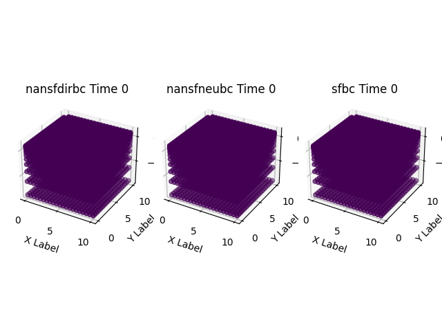
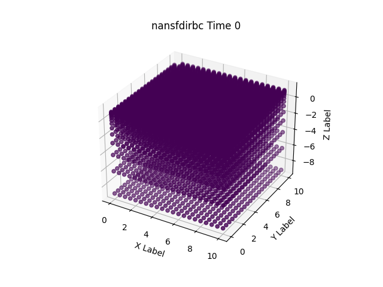

Note
Go to the end to download the full example code.
Update and show Boundary conditions#
This example shows how to use pyCATHY object to update a 3d BC properties from a DEM and run the hydrological model.
- 1st config: Dirichlet runs:
The outlet nodes at the bottom layer form a constant head boundary of zero pressure head
and the nodes above along the outlet face have a no-flow condition imposed
- 2nd config: return flow runs:
the entire outlet face is a no-flow boundary and water is allowed
to leave the system only by exfiltration (return flow) through the surface.
Estimated time to run the notebook = 5min
# !! run preprocessor change the DEM shape !
# dtm_13 does not have the same shape anymore!
import os
import matplotlib.pyplot as plt
import numpy as np
import pandas as pd
import pyCATHY.meshtools as mt
from pyCATHY import cathy_tools
from pyCATHY.importers import cathy_inputs as in_CT
from pyCATHY.importers import cathy_outputs as out_CT
from pyCATHY.plotters import cathy_plots as cplt
import pyvista as pv
path2prj = "./" # add your local path here
simu = cathy_tools.CATHY(dirName=path2prj,
prj_name="bc_noflow"
)
🏁 Initiate CATHY object
dem_mat, str_hd_dem = in_CT.read_dem(
os.path.join(simu.workdir, simu.project_name, "prepro/dem"),
os.path.join(simu.workdir, simu.project_name, "prepro/dtm_13.val"),
)
maxdepth = 10
zb = np.geomspace(1e-1, maxdepth, num=15)
nstr=len(zb)
zr = [abs(zb[0]/maxdepth)]
zr.extend(list(abs(np.diff(zb)/maxdepth)))
dem = np.ones(np.shape(dem_mat))
dem[-1,-1] = 1-1e-3
simu.update_prepo_inputs(
DEM=np.ones(np.shape(dem_mat)),
nstr=nstr,
zratio=zr,
base=max(zb),
)
simu.create_mesh_vtk(verbose=True)
🔄 Update hap.in file
🔄 Update dem_parameters file
Error: outlet not defined
🔄 Update dtm_13 file
🔄 update zone file
🔄 Update dem_parameters file
🔄 Update parm file
🔄 Update dem_parameters file
🍳 gfortran compilation
👟 Run preprocessor
wbb...
searching the dtm_13.val input file...
assigned nodata value = -9999.0000000000000
number of processed cells = 400
...wbb completed
rn...
csort I...
...completed
depit...
dem modifications = 396
dem modifications = 390
dem modifications = 381
dem modifications = 373
dem modifications = 360
dem modifications = 342
dem modifications = 325
dem modifications = 302
dem modifications = 282
dem modifications = 255
dem modifications = 227
dem modifications = 196
dem modifications = 169
dem modifications = 126
dem modifications = 89
dem modifications = 36
dem modifications = 3
dem modifications = 0
dem modifications = 4252 (total)
...completed
csort II...
...completed
cca...
contour curvature threshold value = 9.99999996E+11
...completed
smean...
mean (min,max) facet slope = 0.000000127 ( 0.000000000, 0.000000130)
...completed
dsf...
s_max = 0 at i_basin = 40
s_max = 0 at i_basin = 39
s_max = 0 at i_basin = 19
the drainage direction of the outlet cell ( 4 ) defined in hap.in is used
...completed
hg...
...completed
saving the data in the basin_b/basin_i files...
...rn completed
mrbb...
Select the header type:
0) None
1) ESRI ascii file
2) GRASS ascii file
(Ctrl C to exit)
->
Select the nodata value:
(Ctrl C to exit)
->
Select the pointer system:
1) HAP system
2) Arc/Gis system
(Ctrl C to exit)
-> ~~~~~~~~~~~~~~~~~~~~~~~~~~~~~~~~~~~~~~~~~~
dem file
min value = 0.000000E+00
max value = 0.100000E+01
number of cells = 400
mean value = 0.997501E+00
writing the output file...
~~~~~~~~~~~~~~~~~~~~~~~~~~~~~~~~~~~~~~~~~~
lakes_map file
min value = 0
max value = 0
number of cells = 400
mean value = 0.000000
writing the output file...
~~~~~~~~~~~~~~~~~~~~~~~~~~~~~~~~~~~~~~~~~~
zone file
min value = 1
max value = 1
number of cells = 400
mean value = 1.000000
writing the output file...
~~~~~~~~~~~~~~~~~~~~~~~~~~~~~~~~~~~~~~~~~~
dtm_w_1 file
min value = 0.000000E+00
max value = 0.100000E+01
number of cells = 400
mean value = 0.952500E+00
writing the output file...
~~~~~~~~~~~~~~~~~~~~~~~~~~~~~~~~~~~~~~~~~~
dtm_w_2 file
min value = 0.000000E+00
max value = 0.100000E+01
number of cells = 400
mean value = 0.475000E-01
writing the output file...
~~~~~~~~~~~~~~~~~~~~~~~~~~~~~~~~~~~~~~~~~~
dtm_p_outflow_1 file
min value = 0
max value = 8
number of cells = 400
mean value = 3.905000
writing the output file...
~~~~~~~~~~~~~~~~~~~~~~~~~~~~~~~~~~~~~~~~~~
dtm_p_outflow_2 file
min value = 0
max value = 9
number of cells = 400
mean value = 2.297500
writing the output file...
~~~~~~~~~~~~~~~~~~~~~~~~~~~~~~~~~~~~~~~~~~
A_inflow file
min value = 0.000000000000E+00
max value = 0.189750000000E+03
number of cells = 400
mean value = 0.344374990463E+01
writing the output file...
~~~~~~~~~~~~~~~~~~~~~~~~~~~~~~~~~~~~~~~~~~
dtm_local_slope_1 file
min value = 0.000000E+00
max value = 0.130000E-06
number of cells = 400
mean value = 0.122850E-06
writing the output file...
~~~~~~~~~~~~~~~~~~~~~~~~~~~~~~~~~~~~~~~~~~
dtm_local_slope_2 file
min value = 0.000000E+00
max value = 0.919239E-07
number of cells = 400
mean value = 0.705516E-07
writing the output file...
~~~~~~~~~~~~~~~~~~~~~~~~~~~~~~~~~~~~~~~~~~
dtm_epl_1 file
min value = 0.000000E+00
max value = 0.500000E+00
number of cells = 400
mean value = 0.497500E+00
writing the output file...
~~~~~~~~~~~~~~~~~~~~~~~~~~~~~~~~~~~~~~~~~~
dtm_epl_2 file
min value = 0.000000E+00
max value = 0.707107E+00
number of cells = 400
mean value = 0.574524E+00
writing the output file...
~~~~~~~~~~~~~~~~~~~~~~~~~~~~~~~~~~~~~~~~~~
dtm_kSs1_sf_1 file
min value = 0.000000E+00
max value = 0.240040E+02
number of cells = 400
mean value = 0.228638E+02
writing the output file...
~~~~~~~~~~~~~~~~~~~~~~~~~~~~~~~~~~~~~~~~~~
dtm_kSs1_sf_2 file
min value = 0.000000E+00
max value = 0.240040E+02
number of cells = 400
mean value = 0.114019E+01
writing the output file...
~~~~~~~~~~~~~~~~~~~~~~~~~~~~~~~~~~~~~~~~~~
dtm_Ws1_sf file
min value = 0.000000E+00
max value = 0.100000E+01
number of cells = 400
mean value = 0.952500E+00
writing the output file...
~~~~~~~~~~~~~~~~~~~~~~~~~~~~~~~~~~~~~~~~~~
dtm_Ws1_sf_2 file
min value = 0.000000E+00
max value = 0.100000E+01
number of cells = 400
mean value = 0.475000E-01
writing the output file...
~~~~~~~~~~~~~~~~~~~~~~~~~~~~~~~~~~~~~~~~~~
dtm_b1_sf file
min value = 0.000000E+00
max value = 0.000000E+00
number of cells = 400
mean value = 0.000000E+00
writing the output file...
~~~~~~~~~~~~~~~~~~~~~~~~~~~~~~~~~~~~~~~~~~
dtm_y1_sf file
min value = 0.000000E+00
max value = 0.000000E+00
number of cells = 400
mean value = 0.000000E+00
writing the output file...
~~~~~~~~~~~~~~~~~~~~~~~~~~~~~~~~~~~~~~~~~~
dtm_hcID file
min value = 0
max value = 0
number of cells = 400
mean value = 0.000000
writing the output file...
~~~~~~~~~~~~~~~~~~~~~~~~~~~~~~~~~~~~~~~~~~
dtm_q_output file
min value = 0
max value = 0
number of cells = 400
mean value = 0.000000
writing the output file...
~~~~~~~~~~~~~~~~~~~~~~~~~~~~~~~~~~~~~~~~~~
dtm_nrc file
min value = 0.100000E+01
max value = 0.100000E+01
number of cells = 400
mean value = 0.100000E+01
writing the output file...
...mrbb completed
bb2shp...
writing file river_net.shp
Note: The following floating-point exceptions are signalling: IEEE_UNDERFLOW_FLAG IEEE_DENORMAL
🔄 Update parm file
🛠 Recompile src files [3s]
🍳 gfortran compilation [7s]
b''
👟 Run processor
b'\n\n IPRT1=3: Program terminating after output of X, Y, Z coordinate values\n'
# add nodes of interest
node_bot, node_bot_pos = simu.find_nearest_node([5,5,-9])
node_top, node_top_pos = simu.find_nearest_node([5,5,1])
node_leftxmin, node_leftxmin_pos = simu.find_nearest_node([0,5,-9/2])
NOI = [node_bot,node_top,node_leftxmin]
NOI_pos = [node_bot_pos,node_top_pos,node_leftxmin_pos]
NOI_labels = ['bot','top','left_xmin']
NOI_colors = ['b','orange','green']
pl = pv.Plotter(notebook=False)
mesh = pv.read(os.path.join(simu.workdir,
simu.project_name,
'vtk',simu.project_name + '.vtk'
)
)
pl.add_mesh(mesh,
style='wireframe',
opacity=0.1,
color='k'
)
for i, n in enumerate(NOI):
pl.add_points(NOI_pos[i][0],
color=NOI_colors[i],
label=NOI_labels[i],
point_size=30
)
pl.show_bounds()
pl.view_zx()
pl.show()
df_atmbc = simu.read_inputs('atmbc')
time = [0,12e3,18e3]
simu.update_atmbc(
HSPATM=1,
IETO=1,
time=time,
netValue=[5.5e-06, 0, 0]
)
simu.show_input('atmbc')
🔄 Update atmbc
🔄 Update parm file
This mesh is automatically created when updating with update_nansfneubc()
simu.create_mesh_bounds_df(
'nansfdirbc',
simu.grid3d["mesh3d_nodes"],
time,
)
print(simu.mesh_bound_cond_df.head())
id_node x y z time noflow_bound top_bound bot_bound xmin_bound ymin_bound xmax_bound ymax_bound all_sides
0 0 0.5 10.0 1.0 0.0 1.0 True False False False False True True
1 1 1.0 10.0 1.0 0.0 1.0 True False False False False True True
2 2 1.5 10.0 1.0 0.0 1.0 True False False False False True True
3 3 2.0 10.0 1.0 0.0 1.0 True False False False False True True
4 4 2.5 10.0 1.0 0.0 1.0 True False False False False True True
simu.update_nansfneubc(no_flow=True)
simu.update_nansfdirbc(no_flow=True)
simu.update_sfbc(no_flow=True)
shortcut set_BC_laterals mesh dataframe
🔄 Update parm file
🔄 Update parm file
simu.show_bc(time=0)
meshbc = simu.mesh_bound_cond_df
cplt.plot_mesh_bounds('nansfdirbc',meshbc, time=0)
- 
- 
<mpl_toolkits.mplot3d.art3d.Path3DCollection object at 0x7fa9a9028040>
simu.update_ic(INDP=0,
IPOND=0,
pressure_head_ini=-15
)
🔄 Update ic
Single value detected for ic ==> assumming it homogeneous
simu.update_parm(DELTAT=1e3)
simu.run_processor(IPRT1=2,
TRAFLAG=0,
verbose=True
)
🔄 Update parm file
🔄 Update parm file
🛠 Recompile src files [8s]
🍳 gfortran compilation [12s]
b''
👟 Run processor
b'\n nsf (# of seepage faces) = 0\n\n\n TIME STEP: 1 DELTAT: 1.0000E+03 TIME: 1.0000E+03\n
******************************************************************\n\n\n NONLINEAR CONVERGENCE BEHAVIOR \n iter- convergence error norms node PNEW at POLD at
residual error norms\n ation PL2 PIKMAX IKMAX IKMAX IKMAX FL2 FINF\n 1 5.8310E+02 5.7386E+01 21 5.24E+01 -5.00E+00 2.303E-05 1.183E-06\n
2 7.9165E+02 6.6774E+01 461 5.18E+01 -1.50E+01 1.717E-01 9.187E-03\n 3 8.2469E+02 -5.1905E+01 21 4.81E-01 5.24E+01 6.408E-01 3.215E-02\n 4 2.5642E+02
2.6378E+01 90 2.14E+01 -4.98E+00 6.201E-02 5.824E-03\n 5 3.0478E+02 2.9933E+01 530 2.08E+01 -9.17E+00 5.860E-02 7.209E-03\n 6 3.1263E+02 2.1560E+01 1972
6.56E+00 -1.50E+01 2.330E-01 2.767E-02\n 7 3.1056E+02 2.3992E+01 242 1.93E+01 -4.70E+00 1.467E-01 1.359E-02\n 8 3.2861E+02 2.8147E+01 682 1.93E+01 -8.81E+00
1.007E-01 8.842E-03\n 9 3.2168E+02 -2.1712E+01 242 -2.42E+00 1.93E+01 1.903E-01 1.952E-02\n 10 2.7278E+02 2.4801E+01 21 2.19E+01 -2.92E+00 5.485E-02 6.633E-03\n
CONVERGENCE NOT ACHIEVED IN 10 ITERATIONS\n\n\n TIME STEP: 1 DELTAT: 5.0000E+02 TIME: 5.0000E+02\n
******************************************************************\n\n\n NONLINEAR CONVERGENCE BEHAVIOR \n iter- convergence error norms node PNEW at POLD at
residual error norms\n ation PL2 PIKMAX IKMAX IKMAX IKMAX FL2 FINF\n 1 2.4727E+02 2.6536E+01 21 2.15E+01 -5.00E+00 1.929E-05 9.901E-07\n
2 4.5597E+02 3.6283E+01 461 2.13E+01 -1.50E+01 9.908E-02 5.160E-03\n 3 5.7344E+02 -3.0891E+01 242 -2.48E+01 6.11E+00 3.647E-01 1.569E-02\n 4 2.0988E+02
1.4637E+01 1655 -3.63E-01 -1.50E+01 4.474E-02 5.501E-03\n 5 2.5561E+02 1.5105E+01 16 1.07E+01 -4.40E+00 5.135E-02 3.549E-03\n 6 4.4788E+02 -2.6395E+01 242
-2.64E+01 1.98E-03 2.046E-01 1.094E-02\n 7 2.5259E+02 1.6966E+01 1364 1.97E+00 -1.50E+01 1.054E-01 1.126E-02\n 8 2.7321E+02 1.5149E+01 1783 1.49E-01 -1.50E+01
6.077E-02 4.988E-03\n 9 5.7233E+02 -3.2185E+01 198 -3.22E+01 1.98E-03 1.949E-01 9.712E-03\n 10 3.5133E+02 2.9043E+01 638 -3.04E+00 -3.21E+01 3.299E-02 8.949E-03\n
CONVERGENCE NOT ACHIEVED IN 10 ITERATIONS\n\n\n TIME STEP: 1 DELTAT: 2.5000E+02 TIME: 2.5000E+02\n
******************************************************************\n\n\n NONLINEAR CONVERGENCE BEHAVIOR \n iter- convergence error norms node PNEW at POLD at
residual error norms\n ation PL2 PIKMAX IKMAX IKMAX IKMAX FL2 FINF\n 1 8.0201E+01 1.1109E+01 21 6.11E+00 -5.00E+00 1.184E-05 6.052E-07\n
2 1.1184E+02 2.1115E+01 441 6.12E+00 -1.50E+01 8.485E-03 1.661E-03\n 3 1.4290E+02 1.6215E+01 735 1.25E+00 -1.50E+01 3.967E-02 4.624E-03\n 4 1.5855E+02
1.5645E+01 778 6.54E-01 -1.50E+01 8.797E-02 9.969E-03\n 5 1.3339E+02 1.5233E+01 507 2.39E-01 -1.50E+01 5.974E-02 9.480E-03\n 6 1.2197E+02 1.4769E+01 968
-2.31E-01 -1.50E+01 5.350E-02 9.284E-03\n 7 8.4059E+01 6.3122E+00 1408 -8.69E+00 -1.50E+01 9.956E-05 8.716E-05\n 8 1.2384E+02 1.2025E+01 483 -3.55E-01 -1.24E+01
1.706E-02 2.502E-03\n 9 1.3405E+02 1.2353E+01 902 -2.33E+00 -1.47E+01 8.385E-02 8.518E-03\n 10 6.7318E+01 -4.5178E+00 487 -1.10E+01 -6.46E+00 1.631E-05 1.926E-06\n
CONVERGENCE NOT ACHIEVED IN 10 ITERATIONS\n\n\n TIME STEP: 1 DELTAT: 1.2500E+02 TIME: 1.2500E+02\n
******************************************************************\n\n\n NONLINEAR CONVERGENCE BEHAVIOR \n iter- convergence error norms node PNEW at POLD at
residual error norms\n ation PL2 PIKMAX IKMAX IKMAX IKMAX FL2 FINF\n 1 1.6083E+01 3.3953E+00 21 -1.60E+00 -5.00E+00 3.925E-06 3.389E-07\n
2 1.8617E+00 -7.7551E-01 21 -2.38E+00 -1.60E+00 4.520E-07 2.412E-07\n 3 1.2559E+01 -1.7474E+00 440 -6.75E+00 -5.00E+00 3.771E-06 3.389E-07\n 4 5.6711E-02
-4.0097E-02 21 -2.77E+00 -2.73E+00 8.147E-09 5.761E-09\n 5 1.2549E+01 -1.7474E+00 440 -6.75E+00 -5.00E+00 3.770E-06 3.389E-07\n 6 3.1083E-04 3.2557E-05 880
-1.50E+01 -1.50E+01 2.542E-11 1.343E-12\n CONVERGENCE ACHIEVED IN 6 ITERATIONS\n\n\n TIME STEP: 2 DELTAT: 1.2500E+02 TIME: 2.5000E+02\n
******************************************************************\n\n\n NONLINEAR CONVERGENCE BEHAVIOR \n iter- convergence error norms node PNEW at POLD at
residual error norms\n ation PL2 PIKMAX IKMAX IKMAX IKMAX FL2 FINF\n 1 7.9302E+01 4.0800E+00 22 -1.86E-01 -4.27E+00 2.678E-05 1.375E-06\n
2 9.4844E+01 1.5572E+01 461 5.74E-01 -1.50E+01 7.163E-03 1.189E-03\n 3 1.5149E+02 -1.6660E+01 461 -1.61E+01 5.74E-01 2.821E-02 3.152E-03\n 4 1.9789E+01
-3.8614E+00 481 -1.35E+01 -9.64E+00 3.524E-06 5.440E-07\n 5 1.3141E+02 1.5094E+01 797 9.52E-02 -1.50E+01 1.996E-02 2.368E-03\n 6 4.2463E+02 -3.6235E+01 461
-3.61E+01 9.56E-02 7.543E-02 6.200E-03\n 7 3.3122E+02 3.8883E+01 461 2.74E+00 -3.61E+01 7.652E-06 9.958E-07\n 8 1.1403E+02 1.5115E+01 924 1.15E-01 -1.50E+01
1.835E-02 3.264E-03\n 9 7.3833E+02 -5.2213E+01 456 -5.21E+01 8.34E-02 8.312E-02 1.077E-02\n 10 9.3496E+02 8.6327E+01 456 3.42E+01 -5.21E+01 2.147E-05 4.786E-06\n
CONVERGENCE NOT ACHIEVED IN 10 ITERATIONS\n\n\n TIME STEP: 2 DELTAT: 6.2500E+01 TIME: 1.8750E+02\n
******************************************************************\n\n\n NONLINEAR CONVERGENCE BEHAVIOR \n iter- convergence error norms node PNEW at POLD at
residual error norms\n ation PL2 PIKMAX IKMAX IKMAX IKMAX FL2 FINF\n 1 3.9651E+01 2.0400E+00 22 -2.23E+00 -4.27E+00 2.678E-05 1.375E-06\n
2 8.1350E+00 -4.6211E-01 22 -2.69E+00 -2.23E+00 1.126E-05 5.711E-07\n 3 9.4748E-01 -1.1303E-01 21 -1.64E+00 -1.52E+00 1.007E-06 7.574E-08\n 4 1.9050E-02
-6.2775E-03 21 -1.64E+00 -1.64E+00 1.422E-08 3.791E-09\n 5 5.2819E-05 -3.1146E-05 461 -1.50E+01 -1.50E+01 1.347E-11 7.968E-12\n CONVERGENCE ACHIEVED IN 5
ITERATIONS\n\n\n TIME STEP: 3 DELTAT: 6.2500E+01 TIME: 2.5000E+02\n ******************************************************************\n\n\n
NONLINEAR CONVERGENCE BEHAVIOR \n iter- convergence error norms node PNEW at POLD at residual error norms\n ation PL2 PIKMAX IKMAX IKMAX IKMAX FL2
FINF\n 1 2.3510E+01 1.1492E+00 418 -2.36E+00 -3.51E+00 2.678E-05 1.375E-06\n 2 4.3398E+00 -2.2405E-01 22 -1.91E+00 -1.68E+00 8.863E-06 4.522E-07\n 3
3.2125E-01 -2.6363E-02 21 -1.08E+00 -1.05E+00 5.570E-07 3.396E-08\n 4 2.6488E-03 -8.6996E-04 461 -1.50E+01 -1.50E+01 2.895E-09 4.667E-10\n 5 2.0808E-05 -1.2553E-05
461 -1.50E+01 -1.50E+01 2.538E-12 1.024E-12\n CONVERGENCE ACHIEVED IN 5 ITERATIONS\n\n\n TIME STEP: 4 DELTAT: 6.2500E+01 TIME: 3.1250E+02\n
******************************************************************\n\n\n NONLINEAR CONVERGENCE BEHAVIOR \n iter- convergence error norms node PNEW at POLD at
residual error norms\n ation PL2 PIKMAX IKMAX IKMAX IKMAX FL2 FINF\n 1 1.5067E+01 7.3632E-01 418 -1.85E+00 -2.58E+00 2.677E-05 1.375E-06\n
2 2.5135E+00 -1.2306E-01 44 -1.97E+00 -1.85E+00 7.322E-06 3.745E-07\n 3 1.3473E-01 -1.6023E-02 461 -1.49E+01 -1.49E+01 3.408E-07 1.902E-08\n 4 2.2115E-03
-1.0917E-03 461 -1.49E+01 -1.49E+01 7.488E-10 8.951E-11\n 5 5.5170E-06 -1.7213E-06 461 -1.49E+01 -1.49E+01 8.870E-13 1.411E-13\n CONVERGENCE ACHIEVED IN 5
ITERATIONS\n\n\n TIME STEP: 5 DELTAT: 6.2500E+01 TIME: 3.7500E+02\n ******************************************************************\n\n\n
NONLINEAR CONVERGENCE BEHAVIOR \n iter- convergence error norms node PNEW at POLD at residual error norms\n ation PL2 PIKMAX IKMAX IKMAX IKMAX FL2
FINF\n 1 1.0222E+01 4.9860E-01 439 -1.91E+00 -2.41E+00 2.677E-05 1.375E-06\n 2 1.5637E+00 8.3535E-02 441 -1.48E+01 -1.49E+01 6.245E-06 3.198E-07\n 3
8.5169E-02 -2.7754E-02 441 -1.49E+01 -1.48E+01 2.220E-07 1.151E-08\n 4 2.6240E-03 -1.2329E-03 461 -1.49E+01 -1.49E+01 3.477E-10 1.024E-10\n 5 1.5621E-05 1.0985E-05
461 -1.49E+01 -1.49E+01 1.856E-12 9.222E-13\n CONVERGENCE ACHIEVED IN 5 ITERATIONS\n\n\n TIME STEP: 6 DELTAT: 6.2500E+01 TIME: 4.3750E+02\n
******************************************************************\n\n\n NONLINEAR CONVERGENCE BEHAVIOR \n iter- convergence error norms node PNEW at POLD at
residual error norms\n ation PL2 PIKMAX IKMAX IKMAX IKMAX FL2 FINF\n 1 7.2466E+00 3.7642E-01 440 -1.78E+00 -2.15E+00 2.675E-05 1.374E-06\n
2 1.0772E+00 1.5520E-01 461 -1.46E+01 -1.48E+01 5.453E-06 2.794E-07\n 3 1.0401E-01 -4.5656E-02 461 -1.47E+01 -1.46E+01 1.504E-07 7.769E-09\n 4 2.6903E-03
-1.0027E-03 441 -1.47E+01 -1.47E+01 4.033E-10 8.559E-11\n 5 3.1977E-05 2.1296E-05 441 -1.47E+01 -1.47E+01 4.053E-12 1.826E-12\n CONVERGENCE ACHIEVED IN 5
ITERATIONS\n\n\n TIME STEP: 7 DELTAT: 6.2500E+01 TIME: 5.0000E+02\n ******************************************************************\n\n\n
NONLINEAR CONVERGENCE BEHAVIOR \n iter- convergence error norms node PNEW at POLD at residual error norms\n ation PL2 PIKMAX IKMAX IKMAX IKMAX FL2
FINF\n 1 5.3381E+00 2.9463E-01 440 -1.52E+00 -1.82E+00 2.672E-05 1.373E-06\n 2 9.4151E-01 2.5618E-01 441 -1.42E+01 -1.45E+01 4.851E-06 2.485E-07\n 3
1.5504E-01 -7.0323E-02 441 -1.43E+01 -1.42E+01 1.043E-07 6.361E-09\n 4 2.3072E-03 -3.4524E-04 818 -1.48E+01 -1.48E+01 4.323E-10 4.085E-11\n 5 3.0736E-05 -1.5440E-05
441 -1.43E+01 -1.43E+01 4.587E-12 1.388E-12\n CONVERGENCE ACHIEVED IN 5 ITERATIONS\n\n\n TIME STEP: 8 DELTAT: 6.2500E+01 TIME: 5.6250E+02\n
******************************************************************\n\n\n NONLINEAR CONVERGENCE BEHAVIOR \n iter- convergence error norms node PNEW at POLD at
residual error norms\n ation PL2 PIKMAX IKMAX IKMAX IKMAX FL2 FINF\n 1 4.1319E+00 3.6730E-01 441 -1.39E+01 -1.43E+01 2.667E-05 1.371E-06\n
2 1.1158E+00 3.6688E-01 461 -1.35E+01 -1.39E+01 4.385E-06 2.245E-07\n 3 2.2431E-01 -9.9000E-02 441 -1.36E+01 -1.35E+01 7.499E-08 9.778E-09\n 4 4.3090E-03
2.8122E-03 441 -1.36E+01 -1.36E+01 7.193E-10 3.323E-10\n 5 3.2120E-04 -2.2674E-04 441 -1.36E+01 -1.36E+01 4.444E-11 2.219E-11\n 6 2.1247E-05 1.5021E-05 461
-1.36E+01 -1.36E+01 2.942E-12 1.471E-12\n CONVERGENCE ACHIEVED IN 6 ITERATIONS\n\n\n TIME STEP: 9 DELTAT: 6.2500E+01 TIME: 6.2500E+02\n
******************************************************************\n\n\n NONLINEAR CONVERGENCE BEHAVIOR \n iter- convergence error norms node PNEW at POLD at
residual error norms\n ation PL2 PIKMAX IKMAX IKMAX IKMAX FL2 FINF\n 1 3.5528E+00 5.9206E-01 441 -1.30E+01 -1.36E+01 2.658E-05 1.369E-06\n
2 1.4776E+00 4.4696E-01 441 -1.26E+01 -1.30E+01 4.024E-06 2.057E-07\n 3 3.0340E-01 -1.2359E-01 461 -1.27E+01 -1.26E+01 6.224E-08 1.386E-08\n 4 1.0022E-02
6.9538E-03 441 -1.27E+01 -1.27E+01 1.722E-09 8.844E-10\n 5 1.0867E-03 -7.6730E-04 441 -1.27E+01 -1.27E+01 1.700E-10 8.506E-11\n 6 1.0232E-04 7.2336E-05 441
-1.27E+01 -1.27E+01 1.605E-11 8.029E-12\n CONVERGENCE ACHIEVED IN 6 ITERATIONS\n\n\n TIME STEP: 10 DELTAT: 6.2500E+01 TIME: 6.8750E+02\n
******************************************************************\n\n\n NONLINEAR CONVERGENCE BEHAVIOR \n iter- convergence error norms node PNEW at POLD at
residual error norms\n ation PL2 PIKMAX IKMAX IKMAX IKMAX FL2 FINF\n 1 3.6864E+00 8.2106E-01 441 -1.19E+01 -1.27E+01 2.645E-05 1.365E-06\n
2 1.9144E+00 4.6219E-01 461 -1.14E+01 -1.19E+01 3.747E-06 1.910E-07\n 3 3.8294E-01 -1.3465E-01 441 -1.16E+01 -1.14E+01 6.815E-08 1.779E-08\n 4 1.7255E-02
1.1344E-02 441 -1.16E+01 -1.16E+01 3.407E-09 1.656E-09\n 5 2.2732E-03 -1.5914E-03 441 -1.16E+01 -1.16E+01 4.181E-10 2.075E-10\n 6 2.7452E-04 1.9384E-04 441
-1.16E+01 -1.16E+01 5.066E-11 2.532E-11\n 7 3.3687E-05 -2.3815E-05 441 -1.16E+01 -1.16E+01 6.213E-12 3.106E-12\n CONVERGENCE ACHIEVED IN 7 ITERATIONS\n\n\n TIME
STEP: 11 DELTAT: 3.1250E+01 TIME: 7.1875E+02\n ******************************************************************\n\n\n NONLINEAR CONVERGENCE
BEHAVIOR \n iter- convergence error norms node PNEW at POLD at residual error norms\n ation PL2 PIKMAX IKMAX IKMAX IKMAX FL2 FINF\n 1
2.2757E+00 5.1640E-01 441 -1.10E+01 -1.16E+01 2.626E-05 1.358E-06\n 2 5.1940E-01 1.0058E-01 461 -1.09E+01 -1.10E+01 1.638E-06 8.328E-08\n 3 4.7325E-02 -1.5496E-02
461 -1.10E+01 -1.09E+01 1.789E-08 4.208E-09\n 4 1.6291E-03 1.0018E-03 461 -1.10E+01 -1.10E+01 6.357E-10 2.776E-10\n 5 1.0724E-04 -7.4191E-05 441 -1.10E+01
-1.10E+01 4.115E-11 2.012E-11\n CONVERGENCE ACHIEVED IN 5 ITERATIONS\n\n\n TIME STEP: 12 DELTAT: 3.1250E+01 TIME: 7.5000E+02\n
******************************************************************\n\n\n NONLINEAR CONVERGENCE BEHAVIOR \n iter- convergence error norms node PNEW at POLD at
residual error norms\n ation PL2 PIKMAX IKMAX IKMAX IKMAX FL2 FINF\n 1 2.5966E+00 5.5047E-01 441 -1.04E+01 -1.10E+01 2.613E-05 1.354E-06\n
2 5.7451E-01 9.3385E-02 461 -1.03E+01 -1.04E+01 1.603E-06 8.128E-08\n 3 5.1980E-02 -1.5320E-02 441 -1.03E+01 -1.03E+01 2.104E-08 4.559E-09\n 4 1.9016E-03
1.1057E-03 441 -1.03E+01 -1.03E+01 8.025E-10 3.354E-10\n 5 1.3156E-04 -8.9715E-05 441 -1.03E+01 -1.03E+01 5.518E-11 2.666E-11\n CONVERGENCE ACHIEVED IN 5
ITERATIONS\n\n\n TIME STEP: 13 DELTAT: 3.1250E+01 TIME: 7.8125E+02\n ******************************************************************\n\n\n
NONLINEAR CONVERGENCE BEHAVIOR \n iter- convergence error norms node PNEW at POLD at residual error norms\n ation PL2 PIKMAX IKMAX IKMAX IKMAX FL2
FINF\n 1 2.9653E+00 5.6983E-01 441 -9.75E+00 -1.03E+01 2.598E-05 1.349E-06\n 2 6.2687E-01 8.4205E-02 461 -9.67E+00 -9.75E+00 1.574E-06 7.957E-08\n 3
5.6269E-02 -1.4733E-02 441 -9.68E+00 -9.67E+00 2.440E-08 4.835E-09\n 4 2.1562E-03 1.1657E-03 441 -9.68E+00 -9.68E+00 9.836E-10 3.895E-10\n 5 1.5292E-04 -1.0189E-04
461 -9.68E+00 -9.68E+00 7.034E-11 3.338E-11\n 6 1.2326E-05 8.6159E-06 441 -9.68E+00 -9.68E+00 5.705E-12 2.825E-12\n CONVERGENCE ACHIEVED IN 6 ITERATIONS\n\n\n
TIME STEP: 14 DELTAT: 3.1250E+01 TIME: 8.1250E+02\n ******************************************************************\n\n\n NONLINEAR CONVERGENCE
BEHAVIOR \n iter- convergence error norms node PNEW at POLD at residual error norms\n ation PL2 PIKMAX IKMAX IKMAX IKMAX FL2 FINF\n 1
3.3684E+00 5.7494E-01 441 -9.11E+00 -9.68E+00 2.581E-05 1.343E-06\n 2 6.7581E-01 7.6616E-02 458 -1.21E+01 -1.22E+01 1.551E-06 7.814E-08\n 3 6.0083E-02 -1.3846E-02
461 -9.05E+00 -9.03E+00 2.792E-08 5.035E-09\n 4 2.3910E-03 1.1821E-03 461 -9.05E+00 -9.05E+00 1.177E-09 4.373E-10\n 5 1.7068E-04 -1.0973E-04 461 -9.05E+00
-9.05E+00 8.610E-11 3.984E-11\n 6 1.4229E-05 9.8486E-06 441 -9.05E+00 -9.05E+00 7.279E-12 3.579E-12\n CONVERGENCE ACHIEVED IN 6 ITERATIONS\n\n\n TIME STEP: 15
DELTAT: 3.1250E+01 TIME: 8.4375E+02\n ******************************************************************\n\n\n NONLINEAR CONVERGENCE BEHAVIOR \n iter-
convergence error norms node PNEW at POLD at residual error norms\n ation PL2 PIKMAX IKMAX IKMAX IKMAX FL2 FINF\n 1 3.7953E+00
5.6759E-01 441 -8.48E+00 -9.05E+00 2.561E-05 1.336E-06\n 2 7.2126E-01 7.6148E-02 458 -1.16E+01 -1.16E+01 1.534E-06 7.697E-08\n 3 6.3345E-02 -1.2774E-02 441
-8.43E+00 -8.42E+00 3.156E-08 5.165E-09\n 4 2.6025E-03 1.1612E-03 461 -8.43E+00 -8.43E+00 1.380E-09 4.773E-10\n 5 1.8515E-04 -1.1311E-04 461 -8.43E+00 -8.43E+00
1.022E-10 4.567E-11\n 6 1.5644E-05 1.0645E-05 461 -8.43E+00 -8.43E+00 8.851E-12 4.302E-12\n CONVERGENCE ACHIEVED IN 6 ITERATIONS\n\n\n TIME STEP: 16 DELTAT:
3.1250E+01 TIME: 8.7500E+02\n ******************************************************************\n\n\n NONLINEAR CONVERGENCE BEHAVIOR \n iter- convergence
error norms node PNEW at POLD at residual error norms\n ation PL2 PIKMAX IKMAX IKMAX IKMAX FL2 FINF\n 1 4.2380E+00 5.5030E-01 441
-7.88E+00 -8.43E+00 2.539E-05 1.328E-06\n 2 7.6351E-01 7.3723E-02 458 -1.10E+01 -1.11E+01 1.522E-06 7.602E-08\n 3 6.6039E-02 -1.1616E-02 441 -7.83E+00 -7.82E+00
3.529E-08 5.235E-09\n 4 2.7837E-03 1.1117E-03 461 -7.83E+00 -7.83E+00 1.591E-09 5.090E-10\n 5 1.9698E-04 -1.1252E-04 461 -7.83E+00 -7.83E+00 1.184E-10 5.065E-11\n
6 1.6601E-05 1.0994E-05 441 -7.83E+00 -7.83E+00 1.037E-11 4.953E-12\n CONVERGENCE ACHIEVED IN 6 ITERATIONS\n\n\n TIME STEP: 17 DELTAT: 3.1250E+01 TIME:
9.0625E+02\n ******************************************************************\n\n\n NONLINEAR CONVERGENCE BEHAVIOR \n iter- convergence error norms node
PNEW at POLD at residual error norms\n ation PL2 PIKMAX IKMAX IKMAX IKMAX FL2 FINF\n 1 4.6909E+00 5.2577E-01 441 -7.31E+00 -7.83E+00
2.515E-05 1.319E-06\n 2 8.0269E-01 6.9692E-02 458 -1.05E+01 -1.05E+01 1.513E-06 7.529E-08\n 3 6.8212E-02 -1.0449E-02 461 -7.27E+00 -7.26E+00 3.907E-08 5.256E-09\n
4 2.9266E-03 1.0430E-03 441 -7.27E+00 -7.27E+00 1.804E-09 5.326E-10\n 5 2.0658E-04 -1.0881E-04 441 -7.27E+00 -7.27E+00 1.348E-10 5.467E-11\n 6 1.7198E-05
1.0949E-05 461 -7.27E+00 -7.27E+00 1.181E-11 5.507E-12\n CONVERGENCE ACHIEVED IN 6 ITERATIONS\n\n\n TIME STEP: 18 DELTAT: 3.1250E+01 TIME: 9.3750E+02\n
******************************************************************\n\n\n NONLINEAR CONVERGENCE BEHAVIOR \n iter- convergence error norms node PNEW at POLD at
residual error norms\n ation PL2 PIKMAX IKMAX IKMAX IKMAX FL2 FINF\n 1 5.1496E+00 5.1021E-01 458 -9.97E+00 -1.05E+01 2.488E-05 1.309E-06\n
2 8.3839E-01 6.5948E-02 839 -1.06E+01 -1.06E+01 1.509E-06 7.473E-08\n 3 6.9952E-02 -9.3249E-03 461 -6.74E+00 -6.73E+00 4.289E-08 5.238E-09\n 4 3.0254E-03
9.6331E-04 461 -6.74E+00 -6.74E+00 2.017E-09 5.491E-10\n 5 2.1387E-04 -1.0292E-04 461 -6.74E+00 -6.74E+00 1.511E-10 5.775E-11\n 6 1.7538E-05 1.0595E-05 461
-6.74E+00 -6.74E+00 1.318E-11 5.952E-12\n CONVERGENCE ACHIEVED IN 6 ITERATIONS\n\n\n TIME STEP: 19 DELTAT: 3.1250E+01 TIME: 9.6875E+02\n
******************************************************************\n\n\n NONLINEAR CONVERGENCE BEHAVIOR \n iter- convergence error norms node PNEW at POLD at
residual error norms\n ation PL2 PIKMAX IKMAX IKMAX IKMAX FL2 FINF\n 1 5.6096E+00 5.1612E-01 458 -9.40E+00 -9.92E+00 2.459E-05 1.297E-06\n
2 8.6944E-01 6.2390E-02 462 -1.12E+01 -1.12E+01 1.508E-06 7.432E-08\n 3 7.1350E-02 -8.2758E-03 461 -6.25E+00 -6.24E+00 4.673E-08 5.190E-09\n 4 3.0796E-03
8.7912E-04 461 -6.25E+00 -6.25E+00 2.223E-09 5.592E-10\n 5 2.1851E-04 -9.5686E-05 441 -6.25E+00 -6.25E+00 1.671E-10 5.996E-11\n CONVERGENCE ACHIEVED IN 5
ITERATIONS\n\n\n TIME STEP: 20 DELTAT: 3.1250E+01 TIME: 1.0000E+03\n ******************************************************************\n\n\n
NONLINEAR CONVERGENCE BEHAVIOR \n iter- convergence error norms node PNEW at POLD at residual error norms\n ation PL2 PIKMAX IKMAX IKMAX IKMAX FL2
FINF\n 1 6.0651E+00 5.1362E-01 458 -8.84E+00 -9.35E+00 2.427E-05 1.284E-06\n 2 8.9413E-01 5.9865E-02 462 -1.07E+01 -1.07E+01 1.509E-06 7.403E-08\n 3
7.2469E-02 -7.4833E-03 458 -8.79E+00 -8.78E+00 5.059E-08 5.120E-09\n 4 3.0939E-03 7.9520E-04 461 -5.80E+00 -5.80E+00 2.423E-09 5.641E-10\n 5 2.2016E-04 -8.7806E-05
441 -5.80E+00 -5.80E+00 1.825E-10 6.140E-11\n CONVERGENCE ACHIEVED IN 5 ITERATIONS\n\n\n TIME STEP: 21 DELTAT: 3.1250E+01 TIME: 1.0312E+03\n
******************************************************************\n\n\n NONLINEAR CONVERGENCE BEHAVIOR \n iter- convergence error norms node PNEW at POLD at
residual error norms\n ation PL2 PIKMAX IKMAX IKMAX IKMAX FL2 FINF\n 1 6.5078E+00 5.0391E-01 818 -8.29E+00 -8.79E+00 2.395E-05 1.269E-06\n
2 9.1059E-01 5.6417E-02 462 -1.01E+01 -1.02E+01 1.511E-06 7.382E-08\n 3 7.3321E-02 -6.9895E-03 458 -8.25E+00 -8.24E+00 5.444E-08 5.034E-09\n 4 3.0774E-03
7.1467E-04 461 -5.38E+00 -5.38E+00 2.614E-09 5.648E-10\n 5 2.1878E-04 -7.9790E-05 461 -5.38E+00 -5.38E+00 1.970E-10 6.220E-11\n CONVERGENCE ACHIEVED IN 5
ITERATIONS\n\n\n TIME STEP: 22 DELTAT: 3.1250E+01 TIME: 1.0625E+03\n ******************************************************************\n\n\n
NONLINEAR CONVERGENCE BEHAVIOR \n iter- convergence error norms node PNEW at POLD at residual error norms\n ation PL2 PIKMAX IKMAX IKMAX IKMAX FL2
FINF\n 1 6.9269E+00 4.9400E-01 459 -8.44E+00 -8.93E+00 2.361E-05 1.253E-06\n 2 9.1726E-01 5.2329E-02 462 -9.60E+00 -9.66E+00 1.514E-06 7.365E-08\n 3
7.3869E-02 -6.4621E-03 818 -7.72E+00 -7.72E+00 5.826E-08 4.938E-09\n 4 3.0408E-03 6.3942E-04 441 -5.00E+00 -5.00E+00 2.796E-09 5.622E-10\n 5 2.1466E-04 -7.1987E-05
441 -5.00E+00 -5.00E+00 2.103E-10 6.247E-11\n CONVERGENCE ACHIEVED IN 5 ITERATIONS\n\n\n TIME STEP: 23 DELTAT: 3.1250E+01 TIME: 1.0938E+03\n
******************************************************************\n\n\n NONLINEAR CONVERGENCE BEHAVIOR \n iter- convergence error norms node PNEW at POLD at
residual error norms\n ation PL2 PIKMAX IKMAX IKMAX IKMAX FL2 FINF\n 1 7.3105E+00 4.8183E-01 462 -9.13E+00 -9.61E+00 2.326E-05 1.236E-06\n
2 9.1321E-01 4.7878E-02 462 -9.08E+00 -9.13E+00 1.516E-06 7.349E-08\n 3 7.4047E-02 -5.9661E-03 839 -7.89E+00 -7.88E+00 6.202E-08 4.836E-09\n 4 2.9937E-03
5.7041E-04 461 -4.65E+00 -4.65E+00 2.972E-09 5.570E-10\n 5 2.0833E-04 -6.4615E-05 441 -4.65E+00 -4.65E+00 2.223E-10 6.231E-11\n CONVERGENCE ACHIEVED IN 5
ITERATIONS\n\n\n TIME STEP: 24 DELTAT: 3.1250E+01 TIME: 1.1250E+03\n ******************************************************************\n\n\n
NONLINEAR CONVERGENCE BEHAVIOR \n iter- convergence error norms node PNEW at POLD at residual error norms\n ation PL2 PIKMAX IKMAX IKMAX IKMAX FL2
FINF\n 1 7.6463E+00 4.7703E-01 462 -8.61E+00 -9.08E+00 2.291E-05 1.217E-06\n 2 8.9834E-01 4.7075E-02 836 -1.13E+01 -1.13E+01 1.517E-06 7.331E-08\n 3
7.3785E-02 -5.5034E-03 839 -7.39E+00 -7.39E+00 6.567E-08 4.729E-09\n 4 2.9432E-03 5.0795E-04 461 -4.33E+00 -4.33E+00 3.144E-09 5.500E-10\n 5 2.0047E-04 -5.7795E-05
441 -4.33E+00 -4.33E+00 2.330E-10 6.182E-11\n CONVERGENCE ACHIEVED IN 5 ITERATIONS\n\n\n TIME STEP: 25 DELTAT: 3.1250E+01 TIME: 1.1562E+03\n
******************************************************************\n\n\n NONLINEAR CONVERGENCE BEHAVIOR \n iter- convergence error norms node PNEW at POLD at
residual error norms\n ation PL2 PIKMAX IKMAX IKMAX IKMAX FL2 FINF\n 1 7.9236E+00 4.6697E-01 462 -8.10E+00 -8.57E+00 2.257E-05 1.197E-06\n
2 8.7335E-01 4.5802E-02 836 -1.08E+01 -1.09E+01 1.516E-06 7.310E-08\n 3 7.3030E-02 -5.0436E-03 839 -6.92E+00 -6.92E+00 6.917E-08 4.622E-09\n 4 2.8926E-03
4.5196E-04 441 -4.03E+00 -4.03E+00 3.312E-09 5.415E-10\n 5 1.9176E-04 -5.1580E-05 441 -4.03E+00 -4.03E+00 2.425E-10 6.108E-11\n CONVERGENCE ACHIEVED IN 5
ITERATIONS\n\n\n TIME STEP: 26 DELTAT: 3.1250E+01 TIME: 1.1875E+03\n ******************************************************************\n\n\n
NONLINEAR CONVERGENCE BEHAVIOR \n iter- convergence error norms node PNEW at POLD at residual error norms\n ation PL2 PIKMAX IKMAX IKMAX IKMAX FL2
FINF\n 1 8.1344E+00 4.5266E-01 462 -7.62E+00 -8.07E+00 2.223E-05 1.177E-06\n 2 8.3960E-01 4.3960E-02 836 -1.04E+01 -1.04E+01 1.513E-06 7.282E-08\n 3
7.1759E-02 -4.5987E-03 839 -6.48E+00 -6.48E+00 7.247E-08 4.515E-09\n 4 2.8420E-03 4.0210E-04 461 -3.76E+00 -3.76E+00 3.477E-09 5.321E-10\n 5 1.8279E-04 -4.5977E-05
441 -3.76E+00 -3.76E+00 2.510E-10 6.016E-11\n CONVERGENCE ACHIEVED IN 5 ITERATIONS\n\n\n TIME STEP: 27 DELTAT: 3.1250E+01 TIME: 1.2188E+03\n
******************************************************************\n\n\n NONLINEAR CONVERGENCE BEHAVIOR \n iter- convergence error norms node PNEW at POLD at
residual error norms\n ation PL2 PIKMAX IKMAX IKMAX IKMAX FL2 FINF\n 1 8.2740E+00 4.3511E-01 462 -7.15E+00 -7.59E+00 2.190E-05 1.155E-06\n
2 7.9890E-01 4.1866E-02 857 -1.06E+01 -1.07E+01 1.508E-06 7.247E-08\n 3 6.9986E-02 -4.2308E-03 462 -7.12E+00 -7.12E+00 7.553E-08 4.409E-09\n 4 2.7895E-03
3.5790E-04 461 -3.52E+00 -3.52E+00 3.639E-09 5.221E-10\n 5 1.7395E-04 -4.0964E-05 461 -3.52E+00 -3.52E+00 2.586E-10 5.910E-11\n CONVERGENCE ACHIEVED IN 5
ITERATIONS\n\n\n TIME STEP: 28 DELTAT: 3.1250E+01 TIME: 1.2500E+03\n ******************************************************************\n\n\n
NONLINEAR CONVERGENCE BEHAVIOR \n iter- convergence error norms node PNEW at POLD at residual error norms\n ation PL2 PIKMAX IKMAX IKMAX IKMAX FL2
FINF\n 1 8.3414E+00 4.2574E-01 836 -9.49E+00 -9.91E+00 2.160E-05 1.134E-06\n 2 7.5327E-01 4.0403E-02 460 -1.06E+01 -1.07E+01 1.500E-06 7.205E-08\n 3
6.7754E-02 -3.8921E-03 462 -6.69E+00 -6.68E+00 7.832E-08 4.306E-09\n 4 2.7318E-03 3.1884E-04 461 -3.29E+00 -3.29E+00 3.798E-09 5.116E-10\n 5 1.6550E-04 -3.6503E-05
441 -3.29E+00 -3.29E+00 2.655E-10 5.796E-11\n CONVERGENCE ACHIEVED IN 5 ITERATIONS\n\n\n TIME STEP: 29 DELTAT: 3.1250E+01 TIME: 1.2812E+03\n
******************************************************************\n\n\n NONLINEAR CONVERGENCE BEHAVIOR \n iter- convergence error norms node PNEW at POLD at
residual error norms\n ation PL2 PIKMAX IKMAX IKMAX IKMAX FL2 FINF\n 1 8.3392E+00 4.2572E-01 836 -9.02E+00 -9.45E+00 2.131E-05 1.112E-06\n
2 7.0471E-01 3.8802E-02 460 -1.02E+01 -1.02E+01 1.489E-06 7.155E-08\n 3 6.5134E-02 -3.5642E-03 462 -6.27E+00 -6.27E+00 8.082E-08 4.206E-09\n 4 2.6665E-03
2.8438E-04 441 -3.08E+00 -3.08E+00 3.952E-09 5.010E-10\n 5 1.5752E-04 -3.2546E-05 441 -3.08E+00 -3.08E+00 2.719E-10 5.676E-11\n CONVERGENCE ACHIEVED IN 5
ITERATIONS\n\n\n TIME STEP: 30 DELTAT: 3.1250E+01 TIME: 1.3125E+03\n ******************************************************************\n\n\n
NONLINEAR CONVERGENCE BEHAVIOR \n iter- convergence error norms node PNEW at POLD at residual error norms\n ation PL2 PIKMAX IKMAX IKMAX IKMAX FL2
FINF\n 1 8.2725E+00 4.2174E-01 836 -8.57E+00 -8.99E+00 2.104E-05 1.089E-06\n 2 6.5501E-01 3.6874E-02 460 -9.75E+00 -9.79E+00 1.477E-06 7.098E-08\n 3
6.2206E-02 -3.2524E-03 462 -5.88E+00 -5.88E+00 8.302E-08 4.109E-09\n 4 2.5915E-03 2.5400E-04 461 -2.89E+00 -2.89E+00 4.099E-09 4.904E-10\n 5 1.4999E-04 -2.9047E-05
461 -2.89E+00 -2.89E+00 2.778E-10 5.553E-11\n CONVERGENCE ACHIEVED IN 5 ITERATIONS\n\n\n TIME STEP: 31 DELTAT: 3.1250E+01 TIME: 1.3438E+03\n
******************************************************************\n\n\n NONLINEAR CONVERGENCE BEHAVIOR \n iter- convergence error norms node PNEW at POLD at
residual error norms\n ation PL2 PIKMAX IKMAX IKMAX IKMAX FL2 FINF\n 1 8.1486E+00 4.1428E-01 836 -8.12E+00 -8.54E+00 2.080E-05 1.067E-06\n
2 6.0568E-01 3.4740E-02 858 -9.45E+00 -9.49E+00 1.462E-06 7.034E-08\n 3 5.9061E-02 -2.9827E-03 835 -8.14E+00 -8.13E+00 8.491E-08 4.028E-09\n 4 2.5065E-03
2.2724E-04 441 -2.72E+00 -2.72E+00 4.237E-09 4.798E-10\n 5 1.4281E-04 -2.5955E-05 441 -2.72E+00 -2.72E+00 2.833E-10 5.428E-11\n CONVERGENCE ACHIEVED IN 5
ITERATIONS\n\n\n TIME STEP: 32 DELTAT: 3.1250E+01 TIME: 1.3750E+03\n ******************************************************************\n\n\n
NONLINEAR CONVERGENCE BEHAVIOR \n iter- convergence error norms node PNEW at POLD at residual error norms\n ation PL2 PIKMAX IKMAX IKMAX IKMAX FL2
FINF\n 1 7.9763E+00 4.0678E-01 857 -8.48E+00 -8.88E+00 2.058E-05 1.045E-06\n 2 5.5788E-01 3.2524E-02 858 -9.02E+00 -9.05E+00 1.446E-06 6.964E-08\n 3
5.5781E-02 -2.8176E-03 835 -7.71E+00 -7.71E+00 8.651E-08 3.995E-09\n 4 2.4118E-03 2.0364E-04 441 -2.56E+00 -2.56E+00 4.365E-09 4.694E-10\n 5 1.3590E-04 -2.3224E-05
441 -2.56E+00 -2.56E+00 2.885E-10 5.304E-11\n CONVERGENCE ACHIEVED IN 5 ITERATIONS\n\n\n TIME STEP: 33 DELTAT: 3.1250E+01 TIME: 1.4062E+03\n
******************************************************************\n\n\n NONLINEAR CONVERGENCE BEHAVIOR \n iter- convergence error norms node PNEW at POLD at
residual error norms\n ation PL2 PIKMAX IKMAX IKMAX IKMAX FL2 FINF\n 1 7.7643E+00 4.0217E-01 460 -8.48E+00 -8.88E+00 2.038E-05 1.024E-06\n
2 5.1241E-01 3.0224E-02 858 -8.59E+00 -8.62E+00 1.429E-06 6.890E-08\n 3 5.2445E-02 -2.6467E-03 815 -7.30E+00 -7.30E+00 8.784E-08 3.975E-09\n 4 2.3089E-03
1.8282E-04 461 -2.41E+00 -2.41E+00 4.482E-09 4.592E-10\n 5 1.2916E-04 -2.0814E-05 461 -2.41E+00 -2.41E+00 2.932E-10 5.181E-11\n CONVERGENCE ACHIEVED IN 5
ITERATIONS\n\n\n TIME STEP: 34 DELTAT: 3.1250E+01 TIME: 1.4375E+03\n ******************************************************************\n\n\n
NONLINEAR CONVERGENCE BEHAVIOR \n iter- convergence error norms node PNEW at POLD at residual error norms\n ation PL2 PIKMAX IKMAX IKMAX IKMAX FL2
FINF\n 1 7.5216E+00 3.9524E-01 860 -8.06E+00 -8.45E+00 2.020E-05 1.003E-06\n 2 4.6975E-01 2.9087E-02 878 -1.13E+01 -1.14E+01 1.411E-06 6.811E-08\n 3
4.9117E-02 -2.4741E-03 815 -6.90E+00 -6.90E+00 8.890E-08 3.948E-09\n 4 2.1996E-03 1.6443E-04 461 -2.27E+00 -2.27E+00 4.586E-09 4.493E-10\n 5 1.2254E-04 -1.8684E-05
461 -2.27E+00 -2.27E+00 2.976E-10 5.061E-11\n CONVERGENCE ACHIEVED IN 5 ITERATIONS\n\n\n TIME STEP: 35 DELTAT: 3.1250E+01 TIME: 1.4688E+03\n
******************************************************************\n\n\n NONLINEAR CONVERGENCE BEHAVIOR \n iter- convergence error norms node PNEW at POLD at
residual error norms\n ation PL2 PIKMAX IKMAX IKMAX IKMAX FL2 FINF\n 1 7.2563E+00 3.8582E-01 860 -7.64E+00 -8.03E+00 2.004E-05 9.830E-07\n
2 4.3015E-01 2.8716E-02 838 -1.10E+01 -1.10E+01 1.393E-06 6.730E-08\n 3 4.5852E-02 -2.3034E-03 835 -6.53E+00 -6.52E+00 8.972E-08 3.916E-09\n 4 2.0861E-03
1.4817E-04 461 -2.14E+00 -2.14E+00 4.679E-09 4.396E-10\n 5 1.1601E-04 -1.6801E-05 441 -2.14E+00 -2.14E+00 3.015E-10 4.943E-11\n CONVERGENCE ACHIEVED IN 5
ITERATIONS\n\n\n TIME STEP: 36 DELTAT: 3.1250E+01 TIME: 1.5000E+03\n ******************************************************************\n\n\n
NONLINEAR CONVERGENCE BEHAVIOR \n iter- convergence error norms node PNEW at POLD at residual error norms\n ation PL2 PIKMAX IKMAX IKMAX IKMAX FL2
FINF\n 1 6.9758E+00 3.7446E-01 858 -7.40E+00 -7.77E+00 1.990E-05 9.635E-07\n 2 3.9364E-01 2.8119E-02 838 -1.06E+01 -1.07E+01 1.374E-06 6.647E-08\n 3
4.2689E-02 -2.1558E-03 837 -6.83E+00 -6.83E+00 9.033E-08 3.881E-09\n 4 1.9703E-03 1.3376E-04 461 -2.03E+00 -2.03E+00 4.759E-09 4.303E-10\n 5 1.0959E-04 -1.5135E-05
461 -2.03E+00 -2.03E+00 3.051E-10 4.828E-11\n CONVERGENCE ACHIEVED IN 5 ITERATIONS\n\n\n TIME STEP: 37 DELTAT: 3.1250E+01 TIME: 1.5312E+03\n
******************************************************************\n\n\n NONLINEAR CONVERGENCE BEHAVIOR \n iter- convergence error norms node PNEW at POLD at
residual error norms\n ation PL2 PIKMAX IKMAX IKMAX IKMAX FL2 FINF\n 1 6.6862E+00 3.6228E-01 858 -7.01E+00 -7.37E+00 1.977E-05 9.449E-07\n
2 3.6015E-01 2.7320E-02 838 -1.03E+01 -1.03E+01 1.356E-06 6.563E-08\n 3 3.9659E-02 -2.0169E-03 858 -6.99E+00 -6.99E+00 9.074E-08 3.842E-09\n 4 1.8544E-03
1.2098E-04 441 -1.92E+00 -1.92E+00 4.828E-09 4.212E-10\n 5 1.0327E-04 -1.3658E-05 441 -1.92E+00 -1.92E+00 3.081E-10 4.717E-11\n CONVERGENCE ACHIEVED IN 5
ITERATIONS\n\n\n TIME STEP: 38 DELTAT: 3.1250E+01 TIME: 1.5625E+03\n ******************************************************************\n\n\n
NONLINEAR CONVERGENCE BEHAVIOR \n iter- convergence error norms node PNEW at POLD at residual error norms\n ation PL2 PIKMAX IKMAX IKMAX IKMAX FL2
FINF\n 1 6.3927E+00 3.4885E-01 858 -6.64E+00 -6.99E+00 1.966E-05 9.270E-07\n 2 3.2950E-01 2.6534E-02 879 -1.02E+01 -1.02E+01 1.337E-06 6.478E-08\n 3
3.6781E-02 -1.8909E-03 858 -6.63E+00 -6.62E+00 9.098E-08 3.802E-09\n 4 1.7399E-03 1.0963E-04 461 -1.82E+00 -1.82E+00 4.885E-09 4.125E-10\n 5 9.7105E-05 -1.2347E-05
461 -1.82E+00 -1.82E+00 3.108E-10 4.609E-11\n CONVERGENCE ACHIEVED IN 5 ITERATIONS\n\n\n TIME STEP: 39 DELTAT: 3.1250E+01 TIME: 1.5938E+03\n
******************************************************************\n\n\n NONLINEAR CONVERGENCE BEHAVIOR \n iter- convergence error norms node PNEW at POLD at
residual error norms\n ation PL2 PIKMAX IKMAX IKMAX IKMAX FL2 FINF\n 1 6.0993E+00 3.4367E-01 861 -9.57E+00 -9.91E+00 1.956E-05 9.099E-07\n
2 3.0149E-01 2.5608E-02 859 -9.86E+00 -9.89E+00 1.318E-06 6.393E-08\n 3 3.4067E-02 -1.7667E-03 858 -6.28E+00 -6.27E+00 9.108E-08 3.761E-09\n 4 1.6282E-03
9.9636E-05 797 -2.63E+00 -2.63E+00 4.932E-09 4.040E-10\n CONVERGENCE ACHIEVED IN 4 ITERATIONS\n\n\n TIME STEP: 40 DELTAT: 3.4375E+01 TIME: 1.6281E+03\n
******************************************************************\n\n\n NONLINEAR CONVERGENCE BEHAVIOR \n iter- convergence error norms node PNEW at POLD at
residual error norms\n ation PL2 PIKMAX IKMAX IKMAX IKMAX FL2 FINF\n 1 6.3583E+00 3.7797E-01 861 -9.17E+00 -9.55E+00 1.948E-05 8.936E-07\n
2 3.3326E-01 2.9639E-02 879 -9.46E+00 -9.49E+00 1.439E-06 6.974E-08\n 3 4.1625E-02 -2.1742E-03 858 -5.91E+00 -5.91E+00 1.105E-07 4.520E-09\n 4 2.1871E-03
1.3063E-04 797 -2.47E+00 -2.47E+00 6.592E-09 5.266E-10\n 5 1.3461E-04 -1.6030E-05 441 -1.63E+00 -1.63E+00 4.574E-10 6.407E-11\n CONVERGENCE ACHIEVED IN 5
ITERATIONS\n\n\n TIME STEP: 41 DELTAT: 3.4375E+01 TIME: 1.6625E+03\n ******************************************************************\n\n\n
NONLINEAR CONVERGENCE BEHAVIOR \n iter- convergence error norms node PNEW at POLD at residual error norms\n ation PL2 PIKMAX IKMAX IKMAX IKMAX FL2
FINF\n 1 6.0152E+00 3.7660E-01 861 -8.76E+00 -9.14E+00 1.940E-05 8.766E-07\n 2 3.0239E-01 2.8091E-02 859 -9.06E+00 -9.09E+00 1.417E-06 6.874E-08\n 3
3.8174E-02 -2.0047E-03 858 -5.56E+00 -5.56E+00 1.103E-07 4.462E-09\n 4 2.0239E-03 1.1807E-04 797 -2.33E+00 -2.33E+00 6.632E-09 5.152E-10\n 5 1.2499E-04 -1.4437E-05
461 -1.54E+00 -1.54E+00 4.594E-10 6.253E-11\n CONVERGENCE ACHIEVED IN 5 ITERATIONS\n\n\n TIME STEP: 42 DELTAT: 3.4375E+01 TIME: 1.6969E+03\n
******************************************************************\n\n\n NONLINEAR CONVERGENCE BEHAVIOR \n iter- convergence error norms node PNEW at POLD at
residual error norms\n ation PL2 PIKMAX IKMAX IKMAX IKMAX FL2 FINF\n 1 5.6826E+00 3.7275E-01 861 -8.37E+00 -8.74E+00 1.933E-05 8.606E-07\n
2 2.7443E-01 2.7241E-02 880 -1.06E+01 -1.06E+01 1.396E-06 6.775E-08\n 3 3.4991E-02 -1.8445E-03 858 -5.24E+00 -5.23E+00 1.100E-07 4.404E-09\n 4 1.8700E-03
1.0688E-04 457 -2.19E+00 -2.19E+00 6.660E-09 5.042E-10\n 5 1.1589E-04 -1.3029E-05 441 -1.45E+00 -1.45E+00 4.609E-10 6.105E-11\n CONVERGENCE ACHIEVED IN 5
ITERATIONS\n\n\n TIME STEP: 43 DELTAT: 3.4375E+01 TIME: 1.7312E+03\n ******************************************************************\n\n\n
NONLINEAR CONVERGENCE BEHAVIOR \n iter- convergence error norms node PNEW at POLD at residual error norms\n ation PL2 PIKMAX IKMAX IKMAX IKMAX FL2
FINF\n 1 5.3622E+00 3.6735E-01 859 -8.30E+00 -8.67E+00 1.927E-05 8.453E-07\n 2 2.4911E-01 2.6529E-02 880 -1.02E+01 -1.03E+01 1.376E-06 6.678E-08\n 3
3.2064E-02 -1.6943E-03 858 -4.93E+00 -4.93E+00 1.095E-07 4.347E-09\n 4 1.7259E-03 9.6892E-05 797 -2.07E+00 -2.07E+00 6.677E-09 4.937E-10\n CONVERGENCE ACHIEVED IN 4
ITERATIONS\n\n\n TIME STEP: 44 DELTAT: 3.7812E+01 TIME: 1.7691E+03\n ******************************************************************\n\n\n
NONLINEAR CONVERGENCE BEHAVIOR \n iter- convergence error norms node PNEW at POLD at residual error norms\n ation PL2 PIKMAX IKMAX IKMAX IKMAX FL2
FINF\n 1 5.5306E+00 3.9570E-01 859 -7.88E+00 -8.28E+00 1.922E-05 8.309E-07\n 2 2.7330E-01 3.0987E-02 880 -9.83E+00 -9.86E+00 1.501E-06 7.280E-08\n 3
3.8755E-02 -2.1233E-03 817 -7.55E+00 -7.55E+00 1.323E-07 5.217E-09\n 4 2.2867E-03 1.2692E-04 461 -1.30E+00 -1.30E+00 8.864E-09 6.435E-10\n 5 1.5648E-04 -1.6871E-05
461 -1.30E+00 -1.30E+00 6.711E-10 8.483E-11\n CONVERGENCE ACHIEVED IN 5 ITERATIONS\n\n\n TIME STEP: 45 DELTAT: 3.7812E+01 TIME: 1.8069E+03\n
******************************************************************\n\n\n NONLINEAR CONVERGENCE BEHAVIOR \n iter- convergence error norms node PNEW at POLD at
residual error norms\n ation PL2 PIKMAX IKMAX IKMAX IKMAX FL2 FINF\n 1 5.1774E+00 3.8596E-01 859 -7.47E+00 -7.86E+00 1.917E-05 8.160E-07\n
2 2.4593E-01 2.9636E-02 880 -9.43E+00 -9.46E+00 1.478E-06 7.168E-08\n 3 3.5199E-02 -2.0021E-03 817 -7.15E+00 -7.14E+00 1.314E-07 5.142E-09\n 4 2.0912E-03
1.1450E-04 461 -1.23E+00 -1.23E+00 8.863E-09 6.293E-10\n 5 1.4369E-04 -1.5177E-05 461 -1.23E+00 -1.23E+00 6.709E-10 8.281E-11\n CONVERGENCE ACHIEVED IN 5
ITERATIONS\n\n\n TIME STEP: 46 DELTAT: 3.7812E+01 TIME: 1.8447E+03\n ******************************************************************\n\n\n
NONLINEAR CONVERGENCE BEHAVIOR \n iter- convergence error norms node PNEW at POLD at residual error norms\n ation PL2 PIKMAX IKMAX IKMAX IKMAX FL2
FINF\n 1 4.8432E+00 3.7430E-01 859 -7.07E+00 -7.45E+00 1.913E-05 8.018E-07\n 2 2.2144E-01 2.8148E-02 880 -9.03E+00 -9.06E+00 1.455E-06 7.059E-08\n 3
3.1978E-02 -1.8795E-03 817 -6.76E+00 -6.76E+00 1.305E-07 5.068E-09\n 4 1.9126E-03 1.0352E-04 441 -1.16E+00 -1.16E+00 8.852E-09 6.157E-10\n 5 1.3200E-04 -1.3685E-05
441 -1.16E+00 -1.16E+00 6.701E-10 8.089E-11\n CONVERGENCE ACHIEVED IN 5 ITERATIONS\n\n\n TIME STEP: 47 DELTAT: 3.7812E+01 TIME: 1.8825E+03\n
******************************************************************\n\n\n NONLINEAR CONVERGENCE BEHAVIOR \n iter- convergence error norms node PNEW at POLD at
residual error norms\n ation PL2 PIKMAX IKMAX IKMAX IKMAX FL2 FINF\n 1 4.5280E+00 3.7116E-01 880 -8.66E+00 -9.03E+00 1.910E-05 7.884E-07\n
2 1.9958E-01 2.6569E-02 880 -8.63E+00 -8.66E+00 1.433E-06 6.953E-08\n 3 2.9065E-02 -1.7577E-03 817 -6.39E+00 -6.38E+00 1.295E-07 4.997E-09\n 4 1.7502E-03
9.3798E-05 461 -1.10E+00 -1.10E+00 8.832E-09 6.027E-10\n CONVERGENCE ACHIEVED IN 4 ITERATIONS\n\n\n TIME STEP: 48 DELTAT: 4.1594E+01 TIME: 1.9241E+03\n
******************************************************************\n\n\n NONLINEAR CONVERGENCE BEHAVIOR \n iter- convergence error norms node PNEW at POLD at
residual error norms\n ation PL2 PIKMAX IKMAX IKMAX IKMAX FL2 FINF\n 1 4.6282E+00 4.0233E-01 880 -8.23E+00 -8.63E+00 1.907E-05 7.756E-07\n
2 2.1779E-01 3.0063E-02 880 -8.20E+00 -8.23E+00 1.564E-06 7.580E-08\n 3 3.4841E-02 -2.1648E-03 877 -6.00E+00 -5.99E+00 1.559E-07 5.994E-09\n 4 2.3022E-03
1.2300E-04 441 -1.04E+00 -1.04E+00 1.167E-08 7.857E-10\n 5 1.7612E-04 -1.7702E-05 461 -1.04E+00 -1.04E+00 9.682E-10 1.126E-10\n CONVERGENCE ACHIEVED IN 5
ITERATIONS\n\n\n TIME STEP: 49 DELTAT: 4.1594E+01 TIME: 1.9657E+03\n ******************************************************************\n\n\n
NONLINEAR CONVERGENCE BEHAVIOR \n iter- convergence error norms node PNEW at POLD at residual error norms\n ation PL2 PIKMAX IKMAX IKMAX IKMAX FL2
FINF\n 1 4.2940E+00 3.9489E-01 880 -7.81E+00 -8.20E+00 1.905E-05 7.624E-07\n 2 1.9509E-01 2.7876E-02 880 -7.78E+00 -7.81E+00 1.539E-06 7.459E-08\n 3
3.1409E-02 -1.9998E-03 879 -5.89E+00 -5.89E+00 1.545E-07 5.903E-09\n 4 2.0953E-03 -1.1996E-04 901 -1.47E+01 -1.47E+01 1.163E-08 7.682E-10\n 5 1.6164E-04 1.7114E-05
901 -1.47E+01 -1.47E+01 9.646E-10 1.099E-10\n CONVERGENCE ACHIEVED IN 5 ITERATIONS\n\n\n TIME STEP: 50 DELTAT: 4.1594E+01 TIME: 2.0073E+03\n
******************************************************************\n\n\n NONLINEAR CONVERGENCE BEHAVIOR \n iter- convergence error norms node PNEW at POLD at
residual error norms\n ation PL2 PIKMAX IKMAX IKMAX IKMAX FL2 FINF\n 1 3.9835E+00 3.8514E-01 880 -7.40E+00 -7.78E+00 1.903E-05 7.498E-07\n
2 1.7542E-01 2.5722E-02 880 -7.37E+00 -7.40E+00 1.515E-06 7.347E-08\n 3 2.8344E-02 -1.8637E-03 880 -7.37E+00 -7.37E+00 1.530E-07 5.814E-09\n 4 1.9129E-03
-1.3644E-04 881 -1.47E+01 -1.47E+01 1.157E-08 7.513E-10\n 5 1.4922E-04 1.9453E-05 901 -1.47E+01 -1.47E+01 9.606E-10 1.074E-10\n CONVERGENCE ACHIEVED IN 5
ITERATIONS\n\n\n TIME STEP: 51 DELTAT: 4.1594E+01 TIME: 2.0489E+03\n ******************************************************************\n\n\n
NONLINEAR CONVERGENCE BEHAVIOR \n iter- convergence error norms node PNEW at POLD at residual error norms\n ation PL2 PIKMAX IKMAX IKMAX IKMAX FL2
FINF\n 1 3.6959E+00 3.7351E-01 880 -7.00E+00 -7.37E+00 1.902E-05 7.377E-07\n 2 1.5864E-01 2.3640E-02 880 -6.98E+00 -7.00E+00 1.492E-06 7.240E-08\n 3
2.5607E-02 -1.7576E-03 880 -6.98E+00 -6.98E+00 1.515E-07 5.729E-09\n 4 1.7543E-03 -1.5436E-04 881 -1.46E+01 -1.46E+01 1.152E-08 7.357E-10\n 5 1.3891E-04 2.1998E-05
901 -1.46E+01 -1.46E+01 9.563E-10 1.051E-10\n CONVERGENCE ACHIEVED IN 5 ITERATIONS\n\n\n TIME STEP: 52 DELTAT: 4.1594E+01 TIME: 2.0905E+03\n
******************************************************************\n\n\n NONLINEAR CONVERGENCE BEHAVIOR \n iter- convergence error norms node PNEW at POLD at
residual error norms\n ation PL2 PIKMAX IKMAX IKMAX IKMAX FL2 FINF\n 1 3.4302E+00 3.6039E-01 880 -6.62E+00 -6.98E+00 1.901E-05 7.261E-07\n
2 1.4471E-01 2.1656E-02 880 -6.60E+00 -6.62E+00 1.469E-06 7.139E-08\n 3 2.3165E-02 -1.6507E-03 880 -6.60E+00 -6.60E+00 1.500E-07 5.646E-09\n 4 1.6191E-03
-1.7367E-04 881 -1.45E+01 -1.45E+01 1.145E-08 7.218E-10\n 5 1.3078E-04 2.4743E-05 901 -1.45E+01 -1.45E+01 9.518E-10 1.028E-10\n CONVERGENCE ACHIEVED IN 5
ITERATIONS\n\n\n TIME STEP: 53 DELTAT: 4.1594E+01 TIME: 2.1321E+03\n ******************************************************************\n\n\n
NONLINEAR CONVERGENCE BEHAVIOR \n iter- convergence error norms node PNEW at POLD at residual error norms\n ation PL2 PIKMAX IKMAX IKMAX IKMAX FL2
FINF\n 1 3.1858E+00 3.4618E-01 880 -6.25E+00 -6.60E+00 1.900E-05 7.150E-07\n 2 1.3369E-01 1.9787E-02 880 -6.23E+00 -6.25E+00 1.447E-06 7.043E-08\n 3
2.0988E-02 -1.5447E-03 880 -6.23E+00 -6.23E+00 1.485E-07 5.566E-09\n 4 1.5075E-03 -1.9426E-04 901 -1.44E+01 -1.44E+01 1.139E-08 7.086E-10\n 5 1.2494E-04 2.7677E-05
901 -1.44E+01 -1.44E+01 9.471E-10 1.007E-10\n CONVERGENCE ACHIEVED IN 5 ITERATIONS\n\n\n TIME STEP: 54 DELTAT: 4.1594E+01 TIME: 2.1737E+03\n
******************************************************************\n\n\n NONLINEAR CONVERGENCE BEHAVIOR \n iter- convergence error norms node PNEW at POLD at
residual error norms\n ation PL2 PIKMAX IKMAX IKMAX IKMAX FL2 FINF\n 1 2.9619E+00 3.3121E-01 880 -5.90E+00 -6.23E+00 1.900E-05 7.094E-07\n
2 1.2573E-01 1.8044E-02 880 -5.88E+00 -5.90E+00 1.426E-06 6.948E-08\n 3 1.9049E-02 -1.4411E-03 880 -5.89E+00 -5.88E+00 1.470E-07 5.489E-09\n 4 1.4199E-03
-2.1598E-04 901 -1.43E+01 -1.43E+01 1.132E-08 6.961E-10\n 5 1.2148E-04 3.0778E-05 901 -1.43E+01 -1.43E+01 9.424E-10 9.867E-11\n CONVERGENCE ACHIEVED IN 5
ITERATIONS\n\n\n TIME STEP: 55 DELTAT: 4.1594E+01 TIME: 2.2152E+03\n ******************************************************************\n\n\n
NONLINEAR CONVERGENCE BEHAVIOR \n iter- convergence error norms node PNEW at POLD at residual error norms\n ation PL2 PIKMAX IKMAX IKMAX IKMAX FL2
FINF\n 1 2.7583E+00 3.1581E-01 880 -5.57E+00 -5.89E+00 1.900E-05 7.179E-07\n 2 1.2103E-01 1.9809E-02 881 -1.41E+01 -1.41E+01 1.405E-06 6.857E-08\n 3
1.7326E-02 -1.3408E-03 880 -5.56E+00 -5.55E+00 1.455E-07 5.414E-09\n 4 1.3572E-03 -2.3860E-04 881 -1.41E+01 -1.41E+01 1.126E-08 6.842E-10\n 5 1.2047E-04 3.4016E-05
901 -1.41E+01 -1.41E+01 9.377E-10 9.676E-11\n CONVERGENCE ACHIEVED IN 5 ITERATIONS\n\n\n TIME STEP: 56 DELTAT: 4.1594E+01 TIME: 2.2568E+03\n
******************************************************************\n\n\n NONLINEAR CONVERGENCE BEHAVIOR \n iter- convergence error norms node PNEW at POLD at
residual error norms\n ation PL2 PIKMAX IKMAX IKMAX IKMAX FL2 FINF\n 1 2.5750E+00 3.0022E-01 880 -5.25E+00 -5.56E+00 1.900E-05 7.261E-07\n
2 1.1976E-01 2.2098E-02 901 -1.40E+01 -1.40E+01 1.384E-06 6.767E-08\n 3 1.5800E-02 -1.2448E-03 880 -5.24E+00 -5.24E+00 1.441E-07 5.342E-09\n 4 1.3201E-03
-2.6181E-04 881 -1.40E+01 -1.40E+01 1.119E-08 6.729E-10\n 5 1.2189E-04 3.7352E-05 901 -1.40E+01 -1.40E+01 9.330E-10 9.496E-11\n CONVERGENCE ACHIEVED IN 5
ITERATIONS\n\n\n TIME STEP: 57 DELTAT: 4.1594E+01 TIME: 2.2984E+03\n ******************************************************************\n\n\n
NONLINEAR CONVERGENCE BEHAVIOR \n iter- convergence error norms node PNEW at POLD at residual error norms\n ation PL2 PIKMAX IKMAX IKMAX IKMAX FL2
FINF\n 1 2.4124E+00 2.8467E-01 880 -4.96E+00 -5.24E+00 1.900E-05 7.340E-07\n 2 1.2199E-01 2.4435E-02 901 -1.38E+01 -1.38E+01 1.364E-06 6.680E-08\n 3
1.4452E-02 -1.1536E-03 880 -4.94E+00 -4.94E+00 1.426E-07 5.278E-09\n 4 1.3088E-03 -2.8524E-04 881 -1.38E+01 -1.38E+01 1.113E-08 6.621E-10\n 5 1.2563E-04 4.0736E-05
881 -1.38E+01 -1.38E+01 9.285E-10 9.325E-11\n CONVERGENCE ACHIEVED IN 5 ITERATIONS\n\n\n TIME STEP: 58 DELTAT: 4.1594E+01 TIME: 2.3400E+03\n
******************************************************************\n\n\n NONLINEAR CONVERGENCE BEHAVIOR \n iter- convergence error norms node PNEW at POLD at
residual error norms\n ation PL2 PIKMAX IKMAX IKMAX IKMAX FL2 FINF\n 1 2.2717E+00 2.6935E-01 880 -4.67E+00 -4.94E+00 1.901E-05 7.417E-07\n
2 1.2764E-01 2.6770E-02 901 -1.36E+01 -1.36E+01 1.345E-06 6.596E-08\n 3 1.3271E-02 -1.0674E-03 880 -4.66E+00 -4.66E+00 1.412E-07 5.226E-09\n 4 1.3229E-03
-3.0845E-04 881 -1.36E+01 -1.36E+01 1.106E-08 6.519E-10\n 5 1.3151E-04 4.4108E-05 881 -1.36E+01 -1.36E+01 9.242E-10 9.163E-11\n CONVERGENCE ACHIEVED IN 5
ITERATIONS\n\n\n TIME STEP: 59 DELTAT: 4.1594E+01 TIME: 2.3816E+03\n ******************************************************************\n\n\n
NONLINEAR CONVERGENCE BEHAVIOR \n iter- convergence error norms node PNEW at POLD at residual error norms\n ation PL2 PIKMAX IKMAX IKMAX IKMAX FL2
FINF\n 1 2.1543E+00 2.5438E-01 880 -4.41E+00 -4.66E+00 1.901E-05 7.492E-07\n 2 1.3650E-01 2.9045E-02 881 -1.33E+01 -1.34E+01 1.326E-06 6.513E-08\n 3
1.2245E-02 -9.8656E-04 880 -4.40E+00 -4.40E+00 1.398E-07 5.175E-09\n 4 1.3609E-03 -3.3093E-04 901 -1.33E+01 -1.33E+01 1.100E-08 6.421E-10\n 5 1.3930E-04 4.7399E-05
901 -1.33E+01 -1.33E+01 9.200E-10 9.009E-11\n CONVERGENCE ACHIEVED IN 5 ITERATIONS\n\n\n TIME STEP: 60 DELTAT: 4.1594E+01 TIME: 2.4232E+03\n
******************************************************************\n\n\n NONLINEAR CONVERGENCE BEHAVIOR \n iter- convergence error norms node PNEW at POLD at
residual error norms\n ation PL2 PIKMAX IKMAX IKMAX IKMAX FL2 FINF\n 1 2.0627E+00 2.3988E-01 880 -4.16E+00 -4.40E+00 1.902E-05 7.564E-07\n
2 1.4825E-01 3.1195E-02 901 -1.31E+01 -1.31E+01 1.307E-06 6.432E-08\n 3 1.1365E-02 -9.1101E-04 880 -4.15E+00 -4.15E+00 1.385E-07 5.126E-09\n 4 1.4208E-03
-3.5215E-04 881 -1.31E+01 -1.31E+01 1.094E-08 6.329E-10\n 5 1.4872E-04 5.0535E-05 881 -1.31E+01 -1.31E+01 9.162E-10 8.863E-11\n CONVERGENCE ACHIEVED IN 5
ITERATIONS\n\n\n TIME STEP: 61 DELTAT: 4.1594E+01 TIME: 2.4648E+03\n ******************************************************************\n\n\n
NONLINEAR CONVERGENCE BEHAVIOR \n iter- convergence error norms node PNEW at POLD at residual error norms\n ation PL2 PIKMAX IKMAX IKMAX IKMAX FL2
FINF\n 1 1.9994E+00 2.4676E-01 901 -1.28E+01 -1.31E+01 1.903E-05 7.634E-07\n 2 1.6259E-01 3.3154E-02 901 -1.28E+01 -1.28E+01 1.289E-06 6.354E-08\n 3
1.0622E-02 -8.4070E-04 880 -3.92E+00 -3.91E+00 1.372E-07 5.078E-09\n 4 1.4999E-03 -3.7153E-04 901 -1.28E+01 -1.28E+01 1.089E-08 6.240E-10\n 5 1.5951E-04 5.3436E-05
901 -1.28E+01 -1.28E+01 9.126E-10 8.725E-11\n CONVERGENCE ACHIEVED IN 5 ITERATIONS\n\n\n TIME STEP: 62 DELTAT: 4.1594E+01 TIME: 2.5064E+03\n
******************************************************************\n\n\n NONLINEAR CONVERGENCE BEHAVIOR \n iter- convergence error norms node PNEW at POLD at
residual error norms\n ation PL2 PIKMAX IKMAX IKMAX IKMAX FL2 FINF\n 1 1.9672E+00 2.7030E-01 901 -1.25E+01 -1.28E+01 1.903E-05 7.701E-07\n
2 1.7921E-01 3.4857E-02 881 -1.25E+01 -1.25E+01 1.271E-06 6.277E-08\n 3 1.0011E-02 -7.7548E-04 880 -3.69E+00 -3.69E+00 1.359E-07 5.032E-09\n 4 1.5955E-03
-3.8854E-04 901 -1.25E+01 -1.25E+01 1.083E-08 6.155E-10\n 5 1.7141E-04 5.6024E-05 901 -1.25E+01 -1.25E+01 9.093E-10 8.593E-11\n CONVERGENCE ACHIEVED IN 5
ITERATIONS\n\n\n TIME STEP: 63 DELTAT: 4.1594E+01 TIME: 2.5480E+03\n ******************************************************************\n\n\n
NONLINEAR CONVERGENCE BEHAVIOR \n iter- convergence error norms node PNEW at POLD at residual error norms\n ation PL2 PIKMAX IKMAX IKMAX IKMAX FL2
FINF\n 1 1.9686E+00 2.9334E-01 901 -1.22E+01 -1.25E+01 1.904E-05 7.766E-07\n 2 1.9785E-01 3.6247E-02 881 -1.22E+01 -1.22E+01 1.253E-06 6.202E-08\n 3
9.5240E-03 -7.1513E-04 880 -3.49E+00 -3.49E+00 1.347E-07 4.988E-09\n 4 1.7048E-03 -4.0266E-04 881 -1.22E+01 -1.22E+01 1.078E-08 6.073E-10\n 5 1.8415E-04 5.8226E-05
881 -1.22E+01 -1.22E+01 9.064E-10 8.467E-11\n CONVERGENCE ACHIEVED IN 5 ITERATIONS\n\n\n TIME STEP: 64 DELTAT: 4.1594E+01 TIME: 2.5896E+03\n
******************************************************************\n\n\n NONLINEAR CONVERGENCE BEHAVIOR \n iter- convergence error norms node PNEW at POLD at
residual error norms\n ation PL2 PIKMAX IKMAX IKMAX IKMAX FL2 FINF\n 1 2.0049E+00 3.1534E-01 901 -1.19E+01 -1.22E+01 1.904E-05 7.828E-07\n
2 2.1828E-01 3.7274E-02 881 -1.18E+01 -1.19E+01 1.236E-06 6.129E-08\n 3 9.1541E-03 -6.5942E-04 880 -3.29E+00 -3.29E+00 1.334E-07 4.946E-09\n 4 1.8251E-03
-4.1347E-04 881 -1.18E+01 -1.18E+01 1.074E-08 5.993E-10\n 5 1.9751E-04 5.9977E-05 881 -1.18E+01 -1.18E+01 9.039E-10 8.346E-11\n CONVERGENCE ACHIEVED IN 5
ITERATIONS\n\n\n TIME STEP: 65 DELTAT: 4.1594E+01 TIME: 2.6312E+03\n ******************************************************************\n\n\n
NONLINEAR CONVERGENCE BEHAVIOR \n iter- convergence error norms node PNEW at POLD at residual error norms\n ation PL2 PIKMAX IKMAX IKMAX IKMAX FL2
FINF\n 1 2.0765E+00 3.3575E-01 901 -1.15E+01 -1.18E+01 1.905E-05 7.888E-07\n 2 2.4032E-01 3.7907E-02 881 -1.14E+01 -1.15E+01 1.218E-06 6.057E-08\n 3
8.8924E-03 -6.0809E-04 880 -3.11E+00 -3.11E+00 1.323E-07 4.905E-09\n 4 1.9541E-03 -4.2065E-04 901 -1.14E+01 -1.14E+01 1.069E-08 5.916E-10\n 5 2.1127E-04 6.1228E-05
881 -1.14E+01 -1.14E+01 9.017E-10 8.229E-11\n CONVERGENCE ACHIEVED IN 5 ITERATIONS\n\n\n TIME STEP: 66 DELTAT: 4.1594E+01 TIME: 2.6728E+03\n
******************************************************************\n\n\n NONLINEAR CONVERGENCE BEHAVIOR \n iter- convergence error norms node PNEW at POLD at
residual error norms\n ation PL2 PIKMAX IKMAX IKMAX IKMAX FL2 FINF\n 1 2.1826E+00 3.5406E-01 901 -1.11E+01 -1.14E+01 1.905E-05 7.944E-07\n
2 2.6380E-01 3.8131E-02 901 -1.11E+01 -1.11E+01 1.201E-06 5.987E-08\n 3 8.7289E-03 5.7110E-04 1258 -1.30E+01 -1.30E+01 1.311E-07 4.866E-09\n 4 2.0897E-03
-4.2401E-04 901 -1.11E+01 -1.11E+01 1.066E-08 5.840E-10\n 5 2.2522E-04 6.1944E-05 881 -1.11E+01 -1.11E+01 9.000E-10 8.116E-11\n CONVERGENCE ACHIEVED IN 5
ITERATIONS\n\n\n TIME STEP: 67 DELTAT: 4.1594E+01 TIME: 2.7144E+03\n ******************************************************************\n\n\n
NONLINEAR CONVERGENCE BEHAVIOR \n iter- convergence error norms node PNEW at POLD at residual error norms\n ation PL2 PIKMAX IKMAX IKMAX IKMAX FL2
FINF\n 1 2.3213E+00 3.6983E-01 901 -1.07E+01 -1.11E+01 1.904E-05 7.998E-07\n 2 2.8859E-01 3.7946E-02 901 -1.06E+01 -1.07E+01 1.184E-06 5.918E-08\n 3
8.6515E-03 5.7349E-04 898 -1.28E+01 -1.28E+01 1.300E-07 4.828E-09\n 4 2.2301E-03 -4.2349E-04 901 -1.06E+01 -1.06E+01 1.062E-08 5.766E-10\n 5 2.3917E-04 6.2112E-05
881 -1.06E+01 -1.06E+01 8.987E-10 8.006E-11\n CONVERGENCE ACHIEVED IN 5 ITERATIONS\n\n\n TIME STEP: 68 DELTAT: 4.1594E+01 TIME: 2.7560E+03\n
******************************************************************\n\n\n NONLINEAR CONVERGENCE BEHAVIOR \n iter- convergence error norms node PNEW at POLD at
residual error norms\n ation PL2 PIKMAX IKMAX IKMAX IKMAX FL2 FINF\n 1 2.4902E+00 3.8267E-01 901 -1.03E+01 -1.06E+01 1.904E-05 8.048E-07\n
2 3.1455E-01 3.7374E-02 881 -1.02E+01 -1.03E+01 1.168E-06 5.850E-08\n 3 8.6468E-03 5.6797E-04 1258 -1.25E+01 -1.25E+01 1.289E-07 4.792E-09\n 4 2.3738E-03
-4.1919E-04 901 -1.02E+01 -1.02E+01 1.059E-08 5.692E-10\n 5 2.5296E-04 6.1737E-05 881 -1.02E+01 -1.02E+01 8.979E-10 7.898E-11\n CONVERGENCE ACHIEVED IN 5
ITERATIONS\n\n\n TIME STEP: 69 DELTAT: 4.1594E+01 TIME: 2.7976E+03\n ******************************************************************\n\n\n
NONLINEAR CONVERGENCE BEHAVIOR \n iter- convergence error norms node PNEW at POLD at residual error norms\n ation PL2 PIKMAX IKMAX IKMAX IKMAX FL2
FINF\n 1 2.6865E+00 3.9234E-01 901 -9.84E+00 -1.02E+01 1.903E-05 8.095E-07\n 2 3.4156E-01 3.6451E-02 881 -9.80E+00 -9.84E+00 1.151E-06 5.784E-08\n 3
8.6997E-03 5.5436E-04 1258 -1.21E+01 -1.21E+01 1.278E-07 4.758E-09\n 4 2.5194E-03 -4.1134E-04 881 -9.80E+00 -9.80E+00 1.057E-08 5.619E-10\n 5 2.6646E-04 6.0845E-05
901 -9.80E+00 -9.80E+00 8.976E-10 7.791E-11\n CONVERGENCE ACHIEVED IN 5 ITERATIONS\n\n\n TIME STEP: 70 DELTAT: 4.1594E+01 TIME: 2.8392E+03\n
******************************************************************\n\n\n NONLINEAR CONVERGENCE BEHAVIOR \n iter- convergence error norms node PNEW at POLD at
residual error norms\n ation PL2 PIKMAX IKMAX IKMAX IKMAX FL2 FINF\n 1 2.9078E+00 3.9870E-01 901 -9.40E+00 -9.80E+00 1.902E-05 8.138E-07\n
2 3.6947E-01 3.5840E-02 898 -1.18E+01 -1.18E+01 1.134E-06 5.719E-08\n 3 8.7937E-03 5.5684E-04 902 -1.30E+01 -1.30E+01 1.268E-07 4.725E-09\n 4 2.6660E-03
-4.0028E-04 901 -9.37E+00 -9.36E+00 1.055E-08 5.545E-10\n 5 2.7957E-04 5.9476E-05 881 -9.37E+00 -9.37E+00 8.978E-10 7.685E-11\n CONVERGENCE ACHIEVED IN 5
ITERATIONS\n\n\n TIME STEP: 71 DELTAT: 4.1594E+01 TIME: 2.8808E+03\n ******************************************************************\n\n\n
NONLINEAR CONVERGENCE BEHAVIOR \n iter- convergence error norms node PNEW at POLD at residual error norms\n ation PL2 PIKMAX IKMAX IKMAX IKMAX FL2
FINF\n 1 3.1516E+00 4.0173E-01 901 -8.96E+00 -9.37E+00 1.900E-05 8.177E-07\n 2 3.9810E-01 3.6428E-02 898 -1.14E+01 -1.15E+01 1.118E-06 5.655E-08\n 3
8.9109E-03 5.5828E-04 902 -1.27E+01 -1.27E+01 1.258E-07 4.693E-09\n 4 2.8126E-03 -3.8642E-04 901 -8.93E+00 -8.93E+00 1.053E-08 5.472E-10\n 5 2.9224E-04 5.7686E-05
901 -8.93E+00 -8.93E+00 8.984E-10 7.580E-11\n CONVERGENCE ACHIEVED IN 5 ITERATIONS\n\n\n TIME STEP: 72 DELTAT: 4.1594E+01 TIME: 2.9223E+03\n
******************************************************************\n\n\n NONLINEAR CONVERGENCE BEHAVIOR \n iter- convergence error norms node PNEW at POLD at
residual error norms\n ation PL2 PIKMAX IKMAX IKMAX IKMAX FL2 FINF\n 1 3.4156E+00 4.0153E-01 901 -8.53E+00 -8.93E+00 1.898E-05 8.212E-07\n
2 4.2720E-01 3.6638E-02 898 -1.10E+01 -1.11E+01 1.102E-06 5.592E-08\n 3 9.0326E-03 5.5180E-04 902 -1.24E+01 -1.24E+01 1.248E-07 4.663E-09\n 4 2.9583E-03
-3.7026E-04 901 -8.50E+00 -8.50E+00 1.052E-08 5.397E-10\n 5 3.0445E-04 5.5539E-05 901 -8.50E+00 -8.50E+00 8.996E-10 7.474E-11\n CONVERGENCE ACHIEVED IN 5
ITERATIONS\n\n\n TIME STEP: 73 DELTAT: 4.1594E+01 TIME: 2.9639E+03\n ******************************************************************\n\n\n
NONLINEAR CONVERGENCE BEHAVIOR \n iter- convergence error norms node PNEW at POLD at residual error norms\n ation PL2 PIKMAX IKMAX IKMAX IKMAX FL2
FINF\n 1 3.6977E+00 3.9830E-01 881 -8.10E+00 -8.50E+00 1.896E-05 8.242E-07\n 2 4.5644E-01 3.6473E-02 898 -1.06E+01 -1.07E+01 1.086E-06 5.531E-08\n 3
9.1393E-03 5.3722E-04 902 -1.21E+01 -1.21E+01 1.238E-07 4.633E-09\n 4 3.1023E-03 -3.5229E-04 881 -8.07E+00 -8.07E+00 1.052E-08 5.322E-10\n 5 3.1620E-04 5.3105E-05
901 -8.07E+00 -8.07E+00 9.014E-10 7.368E-11\n CONVERGENCE ACHIEVED IN 5 ITERATIONS\n\n\n TIME STEP: 74 DELTAT: 4.1594E+01 TIME: 3.0055E+03\n
******************************************************************\n\n\n NONLINEAR CONVERGENCE BEHAVIOR \n iter- convergence error norms node PNEW at POLD at
residual error norms\n ation PL2 PIKMAX IKMAX IKMAX IKMAX FL2 FINF\n 1 3.9954E+00 3.9231E-01 881 -7.68E+00 -8.07E+00 1.893E-05 8.268E-07\n
2 4.8539E-01 3.5950E-02 1258 -1.02E+01 -1.03E+01 1.070E-06 5.470E-08\n 3 9.2118E-03 5.1470E-04 902 -1.18E+01 -1.18E+01 1.228E-07 4.604E-09\n 4 3.2433E-03
-3.3302E-04 881 -7.65E+00 -7.65E+00 1.052E-08 5.246E-10\n 5 3.2753E-04 5.0454E-05 901 -7.65E+00 -7.65E+00 9.036E-10 7.262E-11\n CONVERGENCE ACHIEVED IN 5
ITERATIONS\n\n\n TIME STEP: 75 DELTAT: 4.1594E+01 TIME: 3.0471E+03\n ******************************************************************\n\n\n
NONLINEAR CONVERGENCE BEHAVIOR \n iter- convergence error norms node PNEW at POLD at residual error norms\n ation PL2 PIKMAX IKMAX IKMAX IKMAX FL2
FINF\n 1 4.3059E+00 3.8548E-01 922 -9.76E+00 -1.01E+01 1.889E-05 8.309E-07\n 2 5.1351E-01 3.5897E-02 902 -1.14E+01 -1.14E+01 1.055E-06 5.409E-08\n 3
9.2314E-03 4.8476E-04 902 -1.14E+01 -1.14E+01 1.219E-07 4.576E-09\n 4 3.3798E-03 -3.1366E-04 898 -9.80E+00 -9.80E+00 1.052E-08 5.169E-10\n 5 3.3844E-04 4.7654E-05
881 -7.24E+00 -7.24E+00 9.064E-10 7.154E-11\n CONVERGENCE ACHIEVED IN 5 ITERATIONS\n\n\n TIME STEP: 76 DELTAT: 4.1594E+01 TIME: 3.0887E+03\n
******************************************************************\n\n\n NONLINEAR CONVERGENCE BEHAVIOR \n iter- convergence error norms node PNEW at POLD at
residual error norms\n ation PL2 PIKMAX IKMAX IKMAX IKMAX FL2 FINF\n 1 4.6259E+00 3.9108E-01 898 -9.41E+00 -9.80E+00 1.885E-05 8.346E-07\n
2 5.4015E-01 3.6097E-02 902 -1.10E+01 -1.11E+01 1.039E-06 5.350E-08\n 3 9.1820E-03 4.7926E-04 1276 -1.32E+01 -1.32E+01 1.209E-07 4.548E-09\n 4 3.5098E-03
-3.0657E-04 898 -9.38E+00 -9.38E+00 1.053E-08 5.092E-10\n 5 3.4894E-04 4.4769E-05 901 -6.84E+00 -6.84E+00 9.098E-10 7.045E-11\n CONVERGENCE ACHIEVED IN 5
ITERATIONS\n\n\n TIME STEP: 77 DELTAT: 4.1594E+01 TIME: 3.1303E+03\n ******************************************************************\n\n\n
NONLINEAR CONVERGENCE BEHAVIOR \n iter- convergence error norms node PNEW at POLD at residual error norms\n ation PL2 PIKMAX IKMAX IKMAX IKMAX FL2
FINF\n 1 4.9514E+00 3.9417E-01 898 -8.98E+00 -9.38E+00 1.880E-05 8.379E-07\n 2 5.6463E-01 3.5929E-02 902 -1.06E+01 -1.07E+01 1.024E-06 5.291E-08\n 3
9.0504E-03 4.8267E-04 1276 -1.29E+01 -1.29E+01 1.199E-07 4.519E-09\n 4 3.6308E-03 -2.9732E-04 898 -8.95E+00 -8.95E+00 1.054E-08 5.013E-10\n 5 3.5897E-04 4.1855E-05
901 -6.46E+00 -6.46E+00 9.136E-10 6.936E-11\n CONVERGENCE ACHIEVED IN 5 ITERATIONS\n\n\n TIME STEP: 78 DELTAT: 4.1594E+01 TIME: 3.1719E+03\n
******************************************************************\n\n\n NONLINEAR CONVERGENCE BEHAVIOR \n iter- convergence error norms node PNEW at POLD at
residual error norms\n ation PL2 PIKMAX IKMAX IKMAX IKMAX FL2 FINF\n 1 5.2774E+00 3.9421E-01 898 -8.55E+00 -8.95E+00 1.874E-05 8.408E-07\n
2 5.8623E-01 3.5410E-02 902 -1.02E+01 -1.03E+01 1.009E-06 5.233E-08\n 3 8.8278E-03 4.7952E-04 1276 -1.26E+01 -1.26E+01 1.190E-07 4.491E-09\n 4 3.7400E-03
-2.8624E-04 898 -8.52E+00 -8.52E+00 1.056E-08 4.933E-10\n 5 3.6842E-04 3.8960E-05 901 -6.09E+00 -6.09E+00 9.180E-10 6.825E-11\n CONVERGENCE ACHIEVED IN 5
ITERATIONS\n\n\n TIME STEP: 79 DELTAT: 4.1594E+01 TIME: 3.2135E+03\n ******************************************************************\n\n\n
NONLINEAR CONVERGENCE BEHAVIOR \n iter- convergence error norms node PNEW at POLD at residual error norms\n ation PL2 PIKMAX IKMAX IKMAX IKMAX FL2
FINF\n 1 5.5985E+00 3.9138E-01 1258 -8.13E+00 -8.52E+00 1.868E-05 8.447E-07\n 2 6.0425E-01 3.4573E-02 902 -9.80E+00 -9.83E+00 9.947E-07 5.176E-08\n 3
8.5102E-03 4.6952E-04 1276 -1.23E+01 -1.23E+01 1.180E-07 4.461E-09\n 4 3.8343E-03 -2.7368E-04 1258 -8.10E+00 -8.10E+00 1.058E-08 4.852E-10\n 5 3.7713E-04 3.6126E-05
901 -5.73E+00 -5.73E+00 9.228E-10 6.714E-11\n CONVERGENCE ACHIEVED IN 5 ITERATIONS\n\n\n TIME STEP: 80 DELTAT: 4.1594E+01 TIME: 3.2551E+03\n
******************************************************************\n\n\n NONLINEAR CONVERGENCE BEHAVIOR \n iter- convergence error norms node PNEW at POLD at
residual error norms\n ation PL2 PIKMAX IKMAX IKMAX IKMAX FL2 FINF\n 1 5.9084E+00 3.8832E-01 902 -9.41E+00 -9.80E+00 1.862E-05 8.483E-07\n
2 6.1812E-01 3.3458E-02 902 -9.38E+00 -9.41E+00 9.805E-07 5.119E-08\n 3 8.0994E-03 4.5469E-04 1297 -1.30E+01 -1.30E+01 1.170E-07 4.431E-09\n 4 3.9106E-03
-2.6435E-04 1279 -8.95E+00 -8.95E+00 1.060E-08 4.774E-10\n 5 3.8488E-04 3.3817E-05 896 -7.67E+00 -7.67E+00 9.281E-10 6.602E-11\n CONVERGENCE ACHIEVED IN 5
ITERATIONS\n\n\n TIME STEP: 81 DELTAT: 4.1594E+01 TIME: 3.2967E+03\n ******************************************************************\n\n\n
NONLINEAR CONVERGENCE BEHAVIOR \n iter- convergence error norms node PNEW at POLD at residual error norms\n ation PL2 PIKMAX IKMAX IKMAX IKMAX FL2
FINF\n 1 6.2007E+00 3.9139E-01 902 -8.99E+00 -9.38E+00 1.855E-05 8.514E-07\n 2 6.2736E-01 3.2865E-02 1276 -1.17E+01 -1.17E+01 9.666E-07 5.062E-08\n 3
7.6029E-03 4.6297E-04 900 -1.31E+01 -1.31E+01 1.160E-07 4.399E-09\n 4 3.9661E-03 -2.5497E-04 1279 -8.53E+00 -8.53E+00 1.062E-08 4.735E-10\n 5 3.9141E-04 3.2185E-05
1216 -7.27E+00 -7.27E+00 9.337E-10 6.489E-11\n CONVERGENCE ACHIEVED IN 5 ITERATIONS\n\n\n TIME STEP: 82 DELTAT: 4.1594E+01 TIME: 3.3383E+03\n
******************************************************************\n\n\n NONLINEAR CONVERGENCE BEHAVIOR \n iter- convergence error norms node PNEW at POLD at
residual error norms\n ation PL2 PIKMAX IKMAX IKMAX IKMAX FL2 FINF\n 1 6.4690E+00 3.9146E-01 902 -8.56E+00 -8.95E+00 1.848E-05 8.541E-07\n
2 6.3170E-01 3.3303E-02 1276 -1.13E+01 -1.14E+01 9.530E-07 5.006E-08\n 3 7.0336E-03 4.6841E-04 900 -1.29E+01 -1.29E+01 1.149E-07 4.366E-09\n 4 3.9985E-03
-2.4430E-04 1279 -8.12E+00 -8.12E+00 1.064E-08 4.693E-10\n 5 3.9645E-04 3.0468E-05 896 -6.88E+00 -6.88E+00 9.397E-10 6.375E-11\n CONVERGENCE ACHIEVED IN 5
ITERATIONS\n\n\n TIME STEP: 83 DELTAT: 4.1594E+01 TIME: 3.3799E+03\n ******************************************************************\n\n\n
NONLINEAR CONVERGENCE BEHAVIOR \n iter- convergence error norms node PNEW at POLD at residual error norms\n ation PL2 PIKMAX IKMAX IKMAX IKMAX FL2
FINF\n 1 6.7073E+00 3.8871E-01 902 -8.14E+00 -8.53E+00 1.841E-05 8.564E-07\n 2 6.3106E-01 3.3423E-02 1276 -1.10E+01 -1.10E+01 9.397E-07 4.950E-08\n 3
6.4095E-03 4.6811E-04 900 -1.26E+01 -1.26E+01 1.139E-07 4.330E-09\n 4 4.0061E-03 -2.3264E-04 899 -7.71E+00 -7.71E+00 1.066E-08 4.677E-10\n 5 3.9976E-04 2.8704E-05
1216 -6.50E+00 -6.50E+00 9.460E-10 6.262E-11\n CONVERGENCE ACHIEVED IN 5 ITERATIONS\n\n\n TIME STEP: 84 DELTAT: 4.1594E+01 TIME: 3.4215E+03\n
******************************************************************\n\n\n NONLINEAR CONVERGENCE BEHAVIOR \n iter- convergence error norms node PNEW at POLD at
residual error norms\n ation PL2 PIKMAX IKMAX IKMAX IKMAX FL2 FINF\n 1 6.9102E+00 3.8337E-01 902 -7.73E+00 -8.11E+00 1.833E-05 8.582E-07\n
2 6.2557E-01 3.3230E-02 1276 -1.06E+01 -1.06E+01 9.266E-07 4.894E-08\n 3 5.7532E-03 4.6177E-04 1300 -1.23E+01 -1.23E+01 1.128E-07 4.292E-09\n 4 3.9882E-03
-2.2102E-04 902 -7.70E+00 -7.70E+00 1.069E-08 4.662E-10\n 5 4.0112E-04 2.6923E-05 1216 -6.14E+00 -6.14E+00 9.524E-10 6.148E-11\n CONVERGENCE ACHIEVED IN 5
ITERATIONS\n\n\n TIME STEP: 85 DELTAT: 4.1594E+01 TIME: 3.4631E+03\n ******************************************************************\n\n\n
NONLINEAR CONVERGENCE BEHAVIOR \n iter- convergence error norms node PNEW at POLD at residual error norms\n ation PL2 PIKMAX IKMAX IKMAX IKMAX FL2
FINF\n 1 7.0738E+00 3.7573E-01 902 -7.33E+00 -7.70E+00 1.825E-05 8.595E-07\n 2 6.1555E-01 3.2741E-02 1276 -1.02E+01 -1.02E+01 9.139E-07 4.838E-08\n 3
5.0918E-03 4.4928E-04 1300 -1.20E+01 -1.20E+01 1.116E-07 4.252E-09\n 4 3.9450E-03 -2.0899E-04 902 -7.30E+00 -7.30E+00 1.070E-08 4.643E-10\n 5 4.0039E-04 2.5153E-05
896 -5.79E+00 -5.79E+00 9.589E-10 6.035E-11\n CONVERGENCE ACHIEVED IN 5 ITERATIONS\n\n\n TIME STEP: 86 DELTAT: 4.1594E+01 TIME: 3.5047E+03\n
******************************************************************\n\n\n NONLINEAR CONVERGENCE BEHAVIOR \n iter- convergence error norms node PNEW at POLD at
residual error norms\n ation PL2 PIKMAX IKMAX IKMAX IKMAX FL2 FINF\n 1 7.1950E+00 3.6949E-01 919 -9.70E+00 -1.01E+01 1.818E-05 8.605E-07\n
2 6.0147E-01 3.2467E-02 1277 -1.11E+01 -1.11E+01 9.015E-07 4.783E-08\n 3 4.4568E-03 4.3078E-04 1300 -1.17E+01 -1.17E+01 1.105E-07 4.210E-09\n 4 3.8773E-03
-2.0236E-04 1276 -9.78E+00 -9.78E+00 1.072E-08 4.622E-10\n 5 3.9750E-04 2.3499E-05 1279 -6.55E+00 -6.55E+00 9.655E-10 5.921E-11\n CONVERGENCE ACHIEVED IN 5
ITERATIONS\n\n\n TIME STEP: 87 DELTAT: 4.1594E+01 TIME: 3.5462E+03\n ******************************************************************\n\n\n
NONLINEAR CONVERGENCE BEHAVIOR \n iter- convergence error norms node PNEW at POLD at residual error norms\n ation PL2 PIKMAX IKMAX IKMAX IKMAX FL2
FINF\n 1 7.2725E+00 3.7437E-01 1276 -9.40E+00 -9.78E+00 1.810E-05 8.610E-07\n 2 5.8395E-01 3.2525E-02 900 -1.13E+01 -1.14E+01 8.893E-07 4.727E-08\n 3
3.8843E-03 4.0664E-04 1300 -1.13E+01 -1.13E+01 1.093E-07 4.165E-09\n 4 3.7871E-03 -1.9892E-04 1276 -9.37E+00 -9.37E+00 1.073E-08 4.597E-10\n 5 3.9246E-04 2.2095E-05
1279 -6.19E+00 -6.19E+00 9.719E-10 5.809E-11\n CONVERGENCE ACHIEVED IN 5 ITERATIONS\n\n\n TIME STEP: 88 DELTAT: 4.1594E+01 TIME: 3.5878E+03\n
******************************************************************\n\n\n NONLINEAR CONVERGENCE BEHAVIOR \n iter- convergence error norms node PNEW at POLD at
residual error norms\n ation PL2 PIKMAX IKMAX IKMAX IKMAX FL2 FINF\n 1 7.3063E+00 3.7717E-01 1276 -9.00E+00 -9.37E+00 1.802E-05 8.611E-07\n
2 5.6365E-01 3.2730E-02 900 -1.10E+01 -1.10E+01 8.774E-07 4.672E-08\n 3 3.4137E-03 3.7914E-04 1298 -1.14E+01 -1.14E+01 1.081E-07 4.117E-09\n 4 3.6768E-03
-1.9409E-04 1276 -8.97E+00 -8.97E+00 1.074E-08 4.568E-10\n 5 3.8533E-04 2.0693E-05 1279 -5.84E+00 -5.84E+00 9.782E-10 5.697E-11\n CONVERGENCE ACHIEVED IN 5
ITERATIONS\n\n\n TIME STEP: 89 DELTAT: 4.1594E+01 TIME: 3.6294E+03\n ******************************************************************\n\n\n
NONLINEAR CONVERGENCE BEHAVIOR \n iter- convergence error norms node PNEW at POLD at residual error norms\n ation PL2 PIKMAX IKMAX IKMAX IKMAX FL2
FINF\n 1 7.2977E+00 3.7731E-01 1276 -8.59E+00 -8.97E+00 1.795E-05 8.608E-07\n 2 5.4129E-01 3.2641E-02 900 -1.06E+01 -1.06E+01 8.658E-07 4.616E-08\n 3
3.0828E-03 3.5179E-04 1298 -1.10E+01 -1.10E+01 1.068E-07 4.066E-09\n 4 3.5494E-03 -1.8806E-04 1276 -8.56E+00 -8.56E+00 1.074E-08 4.537E-10\n 5 3.7628E-04 1.9401E-05
1254 -8.41E+00 -8.41E+00 9.842E-10 5.586E-11\n CONVERGENCE ACHIEVED IN 5 ITERATIONS\n\n\n TIME STEP: 90 DELTAT: 4.1594E+01 TIME: 3.6710E+03\n
******************************************************************\n\n\n NONLINEAR CONVERGENCE BEHAVIOR \n iter- convergence error norms node PNEW at POLD at
residual error norms\n ation PL2 PIKMAX IKMAX IKMAX IKMAX FL2 FINF\n 1 7.2493E+00 3.7492E-01 1276 -8.19E+00 -8.56E+00 1.788E-05 8.603E-07\n
2 5.1759E-01 3.2270E-02 1300 -1.02E+01 -1.02E+01 8.544E-07 4.561E-08\n 3 2.9140E-03 3.4845E-04 1301 -1.35E+01 -1.35E+01 1.056E-07 4.013E-09\n 4 3.4081E-03
-1.8100E-04 1276 -8.16E+00 -8.16E+00 1.074E-08 4.503E-10\n 5 3.6551E-04 1.8898E-05 1254 -8.02E+00 -8.02E+00 9.899E-10 5.476E-11\n CONVERGENCE ACHIEVED IN 5
ITERATIONS\n\n\n TIME STEP: 91 DELTAT: 4.1594E+01 TIME: 3.7126E+03\n ******************************************************************\n\n\n
NONLINEAR CONVERGENCE BEHAVIOR \n iter- convergence error norms node PNEW at POLD at residual error norms\n ation PL2 PIKMAX IKMAX IKMAX IKMAX FL2
FINF\n 1 7.1646E+00 3.7117E-01 920 -9.09E+00 -9.46E+00 1.781E-05 8.594E-07\n 2 4.9319E-01 3.1638E-02 1300 -9.80E+00 -9.84E+00 8.433E-07 4.506E-08\n 3
2.9003E-03 3.5752E-04 1301 -1.34E+01 -1.34E+01 1.043E-07 3.958E-09\n 4 3.2564E-03 -1.7424E-04 1297 -9.16E+00 -9.16E+00 1.073E-08 4.466E-10\n 5 3.5326E-04 1.8297E-05
1254 -7.63E+00 -7.63E+00 9.952E-10 5.368E-11\n CONVERGENCE ACHIEVED IN 5 ITERATIONS\n\n\n TIME STEP: 92 DELTAT: 4.1594E+01 TIME: 3.7542E+03\n
******************************************************************\n\n\n NONLINEAR CONVERGENCE BEHAVIOR \n iter- convergence error norms node PNEW at POLD at
residual error norms\n ation PL2 PIKMAX IKMAX IKMAX IKMAX FL2 FINF\n 1 7.0479E+00 3.7273E-01 1277 -8.79E+00 -9.16E+00 1.775E-05 8.583E-07\n
2 4.6867E-01 3.0949E-02 1298 -9.86E+00 -9.89E+00 8.325E-07 4.450E-08\n 3 3.0047E-03 3.6291E-04 1301 -1.31E+01 -1.31E+01 1.030E-07 3.900E-09\n 4 3.0976E-03
-1.6975E-04 1297 -8.76E+00 -8.76E+00 1.071E-08 4.426E-10\n 5 3.3980E-04 1.7617E-05 1254 -7.25E+00 -7.25E+00 1.000E-09 5.261E-11\n CONVERGENCE ACHIEVED IN 5
ITERATIONS\n\n\n TIME STEP: 93 DELTAT: 4.1594E+01 TIME: 3.7958E+03\n ******************************************************************\n\n\n
NONLINEAR CONVERGENCE BEHAVIOR \n iter- convergence error norms node PNEW at POLD at residual error norms\n ation PL2 PIKMAX IKMAX IKMAX IKMAX FL2
FINF\n 1 6.9040E+00 3.7351E-01 900 -9.03E+00 -9.40E+00 1.769E-05 8.569E-07\n 2 4.4453E-01 3.0160E-02 1298 -9.47E+00 -9.50E+00 8.220E-07 4.394E-08\n 3
3.1782E-03 3.6417E-04 921 -1.29E+01 -1.29E+01 1.016E-07 3.841E-09\n 4 2.9348E-03 -1.6476E-04 900 -9.00E+00 -9.00E+00 1.069E-08 4.385E-10\n 5 3.2542E-04 1.6874E-05
1254 -6.89E+00 -6.89E+00 1.004E-09 5.155E-11\n CONVERGENCE ACHIEVED IN 5 ITERATIONS\n\n\n TIME STEP: 94 DELTAT: 4.1594E+01 TIME: 3.8374E+03\n
******************************************************************\n\n\n NONLINEAR CONVERGENCE BEHAVIOR \n iter- convergence error norms node PNEW at POLD at
residual error norms\n ation PL2 PIKMAX IKMAX IKMAX IKMAX FL2 FINF\n 1 6.7376E+00 3.7429E-01 900 -8.63E+00 -9.00E+00 1.763E-05 8.554E-07\n
2 4.2113E-01 2.9179E-02 1298 -9.07E+00 -9.10E+00 8.118E-07 4.339E-08\n 3 3.3776E-03 3.6248E-04 1299 -1.32E+01 -1.32E+01 1.003E-07 3.783E-09\n 4 2.7709E-03
-1.6032E-04 900 -8.60E+00 -8.60E+00 1.067E-08 4.341E-10\n 5 3.1039E-04 1.6087E-05 1254 -6.53E+00 -6.53E+00 1.008E-09 5.051E-11\n CONVERGENCE ACHIEVED IN 5
ITERATIONS\n\n\n TIME STEP: 95 DELTAT: 4.1594E+01 TIME: 3.8790E+03\n ******************************************************************\n\n\n
NONLINEAR CONVERGENCE BEHAVIOR \n iter- convergence error norms node PNEW at POLD at residual error norms\n ation PL2 PIKMAX IKMAX IKMAX IKMAX FL2
FINF\n 1 6.5536E+00 3.7259E-01 1300 -8.23E+00 -8.60E+00 1.758E-05 8.537E-07\n 2 3.9873E-01 2.8042E-02 1298 -8.67E+00 -8.70E+00 8.019E-07 4.283E-08\n 3
3.5722E-03 3.6612E-04 1299 -1.29E+01 -1.29E+01 9.892E-08 3.745E-09\n 4 2.6085E-03 -1.5499E-04 900 -8.20E+00 -8.20E+00 1.063E-08 4.345E-10\n 5 2.9496E-04 1.5269E-05
1254 -6.19E+00 -6.19E+00 1.011E-09 4.949E-11\n CONVERGENCE ACHIEVED IN 5 ITERATIONS\n\n\n TIME STEP: 96 DELTAT: 4.1594E+01 TIME: 3.9206E+03\n
******************************************************************\n\n\n NONLINEAR CONVERGENCE BEHAVIOR \n iter- convergence error norms node PNEW at POLD at
residual error norms\n ation PL2 PIKMAX IKMAX IKMAX IKMAX FL2 FINF\n 1 6.3567E+00 3.6860E-01 1300 -7.83E+00 -8.20E+00 1.753E-05 8.520E-07\n
2 3.7749E-01 2.6843E-02 1301 -1.21E+01 -1.21E+01 7.923E-07 4.227E-08\n 3 3.7433E-03 3.6560E-04 1319 -1.27E+01 -1.27E+01 9.756E-08 3.707E-09\n 4 2.4495E-03
-1.4997E-04 1298 -8.27E+00 -8.27E+00 1.059E-08 4.347E-10\n 5 2.7938E-04 1.4436E-05 1254 -5.86E+00 -5.86E+00 1.014E-09 4.849E-11\n CONVERGENCE ACHIEVED IN 5
ITERATIONS\n\n\n TIME STEP: 97 DELTAT: 4.1594E+01 TIME: 3.9622E+03\n ******************************************************************\n\n\n
NONLINEAR CONVERGENCE BEHAVIOR \n iter- convergence error norms node PNEW at POLD at residual error norms\n ation PL2 PIKMAX IKMAX IKMAX IKMAX FL2
FINF\n 1 6.1509E+00 3.6494E-01 1298 -7.91E+00 -8.27E+00 1.748E-05 8.502E-07\n 2 3.5744E-01 2.7540E-02 1301 -1.18E+01 -1.18E+01 7.831E-07 4.171E-08\n 3
3.8809E-03 3.6066E-04 1319 -1.24E+01 -1.24E+01 9.619E-08 3.667E-09\n 4 2.2957E-03 -1.4438E-04 1298 -7.88E+00 -7.88E+00 1.055E-08 4.345E-10\n 5 2.6386E-04 1.3601E-05
1254 -5.55E+00 -5.55E+00 1.016E-09 4.770E-11\n CONVERGENCE ACHIEVED IN 5 ITERATIONS\n\n\n TIME STEP: 98 DELTAT: 4.1594E+01 TIME: 4.0038E+03\n
******************************************************************\n\n\n NONLINEAR CONVERGENCE BEHAVIOR \n iter- convergence error norms node PNEW at POLD at
residual error norms\n ation PL2 PIKMAX IKMAX IKMAX IKMAX FL2 FINF\n 1 5.9400E+00 3.5948E-01 1298 -7.53E+00 -7.88E+00 1.744E-05 8.483E-07\n
2 3.3856E-01 2.8027E-02 1301 -1.15E+01 -1.15E+01 7.742E-07 4.116E-08\n 3 3.9809E-03 3.5118E-04 1319 -1.22E+01 -1.22E+01 9.482E-08 3.627E-09\n 4 2.1482E-03
-1.3823E-04 1298 -7.50E+00 -7.50E+00 1.050E-08 4.339E-10\n 5 2.4858E-04 1.2773E-05 1254 -5.25E+00 -5.25E+00 1.017E-09 4.706E-11\n CONVERGENCE ACHIEVED IN 5
ITERATIONS\n\n\n TIME STEP: 99 DELTAT: 4.1594E+01 TIME: 4.0454E+03\n ******************************************************************\n\n\n
NONLINEAR CONVERGENCE BEHAVIOR \n iter- convergence error norms node PNEW at POLD at residual error norms\n ation PL2 PIKMAX IKMAX IKMAX IKMAX FL2
FINF\n 1 5.7270E+00 3.5221E-01 1298 -7.15E+00 -7.50E+00 1.741E-05 8.464E-07\n 2 3.2077E-01 2.8294E-02 1301 -1.12E+01 -1.12E+01 7.656E-07 4.060E-08\n 3
4.0435E-03 3.3719E-04 1319 -1.19E+01 -1.19E+01 9.345E-08 3.586E-09\n 4 2.0078E-03 -1.3166E-04 1298 -7.13E+00 -7.13E+00 1.045E-08 4.330E-10\n 5 2.3368E-04 1.1961E-05
1254 -4.96E+00 -4.96E+00 1.018E-09 4.641E-11\n CONVERGENCE ACHIEVED IN 5 ITERATIONS\n\n\n TIME STEP: 100 DELTAT: 4.1594E+01 TIME: 4.0870E+03\n
******************************************************************\n\n\n NONLINEAR CONVERGENCE BEHAVIOR \n iter- convergence error norms node PNEW at POLD at
residual error norms\n ation PL2 PIKMAX IKMAX IKMAX IKMAX FL2 FINF\n 1 5.5143E+00 3.4338E-01 1298 -6.78E+00 -7.13E+00 1.737E-05 8.446E-07\n
2 3.0394E-01 2.8339E-02 1301 -1.08E+01 -1.09E+01 7.575E-07 4.004E-08\n 3 4.0712E-03 3.1887E-04 1319 -1.16E+01 -1.16E+01 9.209E-08 3.545E-09\n 4 1.8750E-03
-1.2479E-04 1298 -6.76E+00 -6.76E+00 1.039E-08 4.317E-10\n 5 2.1929E-04 1.1286E-05 1296 -5.77E+00 -5.77E+00 1.018E-09 4.576E-11\n CONVERGENCE ACHIEVED IN 5
ITERATIONS\n\n\n TIME STEP: 101 DELTAT: 4.1594E+01 TIME: 4.1286E+03\n ******************************************************************\n\n\n
NONLINEAR CONVERGENCE BEHAVIOR \n iter- convergence error norms node PNEW at POLD at residual error norms\n ation PL2 PIKMAX IKMAX IKMAX IKMAX FL2
FINF\n 1 5.3037E+00 3.3326E-01 1298 -6.43E+00 -6.76E+00 1.734E-05 8.427E-07\n 2 2.8794E-01 2.8197E-02 1278 -1.06E+01 -1.06E+01 7.496E-07 3.948E-08\n 3
4.0682E-03 2.9876E-04 1320 -1.35E+01 -1.35E+01 9.073E-08 3.503E-09\n 4 1.7499E-03 -1.1776E-04 1298 -6.41E+00 -6.41E+00 1.032E-08 4.301E-10\n 5 2.0547E-04 1.0663E-05
1256 -5.46E+00 -5.46E+00 1.018E-09 4.511E-11\n CONVERGENCE ACHIEVED IN 5 ITERATIONS\n\n\n TIME STEP: 102 DELTAT: 4.1594E+01 TIME: 4.1702E+03\n
******************************************************************\n\n\n NONLINEAR CONVERGENCE BEHAVIOR \n iter- convergence error norms node PNEW at POLD at
residual error norms\n ation PL2 PIKMAX IKMAX IKMAX IKMAX FL2 FINF\n 1 5.0965E+00 3.3470E-01 1301 -1.01E+01 -1.05E+01 1.732E-05 8.409E-07\n
2 2.7266E-01 2.8285E-02 1319 -1.09E+01 -1.09E+01 7.421E-07 3.892E-08\n 3 4.0395E-03 3.0518E-04 1320 -1.33E+01 -1.33E+01 8.938E-08 3.461E-09\n 4 1.6325E-03
-1.1355E-04 1301 -1.01E+01 -1.01E+01 1.025E-08 4.282E-10\n 5 1.9230E-04 1.0065E-05 1298 -6.07E+00 -6.07E+00 1.017E-09 4.446E-11\n CONVERGENCE ACHIEVED IN 5
ITERATIONS\n\n\n TIME STEP: 103 DELTAT: 4.1594E+01 TIME: 4.2118E+03\n ******************************************************************\n\n\n
NONLINEAR CONVERGENCE BEHAVIOR \n iter- convergence error norms node PNEW at POLD at residual error norms\n ation PL2 PIKMAX IKMAX IKMAX IKMAX FL2
FINF\n 1 4.8934E+00 3.4151E-01 1301 -9.77E+00 -1.01E+01 1.729E-05 8.391E-07\n 2 2.5800E-01 2.8189E-02 1319 -1.05E+01 -1.06E+01 7.350E-07 3.837E-08\n 3
3.9902E-03 3.0865E-04 1320 -1.31E+01 -1.31E+01 8.803E-08 3.419E-09\n 4 1.5223E-03 -1.1294E-04 921 -9.74E+00 -9.74E+00 1.018E-08 4.260E-10\n 5 1.7980E-04 9.5656E-06
1298 -5.74E+00 -5.74E+00 1.015E-09 4.381E-11\n CONVERGENCE ACHIEVED IN 5 ITERATIONS\n\n\n TIME STEP: 104 DELTAT: 4.1594E+01 TIME: 4.2533E+03\n
******************************************************************\n\n\n NONLINEAR CONVERGENCE BEHAVIOR \n iter- convergence error norms node PNEW at POLD at
residual error norms\n ation PL2 PIKMAX IKMAX IKMAX IKMAX FL2 FINF\n 1 4.6950E+00 3.4621E-01 1301 -9.39E+00 -9.74E+00 1.727E-05 8.373E-07\n
2 2.4386E-01 2.7885E-02 1299 -1.02E+01 -1.02E+01 7.281E-07 3.782E-08\n 3 3.9255E-03 3.0887E-04 1320 -1.28E+01 -1.28E+01 8.671E-08 3.381E-09\n 4 1.4191E-03
-1.1181E-04 1278 -9.46E+00 -9.46E+00 1.011E-08 4.235E-10\n 5 1.6799E-04 9.0595E-06 1298 -5.43E+00 -5.43E+00 1.013E-09 4.316E-11\n CONVERGENCE ACHIEVED IN 5
ITERATIONS\n\n\n TIME STEP: 105 DELTAT: 4.1594E+01 TIME: 4.2949E+03\n ******************************************************************\n\n\n
NONLINEAR CONVERGENCE BEHAVIOR \n iter- convergence error norms node PNEW at POLD at residual error norms\n ation PL2 PIKMAX IKMAX IKMAX IKMAX FL2
FINF\n 1 4.5014E+00 3.4879E-01 1301 -9.02E+00 -9.37E+00 1.725E-05 8.356E-07\n 2 2.3022E-01 2.7390E-02 1299 -9.81E+00 -9.83E+00 7.217E-07 3.726E-08\n 3
3.8498E-03 3.0559E-04 1320 -1.26E+01 -1.26E+01 8.539E-08 3.349E-09\n 4 1.3224E-03 -1.1001E-04 1318 -9.09E+00 -9.09E+00 1.003E-08 4.208E-10\n 5 1.5687E-04 8.5535E-06
1298 -5.13E+00 -5.13E+00 1.010E-09 4.252E-11\n CONVERGENCE ACHIEVED IN 5 ITERATIONS\n\n\n TIME STEP: 106 DELTAT: 4.1594E+01 TIME: 4.3365E+03\n
******************************************************************\n\n\n NONLINEAR CONVERGENCE BEHAVIOR \n iter- convergence error norms node PNEW at POLD at
residual error norms\n ation PL2 PIKMAX IKMAX IKMAX IKMAX FL2 FINF\n 1 4.3127E+00 3.4930E-01 1301 -8.64E+00 -8.99E+00 1.724E-05 8.339E-07\n
2 2.1704E-01 2.6724E-02 1299 -9.43E+00 -9.46E+00 7.155E-07 3.672E-08\n 3 3.7671E-03 2.9867E-04 1320 -1.23E+01 -1.23E+01 8.409E-08 3.317E-09\n 4 1.2318E-03
-1.0755E-04 1318 -8.72E+00 -8.72E+00 9.945E-09 4.178E-10\n 5 1.4641E-04 8.0533E-06 1298 -4.84E+00 -4.84E+00 1.007E-09 4.191E-11\n CONVERGENCE ACHIEVED IN 5
ITERATIONS\n\n\n TIME STEP: 107 DELTAT: 4.1594E+01 TIME: 4.3781E+03\n ******************************************************************\n\n\n
NONLINEAR CONVERGENCE BEHAVIOR \n iter- convergence error norms node PNEW at POLD at residual error norms\n ation PL2 PIKMAX IKMAX IKMAX IKMAX FL2
FINF\n 1 4.1287E+00 3.4805E-01 1278 -8.37E+00 -8.72E+00 1.723E-05 8.323E-07\n 2 2.0432E-01 2.5909E-02 1319 -9.06E+00 -9.09E+00 7.096E-07 3.617E-08\n 3
3.6808E-03 2.8807E-04 1320 -1.21E+01 -1.21E+01 8.280E-08 3.292E-09\n 4 1.1468E-03 -1.0533E-04 1299 -9.06E+00 -9.06E+00 9.861E-09 4.146E-10\n 5 1.3661E-04 7.8287E-06
1317 -8.32E+00 -8.32E+00 1.004E-09 4.181E-11\n CONVERGENCE ACHIEVED IN 5 ITERATIONS\n\n\n TIME STEP: 108 DELTAT: 4.1594E+01 TIME: 4.4197E+03\n
******************************************************************\n\n\n NONLINEAR CONVERGENCE BEHAVIOR \n iter- convergence error norms node PNEW at POLD at
residual error norms\n ation PL2 PIKMAX IKMAX IKMAX IKMAX FL2 FINF\n 1 3.9495E+00 3.4894E-01 1319 -8.71E+00 -9.06E+00 1.722E-05 8.306E-07\n
2 1.9208E-01 2.4973E-02 1299 -8.69E+00 -8.71E+00 7.040E-07 3.563E-08\n 3 3.5933E-03 2.7389E-04 1320 -1.18E+01 -1.18E+01 8.154E-08 3.267E-09\n 4 1.0670E-03
-1.0318E-04 1299 -8.69E+00 -8.69E+00 9.775E-09 4.113E-10\n 5 1.2743E-04 7.7273E-06 1317 -7.95E+00 -7.95E+00 9.996E-10 4.170E-11\n CONVERGENCE ACHIEVED IN 5
ITERATIONS\n\n\n TIME STEP: 109 DELTAT: 4.1594E+01 TIME: 4.4613E+03\n ******************************************************************\n\n\n
NONLINEAR CONVERGENCE BEHAVIOR \n iter- convergence error norms node PNEW at POLD at residual error norms\n ation PL2 PIKMAX IKMAX IKMAX IKMAX FL2
FINF\n 1 3.7749E+00 3.4800E-01 1299 -8.34E+00 -8.69E+00 1.721E-05 8.290E-07\n 2 1.8035E-01 2.5361E-02 1320 -1.15E+01 -1.15E+01 6.988E-07 3.509E-08\n 3
3.5067E-03 2.5631E-04 1320 -1.15E+01 -1.15E+01 8.029E-08 3.241E-09\n 4 9.9200E-04 -1.0047E-04 1299 -8.32E+00 -8.31E+00 9.687E-09 4.077E-10\n 5 1.1883E-04 7.5850E-06
1317 -7.59E+00 -7.59E+00 9.953E-10 4.155E-11\n CONVERGENCE ACHIEVED IN 5 ITERATIONS\n\n\n TIME STEP: 110 DELTAT: 4.1594E+01 TIME: 4.5029E+03\n
******************************************************************\n\n\n NONLINEAR CONVERGENCE BEHAVIOR \n iter- convergence error norms node PNEW at POLD at
residual error norms\n ation PL2 PIKMAX IKMAX IKMAX IKMAX FL2 FINF\n 1 3.6049E+00 3.4519E-01 1319 -7.97E+00 -8.32E+00 1.720E-05 8.273E-07\n
2 1.6914E-01 2.5627E-02 1320 -1.12E+01 -1.12E+01 6.937E-07 3.455E-08\n 3 3.4225E-03 2.3564E-04 1320 -1.12E+01 -1.12E+01 7.906E-08 3.215E-09\n 4 9.2160E-04
-9.7285E-05 1319 -7.95E+00 -7.95E+00 9.597E-09 4.040E-10\n CONVERGENCE ACHIEVED IN 4 ITERATIONS\n\n\n TIME STEP: 111 DELTAT: 4.5753E+01 TIME: 4.5487E+03\n
******************************************************************\n\n\n NONLINEAR CONVERGENCE BEHAVIOR \n iter- convergence error norms node PNEW at POLD at
residual error norms\n ation PL2 PIKMAX IKMAX IKMAX IKMAX FL2 FINF\n 1 3.7647E+00 3.7312E-01 1319 -7.57E+00 -7.95E+00 1.719E-05 8.256E-07\n
2 1.9024E-01 3.0974E-02 1320 -1.08E+01 -1.08E+01 7.609E-07 3.767E-08\n 3 4.3176E-03 2.8456E-04 1320 -1.08E+01 -1.08E+01 9.506E-08 3.878E-09\n 4 1.2468E-03
-1.3639E-04 1319 -7.55E+00 -7.55E+00 1.272E-08 5.350E-10\n 5 1.6428E-04 1.1450E-05 1317 -6.86E+00 -6.86E+00 1.443E-09 6.035E-11\n CONVERGENCE ACHIEVED IN 5
ITERATIONS\n\n\n TIME STEP: 112 DELTAT: 4.5753E+01 TIME: 4.5944E+03\n ******************************************************************\n\n\n
NONLINEAR CONVERGENCE BEHAVIOR \n iter- convergence error norms node PNEW at POLD at residual error norms\n ation PL2 PIKMAX IKMAX IKMAX IKMAX FL2
FINF\n 1 3.5710E+00 3.6554E-01 1319 -7.18E+00 -7.55E+00 1.719E-05 8.238E-07\n 2 1.7704E-01 3.0821E-02 1320 -1.04E+01 -1.05E+01 7.554E-07 3.703E-08\n 3
4.2121E-03 2.4716E-04 1320 -1.04E+01 -1.04E+01 9.347E-08 3.842E-09\n 4 1.1477E-03 -1.3006E-04 1319 -7.16E+00 -7.16E+00 1.258E-08 5.292E-10\n 5 1.5204E-04 1.1029E-05
1257 -6.49E+00 -6.49E+00 1.435E-09 6.004E-11\n CONVERGENCE ACHIEVED IN 5 ITERATIONS\n\n\n TIME STEP: 113 DELTAT: 4.5753E+01 TIME: 4.6402E+03\n
******************************************************************\n\n\n NONLINEAR CONVERGENCE BEHAVIOR \n iter- convergence error norms node PNEW at POLD at
residual error norms\n ation PL2 PIKMAX IKMAX IKMAX IKMAX FL2 FINF\n 1 3.3840E+00 3.5623E-01 1319 -6.80E+00 -7.16E+00 1.718E-05 8.219E-07\n
2 1.6481E-01 3.0427E-02 1320 -1.01E+01 -1.01E+01 7.501E-07 3.640E-08\n 3 4.1159E-03 2.6171E-04 1341 -1.47E+01 -1.47E+01 9.192E-08 3.806E-09\n 4 1.0554E-03
-1.2335E-04 1319 -6.78E+00 -6.78E+00 1.245E-08 5.232E-10\n 5 1.4070E-04 1.0571E-05 1317 -6.14E+00 -6.14E+00 1.426E-09 5.969E-11\n CONVERGENCE ACHIEVED IN 5
ITERATIONS\n\n\n TIME STEP: 114 DELTAT: 4.5753E+01 TIME: 4.6859E+03\n ******************************************************************\n\n\n
NONLINEAR CONVERGENCE BEHAVIOR \n iter- convergence error norms node PNEW at POLD at residual error norms\n ation PL2 PIKMAX IKMAX IKMAX IKMAX FL2
FINF\n 1 3.2040E+00 3.5685E-01 1320 -9.70E+00 -1.01E+01 1.718E-05 8.200E-07\n 2 1.5365E-01 2.9813E-02 1320 -9.67E+00 -9.70E+00 7.451E-07 3.577E-08\n 3
4.0309E-03 2.9544E-04 1341 -1.46E+01 -1.46E+01 9.040E-08 3.769E-09\n 4 9.6981E-04 -1.2249E-04 1320 -9.67E+00 -9.67E+00 1.231E-08 5.171E-10\n 5 1.3021E-04 1.0086E-05
1317 -5.80E+00 -5.80E+00 1.416E-09 5.932E-11\n CONVERGENCE ACHIEVED IN 5 ITERATIONS\n\n\n TIME STEP: 115 DELTAT: 4.5753E+01 TIME: 4.7317E+03\n
******************************************************************\n\n\n NONLINEAR CONVERGENCE BEHAVIOR \n iter- convergence error norms node PNEW at POLD at
residual error norms\n ation PL2 PIKMAX IKMAX IKMAX IKMAX FL2 FINF\n 1 3.0313E+00 3.6181E-01 1320 -9.31E+00 -9.67E+00 1.718E-05 8.180E-07\n
2 1.4365E-01 2.9005E-02 1320 -9.28E+00 -9.31E+00 7.404E-07 3.516E-08\n 3 3.9597E-03 3.3153E-04 1321 -1.45E+01 -1.45E+01 8.891E-08 3.732E-09\n 4 8.9055E-04
-1.2135E-04 1320 -9.28E+00 -9.28E+00 1.217E-08 5.109E-10\n 5 1.2053E-04 9.5847E-06 1257 -5.48E+00 -5.48E+00 1.406E-09 5.893E-11\n CONVERGENCE ACHIEVED IN 5
ITERATIONS\n\n\n TIME STEP: 116 DELTAT: 4.5753E+01 TIME: 4.7774E+03\n ******************************************************************\n\n\n
NONLINEAR CONVERGENCE BEHAVIOR \n iter- convergence error norms node PNEW at POLD at residual error norms\n ation PL2 PIKMAX IKMAX IKMAX IKMAX FL2
FINF\n 1 2.8664E+00 3.6438E-01 1320 -8.92E+00 -9.28E+00 1.718E-05 8.160E-07\n 2 1.3496E-01 2.8036E-02 1320 -8.89E+00 -8.92E+00 7.360E-07 3.455E-08\n 3
3.9050E-03 3.6963E-04 1321 -1.45E+01 -1.45E+01 8.745E-08 3.695E-09\n 4 8.1749E-04 -1.1938E-04 1320 -8.89E+00 -8.89E+00 1.203E-08 5.046E-10\n 5 1.1160E-04 9.0745E-06
1257 -5.17E+00 -5.17E+00 1.396E-09 5.852E-11\n CONVERGENCE ACHIEVED IN 5 ITERATIONS\n\n\n TIME STEP: 117 DELTAT: 4.5753E+01 TIME: 4.8232E+03\n
******************************************************************\n\n\n NONLINEAR CONVERGENCE BEHAVIOR \n iter- convergence error norms node PNEW at POLD at
residual error norms\n ation PL2 PIKMAX IKMAX IKMAX IKMAX FL2 FINF\n 1 2.7097E+00 3.6461E-01 1320 -8.53E+00 -8.89E+00 1.718E-05 8.139E-07\n
2 1.2777E-01 2.6937E-02 1320 -8.50E+00 -8.53E+00 7.317E-07 3.395E-08\n 3 3.8705E-03 4.0922E-04 1321 -1.44E+01 -1.44E+01 8.602E-08 3.657E-09\n 4 7.5053E-04
-1.1666E-04 1320 -8.50E+00 -8.50E+00 1.189E-08 4.982E-10\n 5 1.0340E-04 8.6385E-06 1319 -5.40E+00 -5.40E+00 1.385E-09 5.808E-11\n CONVERGENCE ACHIEVED IN 5
ITERATIONS\n\n\n TIME STEP: 118 DELTAT: 4.5753E+01 TIME: 4.8689E+03\n ******************************************************************\n\n\n
NONLINEAR CONVERGENCE BEHAVIOR \n iter- convergence error norms node PNEW at POLD at residual error norms\n ation PL2 PIKMAX IKMAX IKMAX IKMAX FL2
FINF\n 1 2.5619E+00 3.6263E-01 1320 -8.14E+00 -8.50E+00 1.719E-05 8.117E-07\n 2 1.2229E-01 2.5740E-02 1320 -8.11E+00 -8.14E+00 7.277E-07 3.335E-08\n 3
3.8602E-03 4.4962E-04 1321 -1.42E+01 -1.42E+01 8.463E-08 3.619E-09\n 4 6.8967E-04 -1.1327E-04 1320 -8.11E+00 -8.11E+00 1.175E-08 4.917E-10\n 5 9.5892E-05 8.2034E-06
1319 -5.09E+00 -5.09E+00 1.374E-09 5.763E-11\n CONVERGENCE ACHIEVED IN 5 ITERATIONS\n\n\n TIME STEP: 119 DELTAT: 4.5753E+01 TIME: 4.9147E+03\n
******************************************************************\n\n\n NONLINEAR CONVERGENCE BEHAVIOR \n iter- convergence error norms node PNEW at POLD at
residual error norms\n ation PL2 PIKMAX IKMAX IKMAX IKMAX FL2 FINF\n 1 2.4238E+00 3.5859E-01 1320 -7.75E+00 -8.11E+00 1.719E-05 8.094E-07\n
2 1.1878E-01 2.4476E-02 1320 -7.73E+00 -7.75E+00 7.238E-07 3.277E-08\n 3 3.8783E-03 4.8998E-04 1341 -1.41E+01 -1.41E+01 8.327E-08 3.581E-09\n 4 6.3502E-04
-1.0933E-04 1320 -7.73E+00 -7.73E+00 1.161E-08 4.852E-10\n 5 8.9063E-05 7.9439E-06 1320 -7.73E+00 -7.73E+00 1.362E-09 5.717E-11\n CONVERGENCE ACHIEVED IN 5
ITERATIONS\n\n\n TIME STEP: 120 DELTAT: 4.5753E+01 TIME: 4.9604E+03\n ******************************************************************\n\n\n
NONLINEAR CONVERGENCE BEHAVIOR \n iter- convergence error norms node PNEW at POLD at residual error norms\n ation PL2 PIKMAX IKMAX IKMAX IKMAX FL2
FINF\n 1 2.2962E+00 3.5269E-01 1320 -7.38E+00 -7.73E+00 1.719E-05 8.070E-07\n 2 1.1746E-01 2.3174E-02 1320 -7.35E+00 -7.38E+00 7.201E-07 3.220E-08\n 3
3.9289E-03 5.2928E-04 1341 -1.40E+01 -1.40E+01 8.194E-08 3.543E-09\n 4 5.8686E-04 -1.0494E-04 1320 -7.35E+00 -7.35E+00 1.147E-08 4.787E-10\n 5 8.2893E-05 7.8261E-06
1320 -7.35E+00 -7.35E+00 1.351E-09 5.669E-11\n CONVERGENCE ACHIEVED IN 5 ITERATIONS\n\n\n TIME STEP: 121 DELTAT: 4.5753E+01 TIME: 5.0062E+03\n
******************************************************************\n\n\n NONLINEAR CONVERGENCE BEHAVIOR \n iter- convergence error norms node PNEW at POLD at
residual error norms\n ation PL2 PIKMAX IKMAX IKMAX IKMAX FL2 FINF\n 1 2.1806E+00 3.4517E-01 1320 -7.01E+00 -7.35E+00 1.719E-05 8.046E-07\n
2 1.1856E-01 2.1859E-02 1320 -6.99E+00 -7.01E+00 7.165E-07 3.163E-08\n 3 4.0156E-03 5.6634E-04 1321 -1.38E+01 -1.38E+01 8.065E-08 3.505E-09\n 4 5.4565E-04
-1.0020E-04 1320 -6.99E+00 -6.99E+00 1.133E-08 4.721E-10\n 5 7.7372E-05 7.6660E-06 1320 -6.99E+00 -6.99E+00 1.339E-09 5.620E-11\n CONVERGENCE ACHIEVED IN 5
ITERATIONS\n\n\n TIME STEP: 122 DELTAT: 4.5753E+01 TIME: 5.0519E+03\n ******************************************************************\n\n\n
NONLINEAR CONVERGENCE BEHAVIOR \n iter- convergence error norms node PNEW at POLD at residual error norms\n ation PL2 PIKMAX IKMAX IKMAX IKMAX FL2
FINF\n 1 2.0786E+00 3.3625E-01 1320 -6.65E+00 -6.99E+00 1.720E-05 8.020E-07\n 2 1.2217E-01 2.3195E-02 1321 -1.36E+01 -1.36E+01 7.131E-07 3.107E-08\n 3
4.1410E-03 5.9991E-04 1321 -1.36E+01 -1.36E+01 7.939E-08 3.468E-09\n 4 5.1205E-04 -9.5222E-05 1320 -6.63E+00 -6.63E+00 1.119E-08 4.656E-10\n CONVERGENCE ACHIEVED IN 4
ITERATIONS\n\n\n TIME STEP: 123 DELTAT: 5.0328E+01 TIME: 5.1023E+03\n ******************************************************************\n\n\n
NONLINEAR CONVERGENCE BEHAVIOR \n iter- convergence error norms node PNEW at POLD at residual error norms\n ation PL2 PIKMAX IKMAX IKMAX IKMAX FL2
FINF\n 1 2.1806E+00 3.5703E-01 1320 -6.27E+00 -6.63E+00 1.720E-05 7.993E-07\n 2 1.5520E-01 3.0470E-02 1341 -1.34E+01 -1.34E+01 7.833E-07 3.384E-08\n 3
5.7054E-03 8.4051E-04 1341 -1.34E+01 -1.34E+01 9.558E-08 4.175E-09\n 4 7.1079E-04 -1.3104E-04 1320 -6.25E+00 -6.25E+00 1.481E-08 6.150E-10\n 5 1.0902E-04 1.1498E-05
1320 -6.25E+00 -6.25E+00 1.927E-09 8.092E-11\n CONVERGENCE ACHIEVED IN 5 ITERATIONS\n\n\n TIME STEP: 124 DELTAT: 5.0328E+01 TIME: 5.1526E+03\n
******************************************************************\n\n\n NONLINEAR CONVERGENCE BEHAVIOR \n iter- convergence error norms node PNEW at POLD at
residual error norms\n ation PL2 PIKMAX IKMAX IKMAX IKMAX FL2 FINF\n 1 2.0995E+00 3.4361E-01 1320 -5.91E+00 -6.25E+00 1.720E-05 7.963E-07\n
2 1.6690E-01 3.2978E-02 1321 -1.31E+01 -1.31E+01 7.793E-07 3.319E-08\n 3 6.0233E-03 8.7225E-04 1341 -1.31E+01 -1.31E+01 9.399E-08 4.125E-09\n 4 6.8636E-04
-1.2269E-04 1320 -5.88E+00 -5.88E+00 1.460E-08 6.055E-10\n 5 1.0287E-04 1.1048E-05 1320 -5.88E+00 -5.88E+00 1.907E-09 8.010E-11\n CONVERGENCE ACHIEVED IN 5
ITERATIONS\n\n\n TIME STEP: 125 DELTAT: 5.0328E+01 TIME: 5.2029E+03\n ******************************************************************\n\n\n
NONLINEAR CONVERGENCE BEHAVIOR \n iter- convergence error norms node PNEW at POLD at residual error norms\n ation PL2 PIKMAX IKMAX IKMAX IKMAX FL2
FINF\n 1 2.0462E+00 3.2933E-01 1320 -5.55E+00 -5.88E+00 1.720E-05 7.931E-07\n 2 1.8189E-01 3.5281E-02 1341 -1.28E+01 -1.29E+01 7.754E-07 3.256E-08\n 3
6.4025E-03 8.9217E-04 1341 -1.28E+01 -1.28E+01 9.245E-08 4.076E-09\n 4 6.7996E-04 -1.1438E-04 1320 -5.54E+00 -5.54E+00 1.440E-08 5.961E-10\n 5 9.7925E-05 1.0565E-05
1320 -5.54E+00 -5.54E+00 1.887E-09 7.926E-11\n CONVERGENCE ACHIEVED IN 5 ITERATIONS\n\n\n TIME STEP: 126 DELTAT: 5.0328E+01 TIME: 5.2533E+03\n
******************************************************************\n\n\n NONLINEAR CONVERGENCE BEHAVIOR \n iter- convergence error norms node PNEW at POLD at
residual error norms\n ation PL2 PIKMAX IKMAX IKMAX IKMAX FL2 FINF\n 1 2.0247E+00 3.1447E-01 1320 -5.22E+00 -5.54E+00 1.720E-05 7.898E-07\n
2 1.9987E-01 3.7296E-02 1321 -1.25E+01 -1.26E+01 7.716E-07 3.194E-08\n 3 6.8388E-03 8.9881E-04 1341 -1.25E+01 -1.25E+01 9.096E-08 4.027E-09\n 4 6.9249E-04
-1.1939E-04 1341 -1.25E+01 -1.25E+01 1.420E-08 5.868E-10\n 5 9.4124E-05 -1.0315E-05 1321 -1.25E+01 -1.25E+01 1.867E-09 7.842E-11\n CONVERGENCE ACHIEVED IN 5
ITERATIONS\n\n\n TIME STEP: 127 DELTAT: 5.0328E+01 TIME: 5.3036E+03\n ******************************************************************\n\n\n
NONLINEAR CONVERGENCE BEHAVIOR \n iter- convergence error norms node PNEW at POLD at residual error norms\n ation PL2 PIKMAX IKMAX IKMAX IKMAX FL2
FINF\n 1 2.0382E+00 3.0225E-01 1341 -1.22E+01 -1.25E+01 1.720E-05 7.863E-07\n 2 2.2053E-01 3.8945E-02 1341 -1.22E+01 -1.22E+01 7.678E-07 3.133E-08\n 3
7.3267E-03 8.9129E-04 1321 -1.22E+01 -1.22E+01 8.952E-08 3.978E-09\n 4 7.2382E-04 -1.2939E-04 1341 -1.22E+01 -1.22E+01 1.401E-08 5.775E-10\n 5 9.1390E-05 -1.0316E-05
1321 -1.22E+01 -1.22E+01 1.846E-09 7.757E-11\n CONVERGENCE ACHIEVED IN 5 ITERATIONS\n\n\n TIME STEP: 128 DELTAT: 5.0328E+01 TIME: 5.3539E+03\n
******************************************************************\n\n\n NONLINEAR CONVERGENCE BEHAVIOR \n iter- convergence error norms node PNEW at POLD at
residual error norms\n ation PL2 PIKMAX IKMAX IKMAX IKMAX FL2 FINF\n 1 2.0892E+00 3.2634E-01 1341 -1.18E+01 -1.22E+01 1.720E-05 7.828E-07\n
2 2.4358E-01 4.0164E-02 1341 -1.18E+01 -1.18E+01 7.640E-07 3.073E-08\n 3 7.8605E-03 8.6943E-04 1321 -1.18E+01 -1.18E+01 8.814E-08 3.930E-09\n 4 7.7290E-04
-1.3863E-04 1321 -1.18E+01 -1.18E+01 1.381E-08 5.684E-10\n 5 8.9614E-05 -1.0164E-05 1341 -1.18E+01 -1.18E+01 1.826E-09 7.671E-11\n CONVERGENCE ACHIEVED IN 5
ITERATIONS\n\n\n TIME STEP: 129 DELTAT: 5.0328E+01 TIME: 5.4042E+03\n ******************************************************************\n\n\n
NONLINEAR CONVERGENCE BEHAVIOR \n iter- convergence error norms node PNEW at POLD at residual error norms\n ation PL2 PIKMAX IKMAX IKMAX IKMAX FL2
FINF\n 1 2.1783E+00 3.4869E-01 1341 -1.15E+01 -1.18E+01 1.719E-05 7.790E-07\n 2 2.6878E-01 4.0911E-02 1321 -1.14E+01 -1.15E+01 7.602E-07 3.014E-08\n 3
8.4344E-03 8.4715E-04 1338 -1.32E+01 -1.32E+01 8.680E-08 3.882E-09\n 4 8.3811E-04 -1.4681E-04 1341 -1.14E+01 -1.14E+01 1.361E-08 5.593E-10\n 5 8.8662E-05 -9.8613E-06
1341 -1.14E+01 -1.14E+01 1.805E-09 7.585E-11\n CONVERGENCE ACHIEVED IN 5 ITERATIONS\n\n\n TIME STEP: 130 DELTAT: 5.0328E+01 TIME: 5.4546E+03\n
******************************************************************\n\n\n NONLINEAR CONVERGENCE BEHAVIOR \n iter- convergence error norms node PNEW at POLD at
residual error norms\n ation PL2 PIKMAX IKMAX IKMAX IKMAX FL2 FINF\n 1 2.3049E+00 3.6868E-01 1341 -1.10E+01 -1.14E+01 1.718E-05 7.752E-07\n
2 2.9594E-01 4.1165E-02 1341 -1.10E+01 -1.10E+01 7.565E-07 2.957E-08\n 3 9.0421E-03 8.7289E-04 1698 -1.30E+01 -1.30E+01 8.552E-08 3.835E-09\n 4 9.1762E-04
-1.5367E-04 1341 -1.10E+01 -1.10E+01 1.342E-08 5.504E-10\n 5 8.8386E-05 -9.4148E-06 1321 -1.10E+01 -1.10E+01 1.784E-09 7.499E-11\n CONVERGENCE ACHIEVED IN 5
ITERATIONS\n\n\n TIME STEP: 131 DELTAT: 5.0328E+01 TIME: 5.5049E+03\n ******************************************************************\n\n\n
NONLINEAR CONVERGENCE BEHAVIOR \n iter- convergence error norms node PNEW at POLD at residual error norms\n ation PL2 PIKMAX IKMAX IKMAX IKMAX FL2
FINF\n 1 2.4672E+00 3.8575E-01 1341 -1.06E+01 -1.10E+01 1.717E-05 7.712E-07\n 2 3.2489E-01 4.0933E-02 1321 -1.06E+01 -1.06E+01 7.528E-07 2.901E-08\n 3
9.6770E-03 8.8629E-04 1698 -1.27E+01 -1.27E+01 8.429E-08 3.789E-09\n 4 1.0097E-03 -1.5899E-04 1341 -1.06E+01 -1.06E+01 1.323E-08 5.416E-10\n 5 8.8628E-05 -8.8397E-06
1321 -1.06E+01 -1.06E+01 1.764E-09 7.413E-11\n CONVERGENCE ACHIEVED IN 5 ITERATIONS\n\n\n TIME STEP: 132 DELTAT: 5.0328E+01 TIME: 5.5552E+03\n
******************************************************************\n\n\n NONLINEAR CONVERGENCE BEHAVIOR \n iter- convergence error norms node PNEW at POLD at
residual error norms\n ation PL2 PIKMAX IKMAX IKMAX IKMAX FL2 FINF\n 1 2.6627E+00 3.9947E-01 1341 -1.02E+01 -1.06E+01 1.715E-05 7.670E-07\n
2 3.5550E-01 4.0243E-02 1321 -1.01E+01 -1.02E+01 7.492E-07 2.846E-08\n 3 1.0331E-02 8.8619E-04 1698 -1.23E+01 -1.23E+01 8.311E-08 3.744E-09\n 4 1.1131E-03
-1.6263E-04 1341 -1.01E+01 -1.01E+01 1.304E-08 5.330E-10\n 5 8.9234E-05 -8.1570E-06 1341 -1.01E+01 -1.01E+01 1.743E-09 7.327E-11\n CONVERGENCE ACHIEVED IN 5
ITERATIONS\n\n\n TIME STEP: 133 DELTAT: 5.0328E+01 TIME: 5.6056E+03\n ******************************************************************\n\n\n
NONLINEAR CONVERGENCE BEHAVIOR \n iter- convergence error norms node PNEW at POLD at residual error norms\n ation PL2 PIKMAX IKMAX IKMAX IKMAX FL2
FINF\n 1 2.8888E+00 4.0955E-01 1341 -9.73E+00 -1.01E+01 1.713E-05 7.627E-07\n 2 3.8761E-01 3.9145E-02 1321 -9.69E+00 -9.73E+00 7.456E-07 2.793E-08\n 3
1.0992E-02 8.7398E-04 1719 -1.31E+01 -1.31E+01 8.198E-08 3.699E-09\n 4 1.2265E-03 -1.6453E-04 1341 -9.69E+00 -9.69E+00 1.285E-08 5.244E-10\n 5 9.0050E-05 -7.6879E-06
1338 -1.20E+01 -1.20E+01 1.722E-09 7.241E-11\n CONVERGENCE ACHIEVED IN 5 ITERATIONS\n\n\n TIME STEP: 134 DELTAT: 5.0328E+01 TIME: 5.6559E+03\n
******************************************************************\n\n\n NONLINEAR CONVERGENCE BEHAVIOR \n iter- convergence error norms node PNEW at POLD at
residual error norms\n ation PL2 PIKMAX IKMAX IKMAX IKMAX FL2 FINF\n 1 3.1429E+00 4.1583E-01 1341 -9.27E+00 -9.69E+00 1.710E-05 7.582E-07\n
2 4.2105E-01 4.0047E-02 1338 -1.16E+01 -1.17E+01 7.420E-07 2.741E-08\n 3 1.1647E-02 8.9581E-04 1719 -1.28E+01 -1.28E+01 8.090E-08 3.655E-09\n 4 1.3492E-03
-1.6468E-04 1341 -9.23E+00 -9.23E+00 1.267E-08 5.161E-10\n 5 9.0924E-05 -7.3726E-06 1338 -1.16E+01 -1.16E+01 1.702E-09 7.156E-11\n CONVERGENCE ACHIEVED IN 5
ITERATIONS\n\n\n TIME STEP: 135 DELTAT: 5.0328E+01 TIME: 5.7062E+03\n ******************************************************************\n\n\n
NONLINEAR CONVERGENCE BEHAVIOR \n iter- convergence error norms node PNEW at POLD at residual error norms\n ation PL2 PIKMAX IKMAX IKMAX IKMAX FL2
FINF\n 1 3.4227E+00 4.1834E-01 1321 -8.81E+00 -9.23E+00 1.707E-05 7.536E-07\n 2 4.5556E-01 4.0566E-02 1338 -1.12E+01 -1.13E+01 7.387E-07 2.729E-08\n 3
1.2276E-02 9.0485E-04 1719 -1.25E+01 -1.25E+01 7.986E-08 3.612E-09\n 4 1.4804E-03 -1.6318E-04 1341 -8.78E+00 -8.78E+00 1.248E-08 5.078E-10\n 5 9.1693E-05 -6.9793E-06
1339 -1.25E+01 -1.25E+01 1.681E-09 7.071E-11\n CONVERGENCE ACHIEVED IN 5 ITERATIONS\n\n\n TIME STEP: 136 DELTAT: 5.0328E+01 TIME: 5.7565E+03\n
******************************************************************\n\n\n NONLINEAR CONVERGENCE BEHAVIOR \n iter- convergence error norms node PNEW at POLD at
residual error norms\n ation PL2 PIKMAX IKMAX IKMAX IKMAX FL2 FINF\n 1 3.7257E+00 4.1722E-01 1321 -8.36E+00 -8.78E+00 1.703E-05 7.488E-07\n
2 4.9074E-01 4.0605E-02 1698 -1.08E+01 -1.08E+01 7.355E-07 2.769E-08\n 3 1.2857E-02 9.0022E-04 1719 -1.22E+01 -1.22E+01 7.888E-08 3.570E-09\n 4 1.6193E-03
-1.6371E-04 1338 -1.08E+01 -1.08E+01 1.230E-08 4.998E-10\n 5 9.2183E-05 -6.8117E-06 1339 -1.22E+01 -1.22E+01 1.661E-09 6.987E-11\n CONVERGENCE ACHIEVED IN 5
ITERATIONS\n\n\n TIME STEP: 137 DELTAT: 5.0328E+01 TIME: 5.8069E+03\n ******************************************************************\n\n\n
NONLINEAR CONVERGENCE BEHAVIOR \n iter- convergence error norms node PNEW at POLD at residual error norms\n ation PL2 PIKMAX IKMAX IKMAX IKMAX FL2
FINF\n 1 4.0497E+00 4.1275E-01 1321 -7.91E+00 -8.33E+00 1.699E-05 7.439E-07\n 2 5.2603E-01 4.0180E-02 1698 -1.04E+01 -1.04E+01 7.325E-07 2.808E-08\n 3
1.3362E-02 8.8164E-04 1719 -1.18E+01 -1.18E+01 7.793E-08 3.529E-09\n 4 1.7649E-03 -1.6855E-04 1698 -1.04E+01 -1.04E+01 1.212E-08 4.918E-10\n 5 9.2203E-05 -6.5164E-06
1719 -1.18E+01 -1.18E+01 1.640E-09 6.903E-11\n CONVERGENCE ACHIEVED IN 5 ITERATIONS\n\n\n TIME STEP: 138 DELTAT: 5.0328E+01 TIME: 5.8572E+03\n
******************************************************************\n\n\n NONLINEAR CONVERGENCE BEHAVIOR \n iter- convergence error norms node PNEW at POLD at
residual error norms\n ation PL2 PIKMAX IKMAX IKMAX IKMAX FL2 FINF\n 1 4.3916E+00 4.0528E-01 1321 -7.48E+00 -7.88E+00 1.694E-05 7.387E-07\n
2 5.6071E-01 4.0697E-02 1339 -1.14E+01 -1.15E+01 7.298E-07 2.845E-08\n 3 1.3765E-02 8.4954E-04 1719 -1.14E+01 -1.14E+01 7.703E-08 3.489E-09\n 4 1.9156E-03
-1.7163E-04 1698 -9.94E+00 -9.94E+00 1.194E-08 4.840E-10\n 5 9.1550E-05 -6.0979E-06 1339 -1.14E+01 -1.14E+01 1.620E-09 6.820E-11\n CONVERGENCE ACHIEVED IN 5
ITERATIONS\n\n\n TIME STEP: 139 DELTAT: 5.0328E+01 TIME: 5.9075E+03\n ******************************************************************\n\n\n
NONLINEAR CONVERGENCE BEHAVIOR \n iter- convergence error norms node PNEW at POLD at residual error norms\n ation PL2 PIKMAX IKMAX IKMAX IKMAX FL2
FINF\n 1 4.7476E+00 4.1007E-01 1338 -9.53E+00 -9.94E+00 1.688E-05 7.334E-07\n 2 5.9387E-01 4.1027E-02 1339 -1.10E+01 -1.10E+01 7.275E-07 2.881E-08\n 3
1.4038E-02 8.0496E-04 1719 -1.10E+01 -1.10E+01 7.615E-08 3.449E-09\n 4 2.0693E-03 -1.7291E-04 1698 -9.49E+00 -9.49E+00 1.177E-08 4.764E-10\n 5 9.0026E-05 -5.5668E-06
1719 -1.10E+01 -1.10E+01 1.599E-09 6.738E-11\n CONVERGENCE ACHIEVED IN 5 ITERATIONS\n\n\n TIME STEP: 140 DELTAT: 5.0328E+01 TIME: 5.9579E+03\n
******************************************************************\n\n\n NONLINEAR CONVERGENCE BEHAVIOR \n iter- convergence error norms node PNEW at POLD at
residual error norms\n ation PL2 PIKMAX IKMAX IKMAX IKMAX FL2 FINF\n 1 5.1129E+00 4.1469E-01 1338 -9.07E+00 -9.49E+00 1.682E-05 7.279E-07\n
2 6.2452E-01 4.0881E-02 1339 -1.06E+01 -1.06E+01 7.255E-07 2.916E-08\n 3 1.4158E-02 8.2403E-04 1716 -1.31E+01 -1.31E+01 7.531E-08 3.411E-09\n 4 2.2233E-03
-1.7416E-04 1339 -1.06E+01 -1.06E+01 1.160E-08 4.688E-10\n 5 8.7453E-05 -4.9398E-06 1339 -1.06E+01 -1.06E+01 1.579E-09 6.656E-11\n CONVERGENCE ACHIEVED IN 5
ITERATIONS\n\n\n TIME STEP: 141 DELTAT: 5.0328E+01 TIME: 6.0082E+03\n ******************************************************************\n\n\n
NONLINEAR CONVERGENCE BEHAVIOR \n iter- convergence error norms node PNEW at POLD at residual error norms\n ation PL2 PIKMAX IKMAX IKMAX IKMAX FL2
FINF\n 1 5.4815E+00 4.1565E-01 1698 -8.62E+00 -9.04E+00 1.675E-05 7.221E-07\n 2 6.5160E-01 4.0284E-02 1719 -1.01E+01 -1.02E+01 7.239E-07 2.950E-08\n 3
1.4109E-02 8.3877E-04 1716 -1.28E+01 -1.28E+01 7.449E-08 3.373E-09\n 4 2.3740E-03 -1.7870E-04 1339 -1.01E+01 -1.01E+01 1.142E-08 4.614E-10\n 5 8.3699E-05 -4.5962E-06
1716 -1.28E+01 -1.28E+01 1.559E-09 6.575E-11\n CONVERGENCE ACHIEVED IN 5 ITERATIONS\n\n\n TIME STEP: 142 DELTAT: 5.0328E+01 TIME: 6.0585E+03\n
******************************************************************\n\n\n NONLINEAR CONVERGENCE BEHAVIOR \n iter- convergence error norms node PNEW at POLD at
residual error norms\n ation PL2 PIKMAX IKMAX IKMAX IKMAX FL2 FINF\n 1 5.8463E+00 4.1315E-01 1698 -8.17E+00 -8.58E+00 1.667E-05 7.162E-07\n
2 6.7414E-01 3.9282E-02 1719 -9.69E+00 -9.73E+00 7.228E-07 2.983E-08\n 3 1.3881E-02 8.4070E-04 1716 -1.25E+01 -1.25E+01 7.369E-08 3.337E-09\n 4 2.5176E-03
-1.8140E-04 1339 -9.69E+00 -9.69E+00 1.126E-08 4.541E-10\n 5 7.8696E-05 -4.4148E-06 1716 -1.25E+01 -1.25E+01 1.538E-09 6.494E-11\n CONVERGENCE ACHIEVED IN 5
ITERATIONS\n\n\n TIME STEP: 143 DELTAT: 5.0328E+01 TIME: 6.1088E+03\n ******************************************************************\n\n\n
NONLINEAR CONVERGENCE BEHAVIOR \n iter- convergence error norms node PNEW at POLD at residual error norms\n ation PL2 PIKMAX IKMAX IKMAX IKMAX FL2
FINF\n 1 6.1990E+00 4.1487E-01 1339 -9.27E+00 -9.69E+00 1.659E-05 7.099E-07\n 2 6.9127E-01 3.7934E-02 1719 -9.24E+00 -9.27E+00 7.219E-07 3.015E-08\n 3
1.3475E-02 8.2906E-04 1716 -1.21E+01 -1.21E+01 7.289E-08 3.301E-09\n 4 2.6498E-03 -1.8224E-04 1339 -9.24E+00 -9.24E+00 1.109E-08 4.469E-10\n 5 7.2464E-05 -4.1490E-06
1717 -1.32E+01 -1.32E+01 1.518E-09 6.414E-11\n CONVERGENCE ACHIEVED IN 5 ITERATIONS\n\n\n TIME STEP: 144 DELTAT: 5.0328E+01 TIME: 6.1592E+03\n
******************************************************************\n\n\n NONLINEAR CONVERGENCE BEHAVIOR \n iter- convergence error norms node PNEW at POLD at
residual error norms\n ation PL2 PIKMAX IKMAX IKMAX IKMAX FL2 FINF\n 1 6.5314E+00 4.1778E-01 1339 -8.82E+00 -9.24E+00 1.651E-05 7.034E-07\n
2 7.0238E-01 3.8105E-02 1716 -1.18E+01 -1.18E+01 7.215E-07 3.046E-08\n 3 1.2901E-02 8.5874E-04 1740 -1.34E+01 -1.34E+01 7.211E-08 3.266E-09\n 4 2.7667E-03
-1.8131E-04 1339 -8.78E+00 -8.78E+00 1.093E-08 4.397E-10\n 5 6.5117E-05 -4.1493E-06 1340 -1.34E+01 -1.34E+01 1.497E-09 6.334E-11\n CONVERGENCE ACHIEVED IN 5
ITERATIONS\n\n\n TIME STEP: 145 DELTAT: 5.0328E+01 TIME: 6.2095E+03\n ******************************************************************\n\n\n
NONLINEAR CONVERGENCE BEHAVIOR \n iter- convergence error norms node PNEW at POLD at residual error norms\n ation PL2 PIKMAX IKMAX IKMAX IKMAX FL2
FINF\n 1 6.8349E+00 4.1709E-01 1719 -8.36E+00 -8.78E+00 1.642E-05 6.967E-07\n 2 7.0713E-01 3.8758E-02 1716 -1.14E+01 -1.14E+01 7.212E-07 3.076E-08\n 3
1.2178E-02 8.9346E-04 1340 -1.31E+01 -1.31E+01 7.132E-08 3.232E-09\n 4 2.8644E-03 -1.7872E-04 1339 -8.33E+00 -8.33E+00 1.077E-08 4.327E-10\n 5 5.6877E-05 -4.1345E-06
1740 -1.31E+01 -1.31E+01 1.476E-09 6.254E-11\n CONVERGENCE ACHIEVED IN 5 ITERATIONS\n\n\n TIME STEP: 146 DELTAT: 5.0328E+01 TIME: 6.2598E+03\n
******************************************************************\n\n\n NONLINEAR CONVERGENCE BEHAVIOR \n iter- convergence error norms node PNEW at POLD at
residual error norms\n ation PL2 PIKMAX IKMAX IKMAX IKMAX FL2 FINF\n 1 7.1017E+00 4.1304E-01 1719 -7.92E+00 -8.33E+00 1.633E-05 6.896E-07\n
2 7.0548E-01 3.8961E-02 1716 -1.10E+01 -1.10E+01 7.212E-07 3.105E-08\n 3 1.1334E-02 9.1659E-04 1340 -1.28E+01 -1.28E+01 7.053E-08 3.199E-09\n 4 2.9401E-03
-1.7465E-04 1719 -7.88E+00 -7.88E+00 1.061E-08 4.256E-10\n 5 4.8082E-05 -4.0233E-06 1340 -1.28E+01 -1.28E+01 1.455E-09 6.174E-11\n CONVERGENCE ACHIEVED IN 5
ITERATIONS\n\n\n TIME STEP: 147 DELTAT: 5.0328E+01 TIME: 6.3102E+03\n ******************************************************************\n\n\n
NONLINEAR CONVERGENCE BEHAVIOR \n iter- convergence error norms node PNEW at POLD at residual error norms\n ation PL2 PIKMAX IKMAX IKMAX IKMAX FL2
FINF\n 1 7.3251E+00 4.0597E-01 1719 -7.48E+00 -7.88E+00 1.625E-05 6.823E-07\n 2 6.9769E-01 3.8719E-02 1716 -1.06E+01 -1.06E+01 7.213E-07 3.133E-08\n 3
1.0402E-02 9.2656E-04 1740 -1.25E+01 -1.25E+01 6.974E-08 3.167E-09\n 4 2.9916E-03 -1.7399E-04 1716 -1.06E+01 -1.06E+01 1.046E-08 4.186E-10\n 5 3.9230E-05 -3.8968E-06
1738 -1.30E+01 -1.30E+01 1.434E-09 6.094E-11\n CONVERGENCE ACHIEVED IN 5 ITERATIONS\n\n\n TIME STEP: 148 DELTAT: 5.0328E+01 TIME: 6.3605E+03\n
******************************************************************\n\n\n NONLINEAR CONVERGENCE BEHAVIOR \n iter- convergence error norms node PNEW at POLD at
residual error norms\n ation PL2 PIKMAX IKMAX IKMAX IKMAX FL2 FINF\n 1 7.5001E+00 3.9628E-01 1719 -7.05E+00 -7.45E+00 1.616E-05 6.746E-07\n
2 6.8431E-01 3.8795E-02 1717 -1.17E+01 -1.17E+01 7.214E-07 3.161E-08\n 3 9.4232E-03 9.2240E-04 1740 -1.22E+01 -1.22E+01 6.893E-08 3.136E-09\n 4 3.0180E-03
-1.7783E-04 1716 -1.02E+01 -1.02E+01 1.031E-08 4.116E-10\n 5 3.1077E-05 -3.7296E-06 1738 -1.27E+01 -1.27E+01 1.413E-09 6.014E-11\n CONVERGENCE ACHIEVED IN 5
ITERATIONS\n\n\n TIME STEP: 149 DELTAT: 5.0328E+01 TIME: 6.4108E+03\n ******************************************************************\n\n\n
NONLINEAR CONVERGENCE BEHAVIOR \n iter- convergence error norms node PNEW at POLD at residual error norms\n ation PL2 PIKMAX IKMAX IKMAX IKMAX FL2
FINF\n 1 7.6235E+00 3.9805E-01 1716 -9.76E+00 -1.02E+01 1.607E-05 6.666E-07\n 2 6.6608E-01 3.9927E-02 1340 -1.18E+01 -1.18E+01 7.215E-07 3.188E-08\n 3
8.4424E-03 9.0376E-04 1340 -1.18E+01 -1.18E+01 6.812E-08 3.105E-09\n 4 3.0192E-03 -1.7983E-04 1716 -9.72E+00 -9.72E+00 1.016E-08 4.046E-10\n 5 2.4853E-05 -3.4591E-06
1738 -1.24E+01 -1.24E+01 1.392E-09 5.933E-11\n CONVERGENCE ACHIEVED IN 5 ITERATIONS\n\n\n TIME STEP: 150 DELTAT: 5.0328E+01 TIME: 6.4611E+03\n
******************************************************************\n\n\n NONLINEAR CONVERGENCE BEHAVIOR \n iter- convergence error norms node PNEW at POLD at
residual error norms\n ation PL2 PIKMAX IKMAX IKMAX IKMAX FL2 FINF\n 1 7.6940E+00 4.0418E-01 1716 -9.32E+00 -9.72E+00 1.598E-05 6.583E-07\n
2 6.4392E-01 4.0767E-02 1340 -1.14E+01 -1.14E+01 7.215E-07 3.214E-08\n 3 7.5104E-03 8.9047E-04 1738 -1.20E+01 -1.20E+01 6.730E-08 3.075E-09\n 4 2.9964E-03
-1.8001E-04 1716 -9.28E+00 -9.28E+00 1.002E-08 3.976E-10\n 5 2.2241E-05 -3.0844E-06 1738 -1.20E+01 -1.20E+01 1.370E-09 5.852E-11\n CONVERGENCE ACHIEVED IN 5
ITERATIONS\n\n\n TIME STEP: 151 DELTAT: 5.0328E+01 TIME: 6.5115E+03\n ******************************************************************\n\n\n
NONLINEAR CONVERGENCE BEHAVIOR \n iter- convergence error norms node PNEW at POLD at residual error norms\n ation PL2 PIKMAX IKMAX IKMAX IKMAX FL2
FINF\n 1 7.7123E+00 4.0681E-01 1716 -8.88E+00 -9.28E+00 1.590E-05 6.496E-07\n 2 6.1881E-01 4.1128E-02 1740 -1.10E+01 -1.10E+01 7.214E-07 3.240E-08\n 3
6.6818E-03 8.6706E-04 1738 -1.16E+01 -1.16E+01 6.647E-08 3.045E-09\n 4 2.9516E-03 -1.8746E-04 1340 -1.10E+01 -1.10E+01 9.879E-09 3.906E-10\n 5 2.3962E-05 -2.6101E-06
1738 -1.16E+01 -1.16E+01 1.349E-09 5.770E-11\n CONVERGENCE ACHIEVED IN 5 ITERATIONS\n\n\n TIME STEP: 152 DELTAT: 5.0328E+01 TIME: 6.5618E+03\n
******************************************************************\n\n\n NONLINEAR CONVERGENCE BEHAVIOR \n iter- convergence error norms node PNEW at POLD at
residual error norms\n ation PL2 PIKMAX IKMAX IKMAX IKMAX FL2 FINF\n 1 7.6809E+00 4.0605E-01 1716 -8.44E+00 -8.84E+00 1.582E-05 6.405E-07\n
2 5.9178E-01 4.1009E-02 1740 -1.06E+01 -1.06E+01 7.212E-07 3.265E-08\n 3 6.0122E-03 8.3068E-04 1738 -1.12E+01 -1.12E+01 6.563E-08 3.016E-09\n 4 2.8874E-03
-1.9453E-04 1740 -1.06E+01 -1.06E+01 9.741E-09 3.836E-10\n 5 2.8580E-05 2.5985E-06 1719 -5.48E+00 -5.48E+00 1.327E-09 5.688E-11\n CONVERGENCE ACHIEVED IN 5
ITERATIONS\n\n\n TIME STEP: 153 DELTAT: 5.0328E+01 TIME: 6.6121E+03\n ******************************************************************\n\n\n
NONLINEAR CONVERGENCE BEHAVIOR \n iter- convergence error norms node PNEW at POLD at residual error norms\n ation PL2 PIKMAX IKMAX IKMAX IKMAX FL2
FINF\n 1 7.6039E+00 4.0386E-01 1360 -9.39E+00 -9.80E+00 1.575E-05 6.311E-07\n 2 5.6380E-01 4.0435E-02 1740 -1.01E+01 -1.02E+01 7.210E-07 3.289E-08\n 3
5.5485E-03 7.8252E-04 1738 -1.08E+01 -1.08E+01 6.478E-08 2.988E-09\n 4 2.8071E-03 -1.9963E-04 1740 -1.01E+01 -1.01E+01 9.605E-09 3.775E-10\n 5 3.4256E-05 2.8607E-06
1719 -5.14E+00 -5.14E+00 1.306E-09 5.605E-11\n CONVERGENCE ACHIEVED IN 5 ITERATIONS\n\n\n TIME STEP: 154 DELTAT: 5.0328E+01 TIME: 6.6625E+03\n
******************************************************************\n\n\n NONLINEAR CONVERGENCE BEHAVIOR \n iter- convergence error norms node PNEW at POLD at
residual error norms\n ation PL2 PIKMAX IKMAX IKMAX IKMAX FL2 FINF\n 1 7.4864E+00 4.0868E-01 1340 -9.72E+00 -1.01E+01 1.568E-05 6.214E-07\n
2 5.3579E-01 4.0145E-02 1738 -1.04E+01 -1.04E+01 7.207E-07 3.312E-08\n 3 5.3121E-03 7.2818E-04 1361 -1.37E+01 -1.37E+01 6.394E-08 2.960E-09\n 4 2.7144E-03
-2.0265E-04 1740 -9.68E+00 -9.68E+00 9.472E-09 3.728E-10\n 5 3.9903E-05 3.0615E-06 1339 -4.81E+00 -4.81E+00 1.284E-09 5.521E-11\n CONVERGENCE ACHIEVED IN 5
ITERATIONS\n\n\n TIME STEP: 155 DELTAT: 5.0328E+01 TIME: 6.7128E+03\n ******************************************************************\n\n\n
NONLINEAR CONVERGENCE BEHAVIOR \n iter- convergence error norms node PNEW at POLD at residual error norms\n ation PL2 PIKMAX IKMAX IKMAX IKMAX FL2
FINF\n 1 7.3345E+00 4.1544E-01 1340 -9.27E+00 -9.68E+00 1.562E-05 6.113E-07\n 2 5.0853E-01 3.9445E-02 1738 -9.96E+00 -1.00E+01 7.203E-07 3.335E-08\n 3
5.2859E-03 7.7062E-04 1361 -1.35E+01 -1.35E+01 6.309E-08 2.933E-09\n 4 2.6131E-03 -2.0358E-04 1740 -9.23E+00 -9.23E+00 9.342E-09 3.682E-10\n 5 4.4995E-05 3.2373E-06
1715 -7.04E+00 -7.04E+00 1.263E-09 5.436E-11\n CONVERGENCE ACHIEVED IN 5 ITERATIONS\n\n\n TIME STEP: 156 DELTAT: 5.0328E+01 TIME: 6.7631E+03\n
******************************************************************\n\n\n NONLINEAR CONVERGENCE BEHAVIOR \n iter- convergence error norms node PNEW at POLD at
residual error norms\n ation PL2 PIKMAX IKMAX IKMAX IKMAX FL2 FINF\n 1 7.1546E+00 4.1843E-01 1340 -8.81E+00 -9.23E+00 1.557E-05 6.010E-07\n
2 4.8262E-01 3.8371E-02 1738 -9.52E+00 -9.56E+00 7.200E-07 3.356E-08\n 3 5.4180E-03 8.0517E-04 1361 -1.33E+01 -1.33E+01 6.225E-08 2.906E-09\n 4 2.5069E-03
-2.0250E-04 1740 -8.77E+00 -8.77E+00 9.213E-09 3.636E-10\n 5 4.9288E-05 3.6208E-06 1716 -6.73E+00 -6.73E+00 1.241E-09 5.351E-11\n CONVERGENCE ACHIEVED IN 5
ITERATIONS\n\n\n TIME STEP: 157 DELTAT: 5.0328E+01 TIME: 6.8134E+03\n ******************************************************************\n\n\n
NONLINEAR CONVERGENCE BEHAVIOR \n iter- convergence error norms node PNEW at POLD at residual error norms\n ation PL2 PIKMAX IKMAX IKMAX IKMAX FL2
FINF\n 1 6.9533E+00 4.1780E-01 1740 -8.36E+00 -8.77E+00 1.552E-05 5.903E-07\n 2 4.5849E-01 3.6983E-02 1738 -9.07E+00 -9.10E+00 7.196E-07 3.377E-08\n 3
5.6418E-03 8.2990E-04 1361 -1.30E+01 -1.30E+01 6.141E-08 2.879E-09\n 4 2.3993E-03 -2.0259E-04 1738 -9.07E+00 -9.07E+00 9.086E-09 3.591E-10\n 5 5.2688E-05 3.9501E-06
1716 -6.35E+00 -6.35E+00 1.220E-09 5.270E-11\n CONVERGENCE ACHIEVED IN 5 ITERATIONS\n\n\n TIME STEP: 158 DELTAT: 5.0328E+01 TIME: 6.8638E+03\n
******************************************************************\n\n\n NONLINEAR CONVERGENCE BEHAVIOR \n iter- convergence error norms node PNEW at POLD at
residual error norms\n ation PL2 PIKMAX IKMAX IKMAX IKMAX FL2 FINF\n 1 6.7372E+00 4.1500E-01 1738 -8.65E+00 -9.07E+00 1.547E-05 5.810E-07\n
2 4.3635E-01 3.5347E-02 1738 -8.62E+00 -8.65E+00 7.194E-07 3.397E-08\n 3 5.8962E-03 8.4323E-04 1741 -1.27E+01 -1.27E+01 6.059E-08 2.853E-09\n 4 2.2936E-03
-2.0107E-04 1738 -8.62E+00 -8.62E+00 8.962E-09 3.545E-10\n 5 5.5185E-05 4.2046E-06 1716 -5.98E+00 -5.98E+00 1.199E-09 5.206E-11\n CONVERGENCE ACHIEVED IN 5
ITERATIONS\n\n\n TIME STEP: 159 DELTAT: 5.0328E+01 TIME: 6.9141E+03\n ******************************************************************\n\n\n
NONLINEAR CONVERGENCE BEHAVIOR \n iter- convergence error norms node PNEW at POLD at residual error norms\n ation PL2 PIKMAX IKMAX IKMAX IKMAX FL2
FINF\n 1 6.5120E+00 4.1327E-01 1738 -8.20E+00 -8.62E+00 1.544E-05 5.788E-07\n 2 4.1620E-01 3.5175E-02 1741 -1.24E+01 -1.24E+01 7.192E-07 3.416E-08\n 3
6.1350E-03 8.5726E-04 1759 -1.32E+01 -1.32E+01 5.978E-08 2.827E-09\n 4 2.1923E-03 -1.9782E-04 1738 -8.17E+00 -8.17E+00 8.839E-09 3.500E-10\n 5 5.6831E-05 4.3891E-06
1716 -5.63E+00 -5.63E+00 1.178E-09 5.141E-11\n CONVERGENCE ACHIEVED IN 5 ITERATIONS\n\n\n TIME STEP: 160 DELTAT: 5.0328E+01 TIME: 6.9644E+03\n
******************************************************************\n\n\n NONLINEAR CONVERGENCE BEHAVIOR \n iter- convergence error norms node PNEW at POLD at
residual error norms\n ation PL2 PIKMAX IKMAX IKMAX IKMAX FL2 FINF\n 1 6.2829E+00 4.0836E-01 1738 -7.76E+00 -8.17E+00 1.540E-05 5.766E-07\n
2 3.9785E-01 3.6615E-02 1741 -1.21E+01 -1.21E+01 7.192E-07 3.433E-08\n 3 6.3274E-03 8.8477E-04 1759 -1.29E+01 -1.29E+01 5.899E-08 2.801E-09\n 4 2.0973E-03
-1.9304E-04 1738 -7.73E+00 -7.73E+00 8.718E-09 3.455E-10\n 5 5.7717E-05 4.5093E-06 1716 -5.29E+00 -5.29E+00 1.157E-09 5.076E-11\n CONVERGENCE ACHIEVED IN 5
ITERATIONS\n\n\n TIME STEP: 161 DELTAT: 5.0328E+01 TIME: 7.0148E+03\n ******************************************************************\n\n\n
NONLINEAR CONVERGENCE BEHAVIOR \n iter- convergence error norms node PNEW at POLD at residual error norms\n ation PL2 PIKMAX IKMAX IKMAX IKMAX FL2
FINF\n 1 6.0542E+00 4.0062E-01 1738 -7.33E+00 -7.73E+00 1.538E-05 5.746E-07\n 2 3.8097E-01 3.7674E-02 1741 -1.17E+01 -1.18E+01 7.192E-07 3.449E-08\n 3
6.4565E-03 9.0033E-04 1739 -1.26E+01 -1.26E+01 5.822E-08 2.775E-09\n 4 2.0094E-03 -1.8695E-04 1738 -7.30E+00 -7.30E+00 8.599E-09 3.409E-10\n 5 5.7967E-05 4.5722E-06
1716 -4.98E+00 -4.98E+00 1.136E-09 5.011E-11\n CONVERGENCE ACHIEVED IN 5 ITERATIONS\n\n\n TIME STEP: 162 DELTAT: 5.0328E+01 TIME: 7.0651E+03\n
******************************************************************\n\n\n NONLINEAR CONVERGENCE BEHAVIOR \n iter- convergence error norms node PNEW at POLD at
residual error norms\n ation PL2 PIKMAX IKMAX IKMAX IKMAX FL2 FINF\n 1 5.8288E+00 3.9043E-01 1738 -6.91E+00 -7.30E+00 1.536E-05 5.726E-07\n
2 3.6517E-01 3.8318E-02 1741 -1.13E+01 -1.14E+01 7.195E-07 3.464E-08\n 3 6.5155E-03 9.0267E-04 1759 -1.23E+01 -1.23E+01 5.747E-08 2.750E-09\n 4 1.9289E-03
-1.7981E-04 1738 -6.88E+00 -6.88E+00 8.482E-09 3.364E-10\n 5 5.7724E-05 4.7322E-06 1340 -6.20E+00 -6.20E+00 1.116E-09 4.945E-11\n CONVERGENCE ACHIEVED IN 5
ITERATIONS\n\n\n TIME STEP: 163 DELTAT: 5.0328E+01 TIME: 7.1154E+03\n ******************************************************************\n\n\n
NONLINEAR CONVERGENCE BEHAVIOR \n iter- convergence error norms node PNEW at POLD at residual error norms\n ation PL2 PIKMAX IKMAX IKMAX IKMAX FL2
FINF\n 1 5.6089E+00 3.7822E-01 1738 -6.50E+00 -6.88E+00 1.534E-05 5.708E-07\n 2 3.5002E-01 3.8531E-02 1741 -1.09E+01 -1.10E+01 7.198E-07 3.478E-08\n 3
6.5056E-03 8.9111E-04 1759 -1.20E+01 -1.20E+01 5.675E-08 2.724E-09\n 4 1.8550E-03 -1.8743E-04 1361 -1.09E+01 -1.09E+01 8.367E-09 3.318E-10\n 5 5.7139E-05 4.9582E-06
1340 -5.83E+00 -5.83E+00 1.096E-09 4.878E-11\n CONVERGENCE ACHIEVED IN 5 ITERATIONS\n\n\n TIME STEP: 164 DELTAT: 5.0328E+01 TIME: 7.1657E+03\n
******************************************************************\n\n\n NONLINEAR CONVERGENCE BEHAVIOR \n iter- convergence error norms node PNEW at POLD at
residual error norms\n ation PL2 PIKMAX IKMAX IKMAX IKMAX FL2 FINF\n 1 5.3954E+00 3.7464E-01 1741 -1.06E+01 -1.09E+01 1.533E-05 5.692E-07\n
2 3.3517E-01 3.9035E-02 1759 -1.16E+01 -1.16E+01 7.203E-07 3.490E-08\n 3 6.4333E-03 8.6562E-04 1759 -1.16E+01 -1.16E+01 5.607E-08 2.699E-09\n 4 1.7866E-03
-1.9343E-04 1741 -1.05E+01 -1.05E+01 8.253E-09 3.272E-10\n 5 5.6357E-05 5.1115E-06 1340 -5.46E+00 -5.46E+00 1.077E-09 4.811E-11\n CONVERGENCE ACHIEVED IN 5
ITERATIONS\n\n\n TIME STEP: 165 DELTAT: 5.0328E+01 TIME: 7.2161E+03\n ******************************************************************\n\n\n
NONLINEAR CONVERGENCE BEHAVIOR \n iter- convergence error norms node PNEW at POLD at residual error norms\n ation PL2 PIKMAX IKMAX IKMAX IKMAX FL2
FINF\n 1 5.1885E+00 3.8738E-01 1741 -1.01E+01 -1.05E+01 1.533E-05 5.677E-07\n 2 3.2034E-01 3.9634E-02 1759 -1.12E+01 -1.12E+01 7.210E-07 3.500E-08\n 3
6.3089E-03 8.2683E-04 1739 -1.12E+01 -1.12E+01 5.541E-08 2.673E-09\n 4 1.7220E-03 -1.9747E-04 1361 -1.01E+01 -1.01E+01 8.141E-09 3.226E-10\n 5 5.5505E-05 5.1986E-06
1740 -5.12E+00 -5.12E+00 1.057E-09 4.744E-11\n CONVERGENCE ACHIEVED IN 5 ITERATIONS\n\n\n TIME STEP: 166 DELTAT: 5.0328E+01 TIME: 7.2664E+03\n
******************************************************************\n\n\n NONLINEAR CONVERGENCE BEHAVIOR \n iter- convergence error norms node PNEW at POLD at
residual error norms\n ation PL2 PIKMAX IKMAX IKMAX IKMAX FL2 FINF\n 1 4.9877E+00 3.9682E-01 1741 -9.71E+00 -1.01E+01 1.533E-05 5.663E-07\n
2 3.0536E-01 3.9782E-02 1759 -1.08E+01 -1.08E+01 7.217E-07 3.509E-08\n 3 6.1447E-03 7.8028E-04 1760 -1.37E+01 -1.37E+01 5.479E-08 2.648E-09\n 4 1.6596E-03
-2.0431E-04 1759 -1.08E+01 -1.08E+01 8.031E-09 3.179E-10\n 5 5.4674E-05 5.2266E-06 1740 -4.80E+00 -4.80E+00 1.038E-09 4.676E-11\n CONVERGENCE ACHIEVED IN 5
ITERATIONS\n\n\n TIME STEP: 167 DELTAT: 5.0328E+01 TIME: 7.3167E+03\n ******************************************************************\n\n\n
NONLINEAR CONVERGENCE BEHAVIOR \n iter- convergence error norms node PNEW at POLD at residual error norms\n ation PL2 PIKMAX IKMAX IKMAX IKMAX FL2
FINF\n 1 4.7922E+00 4.0284E-01 1741 -9.27E+00 -9.67E+00 1.533E-05 5.650E-07\n 2 2.9019E-01 3.9490E-02 1759 -1.04E+01 -1.04E+01 7.226E-07 3.516E-08\n 3
5.9536E-03 8.2946E-04 1760 -1.35E+01 -1.35E+01 5.420E-08 2.622E-09\n 4 1.5980E-03 -2.1087E-04 1759 -1.04E+01 -1.04E+01 7.923E-09 3.132E-10\n 5 5.3917E-05 5.2336E-06
1738 -5.03E+00 -5.03E+00 1.020E-09 4.608E-11\n CONVERGENCE ACHIEVED IN 5 ITERATIONS\n\n\n TIME STEP: 168 DELTAT: 5.0328E+01 TIME: 7.3671E+03\n
******************************************************************\n\n\n NONLINEAR CONVERGENCE BEHAVIOR \n iter- convergence error norms node PNEW at POLD at
residual error norms\n ation PL2 PIKMAX IKMAX IKMAX IKMAX FL2 FINF\n 1 4.6008E+00 4.0544E-01 1741 -8.83E+00 -9.23E+00 1.534E-05 5.638E-07\n
2 2.7485E-01 3.8789E-02 1759 -9.92E+00 -9.96E+00 7.236E-07 3.521E-08\n 3 5.7476E-03 8.7069E-04 1760 -1.32E+01 -1.32E+01 5.365E-08 2.597E-09\n 4 1.5361E-03
-2.1531E-04 1759 -9.92E+00 -9.92E+00 7.817E-09 3.085E-10\n 5 5.3246E-05 5.2510E-06 1738 -4.71E+00 -4.71E+00 1.001E-09 4.539E-11\n CONVERGENCE ACHIEVED IN 5
ITERATIONS\n\n\n TIME STEP: 169 DELTAT: 5.0328E+01 TIME: 7.4174E+03\n ******************************************************************\n\n\n
NONLINEAR CONVERGENCE BEHAVIOR \n iter- convergence error norms node PNEW at POLD at residual error norms\n ation PL2 PIKMAX IKMAX IKMAX IKMAX FL2
FINF\n 1 4.4128E+00 4.0520E-01 1759 -9.52E+00 -9.92E+00 1.535E-05 5.626E-07\n 2 2.5944E-01 3.7723E-02 1739 -9.48E+00 -9.52E+00 7.246E-07 3.524E-08\n 3
5.5374E-03 9.0179E-04 1760 -1.30E+01 -1.30E+01 5.314E-08 2.571E-09\n 4 1.4730E-03 -2.1755E-04 1759 -9.48E+00 -9.48E+00 7.712E-09 3.037E-10\n 5 5.2641E-05 5.2221E-06
1738 -4.41E+00 -4.41E+00 9.834E-10 4.470E-11\n CONVERGENCE ACHIEVED IN 5 ITERATIONS\n\n\n TIME STEP: 170 DELTAT: 5.0328E+01 TIME: 7.4677E+03\n
******************************************************************\n\n\n NONLINEAR CONVERGENCE BEHAVIOR \n iter- convergence error norms node PNEW at POLD at
residual error norms\n ation PL2 PIKMAX IKMAX IKMAX IKMAX FL2 FINF\n 1 4.2274E+00 4.1026E-01 1759 -9.07E+00 -9.48E+00 1.537E-05 5.615E-07\n
2 2.4412E-01 3.6351E-02 1739 -9.03E+00 -9.07E+00 7.258E-07 3.526E-08\n 3 5.3316E-03 9.2086E-04 1760 -1.27E+01 -1.27E+01 5.267E-08 2.551E-09\n 4 1.4085E-03
-2.1764E-04 1739 -9.03E+00 -9.03E+00 7.609E-09 2.989E-10\n 5 5.2059E-05 5.1539E-06 1738 -4.13E+00 -4.13E+00 9.658E-10 4.401E-11\n CONVERGENCE ACHIEVED IN 5
ITERATIONS\n\n\n TIME STEP: 171 DELTAT: 5.0328E+01 TIME: 7.5180E+03\n ******************************************************************\n\n\n
NONLINEAR CONVERGENCE BEHAVIOR \n iter- convergence error norms node PNEW at POLD at residual error norms\n ation PL2 PIKMAX IKMAX IKMAX IKMAX FL2
FINF\n 1 4.0442E+00 4.1179E-01 1759 -8.62E+00 -9.03E+00 1.539E-05 5.604E-07\n 2 2.2903E-01 3.6323E-02 1760 -1.24E+01 -1.24E+01 7.269E-07 3.525E-08\n 3
5.1362E-03 9.2641E-04 1760 -1.24E+01 -1.24E+01 5.223E-08 2.531E-09\n 4 1.3426E-03 -2.1566E-04 1759 -8.59E+00 -8.59E+00 7.508E-09 2.940E-10\n 5 5.1449E-05 5.1950E-06
1758 -7.79E+00 -7.79E+00 9.485E-10 4.332E-11\n CONVERGENCE ACHIEVED IN 5 ITERATIONS\n\n\n TIME STEP: 172 DELTAT: 5.0328E+01 TIME: 7.5684E+03\n
******************************************************************\n\n\n NONLINEAR CONVERGENCE BEHAVIOR \n iter- convergence error norms node PNEW at POLD at
residual error norms\n ation PL2 PIKMAX IKMAX IKMAX IKMAX FL2 FINF\n 1 3.8631E+00 4.0994E-01 1759 -8.18E+00 -8.59E+00 1.541E-05 5.593E-07\n
2 2.1433E-01 3.7877E-02 1760 -1.20E+01 -1.21E+01 7.282E-07 3.523E-08\n 3 4.9550E-03 9.1759E-04 1760 -1.20E+01 -1.20E+01 5.184E-08 2.508E-09\n 4 1.2756E-03
-2.1180E-04 1759 -8.14E+00 -8.14E+00 7.409E-09 2.892E-10\n 5 5.0764E-05 5.5578E-06 1758 -7.37E+00 -7.37E+00 9.316E-10 4.263E-11\n CONVERGENCE ACHIEVED IN 5
ITERATIONS\n\n\n TIME STEP: 173 DELTAT: 5.0328E+01 TIME: 7.6187E+03\n ******************************************************************\n\n\n
NONLINEAR CONVERGENCE BEHAVIOR \n iter- convergence error norms node PNEW at POLD at residual error norms\n ation PL2 PIKMAX IKMAX IKMAX IKMAX FL2
FINF\n 1 3.6842E+00 4.0499E-01 1759 -7.74E+00 -8.14E+00 1.544E-05 5.581E-07\n 2 2.0014E-01 3.9036E-02 1760 -1.17E+01 -1.17E+01 7.294E-07 3.519E-08\n 3
4.7898E-03 8.9420E-04 1760 -1.17E+01 -1.17E+01 5.148E-08 2.482E-09\n 4 1.2080E-03 -2.0628E-04 1739 -7.71E+00 -7.71E+00 7.311E-09 2.842E-10\n 5 4.9967E-05 5.8352E-06
1758 -6.96E+00 -6.96E+00 9.150E-10 4.194E-11\n CONVERGENCE ACHIEVED IN 5 ITERATIONS\n\n\n TIME STEP: 174 DELTAT: 5.0328E+01 TIME: 7.6690E+03\n
******************************************************************\n\n\n NONLINEAR CONVERGENCE BEHAVIOR \n iter- convergence error norms node PNEW at POLD at
residual error norms\n ation PL2 PIKMAX IKMAX IKMAX IKMAX FL2 FINF\n 1 3.5081E+00 3.9727E-01 1759 -7.31E+00 -7.71E+00 1.547E-05 5.568E-07\n
2 1.8659E-01 3.9761E-02 1760 -1.13E+01 -1.13E+01 7.307E-07 3.513E-08\n 3 4.6408E-03 8.5674E-04 1760 -1.13E+01 -1.13E+01 5.116E-08 2.453E-09\n 4 1.1405E-03
-2.0792E-04 1760 -1.13E+01 -1.13E+01 7.215E-09 2.793E-10\n 5 4.9036E-05 6.0294E-06 1758 -6.57E+00 -6.57E+00 8.988E-10 4.125E-11\n CONVERGENCE ACHIEVED IN 5
ITERATIONS\n\n\n TIME STEP: 175 DELTAT: 5.0328E+01 TIME: 7.7194E+03\n ******************************************************************\n\n\n
NONLINEAR CONVERGENCE BEHAVIOR \n iter- convergence error norms node PNEW at POLD at residual error norms\n ation PL2 PIKMAX IKMAX IKMAX IKMAX FL2
FINF\n 1 3.3352E+00 3.8717E-01 1759 -6.89E+00 -7.28E+00 1.551E-05 5.555E-07\n 2 1.7376E-01 4.0034E-02 1760 -1.09E+01 -1.09E+01 7.320E-07 3.505E-08\n 3
4.5072E-03 8.0638E-04 1760 -1.09E+01 -1.09E+01 5.089E-08 2.422E-09\n 4 1.0735E-03 -2.1756E-04 1760 -1.09E+01 -1.09E+01 7.121E-09 2.743E-10\n 5 4.7962E-05 6.1454E-06
1718 -6.19E+00 -6.19E+00 8.830E-10 4.056E-11\n CONVERGENCE ACHIEVED IN 5 ITERATIONS\n\n\n TIME STEP: 176 DELTAT: 5.0328E+01 TIME: 7.7697E+03\n
******************************************************************\n\n\n NONLINEAR CONVERGENCE BEHAVIOR \n iter- convergence error norms node PNEW at POLD at
residual error norms\n ation PL2 PIKMAX IKMAX IKMAX IKMAX FL2 FINF\n 1 3.1661E+00 3.8237E-01 1760 -1.05E+01 -1.09E+01 1.555E-05 5.540E-07\n
2 1.6174E-01 3.9861E-02 1760 -1.04E+01 -1.05E+01 7.332E-07 3.496E-08\n 3 4.3882E-03 7.4485E-04 1760 -1.04E+01 -1.04E+01 5.065E-08 2.389E-09\n 4 1.0079E-03
-2.2510E-04 1760 -1.04E+01 -1.04E+01 7.029E-09 2.693E-10\n 5 4.6752E-05 6.1899E-06 1758 -5.83E+00 -5.83E+00 8.675E-10 3.987E-11\n CONVERGENCE ACHIEVED IN 5
ITERATIONS\n\n\n TIME STEP: 177 DELTAT: 5.0328E+01 TIME: 7.8200E+03\n ******************************************************************\n\n\n
NONLINEAR CONVERGENCE BEHAVIOR \n iter- convergence error norms node PNEW at POLD at residual error norms\n ation PL2 PIKMAX IKMAX IKMAX IKMAX FL2
FINF\n 1 3.0016E+00 3.9531E-01 1760 -1.00E+01 -1.04E+01 1.559E-05 5.524E-07\n 2 1.5060E-01 3.9267E-02 1760 -1.00E+01 -1.00E+01 7.344E-07 3.485E-08\n 3
4.2827E-03 6.7427E-04 1760 -1.00E+01 -1.00E+01 5.044E-08 2.361E-09\n 4 9.4401E-04 -2.3035E-04 1760 -1.00E+01 -1.00E+01 6.938E-09 2.652E-10\n 5 4.5418E-05 6.2064E-06
1759 -6.08E+00 -6.08E+00 8.524E-10 3.920E-11\n CONVERGENCE ACHIEVED IN 5 ITERATIONS\n\n\n TIME STEP: 178 DELTAT: 5.0328E+01 TIME: 7.8703E+03\n
******************************************************************\n\n\n NONLINEAR CONVERGENCE BEHAVIOR \n iter- convergence error norms node PNEW at POLD at
residual error norms\n ation PL2 PIKMAX IKMAX IKMAX IKMAX FL2 FINF\n 1 2.8422E+00 4.0479E-01 1760 -9.59E+00 -1.00E+01 1.563E-05 5.507E-07\n
2 1.4042E-01 3.8295E-02 1760 -9.56E+00 -9.59E+00 7.356E-07 3.473E-08\n 3 4.1904E-03 5.9700E-04 1760 -9.55E+00 -9.56E+00 5.028E-08 2.335E-09\n 4 8.8247E-04
-2.3322E-04 1760 -9.56E+00 -9.55E+00 6.849E-09 2.642E-10\n 5 4.3983E-05 6.2920E-06 1739 -5.71E+00 -5.71E+00 8.376E-10 3.903E-11\n CONVERGENCE ACHIEVED IN 5
ITERATIONS\n\n\n TIME STEP: 179 DELTAT: 5.0328E+01 TIME: 7.9207E+03\n ******************************************************************\n\n\n
NONLINEAR CONVERGENCE BEHAVIOR \n iter- convergence error norms node PNEW at POLD at residual error norms\n ation PL2 PIKMAX IKMAX IKMAX IKMAX FL2
FINF\n 1 2.6887E+00 4.1069E-01 1760 -9.14E+00 -9.56E+00 1.567E-05 5.488E-07\n 2 1.3132E-01 3.7000E-02 1760 -9.11E+00 -9.14E+00 7.367E-07 3.458E-08\n 3
4.1117E-03 5.1548E-04 1760 -9.11E+00 -9.11E+00 5.015E-08 2.308E-09\n 4 8.2374E-04 -2.3370E-04 1760 -9.11E+00 -9.11E+00 6.761E-09 2.631E-10\n 5 4.2470E-05 6.3097E-06
1759 -5.36E+00 -5.36E+00 8.232E-10 3.885E-11\n CONVERGENCE ACHIEVED IN 5 ITERATIONS\n\n\n TIME STEP: 180 DELTAT: 5.0328E+01 TIME: 7.9710E+03\n
******************************************************************\n\n\n NONLINEAR CONVERGENCE BEHAVIOR \n iter- convergence error norms node PNEW at POLD at
residual error norms\n ation PL2 PIKMAX IKMAX IKMAX IKMAX FL2 FINF\n 1 2.5417E+00 4.1302E-01 1760 -8.69E+00 -9.11E+00 1.572E-05 5.468E-07\n
2 1.2343E-01 3.5448E-02 1760 -8.66E+00 -8.69E+00 7.378E-07 3.443E-08\n 3 4.0477E-03 4.3207E-04 1760 -8.66E+00 -8.66E+00 5.006E-08 2.282E-09\n 4 7.6828E-04
-2.3191E-04 1760 -8.66E+00 -8.66E+00 6.676E-09 2.621E-10\n 5 4.0906E-05 6.2677E-06 1739 -5.03E+00 -5.03E+00 8.091E-10 3.867E-11\n CONVERGENCE ACHIEVED IN 5
ITERATIONS\n\n\n TIME STEP: 181 DELTAT: 5.0328E+01 TIME: 8.0213E+03\n ******************************************************************\n\n\n
NONLINEAR CONVERGENCE BEHAVIOR \n iter- convergence error norms node PNEW at POLD at residual error norms\n ation PL2 PIKMAX IKMAX IKMAX IKMAX FL2
FINF\n 1 2.4018E+00 4.1192E-01 1760 -8.25E+00 -8.66E+00 1.577E-05 5.552E-07\n 2 1.1692E-01 3.3703E-02 1760 -8.21E+00 -8.25E+00 7.388E-07 3.426E-08\n 3
4.0003E-03 3.8402E-04 1761 -1.44E+01 -1.44E+01 5.000E-08 2.255E-09\n 4 7.1659E-04 -2.2804E-04 1760 -8.21E+00 -8.21E+00 6.591E-09 2.610E-10\n 5 3.9314E-05 6.1747E-06
1739 -4.72E+00 -4.72E+00 7.954E-10 3.848E-11\n CONVERGENCE ACHIEVED IN 5 ITERATIONS\n\n\n TIME STEP: 182 DELTAT: 5.0328E+01 TIME: 8.0717E+03\n
******************************************************************\n\n\n NONLINEAR CONVERGENCE BEHAVIOR \n iter- convergence error norms node PNEW at POLD at
residual error norms\n ation PL2 PIKMAX IKMAX IKMAX IKMAX FL2 FINF\n 1 2.2699E+00 4.0762E-01 1760 -7.81E+00 -8.21E+00 1.582E-05 5.646E-07\n
2 1.1200E-01 3.1828E-02 1760 -7.77E+00 -7.81E+00 7.397E-07 3.408E-08\n 3 3.9722E-03 4.2140E-04 1781 -1.43E+01 -1.43E+01 4.997E-08 2.229E-09\n 4 6.6926E-04
-2.2232E-04 1760 -7.77E+00 -7.77E+00 6.509E-09 2.599E-10\n 5 3.7719E-05 6.0392E-06 1759 -4.42E+00 -4.42E+00 7.820E-10 3.829E-11\n CONVERGENCE ACHIEVED IN 5
ITERATIONS\n\n\n TIME STEP: 183 DELTAT: 5.0328E+01 TIME: 8.1220E+03\n ******************************************************************\n\n\n
NONLINEAR CONVERGENCE BEHAVIOR \n iter- convergence error norms node PNEW at POLD at residual error norms\n ation PL2 PIKMAX IKMAX IKMAX IKMAX FL2
FINF\n 1 2.1468E+00 4.0045E-01 1760 -7.37E+00 -7.77E+00 1.588E-05 5.739E-07\n 2 1.0892E-01 2.9882E-02 1760 -7.34E+00 -7.37E+00 7.404E-07 3.388E-08\n 3
3.9666E-03 4.5867E-04 1781 -1.41E+01 -1.41E+01 4.998E-08 2.202E-09\n 4 6.2697E-04 -2.1504E-04 1760 -7.34E+00 -7.34E+00 6.428E-09 2.588E-10\n 5 3.6142E-05 5.8695E-06
1759 -4.14E+00 -4.14E+00 7.690E-10 3.809E-11\n CONVERGENCE ACHIEVED IN 5 ITERATIONS\n\n\n TIME STEP: 184 DELTAT: 5.0328E+01 TIME: 8.1723E+03\n
******************************************************************\n\n\n NONLINEAR CONVERGENCE BEHAVIOR \n iter- convergence error norms node PNEW at POLD at
residual error norms\n ation PL2 PIKMAX IKMAX IKMAX IKMAX FL2 FINF\n 1 2.0336E+00 3.9080E-01 1760 -6.95E+00 -7.34E+00 1.593E-05 5.831E-07\n
2 1.0789E-01 2.7914E-02 1760 -6.92E+00 -6.95E+00 7.411E-07 3.368E-08\n 3 3.9867E-03 4.9484E-04 1761 -1.40E+01 -1.40E+01 5.003E-08 2.176E-09\n 4 5.9059E-04
-2.0650E-04 1760 -6.92E+00 -6.92E+00 6.348E-09 2.577E-10\n 5 3.4601E-05 5.7868E-06 1760 -6.92E+00 -6.92E+00 7.563E-10 3.789E-11\n CONVERGENCE ACHIEVED IN 5
ITERATIONS\n\n\n TIME STEP: 185 DELTAT: 5.0328E+01 TIME: 8.2226E+03\n ******************************************************************\n\n\n
NONLINEAR CONVERGENCE BEHAVIOR \n iter- convergence error norms node PNEW at POLD at residual error norms\n ation PL2 PIKMAX IKMAX IKMAX IKMAX FL2
FINF\n 1 1.9316E+00 3.7907E-01 1760 -6.55E+00 -6.92E+00 1.599E-05 5.920E-07\n 2 1.0911E-01 2.5965E-02 1760 -6.52E+00 -6.55E+00 7.415E-07 3.346E-08\n 3
4.0356E-03 5.2876E-04 1761 -1.38E+01 -1.38E+01 5.010E-08 2.150E-09\n 4 5.6115E-04 -1.9701E-04 1760 -6.52E+00 -6.52E+00 6.270E-09 2.566E-10\n 5 3.3115E-05 6.0262E-06
1760 -6.52E+00 -6.52E+00 7.440E-10 3.768E-11\n CONVERGENCE ACHIEVED IN 5 ITERATIONS\n\n\n TIME STEP: 186 DELTAT: 5.0328E+01 TIME: 8.2730E+03\n
******************************************************************\n\n\n NONLINEAR CONVERGENCE BEHAVIOR \n iter- convergence error norms node PNEW at POLD at
residual error norms\n ation PL2 PIKMAX IKMAX IKMAX IKMAX FL2 FINF\n 1 1.8425E+00 3.6568E-01 1760 -6.15E+00 -6.52E+00 1.604E-05 6.018E-07\n
2 1.1268E-01 2.4066E-02 1760 -6.13E+00 -6.15E+00 7.419E-07 3.324E-08\n 3 4.1160E-03 5.5920E-04 1781 -1.37E+01 -1.37E+01 5.020E-08 2.124E-09\n 4 5.3985E-04
-1.8683E-04 1760 -6.13E+00 -6.13E+00 6.194E-09 2.554E-10\n 5 3.1697E-05 6.1811E-06 1760 -6.13E+00 -6.13E+00 7.319E-10 3.747E-11\n CONVERGENCE ACHIEVED IN 5
ITERATIONS\n\n\n TIME STEP: 187 DELTAT: 5.0328E+01 TIME: 8.3233E+03\n ******************************************************************\n\n\n
NONLINEAR CONVERGENCE BEHAVIOR \n iter- convergence error norms node PNEW at POLD at residual error norms\n ation PL2 PIKMAX IKMAX IKMAX IKMAX FL2
FINF\n 1 1.7682E+00 3.5102E-01 1760 -5.78E+00 -6.13E+00 1.610E-05 6.122E-07\n 2 1.1859E-01 2.4270E-02 1781 -1.35E+01 -1.35E+01 7.420E-07 3.301E-08\n 3
4.2297E-03 5.8484E-04 1761 -1.35E+01 -1.35E+01 5.034E-08 2.098E-09\n 4 5.2790E-04 -1.7625E-04 1760 -5.76E+00 -5.76E+00 6.119E-09 2.543E-10\n 5 3.0361E-05 6.2586E-06
1760 -5.76E+00 -5.76E+00 7.203E-10 3.726E-11\n CONVERGENCE ACHIEVED IN 5 ITERATIONS\n\n\n TIME STEP: 188 DELTAT: 5.0328E+01 TIME: 8.3736E+03\n
******************************************************************\n\n\n NONLINEAR CONVERGENCE BEHAVIOR \n iter- convergence error norms node PNEW at POLD at
residual error norms\n ation PL2 PIKMAX IKMAX IKMAX IKMAX FL2 FINF\n 1 1.7112E+00 3.3547E-01 1760 -5.42E+00 -5.76E+00 1.616E-05 6.225E-07\n
2 1.2677E-01 2.6205E-02 1761 -1.32E+01 -1.33E+01 7.420E-07 3.276E-08\n 3 4.3772E-03 6.0439E-04 1761 -1.32E+01 -1.32E+01 5.050E-08 2.073E-09\n 4 5.2637E-04
-1.6547E-04 1760 -5.40E+00 -5.40E+00 6.046E-09 2.531E-10\n 5 2.9117E-05 6.2671E-06 1760 -5.40E+00 -5.40E+00 7.090E-10 3.705E-11\n CONVERGENCE ACHIEVED IN 5
ITERATIONS\n\n\n TIME STEP: 189 DELTAT: 5.0328E+01 TIME: 8.4239E+03\n ******************************************************************\n\n\n
NONLINEAR CONVERGENCE BEHAVIOR \n iter- convergence error norms node PNEW at POLD at residual error norms\n ation PL2 PIKMAX IKMAX IKMAX IKMAX FL2
FINF\n 1 1.6739E+00 3.1936E-01 1760 -5.08E+00 -5.40E+00 1.621E-05 6.326E-07\n 2 1.3706E-01 2.8037E-02 1781 -1.30E+01 -1.30E+01 7.417E-07 3.251E-08\n 3
4.5583E-03 6.1666E-04 1761 -1.30E+01 -1.30E+01 5.070E-08 2.048E-09\n 4 5.3597E-04 -1.5471E-04 1760 -5.06E+00 -5.06E+00 5.975E-09 2.520E-10\n 5 2.7976E-05 6.2159E-06
1760 -5.06E+00 -5.06E+00 6.980E-10 3.683E-11\n CONVERGENCE ACHIEVED IN 5 ITERATIONS\n\n\n TIME STEP: 190 DELTAT: 5.0328E+01 TIME: 8.4743E+03\n
******************************************************************\n\n\n NONLINEAR CONVERGENCE BEHAVIOR \n iter- convergence error norms node PNEW at POLD at
residual error norms\n ation PL2 PIKMAX IKMAX IKMAX IKMAX FL2 FINF\n 1 1.6589E+00 3.0298E-01 1760 -4.76E+00 -5.06E+00 1.627E-05 6.425E-07\n
2 1.4929E-01 2.9712E-02 1781 -1.27E+01 -1.27E+01 7.413E-07 3.225E-08\n 3 4.7714E-03 6.2064E-04 1761 -1.27E+01 -1.27E+01 5.092E-08 2.023E-09\n 4 5.5692E-04
-1.4411E-04 1760 -4.74E+00 -4.74E+00 5.904E-09 2.508E-10\n 5 2.6945E-05 6.1145E-06 1760 -4.74E+00 -4.74E+00 6.874E-10 3.662E-11\n CONVERGENCE ACHIEVED IN 5
ITERATIONS\n\n\n TIME STEP: 191 DELTAT: 5.0328E+01 TIME: 8.5246E+03\n ******************************************************************\n\n\n
NONLINEAR CONVERGENCE BEHAVIOR \n iter- convergence error norms node PNEW at POLD at residual error norms\n ation PL2 PIKMAX IKMAX IKMAX IKMAX FL2
FINF\n 1 1.6682E+00 2.8658E-01 1760 -4.46E+00 -4.74E+00 1.632E-05 6.535E-07\n 2 1.6327E-01 3.1178E-02 1761 -1.24E+01 -1.25E+01 7.406E-07 3.199E-08\n 3
5.0145E-03 6.1561E-04 1781 -1.24E+01 -1.24E+01 5.117E-08 1.998E-09\n 4 5.8890E-04 -1.3380E-04 1760 -4.44E+00 -4.44E+00 5.836E-09 2.496E-10\n 5 2.6033E-05 5.9719E-06
1760 -4.44E+00 -4.44E+00 6.771E-10 3.641E-11\n CONVERGENCE ACHIEVED IN 5 ITERATIONS\n\n\n TIME STEP: 192 DELTAT: 5.0328E+01 TIME: 8.5749E+03\n
******************************************************************\n\n\n NONLINEAR CONVERGENCE BEHAVIOR \n iter- convergence error norms node PNEW at POLD at
residual error norms\n ation PL2 PIKMAX IKMAX IKMAX IKMAX FL2 FINF\n 1 1.7036E+00 2.7900E-01 1761 -1.21E+01 -1.24E+01 1.638E-05 6.644E-07\n
2 1.7885E-01 3.2389E-02 1761 -1.21E+01 -1.21E+01 7.396E-07 3.172E-08\n 3 5.2850E-03 6.0120E-04 1761 -1.21E+01 -1.21E+01 5.145E-08 1.973E-09\n 4 6.3121E-04
-1.3350E-04 1761 -1.21E+01 -1.21E+01 5.769E-09 2.484E-10\n 5 2.5252E-05 5.7968E-06 1760 -4.16E+00 -4.16E+00 6.671E-10 3.620E-11\n CONVERGENCE ACHIEVED IN 5
ITERATIONS\n\n\n TIME STEP: 193 DELTAT: 5.0328E+01 TIME: 8.6253E+03\n ******************************************************************\n\n\n
NONLINEAR CONVERGENCE BEHAVIOR \n iter- convergence error norms node PNEW at POLD at residual error norms\n ation PL2 PIKMAX IKMAX IKMAX IKMAX FL2
FINF\n 1 1.7655E+00 2.9873E-01 1761 -1.18E+01 -1.21E+01 1.643E-05 6.752E-07\n 2 1.9586E-01 3.3304E-02 1781 -1.18E+01 -1.18E+01 7.384E-07 3.144E-08\n 3
5.5801E-03 5.7740E-04 1761 -1.18E+01 -1.18E+01 5.176E-08 1.963E-09\n 4 6.8289E-04 -1.4152E-04 1761 -1.18E+01 -1.18E+01 5.703E-09 2.473E-10\n 5 2.4614E-05 5.5967E-06
1760 -3.89E+00 -3.89E+00 6.576E-10 3.599E-11\n CONVERGENCE ACHIEVED IN 5 ITERATIONS\n\n\n TIME STEP: 194 DELTAT: 5.0328E+01 TIME: 8.6756E+03\n
******************************************************************\n\n\n NONLINEAR CONVERGENCE BEHAVIOR \n iter- convergence error norms node PNEW at POLD at
residual error norms\n ation PL2 PIKMAX IKMAX IKMAX IKMAX FL2 FINF\n 1 1.8538E+00 3.1716E-01 1761 -1.15E+01 -1.18E+01 1.648E-05 6.857E-07\n
2 2.1419E-01 3.3895E-02 1761 -1.14E+01 -1.15E+01 7.369E-07 3.116E-08\n 3 5.8971E-03 5.7972E-04 2138 -1.32E+01 -1.32E+01 5.209E-08 2.005E-09\n 4 7.4294E-04
-1.4861E-04 1781 -1.14E+01 -1.14E+01 5.638E-09 2.461E-10\n 5 2.4138E-05 5.3787E-06 1760 -3.64E+00 -3.64E+00 6.483E-10 3.578E-11\n CONVERGENCE ACHIEVED IN 5
ITERATIONS\n\n\n TIME STEP: 195 DELTAT: 5.0328E+01 TIME: 8.7259E+03\n ******************************************************************\n\n\n
NONLINEAR CONVERGENCE BEHAVIOR \n iter- convergence error norms node PNEW at POLD at residual error norms\n ation PL2 PIKMAX IKMAX IKMAX IKMAX FL2
FINF\n 1 1.9675E+00 3.3385E-01 1761 -1.11E+01 -1.14E+01 1.653E-05 6.961E-07\n 2 2.3373E-01 3.4149E-02 1781 -1.11E+01 -1.11E+01 7.352E-07 3.087E-08\n 3
6.2334E-03 5.8862E-04 2138 -1.30E+01 -1.30E+01 5.245E-08 2.047E-09\n 4 8.1039E-04 -1.5457E-04 1781 -1.11E+01 -1.11E+01 5.575E-09 2.449E-10\n 5 2.3842E-05 5.1486E-06
1760 -3.40E+00 -3.40E+00 6.394E-10 3.558E-11\n CONVERGENCE ACHIEVED IN 5 ITERATIONS\n\n\n TIME STEP: 196 DELTAT: 5.0328E+01 TIME: 8.7762E+03\n
******************************************************************\n\n\n NONLINEAR CONVERGENCE BEHAVIOR \n iter- convergence error norms node PNEW at POLD at
residual error norms\n ation PL2 PIKMAX IKMAX IKMAX IKMAX FL2 FINF\n 1 2.1051E+00 3.4841E-01 1761 -1.07E+01 -1.11E+01 1.657E-05 7.062E-07\n
2 2.5440E-01 3.4064E-02 1761 -1.07E+01 -1.07E+01 7.332E-07 3.058E-08\n 3 6.5861E-03 5.8931E-04 1778 -1.27E+01 -1.27E+01 5.284E-08 2.089E-09\n 4 8.8439E-04
-1.5925E-04 1781 -1.07E+01 -1.07E+01 5.514E-09 2.439E-10\n 5 2.3750E-05 4.9113E-06 1760 -3.18E+00 -3.18E+00 6.309E-10 3.537E-11\n CONVERGENCE ACHIEVED IN 5
ITERATIONS\n\n\n TIME STEP: 197 DELTAT: 5.0328E+01 TIME: 8.8266E+03\n ******************************************************************\n\n\n
NONLINEAR CONVERGENCE BEHAVIOR \n iter- convergence error norms node PNEW at POLD at residual error norms\n ation PL2 PIKMAX IKMAX IKMAX IKMAX FL2
FINF\n 1 2.2650E+00 3.6054E-01 1761 -1.03E+01 -1.07E+01 1.661E-05 7.160E-07\n 2 2.7615E-01 3.3653E-02 1781 -1.03E+01 -1.03E+01 7.310E-07 3.028E-08\n 3
6.9518E-03 5.8361E-04 1779 -1.33E+01 -1.33E+01 5.324E-08 2.131E-09\n 4 9.6423E-04 -1.6253E-04 1761 -1.03E+01 -1.03E+01 5.454E-09 2.447E-10\n 5 2.3876E-05 4.6712E-06
1760 -2.98E+00 -2.98E+00 6.226E-10 3.518E-11\n CONVERGENCE ACHIEVED IN 5 ITERATIONS\n\n\n TIME STEP: 198 DELTAT: 5.0328E+01 TIME: 8.8769E+03\n
******************************************************************\n\n\n NONLINEAR CONVERGENCE BEHAVIOR \n iter- convergence error norms node PNEW at POLD at
residual error norms\n ation PL2 PIKMAX IKMAX IKMAX IKMAX FL2 FINF\n 1 2.4455E+00 3.6999E-01 1761 -9.92E+00 -1.03E+01 1.664E-05 7.256E-07\n
2 2.9891E-01 3.2942E-02 1781 -9.88E+00 -9.92E+00 7.285E-07 2.997E-08\n 3 7.3264E-03 5.9495E-04 2159 -1.31E+01 -1.31E+01 5.367E-08 2.173E-09\n 4 1.0494E-03
-1.6436E-04 1761 -9.88E+00 -9.88E+00 5.395E-09 2.454E-10\n 5 2.4227E-05 4.4315E-06 1760 -2.79E+00 -2.79E+00 6.148E-10 3.499E-11\n CONVERGENCE ACHIEVED IN 5
ITERATIONS\n\n\n TIME STEP: 199 DELTAT: 5.0328E+01 TIME: 8.9272E+03\n ******************************************************************\n\n\n
NONLINEAR CONVERGENCE BEHAVIOR \n iter- convergence error norms node PNEW at POLD at residual error norms\n ation PL2 PIKMAX IKMAX IKMAX IKMAX FL2
FINF\n 1 2.6451E+00 3.7662E-01 1761 -9.51E+00 -9.88E+00 1.667E-05 7.349E-07\n 2 3.2264E-01 3.2759E-02 2138 -1.18E+01 -1.18E+01 7.258E-07 2.966E-08\n 3
7.7035E-03 5.9804E-04 1779 -1.28E+01 -1.28E+01 5.412E-08 2.215E-09\n 4 1.1393E-03 -1.6473E-04 1761 -9.47E+00 -9.47E+00 5.338E-09 2.460E-10\n 5 2.4792E-05 4.1950E-06
1760 -2.61E+00 -2.61E+00 6.072E-10 3.480E-11\n CONVERGENCE ACHIEVED IN 5 ITERATIONS\n\n\n TIME STEP: 200 DELTAT: 5.0328E+01 TIME: 8.9776E+03\n
******************************************************************\n\n\n NONLINEAR CONVERGENCE BEHAVIOR \n iter- convergence error norms node PNEW at POLD at
residual error norms\n ation PL2 PIKMAX IKMAX IKMAX IKMAX FL2 FINF\n 1 2.8625E+00 3.8039E-01 1761 -9.09E+00 -9.47E+00 1.670E-05 7.439E-07\n
2 3.4726E-01 3.3293E-02 2138 -1.14E+01 -1.14E+01 7.229E-07 2.935E-08\n 3 8.0750E-03 5.9217E-04 1779 -1.25E+01 -1.25E+01 5.458E-08 2.276E-09\n 4 1.2339E-03
-1.6368E-04 1761 -9.06E+00 -9.06E+00 5.283E-09 2.466E-10\n 5 2.5537E-05 4.1592E-06 1781 -9.06E+00 -9.06E+00 6.000E-10 3.461E-11\n CONVERGENCE ACHIEVED IN 5
ITERATIONS\n\n\n TIME STEP: 201 DELTAT: 5.0328E+01 TIME: 9.0279E+03\n ******************************************************************\n\n\n
NONLINEAR CONVERGENCE BEHAVIOR \n iter- convergence error norms node PNEW at POLD at residual error norms\n ation PL2 PIKMAX IKMAX IKMAX IKMAX FL2
FINF\n 1 3.0966E+00 3.8134E-01 1761 -8.68E+00 -9.06E+00 1.671E-05 7.524E-07\n 2 3.7264E-01 3.3499E-02 2138 -1.11E+01 -1.11E+01 7.199E-07 2.903E-08\n 3
8.4299E-03 5.7698E-04 2159 -1.22E+01 -1.22E+01 5.505E-08 2.337E-09\n 4 1.3326E-03 -1.6130E-04 1781 -8.65E+00 -8.65E+00 5.230E-09 2.470E-10\n 5 2.6412E-05 4.5516E-06
1781 -8.65E+00 -8.65E+00 5.930E-10 3.444E-11\n CONVERGENCE ACHIEVED IN 5 ITERATIONS\n\n\n TIME STEP: 202 DELTAT: 5.0328E+01 TIME: 9.0782E+03\n
******************************************************************\n\n\n NONLINEAR CONVERGENCE BEHAVIOR \n iter- convergence error norms node PNEW at POLD at
residual error norms\n ation PL2 PIKMAX IKMAX IKMAX IKMAX FL2 FINF\n 1 3.3464E+00 3.7960E-01 1761 -8.27E+00 -8.65E+00 1.672E-05 7.606E-07\n
2 3.9859E-01 3.3400E-02 1779 -1.19E+01 -1.19E+01 7.169E-07 2.870E-08\n 3 8.7549E-03 5.5501E-04 1782 -1.20E+01 -1.20E+01 5.553E-08 2.398E-09\n 4 1.4354E-03
-1.5899E-04 2138 -1.07E+01 -1.07E+01 5.178E-09 2.475E-10\n 5 2.7357E-05 4.8926E-06 1761 -8.24E+00 -8.24E+00 5.863E-10 3.426E-11\n CONVERGENCE ACHIEVED IN 5
ITERATIONS\n\n\n TIME STEP: 203 DELTAT: 5.0328E+01 TIME: 9.1285E+03\n ******************************************************************\n\n\n
NONLINEAR CONVERGENCE BEHAVIOR \n iter- convergence error norms node PNEW at POLD at residual error norms\n ation PL2 PIKMAX IKMAX IKMAX IKMAX FL2
FINF\n 1 3.6107E+00 3.7538E-01 1761 -7.87E+00 -8.24E+00 1.673E-05 7.684E-07\n 2 4.2481E-01 3.4078E-02 1779 -1.15E+01 -1.16E+01 7.138E-07 2.837E-08\n 3
9.0343E-03 5.2729E-04 1782 -1.17E+01 -1.17E+01 5.601E-08 2.459E-09\n 4 1.5417E-03 -1.6195E-04 2138 -1.03E+01 -1.03E+01 5.129E-09 2.478E-10\n 5 2.8308E-05 5.1771E-06
1761 -7.84E+00 -7.84E+00 5.799E-10 3.410E-11\n CONVERGENCE ACHIEVED IN 5 ITERATIONS\n\n\n TIME STEP: 204 DELTAT: 5.0328E+01 TIME: 9.1789E+03\n
******************************************************************\n\n\n NONLINEAR CONVERGENCE BEHAVIOR \n iter- convergence error norms node PNEW at POLD at
residual error norms\n ation PL2 PIKMAX IKMAX IKMAX IKMAX FL2 FINF\n 1 3.8881E+00 3.6892E-01 1761 -7.47E+00 -7.84E+00 1.672E-05 7.756E-07\n
2 4.5090E-01 3.4415E-02 1779 -1.12E+01 -1.12E+01 7.109E-07 2.803E-08\n 3 9.2513E-03 5.1403E-04 2156 -1.35E+01 -1.35E+01 5.649E-08 2.520E-09\n 4 1.6508E-03
-1.6347E-04 1778 -9.88E+00 -9.88E+00 5.082E-09 2.481E-10\n 5 2.9221E-05 5.4024E-06 1761 -7.45E+00 -7.45E+00 5.737E-10 3.394E-11\n CONVERGENCE ACHIEVED IN 5
ITERATIONS\n\n\n TIME STEP: 205 DELTAT: 5.0328E+01 TIME: 9.2292E+03\n ******************************************************************\n\n\n
NONLINEAR CONVERGENCE BEHAVIOR \n iter- convergence error norms node PNEW at POLD at residual error norms\n ation PL2 PIKMAX IKMAX IKMAX IKMAX FL2
FINF\n 1 4.1766E+00 3.7322E-01 2138 -9.51E+00 -9.88E+00 1.671E-05 7.823E-07\n 2 4.7635E-01 3.4408E-02 2159 -1.08E+01 -1.08E+01 7.080E-07 2.769E-08\n 3
9.3891E-03 5.2897E-04 2156 -1.33E+01 -1.33E+01 5.695E-08 2.581E-09\n 4 1.7618E-03 -1.6671E-04 2159 -1.08E+01 -1.08E+01 5.038E-09 2.484E-10\n 5 3.0076E-05 5.5681E-06
1781 -7.07E+00 -7.07E+00 5.677E-10 3.378E-11\n CONVERGENCE ACHIEVED IN 5 ITERATIONS\n\n\n TIME STEP: 206 DELTAT: 5.0328E+01 TIME: 9.2795E+03\n
******************************************************************\n\n\n NONLINEAR CONVERGENCE BEHAVIOR \n iter- convergence error norms node PNEW at POLD at
residual error norms\n ation PL2 PIKMAX IKMAX IKMAX IKMAX FL2 FINF\n 1 4.4736E+00 3.7679E-01 2138 -9.10E+00 -9.48E+00 1.669E-05 7.884E-07\n
2 5.0059E-01 3.4067E-02 2159 -1.04E+01 -1.04E+01 7.054E-07 2.733E-08\n 3 9.4320E-03 5.3715E-04 2156 -1.31E+01 -1.31E+01 5.739E-08 2.642E-09\n 4 1.8732E-03
-1.7040E-04 1779 -1.04E+01 -1.04E+01 4.998E-09 2.486E-10\n 5 3.0899E-05 5.6756E-06 1781 -6.69E+00 -6.69E+00 5.619E-10 3.363E-11\n CONVERGENCE ACHIEVED IN 5
ITERATIONS\n\n\n TIME STEP: 207 DELTAT: 5.0328E+01 TIME: 9.3299E+03\n ******************************************************************\n\n\n
NONLINEAR CONVERGENCE BEHAVIOR \n iter- convergence error norms node PNEW at POLD at residual error norms\n ation PL2 PIKMAX IKMAX IKMAX IKMAX FL2
FINF\n 1 4.7759E+00 3.7762E-01 2138 -8.69E+00 -9.07E+00 1.666E-05 7.939E-07\n 2 5.2295E-01 3.3416E-02 2159 -9.99E+00 -1.00E+01 7.030E-07 2.719E-08\n 3
9.3674E-03 5.3765E-04 2156 -1.28E+01 -1.28E+01 5.781E-08 2.704E-09\n 4 1.9832E-03 -1.7258E-04 2159 -9.99E+00 -9.99E+00 4.961E-09 2.487E-10\n 5 3.1766E-05 5.7280E-06
1761 -6.34E+00 -6.34E+00 5.563E-10 3.349E-11\n CONVERGENCE ACHIEVED IN 5 ITERATIONS\n\n\n TIME STEP: 208 DELTAT: 5.0328E+01 TIME: 9.3802E+03\n
******************************************************************\n\n\n NONLINEAR CONVERGENCE BEHAVIOR \n iter- convergence error norms node PNEW at POLD at
residual error norms\n ation PL2 PIKMAX IKMAX IKMAX IKMAX FL2 FINF\n 1 5.0793E+00 3.7681E-01 1779 -9.61E+00 -9.99E+00 1.663E-05 7.987E-07\n
2 5.4277E-01 3.2489E-02 2159 -9.58E+00 -9.61E+00 7.009E-07 2.737E-08\n 3 9.1866E-03 5.3219E-04 2157 -1.34E+01 -1.34E+01 5.819E-08 2.764E-09\n 4 2.0896E-03
-1.7322E-04 2159 -9.58E+00 -9.58E+00 4.928E-09 2.489E-10\n 5 3.2801E-05 5.7293E-06 1761 -5.99E+00 -5.99E+00 5.507E-10 3.334E-11\n CONVERGENCE ACHIEVED IN 5
ITERATIONS\n\n\n TIME STEP: 209 DELTAT: 5.0328E+01 TIME: 9.4305E+03\n ******************************************************************\n\n\n
NONLINEAR CONVERGENCE BEHAVIOR \n iter- convergence error norms node PNEW at POLD at residual error norms\n ation PL2 PIKMAX IKMAX IKMAX IKMAX FL2
FINF\n 1 5.3788E+00 3.8131E-01 1779 -9.20E+00 -9.58E+00 1.659E-05 8.028E-07\n 2 5.5942E-01 3.1328E-02 2159 -9.17E+00 -9.20E+00 6.991E-07 2.753E-08\n 3
8.8865E-03 5.4566E-04 1780 -1.34E+01 -1.34E+01 5.853E-08 2.825E-09\n 4 2.1898E-03 -1.7236E-04 1779 -9.17E+00 -9.17E+00 4.899E-09 2.489E-10\n 5 3.4157E-05 5.6848E-06
1781 -5.66E+00 -5.66E+00 5.452E-10 3.321E-11\n CONVERGENCE ACHIEVED IN 5 ITERATIONS\n\n\n TIME STEP: 210 DELTAT: 5.0328E+01 TIME: 9.4808E+03\n
******************************************************************\n\n\n NONLINEAR CONVERGENCE BEHAVIOR \n iter- convergence error norms node PNEW at POLD at
residual error norms\n ation PL2 PIKMAX IKMAX IKMAX IKMAX FL2 FINF\n 1 5.6689E+00 3.8293E-01 1779 -8.79E+00 -9.17E+00 1.655E-05 8.062E-07\n
2 5.7236E-01 3.0942E-02 2156 -1.19E+01 -1.20E+01 6.976E-07 2.768E-08\n 3 8.4700E-03 5.5592E-04 2180 -1.32E+01 -1.32E+01 5.881E-08 2.884E-09\n 4 2.2811E-03
-1.7010E-04 1779 -8.76E+00 -8.76E+00 4.875E-09 2.489E-10\n 5 3.5983E-05 5.5998E-06 1781 -5.35E+00 -5.35E+00 5.397E-10 3.307E-11\n CONVERGENCE ACHIEVED IN 5
ITERATIONS\n\n\n TIME STEP: 211 DELTAT: 5.0328E+01 TIME: 9.5312E+03\n ******************************************************************\n\n\n
NONLINEAR CONVERGENCE BEHAVIOR \n iter- convergence error norms node PNEW at POLD at residual error norms\n ation PL2 PIKMAX IKMAX IKMAX IKMAX FL2
FINF\n 1 5.9440E+00 3.8181E-01 2159 -8.37E+00 -8.76E+00 1.650E-05 8.087E-07\n 2 5.8117E-01 3.1561E-02 2156 -1.16E+01 -1.16E+01 6.965E-07 2.782E-08\n 3
7.9467E-03 5.5817E-04 2180 -1.29E+01 -1.29E+01 5.904E-08 2.943E-09\n 4 2.3611E-03 -1.6656E-04 1779 -8.35E+00 -8.35E+00 4.856E-09 2.489E-10\n 5 3.8384E-05 5.4802E-06
1781 -5.05E+00 -5.05E+00 5.343E-10 3.294E-11\n CONVERGENCE ACHIEVED IN 5 ITERATIONS\n\n\n TIME STEP: 212 DELTAT: 5.0328E+01 TIME: 9.5815E+03\n
******************************************************************\n\n\n NONLINEAR CONVERGENCE BEHAVIOR \n iter- convergence error norms node PNEW at POLD at
residual error norms\n ation PL2 PIKMAX IKMAX IKMAX IKMAX FL2 FINF\n 1 6.1980E+00 3.7811E-01 2159 -7.97E+00 -8.35E+00 1.645E-05 8.105E-07\n
2 5.8558E-01 3.1877E-02 2156 -1.13E+01 -1.13E+01 6.955E-07 2.795E-08\n 3 7.3332E-03 5.6225E-04 2178 -1.31E+01 -1.31E+01 5.920E-08 2.999E-09\n 4 2.4272E-03
-1.6190E-04 2159 -7.94E+00 -7.94E+00 4.841E-09 2.488E-10\n 5 4.1384E-05 5.3886E-06 1777 -6.73E+00 -6.73E+00 5.288E-10 3.281E-11\n CONVERGENCE ACHIEVED IN 5
ITERATIONS\n\n\n TIME STEP: 213 DELTAT: 5.0328E+01 TIME: 9.6318E+03\n ******************************************************************\n\n\n
NONLINEAR CONVERGENCE BEHAVIOR \n iter- convergence error norms node PNEW at POLD at residual error norms\n ation PL2 PIKMAX IKMAX IKMAX IKMAX FL2
FINF\n 1 6.4255E+00 3.7210E-01 2159 -7.57E+00 -7.94E+00 1.639E-05 8.114E-07\n 2 5.8551E-01 3.1886E-02 2156 -1.09E+01 -1.09E+01 6.948E-07 2.807E-08\n 3
6.6531E-03 5.6393E-04 2178 -1.29E+01 -1.29E+01 5.930E-08 3.054E-09\n 4 2.4776E-03 -1.5629E-04 1779 -7.54E+00 -7.54E+00 4.831E-09 2.486E-10\n 5 4.4921E-05 5.4105E-06
1777 -6.38E+00 -6.38E+00 5.233E-10 3.268E-11\n CONVERGENCE ACHIEVED IN 5 ITERATIONS\n\n\n TIME STEP: 214 DELTAT: 5.0328E+01 TIME: 9.6822E+03\n
******************************************************************\n\n\n NONLINEAR CONVERGENCE BEHAVIOR \n iter- convergence error norms node PNEW at POLD at
residual error norms\n ation PL2 PIKMAX IKMAX IKMAX IKMAX FL2 FINF\n 1 6.6217E+00 3.6406E-01 2159 -7.18E+00 -7.54E+00 1.634E-05 8.114E-07\n
2 5.8107E-01 3.2507E-02 1780 -1.20E+01 -1.21E+01 6.941E-07 2.817E-08\n 3 5.9382E-03 5.5679E-04 2178 -1.26E+01 -1.26E+01 5.932E-08 3.105E-09\n 4 2.5109E-03
-1.5021E-04 2156 -1.05E+01 -1.05E+01 4.825E-09 2.483E-10\n 5 4.8863E-05 5.3870E-06 1777 -6.05E+00 -6.05E+00 5.178E-10 3.255E-11\n CONVERGENCE ACHIEVED IN 5
ITERATIONS\n\n\n TIME STEP: 215 DELTAT: 5.0328E+01 TIME: 9.7325E+03\n ******************************************************************\n\n\n
NONLINEAR CONVERGENCE BEHAVIOR \n iter- convergence error norms node PNEW at POLD at residual error norms\n ation PL2 PIKMAX IKMAX IKMAX IKMAX FL2
FINF\n 1 6.7825E+00 3.5429E-01 2159 -6.80E+00 -7.16E+00 1.628E-05 8.107E-07\n 2 5.7254E-01 3.3278E-02 1780 -1.17E+01 -1.17E+01 6.936E-07 2.827E-08\n 3
5.2290E-03 5.4048E-04 2178 -1.23E+01 -1.23E+01 5.928E-08 3.154E-09\n 4 2.5261E-03 -1.5194E-04 2156 -1.01E+01 -1.01E+01 4.822E-09 2.480E-10\n 5 5.3036E-05 5.3231E-06
2117 -5.72E+00 -5.72E+00 5.123E-10 3.242E-11\n CONVERGENCE ACHIEVED IN 5 ITERATIONS\n\n\n TIME STEP: 216 DELTAT: 5.0328E+01 TIME: 9.7828E+03\n
******************************************************************\n\n\n NONLINEAR CONVERGENCE BEHAVIOR \n iter- convergence error norms node PNEW at POLD at
residual error norms\n ation PL2 PIKMAX IKMAX IKMAX IKMAX FL2 FINF\n 1 6.9052E+00 3.6102E-01 2156 -9.78E+00 -1.01E+01 1.623E-05 8.091E-07\n
2 5.6036E-01 3.3719E-02 2180 -1.13E+01 -1.14E+01 6.930E-07 2.835E-08\n 3 4.5768E-03 5.1503E-04 2178 -1.20E+01 -1.20E+01 5.916E-08 3.198E-09\n 4 2.5233E-03
-1.5315E-04 2157 -1.11E+01 -1.11E+01 4.823E-09 2.476E-10\n 5 5.7250E-05 5.2239E-06 1777 -5.41E+00 -5.41E+00 5.068E-10 3.229E-11\n CONVERGENCE ACHIEVED IN 5
ITERATIONS\n\n\n TIME STEP: 217 DELTAT: 5.0328E+01 TIME: 9.8331E+03\n ******************************************************************\n\n\n
NONLINEAR CONVERGENCE BEHAVIOR \n iter- convergence error norms node PNEW at POLD at residual error norms\n ation PL2 PIKMAX IKMAX IKMAX IKMAX FL2
FINF\n 1 6.9882E+00 3.6595E-01 2156 -9.39E+00 -9.75E+00 1.619E-05 8.069E-07\n 2 5.4508E-01 3.3822E-02 2180 -1.10E+01 -1.10E+01 6.924E-07 2.842E-08\n 3
4.0440E-03 4.8086E-04 2178 -1.16E+01 -1.16E+01 5.898E-08 3.239E-09\n 4 2.5031E-03 -1.5711E-04 2177 -1.07E+01 -1.07E+01 4.826E-09 2.470E-10\n 5 6.1322E-05 5.0948E-06
2117 -5.12E+00 -5.12E+00 5.013E-10 3.215E-11\n CONVERGENCE ACHIEVED IN 5 ITERATIONS\n\n\n TIME STEP: 218 DELTAT: 5.0328E+01 TIME: 9.8835E+03\n
******************************************************************\n\n\n NONLINEAR CONVERGENCE BEHAVIOR \n iter- convergence error norms node PNEW at POLD at
residual error norms\n ation PL2 PIKMAX IKMAX IKMAX IKMAX FL2 FINF\n 1 7.0312E+00 3.6827E-01 2156 -8.99E+00 -9.36E+00 1.614E-05 8.039E-07\n
2 5.2735E-01 3.3921E-02 2178 -1.13E+01 -1.13E+01 6.917E-07 2.847E-08\n 3 3.6961E-03 4.3878E-04 2178 -1.13E+01 -1.13E+01 5.872E-08 3.274E-09\n 4 2.4666E-03
-1.6042E-04 2178 -1.13E+01 -1.13E+01 4.830E-09 2.464E-10\n 5 6.5093E-05 4.9467E-06 2138 -4.81E+00 -4.81E+00 4.958E-10 3.200E-11\n CONVERGENCE ACHIEVED IN 5
ITERATIONS\n\n\n TIME STEP: 219 DELTAT: 5.0328E+01 TIME: 9.9338E+03\n ******************************************************************\n\n\n
NONLINEAR CONVERGENCE BEHAVIOR \n iter- convergence error norms node PNEW at POLD at residual error norms\n ation PL2 PIKMAX IKMAX IKMAX IKMAX FL2
FINF\n 1 7.0353E+00 3.6806E-01 2156 -8.59E+00 -8.96E+00 1.610E-05 8.002E-07\n 2 5.0784E-01 3.3991E-02 2178 -1.09E+01 -1.09E+01 6.910E-07 2.852E-08\n 3
3.5773E-03 4.4075E-04 2158 -1.40E+01 -1.40E+01 5.841E-08 3.304E-09\n 4 2.4156E-03 -1.6568E-04 2178 -1.09E+01 -1.09E+01 4.835E-09 2.456E-10\n 5 6.8428E-05 4.8135E-06
1778 -4.54E+00 -4.54E+00 4.903E-10 3.185E-11\n CONVERGENCE ACHIEVED IN 5 ITERATIONS\n\n\n TIME STEP: 220 DELTAT: 5.0328E+01 TIME: 9.9841E+03\n
******************************************************************\n\n\n NONLINEAR CONVERGENCE BEHAVIOR \n iter- convergence error norms node PNEW at POLD at
residual error norms\n ation PL2 PIKMAX IKMAX IKMAX IKMAX FL2 FINF\n 1 7.0025E+00 3.7108E-01 1780 -9.81E+00 -1.02E+01 1.607E-05 7.961E-07\n
2 4.8723E-01 3.3730E-02 2178 -1.05E+01 -1.05E+01 6.901E-07 2.855E-08\n 3 3.6806E-03 4.6618E-04 2198 -1.39E+01 -1.39E+01 5.804E-08 3.329E-09\n 4 2.3523E-03
-1.6949E-04 2178 -1.05E+01 -1.05E+01 4.840E-09 2.447E-10\n 5 7.1226E-05 4.6602E-06 2138 -4.29E+00 -4.29E+00 4.849E-10 3.169E-11\n CONVERGENCE ACHIEVED IN 5
ITERATIONS\n\n\n TIME STEP: 221 DELTAT: 5.0328E+01 TIME: 1.0034E+04\n ******************************************************************\n\n\n
NONLINEAR CONVERGENCE BEHAVIOR \n iter- convergence error norms node PNEW at POLD at residual error norms\n ation PL2 PIKMAX IKMAX IKMAX IKMAX FL2
FINF\n 1 6.9360E+00 3.7667E-01 1780 -9.40E+00 -9.78E+00 1.604E-05 7.914E-07\n 2 4.6618E-01 3.3160E-02 2178 -1.01E+01 -1.02E+01 6.891E-07 2.856E-08\n 3
3.9480E-03 4.8713E-04 2198 -1.37E+01 -1.37E+01 5.761E-08 3.348E-09\n 4 2.2790E-03 -1.7177E-04 2178 -1.01E+01 -1.01E+01 4.844E-09 2.437E-10\n 5 7.3417E-05 4.4911E-06
2138 -4.05E+00 -4.05E+00 4.796E-10 3.151E-11\n CONVERGENCE ACHIEVED IN 5 ITERATIONS\n\n\n TIME STEP: 222 DELTAT: 5.0328E+01 TIME: 1.0085E+04\n
******************************************************************\n\n\n NONLINEAR CONVERGENCE BEHAVIOR \n iter- convergence error norms node PNEW at POLD at
residual error norms\n ation PL2 PIKMAX IKMAX IKMAX IKMAX FL2 FINF\n 1 6.8395E+00 3.7943E-01 2180 -8.99E+00 -9.37E+00 1.602E-05 7.863E-07\n
2 4.4524E-01 3.2311E-02 2178 -9.71E+00 -9.75E+00 6.881E-07 2.856E-08\n 3 4.3050E-03 5.0230E-04 2158 -1.35E+01 -1.35E+01 5.715E-08 3.360E-09\n 4 2.1983E-03
-1.7249E-04 2178 -9.71E+00 -9.71E+00 4.847E-09 2.425E-10\n 5 7.4960E-05 4.5280E-06 2134 -7.47E+00 -7.47E+00 4.743E-10 3.133E-11\n CONVERGENCE ACHIEVED IN 5
ITERATIONS\n\n\n TIME STEP: 223 DELTAT: 5.0328E+01 TIME: 1.0135E+04\n ******************************************************************\n\n\n
NONLINEAR CONVERGENCE BEHAVIOR \n iter- convergence error norms node PNEW at POLD at residual error norms\n ation PL2 PIKMAX IKMAX IKMAX IKMAX FL2
FINF\n 1 6.7175E+00 3.7942E-01 2180 -8.58E+00 -8.96E+00 1.600E-05 7.809E-07\n 2 4.2488E-01 3.1224E-02 2178 -9.30E+00 -9.34E+00 6.871E-07 2.855E-08\n 3
4.6884E-03 5.1044E-04 2198 -1.33E+01 -1.33E+01 5.664E-08 3.367E-09\n 4 2.1128E-03 -1.7170E-04 2178 -9.30E+00 -9.30E+00 4.847E-09 2.412E-10\n 5 7.5839E-05 4.5653E-06
2134 -7.12E+00 -7.12E+00 4.691E-10 3.113E-11\n CONVERGENCE ACHIEVED IN 5 ITERATIONS\n\n\n TIME STEP: 224 DELTAT: 5.0328E+01 TIME: 1.0185E+04\n
******************************************************************\n\n\n NONLINEAR CONVERGENCE BEHAVIOR \n iter- convergence error norms node PNEW at POLD at
residual error norms\n ation PL2 PIKMAX IKMAX IKMAX IKMAX FL2 FINF\n 1 6.5744E+00 3.8017E-01 2178 -8.92E+00 -9.30E+00 1.599E-05 7.752E-07\n
2 4.0544E-01 2.9942E-02 2178 -8.89E+00 -8.92E+00 6.861E-07 2.852E-08\n 3 5.0548E-03 5.2355E-04 2199 -1.34E+01 -1.34E+01 5.609E-08 3.367E-09\n 4 2.0249E-03
-1.6946E-04 2178 -8.89E+00 -8.89E+00 4.844E-09 2.397E-10\n 5 7.6062E-05 4.5600E-06 2134 -6.78E+00 -6.78E+00 4.641E-10 3.092E-11\n CONVERGENCE ACHIEVED IN 5
ITERATIONS\n\n\n TIME STEP: 225 DELTAT: 5.0328E+01 TIME: 1.0236E+04\n ******************************************************************\n\n\n
NONLINEAR CONVERGENCE BEHAVIOR \n iter- convergence error norms node PNEW at POLD at residual error norms\n ation PL2 PIKMAX IKMAX IKMAX IKMAX FL2
FINF\n 1 6.4148E+00 3.7985E-01 2178 -8.51E+00 -8.89E+00 1.599E-05 7.694E-07\n 2 3.8711E-01 2.8749E-02 2181 -1.26E+01 -1.26E+01 6.851E-07 2.847E-08\n 3
5.3773E-03 5.2968E-04 2179 -1.32E+01 -1.32E+01 5.552E-08 3.361E-09\n 4 1.9366E-03 -1.6592E-04 2178 -8.49E+00 -8.49E+00 4.839E-09 2.380E-10\n 5 7.5655E-05 4.5162E-06
2134 -6.44E+00 -6.44E+00 4.591E-10 3.070E-11\n CONVERGENCE ACHIEVED IN 5 ITERATIONS\n\n\n TIME STEP: 226 DELTAT: 5.0328E+01 TIME: 1.0286E+04\n
******************************************************************\n\n\n NONLINEAR CONVERGENCE BEHAVIOR \n iter- convergence error norms node PNEW at POLD at
residual error norms\n ation PL2 PIKMAX IKMAX IKMAX IKMAX FL2 FINF\n 1 6.2430E+00 3.7695E-01 2178 -8.11E+00 -8.49E+00 1.599E-05 7.634E-07\n
2 3.6993E-01 2.9902E-02 2181 -1.23E+01 -1.23E+01 6.841E-07 2.841E-08\n 3 5.6416E-03 5.2707E-04 2199 -1.30E+01 -1.30E+01 5.493E-08 3.348E-09\n 4 1.8496E-03
-1.6122E-04 2178 -8.08E+00 -8.08E+00 4.830E-09 2.362E-10\n 5 7.4662E-05 4.4967E-06 2135 -6.07E+00 -6.07E+00 4.542E-10 3.045E-11\n CONVERGENCE ACHIEVED IN 5
ITERATIONS\n\n\n TIME STEP: 227 DELTAT: 5.0328E+01 TIME: 1.0336E+04\n ******************************************************************\n\n\n
NONLINEAR CONVERGENCE BEHAVIOR \n iter- convergence error norms node PNEW at POLD at residual error norms\n ation PL2 PIKMAX IKMAX IKMAX IKMAX FL2
FINF\n 1 6.0631E+00 3.7169E-01 2178 -7.71E+00 -8.08E+00 1.600E-05 7.574E-07\n 2 3.5384E-01 3.0882E-02 2158 -1.22E+01 -1.23E+01 6.832E-07 2.833E-08\n 3
5.8418E-03 5.1497E-04 2199 -1.27E+01 -1.27E+01 5.432E-08 3.330E-09\n 4 1.7652E-03 -1.5554E-04 2178 -7.69E+00 -7.69E+00 4.817E-09 2.342E-10\n 5 7.3142E-05 4.4431E-06
2135 -5.76E+00 -5.76E+00 4.494E-10 3.020E-11\n CONVERGENCE ACHIEVED IN 5 ITERATIONS\n\n\n TIME STEP: 228 DELTAT: 5.0328E+01 TIME: 1.0387E+04\n
******************************************************************\n\n\n NONLINEAR CONVERGENCE BEHAVIOR \n iter- convergence error norms node PNEW at POLD at
residual error norms\n ation PL2 PIKMAX IKMAX IKMAX IKMAX FL2 FINF\n 1 5.8782E+00 3.6436E-01 2178 -7.32E+00 -7.69E+00 1.602E-05 7.513E-07\n
2 3.3866E-01 3.1751E-02 2158 -1.19E+01 -1.19E+01 6.825E-07 2.823E-08\n 3 5.9786E-03 4.9301E-04 2199 -1.24E+01 -1.24E+01 5.370E-08 3.305E-09\n 4 1.6841E-03
-1.4905E-04 2178 -7.30E+00 -7.30E+00 4.801E-09 2.320E-10\n 5 7.1167E-05 4.3576E-06 2135 -5.46E+00 -5.46E+00 4.446E-10 2.992E-11\n CONVERGENCE ACHIEVED IN 5
ITERATIONS\n\n\n TIME STEP: 229 DELTAT: 5.0328E+01 TIME: 1.0437E+04\n ******************************************************************\n\n\n
NONLINEAR CONVERGENCE BEHAVIOR \n iter- convergence error norms node PNEW at POLD at residual error norms\n ation PL2 PIKMAX IKMAX IKMAX IKMAX FL2
FINF\n 1 5.6912E+00 3.5524E-01 2178 -6.94E+00 -7.30E+00 1.604E-05 7.453E-07\n 2 3.2418E-01 3.2329E-02 2199 -1.21E+01 -1.21E+01 6.818E-07 2.810E-08\n 3
6.0569E-03 4.6125E-04 2199 -1.21E+01 -1.21E+01 5.308E-08 3.274E-09\n 4 1.6064E-03 -1.4195E-04 2178 -6.92E+00 -6.92E+00 4.781E-09 2.295E-10\n 5 6.8816E-05 4.2767E-06
2156 -5.12E+00 -5.12E+00 4.400E-10 2.962E-11\n CONVERGENCE ACHIEVED IN 5 ITERATIONS\n\n\n TIME STEP: 230 DELTAT: 5.0328E+01 TIME: 1.0487E+04\n
******************************************************************\n\n\n NONLINEAR CONVERGENCE BEHAVIOR \n iter- convergence error norms node PNEW at POLD at
residual error norms\n ation PL2 PIKMAX IKMAX IKMAX IKMAX FL2 FINF\n 1 5.5041E+00 3.4463E-01 2178 -6.58E+00 -6.92E+00 1.606E-05 7.393E-07\n
2 3.1016E-01 3.3124E-02 2199 -1.18E+01 -1.18E+01 6.812E-07 2.796E-08\n 3 6.0847E-03 4.5316E-04 2200 -1.40E+01 -1.40E+01 5.245E-08 3.238E-09\n 4 1.5320E-03
-1.4346E-04 2179 -1.18E+01 -1.18E+01 4.758E-09 2.269E-10\n 5 6.6176E-05 4.1765E-06 2156 -4.85E+00 -4.85E+00 4.354E-10 2.931E-11\n CONVERGENCE ACHIEVED IN 5
ITERATIONS\n\n\n TIME STEP: 231 DELTAT: 5.0328E+01 TIME: 1.0538E+04\n ******************************************************************\n\n\n
NONLINEAR CONVERGENCE BEHAVIOR \n iter- convergence error norms node PNEW at POLD at residual error norms\n ation PL2 PIKMAX IKMAX IKMAX IKMAX FL2
FINF\n 1 5.3181E+00 3.4199E-01 2181 -1.06E+01 -1.10E+01 1.609E-05 7.333E-07\n 2 2.9639E-01 3.3582E-02 2199 -1.14E+01 -1.14E+01 6.808E-07 2.780E-08\n 3
6.0714E-03 4.7219E-04 2200 -1.38E+01 -1.38E+01 5.183E-08 3.196E-09\n 4 1.4604E-03 -1.4901E-04 2179 -1.14E+01 -1.14E+01 4.730E-09 2.242E-10\n 5 6.3335E-05 -4.4068E-06
2200 -1.38E+01 -1.38E+01 4.308E-10 2.897E-11\n CONVERGENCE ACHIEVED IN 5 ITERATIONS\n\n\n TIME STEP: 232 DELTAT: 5.0328E+01 TIME: 1.0588E+04\n
******************************************************************\n\n\n NONLINEAR CONVERGENCE BEHAVIOR \n iter- convergence error norms node PNEW at POLD at
residual error norms\n ation PL2 PIKMAX IKMAX IKMAX IKMAX FL2 FINF\n 1 5.1340E+00 3.5220E-01 2181 -1.02E+01 -1.06E+01 1.612E-05 7.274E-07\n
2 2.8271E-01 3.3695E-02 2199 -1.10E+01 -1.11E+01 6.804E-07 2.762E-08\n 3 6.0268E-03 4.8480E-04 2200 -1.36E+01 -1.36E+01 5.122E-08 3.149E-09\n 4 1.3910E-03
-1.5317E-04 2179 -1.10E+01 -1.10E+01 4.700E-09 2.212E-10\n 5 6.0376E-05 -4.6131E-06 2200 -1.36E+01 -1.36E+01 4.263E-10 2.862E-11\n CONVERGENCE ACHIEVED IN 5
ITERATIONS\n\n\n TIME STEP: 233 DELTAT: 5.0328E+01 TIME: 1.0638E+04\n ******************************************************************\n\n\n
NONLINEAR CONVERGENCE BEHAVIOR \n iter- convergence error norms node PNEW at POLD at residual error norms\n ation PL2 PIKMAX IKMAX IKMAX IKMAX FL2
FINF\n 1 4.9522E+00 3.5987E-01 2181 -9.85E+00 -1.02E+01 1.615E-05 7.215E-07\n 2 2.6901E-01 3.3468E-02 2199 -1.07E+01 -1.07E+01 6.802E-07 2.742E-08\n 3
5.9602E-03 4.8969E-04 2200 -1.34E+01 -1.34E+01 5.061E-08 3.097E-09\n 4 1.3232E-03 -1.5583E-04 2179 -1.07E+01 -1.07E+01 4.665E-09 2.180E-10\n 5 5.7377E-05 -4.7672E-06
2200 -1.34E+01 -1.34E+01 4.217E-10 2.825E-11\n CONVERGENCE ACHIEVED IN 5 ITERATIONS\n\n\n TIME STEP: 234 DELTAT: 5.0328E+01 TIME: 1.0689E+04\n
******************************************************************\n\n\n NONLINEAR CONVERGENCE BEHAVIOR \n iter- convergence error norms node PNEW at POLD at
residual error norms\n ation PL2 PIKMAX IKMAX IKMAX IKMAX FL2 FINF\n 1 4.7726E+00 3.6612E-01 2158 -9.71E+00 -1.01E+01 1.619E-05 7.157E-07\n
2 2.5527E-01 3.2920E-02 2199 -1.03E+01 -1.03E+01 6.800E-07 2.720E-08\n 3 5.8793E-03 4.8570E-04 2200 -1.32E+01 -1.32E+01 5.002E-08 3.040E-09\n 4 1.2563E-03
-1.5692E-04 2199 -1.03E+01 -1.03E+01 4.628E-09 2.146E-10\n 5 5.4402E-05 -4.8583E-06 2200 -1.32E+01 -1.32E+01 4.173E-10 2.785E-11\n CONVERGENCE ACHIEVED IN 5
ITERATIONS\n\n\n TIME STEP: 235 DELTAT: 5.0328E+01 TIME: 1.0739E+04\n ******************************************************************\n\n\n
NONLINEAR CONVERGENCE BEHAVIOR \n iter- convergence error norms node PNEW at POLD at residual error norms\n ation PL2 PIKMAX IKMAX IKMAX IKMAX FL2
FINF\n 1 4.5950E+00 3.7045E-01 2158 -9.31E+00 -9.68E+00 1.623E-05 7.100E-07\n 2 2.4150E-01 3.2082E-02 2199 -9.87E+00 -9.90E+00 6.798E-07 2.696E-08\n 3
5.7901E-03 4.7200E-04 2200 -1.29E+01 -1.29E+01 4.944E-08 2.979E-09\n 4 1.1901E-03 -1.5645E-04 2199 -9.87E+00 -9.87E+00 4.588E-09 2.111E-10\n 5 5.1501E-05 -4.8773E-06
2200 -1.29E+01 -1.29E+01 4.128E-10 2.744E-11\n CONVERGENCE ACHIEVED IN 5 ITERATIONS\n\n\n TIME STEP: 236 DELTAT: 5.0328E+01 TIME: 1.0789E+04\n
******************************************************************\n\n\n NONLINEAR CONVERGENCE BEHAVIOR \n iter- convergence error norms node PNEW at POLD at
residual error norms\n ation PL2 PIKMAX IKMAX IKMAX IKMAX FL2 FINF\n 1 4.4193E+00 3.7469E-01 2199 -9.49E+00 -9.87E+00 1.627E-05 7.043E-07\n
2 2.2777E-01 3.0994E-02 2199 -9.46E+00 -9.49E+00 6.797E-07 2.671E-08\n 3 5.6967E-03 4.4814E-04 2200 -1.26E+01 -1.26E+01 4.889E-08 2.914E-09\n 4 1.1243E-03
-1.5448E-04 2179 -9.46E+00 -9.46E+00 4.545E-09 2.074E-10\n 5 4.8709E-05 -4.8179E-06 2200 -1.26E+01 -1.26E+01 4.084E-10 2.702E-11\n CONVERGENCE ACHIEVED IN 5
ITERATIONS\n\n\n TIME STEP: 237 DELTAT: 5.0328E+01 TIME: 1.0840E+04\n ******************************************************************\n\n\n
NONLINEAR CONVERGENCE BEHAVIOR \n iter- convergence error norms node PNEW at POLD at residual error norms\n ation PL2 PIKMAX IKMAX IKMAX IKMAX FL2
FINF\n 1 4.2453E+00 3.7775E-01 2179 -9.08E+00 -9.46E+00 1.632E-05 6.986E-07\n 2 2.1416E-01 3.1749E-02 2200 -1.24E+01 -1.24E+01 6.797E-07 2.643E-08\n 3
5.6012E-03 4.1417E-04 2200 -1.24E+01 -1.24E+01 4.835E-08 2.846E-09\n 4 1.0589E-03 -1.5113E-04 2199 -9.05E+00 -9.05E+00 4.499E-09 2.035E-10\n 5 4.6047E-05 -4.6772E-06
2200 -1.24E+01 -1.24E+01 4.039E-10 2.658E-11\n CONVERGENCE ACHIEVED IN 5 ITERATIONS\n\n\n TIME STEP: 238 DELTAT: 5.0328E+01 TIME: 1.0890E+04\n
******************************************************************\n\n\n NONLINEAR CONVERGENCE BEHAVIOR \n iter- convergence error norms node PNEW at POLD at
residual error norms\n ation PL2 PIKMAX IKMAX IKMAX IKMAX FL2 FINF\n 1 4.0730E+00 3.7804E-01 2199 -8.67E+00 -9.05E+00 1.636E-05 6.930E-07\n
2 2.0078E-01 3.2732E-02 2200 -1.20E+01 -1.21E+01 6.796E-07 2.614E-08\n 3 5.5041E-03 3.7061E-04 2200 -1.20E+01 -1.20E+01 4.784E-08 2.774E-09\n 4 9.9415E-04
-1.4656E-04 2179 -8.65E+00 -8.65E+00 4.451E-09 1.995E-10\n 5 4.3522E-05 -4.4567E-06 2200 -1.20E+01 -1.20E+01 3.995E-10 2.612E-11\n CONVERGENCE ACHIEVED IN 5
ITERATIONS\n\n\n TIME STEP: 239 DELTAT: 5.0328E+01 TIME: 1.0940E+04\n ******************************************************************\n\n\n
NONLINEAR CONVERGENCE BEHAVIOR \n iter- convergence error norms node PNEW at POLD at residual error norms\n ation PL2 PIKMAX IKMAX IKMAX IKMAX FL2
FINF\n 1 3.9025E+00 3.7570E-01 2199 -8.27E+00 -8.65E+00 1.641E-05 6.873E-07\n 2 1.8774E-01 3.3383E-02 2200 -1.17E+01 -1.17E+01 6.796E-07 2.583E-08\n 3
5.4052E-03 -3.2124E-04 2178 -3.92E+00 -3.92E+00 4.735E-08 2.699E-09\n 4 9.3029E-04 -1.4094E-04 2199 -8.24E+00 -8.24E+00 4.402E-09 1.954E-10\n 5 4.1133E-05 -4.1617E-06
2200 -1.17E+01 -1.17E+01 3.951E-10 2.565E-11\n CONVERGENCE ACHIEVED IN 5 ITERATIONS\n\n\n TIME STEP: 240 DELTAT: 5.0328E+01 TIME: 1.0991E+04\n
******************************************************************\n\n\n NONLINEAR CONVERGENCE BEHAVIOR \n iter- convergence error norms node PNEW at POLD at
residual error norms\n ation PL2 PIKMAX IKMAX IKMAX IKMAX FL2 FINF\n 1 3.7340E+00 3.7097E-01 2199 -7.87E+00 -8.24E+00 1.646E-05 6.817E-07\n
2 1.7511E-01 3.3684E-02 2200 -1.13E+01 -1.14E+01 6.795E-07 2.551E-08\n 3 5.3034E-03 -3.1852E-04 2178 -3.70E+00 -3.70E+00 4.689E-08 2.622E-09\n 4 8.6768E-04
-1.4407E-04 2200 -1.13E+01 -1.13E+01 4.350E-09 1.912E-10\n 5 3.8874E-05 -3.8017E-06 2200 -1.13E+01 -1.13E+01 3.907E-10 2.517E-11\n CONVERGENCE ACHIEVED IN 5
ITERATIONS\n\n\n TIME STEP: 241 DELTAT: 5.0328E+01 TIME: 1.1041E+04\n ******************************************************************\n\n\n
NONLINEAR CONVERGENCE BEHAVIOR \n iter- convergence error norms node PNEW at POLD at residual error norms\n ation PL2 PIKMAX IKMAX IKMAX IKMAX FL2
FINF\n 1 3.5678E+00 3.6409E-01 2199 -7.48E+00 -7.85E+00 1.651E-05 6.760E-07\n 2 1.6297E-01 3.3631E-02 2200 -1.10E+01 -1.10E+01 6.793E-07 2.517E-08\n 3
5.1975E-03 -3.1386E-04 2178 -3.49E+00 -3.49E+00 4.646E-08 2.543E-09\n 4 8.0669E-04 -1.4645E-04 2200 -1.10E+01 -1.10E+01 4.297E-09 1.869E-10\n 5 3.6736E-05 -3.3896E-06
2200 -1.10E+01 -1.10E+01 3.864E-10 2.469E-11\n CONVERGENCE ACHIEVED IN 5 ITERATIONS\n\n\n TIME STEP: 242 DELTAT: 5.0328E+01 TIME: 1.1091E+04\n
******************************************************************\n\n\n NONLINEAR CONVERGENCE BEHAVIOR \n iter- convergence error norms node PNEW at POLD at
residual error norms\n ation PL2 PIKMAX IKMAX IKMAX IKMAX FL2 FINF\n 1 3.4044E+00 3.5538E-01 2199 -7.11E+00 -7.46E+00 1.657E-05 6.703E-07\n
2 1.5139E-01 3.3239E-02 2200 -1.06E+01 -1.06E+01 6.792E-07 2.482E-08\n 3 5.0867E-03 -3.0870E-04 2158 -6.61E+00 -6.61E+00 4.605E-08 2.462E-09\n 4 7.4767E-04
-1.4728E-04 2200 -1.06E+01 -1.06E+01 4.243E-09 1.825E-10\n 5 3.4709E-05 -2.9404E-06 2200 -1.06E+01 -1.06E+01 3.821E-10 2.420E-11\n CONVERGENCE ACHIEVED IN 5
ITERATIONS\n\n\n TIME STEP: 243 DELTAT: 5.0328E+01 TIME: 1.1142E+04\n ******************************************************************\n\n\n
NONLINEAR CONVERGENCE BEHAVIOR \n iter- convergence error norms node PNEW at POLD at residual error norms\n ation PL2 PIKMAX IKMAX IKMAX IKMAX FL2
FINF\n 1 3.2443E+00 3.6289E-01 2200 -1.02E+01 -1.06E+01 1.662E-05 6.647E-07\n 2 1.4040E-01 3.2533E-02 2200 -1.02E+01 -1.02E+01 6.789E-07 2.447E-08\n 3
4.9701E-03 -3.3128E-04 2158 -6.27E+00 -6.27E+00 4.567E-08 2.380E-09\n 4 6.9094E-04 -1.4658E-04 2200 -1.02E+01 -1.02E+01 4.189E-09 1.781E-10\n 5 3.2785E-05 -2.4701E-06
2200 -1.02E+01 -1.02E+01 3.778E-10 2.370E-11\n CONVERGENCE ACHIEVED IN 5 ITERATIONS\n\n\n TIME STEP: 244 DELTAT: 5.0328E+01 TIME: 1.1192E+04\n
******************************************************************\n\n\n NONLINEAR CONVERGENCE BEHAVIOR \n iter- convergence error norms node PNEW at POLD at
residual error norms\n ation PL2 PIKMAX IKMAX IKMAX IKMAX FL2 FINF\n 1 3.0879E+00 3.7069E-01 2200 -9.81E+00 -1.02E+01 1.667E-05 6.589E-07\n
2 1.3004E-01 3.1552E-02 2200 -9.78E+00 -9.81E+00 6.786E-07 2.410E-08\n 3 4.8474E-03 -3.4845E-04 2158 -5.94E+00 -5.94E+00 4.532E-08 2.297E-09\n 4 6.3677E-04
-1.4441E-04 2200 -9.78E+00 -9.78E+00 4.133E-09 1.736E-10\n 5 3.0956E-05 2.0482E-06 2178 -2.94E+00 -2.94E+00 3.736E-10 2.320E-11\n CONVERGENCE ACHIEVED IN 5
ITERATIONS\n\n\n TIME STEP: 245 DELTAT: 5.0328E+01 TIME: 1.1242E+04\n ******************************************************************\n\n\n
NONLINEAR CONVERGENCE BEHAVIOR \n iter- convergence error norms node PNEW at POLD at residual error norms\n ation PL2 PIKMAX IKMAX IKMAX IKMAX FL2
FINF\n 1 2.9356E+00 3.7561E-01 2200 -9.40E+00 -9.78E+00 1.673E-05 6.532E-07\n 2 1.2031E-01 3.0340E-02 2200 -9.37E+00 -9.40E+00 6.782E-07 2.373E-08\n 3
4.7186E-03 -3.6063E-04 2158 -5.63E+00 -5.63E+00 4.500E-08 2.213E-09\n 4 5.8537E-04 -1.4092E-04 2200 -9.37E+00 -9.37E+00 4.078E-09 1.699E-10\n 5 2.9217E-05 2.0362E-06
2158 -5.63E+00 -5.63E+00 3.695E-10 2.270E-11\n CONVERGENCE ACHIEVED IN 5 ITERATIONS\n\n\n TIME STEP: 246 DELTAT: 5.0328E+01 TIME: 1.1293E+04\n
******************************************************************\n\n\n NONLINEAR CONVERGENCE BEHAVIOR \n iter- convergence error norms node PNEW at POLD at
residual error norms\n ation PL2 PIKMAX IKMAX IKMAX IKMAX FL2 FINF\n 1 2.7879E+00 3.7767E-01 2200 -9.00E+00 -9.37E+00 1.678E-05 6.474E-07\n
2 1.1122E-01 2.8948E-02 2200 -8.97E+00 -9.00E+00 6.777E-07 2.335E-08\n 3 4.5842E-03 -3.6829E-04 2198 -5.33E+00 -5.33E+00 4.470E-08 2.129E-09\n 4 5.3688E-04
-1.3625E-04 2200 -8.97E+00 -8.97E+00 4.022E-09 1.675E-10\n 5 2.7564E-05 2.0338E-06 2158 -5.33E+00 -5.33E+00 3.654E-10 2.220E-11\n CONVERGENCE ACHIEVED IN 5
ITERATIONS\n\n\n TIME STEP: 247 DELTAT: 5.0328E+01 TIME: 1.1343E+04\n ******************************************************************\n\n\n
NONLINEAR CONVERGENCE BEHAVIOR \n iter- convergence error norms node PNEW at POLD at residual error norms\n ation PL2 PIKMAX IKMAX IKMAX IKMAX FL2
FINF\n 1 2.6452E+00 3.7700E-01 2200 -8.59E+00 -8.97E+00 1.684E-05 6.416E-07\n 2 1.0278E-01 2.7425E-02 2200 -8.56E+00 -8.59E+00 6.772E-07 2.297E-08\n 3
4.4447E-03 -3.7194E-04 2158 -5.04E+00 -5.04E+00 4.443E-08 2.046E-09\n 4 4.9141E-04 -1.3063E-04 2200 -8.56E+00 -8.56E+00 3.967E-09 1.651E-10\n 5 2.5994E-05 2.0094E-06
2198 -5.04E+00 -5.04E+00 3.614E-10 2.170E-11\n CONVERGENCE ACHIEVED IN 5 ITERATIONS\n\n\n TIME STEP: 248 DELTAT: 5.0328E+01 TIME: 1.1393E+04\n
******************************************************************\n\n\n NONLINEAR CONVERGENCE BEHAVIOR \n iter- convergence error norms node PNEW at POLD at
residual error norms\n ation PL2 PIKMAX IKMAX IKMAX IKMAX FL2 FINF\n 1 2.5076E+00 3.7378E-01 2200 -8.19E+00 -8.56E+00 1.689E-05 6.357E-07\n
2 9.4974E-02 2.5818E-02 2200 -8.16E+00 -8.19E+00 6.765E-07 2.268E-08\n 3 4.3011E-03 -3.7740E-04 2179 -5.10E+00 -5.10E+00 4.419E-08 1.964E-09\n 4 4.4900E-04
-1.2425E-04 2200 -8.16E+00 -8.16E+00 3.912E-09 1.626E-10\n 5 2.4506E-05 1.9674E-06 2158 -4.77E+00 -4.77E+00 3.575E-10 2.121E-11\n CONVERGENCE ACHIEVED IN 5
ITERATIONS\n\n\n TIME STEP: 249 DELTAT: 5.0328E+01 TIME: 1.1444E+04\n ******************************************************************\n\n\n
NONLINEAR CONVERGENCE BEHAVIOR \n iter- convergence error norms node PNEW at POLD at residual error norms\n ation PL2 PIKMAX IKMAX IKMAX IKMAX FL2
FINF\n 1 2.3755E+00 3.6825E-01 2200 -7.80E+00 -8.16E+00 1.695E-05 6.299E-07\n 2 8.7814E-02 2.4170E-02 2200 -7.77E+00 -7.80E+00 6.756E-07 2.314E-08\n 3
4.1545E-03 -3.7935E-04 2179 -4.82E+00 -4.82E+00 4.397E-08 1.882E-09\n 4 4.0967E-04 -1.1732E-04 2200 -7.77E+00 -7.77E+00 3.858E-09 1.600E-10\n 5 2.3097E-05 1.9120E-06
2198 -4.52E+00 -4.52E+00 3.537E-10 2.073E-11\n CONVERGENCE ACHIEVED IN 5 ITERATIONS\n\n\n TIME STEP: 250 DELTAT: 5.0328E+01 TIME: 1.1494E+04\n
******************************************************************\n\n\n NONLINEAR CONVERGENCE BEHAVIOR \n iter- convergence error norms node PNEW at POLD at
residual error norms\n ation PL2 PIKMAX IKMAX IKMAX IKMAX FL2 FINF\n 1 2.2491E+00 3.6070E-01 2200 -7.41E+00 -7.77E+00 1.701E-05 6.296E-07\n
2 8.1294E-02 2.2518E-02 2200 -7.39E+00 -7.41E+00 6.747E-07 2.356E-08\n 3 4.0060E-03 -3.7788E-04 2199 -4.56E+00 -4.56E+00 4.378E-08 1.802E-09\n 4 3.7340E-04
-1.1005E-04 2200 -7.39E+00 -7.39E+00 3.805E-09 1.574E-10\n 5 2.1765E-05 1.8465E-06 2198 -4.27E+00 -4.27E+00 3.501E-10 2.025E-11\n CONVERGENCE ACHIEVED IN 5
ITERATIONS\n\n\n TIME STEP: 251 DELTAT: 5.0328E+01 TIME: 1.1544E+04\n ******************************************************************\n\n\n
NONLINEAR CONVERGENCE BEHAVIOR \n iter- convergence error norms node PNEW at POLD at residual error norms\n ation PL2 PIKMAX IKMAX IKMAX IKMAX FL2
FINF\n 1 2.1284E+00 3.5144E-01 2200 -7.04E+00 -7.39E+00 1.706E-05 6.377E-07\n 2 7.5422E-02 2.0892E-02 2200 -7.02E+00 -7.04E+00 6.736E-07 2.394E-08\n 3
3.8570E-03 -3.7350E-04 2179 -4.31E+00 -4.31E+00 4.361E-08 1.723E-09\n 4 3.4017E-04 -1.0262E-04 2200 -7.02E+00 -7.02E+00 3.753E-09 1.548E-10\n 5 2.0509E-05 1.7742E-06
2158 -4.04E+00 -4.04E+00 3.465E-10 1.978E-11\n CONVERGENCE ACHIEVED IN 5 ITERATIONS\n\n\n TIME STEP: 252 DELTAT: 5.0328E+01 TIME: 1.1595E+04\n
******************************************************************\n\n\n NONLINEAR CONVERGENCE BEHAVIOR \n iter- convergence error norms node PNEW at POLD at
residual error norms\n ation PL2 PIKMAX IKMAX IKMAX IKMAX FL2 FINF\n 1 2.0136E+00 3.4077E-01 2200 -6.68E+00 -7.02E+00 1.712E-05 6.457E-07\n
2 7.0213E-02 1.9316E-02 2200 -6.66E+00 -6.68E+00 6.724E-07 2.429E-08\n 3 3.7087E-03 -3.8178E-04 2200 -6.66E+00 -6.66E+00 4.347E-08 1.693E-09\n 4 3.0993E-04
-9.5184E-05 2200 -6.66E+00 -6.66E+00 3.702E-09 1.522E-10\n CONVERGENCE ACHIEVED IN 4 ITERATIONS\n\n\n TIME STEP: 253 DELTAT: 5.5361E+01 TIME: 1.1650E+04\n
******************************************************************\n\n\n NONLINEAR CONVERGENCE BEHAVIOR \n iter- convergence error norms node PNEW at POLD at
residual error norms\n ation PL2 PIKMAX IKMAX IKMAX IKMAX FL2 FINF\n 1 2.0853E+00 3.6012E-01 2200 -6.30E+00 -6.66E+00 1.718E-05 6.537E-07\n
2 7.9085E-02 2.1351E-02 2200 -6.28E+00 -6.30E+00 7.397E-07 2.692E-08\n 3 4.6419E-03 -5.1705E-04 2200 -6.28E+00 -6.28E+00 5.240E-08 2.010E-09\n 4 4.1084E-04
-1.2680E-04 2200 -6.28E+00 -6.28E+00 4.872E-09 1.977E-10\n 5 2.8558E-05 2.5057E-06 2198 -3.60E+00 -3.60E+00 4.958E-10 2.766E-11\n CONVERGENCE ACHIEVED IN 5
ITERATIONS\n\n\n TIME STEP: 254 DELTAT: 5.5361E+01 TIME: 1.1705E+04\n ******************************************************************\n\n\n
NONLINEAR CONVERGENCE BEHAVIOR \n iter- convergence error norms node PNEW at POLD at residual error norms\n ation PL2 PIKMAX IKMAX IKMAX IKMAX FL2
FINF\n 1 1.9618E+00 3.4479E-01 2200 -5.93E+00 -6.28E+00 1.724E-05 6.632E-07\n 2 7.4167E-02 1.9470E-02 2200 -5.91E+00 -5.93E+00 7.379E-07 2.727E-08\n 3
4.4387E-03 -5.3337E-04 2200 -5.91E+00 -5.91E+00 5.225E-08 1.974E-09\n 4 3.7251E-04 -1.1560E-04 2200 -5.91E+00 -5.91E+00 4.803E-09 1.942E-10\n 5 2.6794E-05 2.3818E-06
2179 -3.60E+00 -3.60E+00 4.908E-10 2.696E-11\n CONVERGENCE ACHIEVED IN 5 ITERATIONS\n\n\n TIME STEP: 255 DELTAT: 5.5361E+01 TIME: 1.1761E+04\n
******************************************************************\n\n\n NONLINEAR CONVERGENCE BEHAVIOR \n iter- convergence error norms node PNEW at POLD at
residual error norms\n ation PL2 PIKMAX IKMAX IKMAX IKMAX FL2 FINF\n 1 1.8464E+00 3.2878E-01 2200 -5.58E+00 -5.91E+00 1.730E-05 6.726E-07\n
2 7.0402E-02 1.7718E-02 2200 -5.57E+00 -5.58E+00 7.359E-07 2.758E-08\n 3 4.2436E-03 -5.4176E-04 2200 -5.57E+00 -5.57E+00 5.213E-08 1.939E-09\n 4 3.3939E-04
-1.0498E-04 2200 -5.57E+00 -5.57E+00 4.737E-09 1.913E-10\n 5 2.5162E-05 2.2723E-06 2179 -3.39E+00 -3.39E+00 4.861E-10 2.628E-11\n CONVERGENCE ACHIEVED IN 5
ITERATIONS\n\n\n TIME STEP: 256 DELTAT: 5.5361E+01 TIME: 1.1816E+04\n ******************************************************************\n\n\n
NONLINEAR CONVERGENCE BEHAVIOR \n iter- convergence error norms node PNEW at POLD at residual error norms\n ation PL2 PIKMAX IKMAX IKMAX IKMAX FL2
FINF\n 1 1.7394E+00 3.1241E-01 2200 -5.25E+00 -5.57E+00 1.736E-05 6.824E-07\n 2 6.7888E-02 1.6099E-02 2200 -5.24E+00 -5.25E+00 7.338E-07 2.785E-08\n 3
4.0590E-03 -5.4325E-04 2200 -5.24E+00 -5.24E+00 5.204E-08 1.904E-09\n 4 3.1163E-04 -9.5017E-05 2200 -5.24E+00 -5.24E+00 4.674E-09 1.887E-10\n CONVERGENCE ACHIEVED IN 4
ITERATIONS\n\n\n TIME STEP: 257 DELTAT: 6.0897E+01 TIME: 1.1877E+04\n ******************************************************************\n\n\n
NONLINEAR CONVERGENCE BEHAVIOR \n iter- convergence error norms node PNEW at POLD at residual error norms\n ation PL2 PIKMAX IKMAX IKMAX IKMAX FL2
FINF\n 1 1.7961E+00 3.2373E-01 2200 -4.92E+00 -5.24E+00 1.742E-05 6.919E-07\n 2 8.0595E-02 1.7514E-02 2200 -4.90E+00 -4.92E+00 8.064E-07 3.074E-08\n 3
5.0718E-03 -6.9703E-04 2200 -4.90E+00 -4.90E+00 6.278E-08 2.309E-09\n 4 4.2189E-04 -1.2380E-04 2200 -4.90E+00 -4.90E+00 6.156E-09 2.468E-10\n 5 3.4977E-05 3.1617E-06
2179 -2.98E+00 -2.98E+00 6.965E-10 3.662E-11\n CONVERGENCE ACHIEVED IN 5 ITERATIONS\n\n\n TIME STEP: 258 DELTAT: 6.0897E+01 TIME: 1.1938E+04\n
******************************************************************\n\n\n NONLINEAR CONVERGENCE BEHAVIOR \n iter- convergence error norms node PNEW at POLD at
residual error norms\n ation PL2 PIKMAX IKMAX IKMAX IKMAX FL2 FINF\n 1 1.6890E+00 3.0403E-01 2200 -4.59E+00 -4.90E+00 1.749E-05 7.020E-07\n
2 8.1132E-02 1.5733E-02 2200 -4.58E+00 -4.59E+00 8.033E-07 3.099E-08\n 3 4.8536E-03 -6.8348E-04 2200 -4.58E+00 -4.58E+00 6.271E-08 2.356E-09\n 4 3.9665E-04
-1.1044E-04 2200 -4.58E+00 -4.58E+00 6.073E-09 2.457E-10\n 5 3.2852E-05 2.9754E-06 2199 -2.79E+00 -2.79E+00 6.904E-10 3.564E-11\n CONVERGENCE ACHIEVED IN 5
ITERATIONS\n\n\n TIME STEP: 259 DELTAT: 6.0897E+01 TIME: 1.1999E+04\n ******************************************************************\n\n\n
NONLINEAR CONVERGENCE BEHAVIOR \n iter- convergence error norms node PNEW at POLD at residual error norms\n ation PL2 PIKMAX IKMAX IKMAX IKMAX FL2
FINF\n 1 1.5946E+00 2.8480E-01 2200 -4.29E+00 -4.58E+00 1.755E-05 7.120E-07\n 2 8.3791E-02 1.7356E-02 2201 -1.40E+01 -1.40E+01 7.999E-07 3.120E-08\n 3
4.6645E-03 -6.6410E-04 2200 -4.28E+00 -4.28E+00 6.266E-08 2.399E-09\n 4 3.8224E-04 -9.8364E-05 2200 -4.28E+00 -4.28E+00 5.995E-09 2.447E-10\n CONVERGENCE ACHIEVED IN 4
ITERATIONS\n\n nsf (# of seepage faces) = 0\n\n\n TIME STEP: 260 DELTAT: 6.6987E+01 TIME: 1.2066E+04\n
******************************************************************\n\n\n NONLINEAR CONVERGENCE BEHAVIOR \n iter- convergence error norms node PNEW at POLD at
residual error norms\n ation PL2 PIKMAX IKMAX IKMAX IKMAX FL2 FINF\n 1 1.6590E+00 2.9105E-01 2200 -3.99E+00 -4.28E+00 3.214E-05 1.388E-06\n
2 1.0748E-01 2.3204E-02 2221 -1.39E+01 -1.39E+01 3.055E-06 1.288E-07\n 3 6.0221E-03 -8.4041E-04 2200 -3.98E+00 -3.98E+00 2.446E-07 1.153E-08\n 4 7.3341E-04
-1.4941E-04 2200 -3.98E+00 -3.98E+00 3.358E-08 1.194E-09\n 5 1.1122E-04 -9.7607E-06 2201 -1.39E+01 -1.39E+01 5.699E-09 2.542E-10\n CONVERGENCE ACHIEVED IN 5
ITERATIONS\n\n\n TIME STEP: 261 DELTAT: 6.6987E+01 TIME: 1.2133E+04\n ******************************************************************\n\n\n
NONLINEAR CONVERGENCE BEHAVIOR \n iter- convergence error norms node PNEW at POLD at residual error norms\n ation PL2 PIKMAX IKMAX IKMAX IKMAX FL2
FINF\n 1 1.5816E+00 2.6963E-01 2200 -3.71E+00 -3.98E+00 2.978E-05 1.231E-06\n 2 1.1629E-01 2.5584E-02 2201 -1.37E+01 -1.37E+01 2.422E-06 9.476E-08\n 3
6.2425E-03 -8.5947E-04 2200 -3.69E+00 -3.69E+00 1.948E-07 8.707E-09\n 4 8.1928E-04 -1.4565E-04 2200 -3.69E+00 -3.69E+00 2.247E-08 8.804E-10\n 5 6.0757E-05 -1.2588E-05
2221 -1.37E+01 -1.37E+01 3.699E-09 1.685E-10\n CONVERGENCE ACHIEVED IN 5 ITERATIONS\n\n\n TIME STEP: 262 DELTAT: 6.6987E+01 TIME: 1.2200E+04\n
******************************************************************\n\n\n NONLINEAR CONVERGENCE BEHAVIOR \n iter- convergence error norms node PNEW at POLD at
residual error norms\n ation PL2 PIKMAX IKMAX IKMAX IKMAX FL2 FINF\n 1 1.5269E+00 2.4932E-01 2200 -3.44E+00 -3.69E+00 2.806E-05 1.106E-06\n
2 1.2752E-01 2.7893E-02 2201 -1.35E+01 -1.35E+01 2.024E-06 7.146E-08\n 3 6.4519E-03 -8.8337E-04 2200 -3.43E+00 -3.43E+00 1.671E-07 7.586E-09\n 4 8.7835E-04
-1.7161E-04 2221 -1.35E+01 -1.35E+01 1.650E-08 7.015E-10\n 5 5.6629E-05 -1.2951E-05 2201 -1.35E+01 -1.35E+01 2.454E-09 1.134E-10\n CONVERGENCE ACHIEVED IN 5
ITERATIONS\n\n\n TIME STEP: 263 DELTAT: 6.6987E+01 TIME: 1.2267E+04\n ******************************************************************\n\n\n
NONLINEAR CONVERGENCE BEHAVIOR \n iter- convergence error norms node PNEW at POLD at residual error norms\n ation PL2 PIKMAX IKMAX IKMAX IKMAX FL2
FINF\n 1 1.4975E+00 2.3016E-01 2200 -3.20E+00 -3.43E+00 2.672E-05 1.003E-06\n 2 1.4083E-01 3.0030E-02 2201 -1.32E+01 -1.32E+01 1.763E-06 5.420E-08\n 3
6.5468E-03 -9.0000E-04 2200 -3.19E+00 -3.19E+00 1.499E-07 6.643E-09\n 4 9.4790E-04 -2.0269E-04 2201 -1.32E+01 -1.32E+01 1.348E-08 5.427E-10\n 5 6.1577E-05 -1.1443E-05
2201 -1.32E+01 -1.32E+01 1.709E-09 7.910E-11\n CONVERGENCE ACHIEVED IN 5 ITERATIONS\n\n\n TIME STEP: 264 DELTAT: 6.6987E+01 TIME: 1.2334E+04\n
******************************************************************\n\n\n NONLINEAR CONVERGENCE BEHAVIOR \n iter- convergence error norms node PNEW at POLD at
residual error norms\n ation PL2 PIKMAX IKMAX IKMAX IKMAX FL2 FINF\n 1 1.4961E+00 2.3419E-01 2201 -1.30E+01 -1.32E+01 2.561E-05 9.151E-07\n
2 1.5586E-01 3.1886E-02 2221 -1.29E+01 -1.30E+01 1.584E-06 4.630E-08\n 3 6.4883E-03 -9.0271E-04 2200 -2.97E+00 -2.97E+00 1.379E-07 5.752E-09\n 4 1.0412E-03
-2.3019E-04 2221 -1.29E+01 -1.29E+01 1.182E-08 4.218E-10\n 5 6.1172E-05 -8.6827E-06 2221 -1.29E+01 -1.29E+01 1.296E-09 5.639E-11\n CONVERGENCE ACHIEVED IN 5
ITERATIONS\n\n\n TIME STEP: 265 DELTAT: 6.6987E+01 TIME: 1.2401E+04\n ******************************************************************\n\n\n
NONLINEAR CONVERGENCE BEHAVIOR \n iter- convergence error norms node PNEW at POLD at residual error norms\n ation PL2 PIKMAX IKMAX IKMAX IKMAX FL2
FINF\n 1 1.5244E+00 2.5722E-01 2201 -1.27E+01 -1.29E+01 2.466E-05 8.389E-07\n 2 1.7216E-01 3.3360E-02 2221 -1.27E+01 -1.27E+01 1.452E-06 4.841E-08\n 3
6.2772E-03 -8.8920E-04 2200 -2.77E+00 -2.77E+00 1.287E-07 4.935E-09\n 4 1.1526E-03 -2.5182E-04 2221 -1.27E+01 -1.27E+01 1.066E-08 4.094E-10\n 5 5.5479E-05 -5.2450E-06
2201 -1.27E+01 -1.27E+01 1.082E-09 4.378E-11\n CONVERGENCE ACHIEVED IN 5 ITERATIONS\n\n\n TIME STEP: 266 DELTAT: 6.6987E+01 TIME: 1.2468E+04\n
******************************************************************\n\n\n NONLINEAR CONVERGENCE BEHAVIOR \n iter- convergence error norms node PNEW at POLD at
residual error norms\n ation PL2 PIKMAX IKMAX IKMAX IKMAX FL2 FINF\n 1 1.5829E+00 2.7961E-01 2201 -1.24E+01 -1.27E+01 2.381E-05 7.721E-07\n
2 1.8929E-01 3.4368E-02 2201 -1.23E+01 -1.24E+01 1.350E-06 4.981E-08\n 3 5.9383E-03 -8.6022E-04 2200 -2.59E+00 -2.59E+00 1.212E-07 4.505E-09\n 4 1.2695E-03
-2.6619E-04 2201 -1.23E+01 -1.23E+01 9.647E-09 4.161E-10\n 5 4.7014E-05 4.8586E-06 2200 -2.59E+00 -2.59E+00 9.654E-10 4.243E-11\n CONVERGENCE ACHIEVED IN 5
ITERATIONS\n\n\n TIME STEP: 267 DELTAT: 6.6987E+01 TIME: 1.2535E+04\n ******************************************************************\n\n\n
NONLINEAR CONVERGENCE BEHAVIOR \n iter- convergence error norms node PNEW at POLD at residual error norms\n ation PL2 PIKMAX IKMAX IKMAX IKMAX FL2
FINF\n 1 1.6704E+00 3.0071E-01 2201 -1.20E+01 -1.23E+01 2.303E-05 7.684E-07\n 2 2.0684E-01 3.4853E-02 2221 -1.20E+01 -1.20E+01 1.264E-06 5.050E-08\n 3
5.5117E-03 -8.1834E-04 2200 -2.42E+00 -2.42E+00 1.148E-07 4.580E-09\n 4 1.3805E-03 -2.7284E-04 2221 -1.20E+01 -1.20E+01 8.698E-09 4.089E-10\n 5 3.8620E-05 5.0129E-06
2200 -2.42E+00 -2.42E+00 8.835E-10 3.982E-11\n CONVERGENCE ACHIEVED IN 5 ITERATIONS\n\n\n TIME STEP: 268 DELTAT: 6.6987E+01 TIME: 1.2602E+04\n
******************************************************************\n\n\n NONLINEAR CONVERGENCE BEHAVIOR \n iter- convergence error norms node PNEW at POLD at
residual error norms\n ation PL2 PIKMAX IKMAX IKMAX IKMAX FL2 FINF\n 1 1.7844E+00 3.1988E-01 2201 -1.17E+01 -1.20E+01 2.230E-05 7.687E-07\n
2 2.2441E-01 3.4792E-02 2201 -1.16E+01 -1.17E+01 1.189E-06 5.054E-08\n 3 5.0484E-03 -7.6696E-04 2200 -2.26E+00 -2.26E+00 1.089E-07 4.587E-09\n 4 1.4775E-03
-2.7201E-04 2201 -1.16E+01 -1.16E+01 7.813E-09 3.895E-10\n 5 3.3262E-05 4.8594E-06 2200 -2.26E+00 -2.26E+00 8.101E-10 3.583E-11\n CONVERGENCE ACHIEVED IN 5
ITERATIONS\n\n\n TIME STEP: 269 DELTAT: 6.6987E+01 TIME: 1.2669E+04\n ******************************************************************\n\n\n
NONLINEAR CONVERGENCE BEHAVIOR \n iter- convergence error norms node PNEW at POLD at residual error norms\n ation PL2 PIKMAX IKMAX IKMAX IKMAX FL2
FINF\n 1 1.9217E+00 3.3655E-01 2201 -1.13E+01 -1.16E+01 2.162E-05 7.672E-07\n 2 2.4164E-01 3.4197E-02 2221 -1.13E+01 -1.13E+01 1.121E-06 5.000E-08\n 3
4.6078E-03 -7.0956E-04 2200 -2.12E+00 -2.12E+00 1.033E-07 4.535E-09\n 4 1.5560E-03 -2.6453E-04 2201 -1.13E+01 -1.13E+01 7.007E-09 3.612E-10\n 5 3.3006E-05 7.2767E-06
2201 -1.13E+01 -1.13E+01 7.372E-10 3.156E-11\n CONVERGENCE ACHIEVED IN 5 ITERATIONS\n\n\n TIME STEP: 270 DELTAT: 6.6987E+01 TIME: 1.2736E+04\n
******************************************************************\n\n\n NONLINEAR CONVERGENCE BEHAVIOR \n iter- convergence error norms node PNEW at POLD at
residual error norms\n ation PL2 PIKMAX IKMAX IKMAX IKMAX FL2 FINF\n 1 2.0787E+00 3.5027E-01 2201 -1.09E+01 -1.13E+01 2.097E-05 7.639E-07\n
2 2.5825E-01 3.3113E-02 2221 -1.09E+01 -1.09E+01 1.058E-06 4.899E-08\n 3 4.2548E-03 -6.4928E-04 2200 -1.99E+00 -1.99E+00 9.785E-08 4.432E-09\n 4 1.6141E-03
-2.5159E-04 2201 -1.09E+01 -1.09E+01 6.289E-09 3.285E-10\n 5 3.7121E-05 9.0710E-06 2221 -1.09E+01 -1.09E+01 6.643E-10 2.872E-11\n CONVERGENCE ACHIEVED IN 5
ITERATIONS\n\n\n TIME STEP: 271 DELTAT: 6.6987E+01 TIME: 1.2803E+04\n ******************************************************************\n\n\n
NONLINEAR CONVERGENCE BEHAVIOR \n iter- convergence error norms node PNEW at POLD at residual error norms\n ation PL2 PIKMAX IKMAX IKMAX IKMAX FL2
FINF\n 1 2.2516E+00 3.6072E-01 2201 -1.05E+01 -1.09E+01 2.034E-05 7.591E-07\n 2 2.7398E-01 3.1609E-02 2221 -1.05E+01 -1.05E+01 9.980E-07 4.761E-08\n 3
4.0503E-03 -7.2312E-04 2221 -1.05E+01 -1.05E+01 9.243E-08 4.291E-09\n 4 1.6517E-03 -2.3453E-04 2221 -1.05E+01 -1.05E+01 5.660E-09 2.946E-10\n 5 4.3184E-05 1.0244E-05
2221 -1.05E+01 -1.05E+01 5.931E-10 2.573E-11\n CONVERGENCE ACHIEVED IN 5 ITERATIONS\n\n\n TIME STEP: 272 DELTAT: 6.6987E+01 TIME: 1.2870E+04\n
******************************************************************\n\n\n NONLINEAR CONVERGENCE BEHAVIOR \n iter- convergence error norms node PNEW at POLD at
residual error norms\n ation PL2 PIKMAX IKMAX IKMAX IKMAX FL2 FINF\n 1 2.4372E+00 3.6773E-01 2201 -1.01E+01 -1.05E+01 1.974E-05 7.527E-07\n
2 2.8865E-01 2.9774E-02 2221 -1.01E+01 -1.01E+01 9.419E-07 4.596E-08\n 3 4.0334E-03 -8.3157E-04 2221 -1.01E+01 -1.01E+01 8.702E-08 4.119E-09\n 4 1.6698E-03
-2.1473E-04 2221 -1.01E+01 -1.01E+01 5.115E-09 2.615E-10\n 5 4.9374E-05 1.0856E-05 2201 -1.01E+01 -1.01E+01 5.256E-10 2.297E-11\n CONVERGENCE ACHIEVED IN 5
ITERATIONS\n\n\n TIME STEP: 273 DELTAT: 6.6987E+01 TIME: 1.2937E+04\n ******************************************************************\n\n\n
NONLINEAR CONVERGENCE BEHAVIOR \n iter- convergence error norms node PNEW at POLD at residual error norms\n ation PL2 PIKMAX IKMAX IKMAX IKMAX FL2
FINF\n 1 2.6324E+00 3.7131E-01 2201 -9.74E+00 -1.01E+01 1.916E-05 7.449E-07\n 2 3.0207E-01 2.8570E-02 2578 -1.19E+01 -1.19E+01 8.892E-07 4.411E-08\n 3
4.2053E-03 -9.1463E-04 2221 -9.71E+00 -9.71E+00 8.167E-08 3.927E-09\n 4 1.6700E-03 -1.9345E-04 2221 -9.71E+00 -9.71E+00 4.641E-09 2.305E-10\n 5 5.4790E-05 1.0998E-05
2221 -9.71E+00 -9.71E+00 4.629E-10 2.046E-11\n CONVERGENCE ACHIEVED IN 5 ITERATIONS\n\n\n TIME STEP: 274 DELTAT: 6.6987E+01 TIME: 1.3004E+04\n
******************************************************************\n\n\n NONLINEAR CONVERGENCE BEHAVIOR \n iter- convergence error norms node PNEW at POLD at
residual error norms\n ation PL2 PIKMAX IKMAX IKMAX IKMAX FL2 FINF\n 1 2.8343E+00 3.7158E-01 2201 -9.34E+00 -9.71E+00 1.860E-05 7.359E-07\n
2 3.1408E-01 2.7923E-02 2578 -1.16E+01 -1.16E+01 8.400E-07 4.215E-08\n 3 4.5326E-03 -9.7246E-04 2221 -9.32E+00 -9.31E+00 7.639E-08 3.721E-09\n 4 1.6543E-03
-1.7177E-04 2201 -9.32E+00 -9.32E+00 4.229E-09 2.020E-10\n 5 5.9079E-05 1.0769E-05 2201 -9.32E+00 -9.32E+00 4.058E-10 1.809E-11\n CONVERGENCE ACHIEVED IN 5
ITERATIONS\n\n\n TIME STEP: 275 DELTAT: 6.6987E+01 TIME: 1.3071E+04\n ******************************************************************\n\n\n
NONLINEAR CONVERGENCE BEHAVIOR \n iter- convergence error norms node PNEW at POLD at residual error norms\n ation PL2 PIKMAX IKMAX IKMAX IKMAX FL2
FINF\n 1 3.0405E+00 3.6881E-01 2201 -8.95E+00 -9.32E+00 1.806E-05 7.258E-07\n 2 3.2452E-01 2.6957E-02 2578 -1.12E+01 -1.12E+01 7.942E-07 4.013E-08\n 3
4.9681E-03 -1.0066E-03 2201 -8.92E+00 -8.92E+00 7.123E-08 3.509E-09\n 4 1.6248E-03 -1.5602E-04 2218 -1.12E+01 -1.12E+01 3.868E-09 1.765E-10\n 5 6.2161E-05 1.0267E-05
2201 -8.92E+00 -8.92E+00 3.546E-10 1.612E-11\n CONVERGENCE ACHIEVED IN 5 ITERATIONS\n\n\n TIME STEP: 276 DELTAT: 6.6987E+01 TIME: 1.3138E+04\n
******************************************************************\n\n\n NONLINEAR CONVERGENCE BEHAVIOR \n iter- convergence error norms node PNEW at POLD at
residual error norms\n ation PL2 PIKMAX IKMAX IKMAX IKMAX FL2 FINF\n 1 3.2487E+00 3.6333E-01 2201 -8.56E+00 -8.92E+00 1.753E-05 7.146E-07\n
2 3.3324E-01 2.6040E-02 2599 -1.19E+01 -1.19E+01 7.517E-07 3.809E-08\n 3 5.4681E-03 -1.0197E-03 2201 -8.54E+00 -8.54E+00 6.623E-08 3.295E-09\n 4 1.5833E-03
-1.4341E-04 2578 -1.09E+01 -1.09E+01 3.549E-09 1.545E-10\n 5 6.4093E-05 9.5805E-06 2201 -8.54E+00 -8.54E+00 3.091E-10 1.447E-11\n CONVERGENCE ACHIEVED IN 5
ITERATIONS\n\n\n TIME STEP: 277 DELTAT: 6.6987E+01 TIME: 1.3205E+04\n ******************************************************************\n\n\n
NONLINEAR CONVERGENCE BEHAVIOR \n iter- convergence error norms node PNEW at POLD at residual error norms\n ation PL2 PIKMAX IKMAX IKMAX IKMAX FL2
FINF\n 1 3.4564E+00 3.5551E-01 2221 -8.19E+00 -8.54E+00 1.702E-05 7.027E-07\n 2 3.4007E-01 2.5333E-02 2599 -1.15E+01 -1.16E+01 7.126E-07 3.607E-08\n 3
5.9987E-03 -1.0147E-03 2221 -8.17E+00 -8.17E+00 6.143E-08 3.083E-09\n 4 1.5316E-03 -1.3184E-04 2219 -1.15E+01 -1.15E+01 3.264E-09 1.358E-10\n 5 6.4990E-05 8.7845E-06
2221 -8.17E+00 -8.17E+00 2.691E-10 1.291E-11\n CONVERGENCE ACHIEVED IN 5 ITERATIONS\n\n\n TIME STEP: 278 DELTAT: 6.6987E+01 TIME: 1.3272E+04\n
******************************************************************\n\n\n NONLINEAR CONVERGENCE BEHAVIOR \n iter- convergence error norms node PNEW at POLD at
residual error norms\n ation PL2 PIKMAX IKMAX IKMAX IKMAX FL2 FINF\n 1 3.6615E+00 3.4578E-01 2221 -7.82E+00 -8.17E+00 1.652E-05 6.900E-07\n
2 3.4485E-01 2.4380E-02 2219 -1.12E+01 -1.12E+01 6.767E-07 3.409E-08\n 3 6.5357E-03 -9.9488E-04 2221 -7.81E+00 -7.81E+00 5.684E-08 2.876E-09\n 4 1.4714E-03
-1.2215E-04 2219 -1.12E+01 -1.12E+01 3.007E-09 1.194E-10\n 5 6.4990E-05 7.9390E-06 2221 -7.81E+00 -7.81E+00 2.342E-10 1.146E-11\n CONVERGENCE ACHIEVED IN 5
ITERATIONS\n\n\n TIME STEP: 279 DELTAT: 6.6987E+01 TIME: 1.3339E+04\n ******************************************************************\n\n\n
NONLINEAR CONVERGENCE BEHAVIOR \n iter- convergence error norms node PNEW at POLD at residual error norms\n ation PL2 PIKMAX IKMAX IKMAX IKMAX FL2
FINF\n 1 3.8616E+00 3.3594E-01 2578 -9.82E+00 -1.02E+01 1.604E-05 6.767E-07\n 2 3.4746E-01 2.3226E-02 2599 -1.09E+01 -1.09E+01 6.437E-07 3.217E-08\n 3
7.0610E-03 -9.6351E-04 2221 -7.46E+00 -7.46E+00 5.249E-08 2.676E-09\n 4 1.4041E-03 -1.1199E-04 2219 -1.09E+01 -1.09E+01 2.773E-09 1.050E-10\n 5 6.4231E-05 7.0893E-06
2201 -7.46E+00 -7.46E+00 2.038E-10 1.021E-11\n CONVERGENCE ACHIEVED IN 5 ITERATIONS\n\n\n TIME STEP: 280 DELTAT: 6.6987E+01 TIME: 1.3406E+04\n
******************************************************************\n\n\n NONLINEAR CONVERGENCE BEHAVIOR \n iter- convergence error norms node PNEW at POLD at
residual error norms\n ation PL2 PIKMAX IKMAX IKMAX IKMAX FL2 FINF\n 1 4.0543E+00 3.3498E-01 2578 -9.46E+00 -9.80E+00 1.557E-05 6.628E-07\n
2 3.4780E-01 2.1920E-02 2599 -1.05E+01 -1.06E+01 6.136E-07 3.033E-08\n 3 7.5604E-03 -9.2352E-04 2201 -7.12E+00 -7.12E+00 4.838E-08 2.484E-09\n 4 1.3311E-03
-1.0168E-04 2599 -1.05E+01 -1.05E+01 2.560E-09 9.542E-11\n 5 6.2840E-05 6.2676E-06 2221 -7.12E+00 -7.12E+00 1.774E-10 9.160E-12\n CONVERGENCE ACHIEVED IN 5
ITERATIONS\n\n\n TIME STEP: 281 DELTAT: 6.6987E+01 TIME: 1.3472E+04\n ******************************************************************\n\n\n
NONLINEAR CONVERGENCE BEHAVIOR \n iter- convergence error norms node PNEW at POLD at residual error norms\n ation PL2 PIKMAX IKMAX IKMAX IKMAX FL2
FINF\n 1 4.2372E+00 3.3189E-01 2578 -9.11E+00 -9.44E+00 1.511E-05 6.485E-07\n 2 3.4585E-01 2.0509E-02 2599 -1.02E+01 -1.02E+01 5.860E-07 2.858E-08\n 3
8.0226E-03 -8.7753E-04 2201 -6.81E+00 -6.80E+00 4.453E-08 2.302E-09\n 4 1.2537E-03 -9.1492E-05 2219 -1.02E+01 -1.02E+01 2.364E-09 9.184E-11\n CONVERGENCE ACHIEVED IN 4
ITERATIONS\n\n\n TIME STEP: 282 DELTAT: 7.3686E+01 TIME: 1.3546E+04\n ******************************************************************\n\n\n
NONLINEAR CONVERGENCE BEHAVIOR \n iter- convergence error norms node PNEW at POLD at residual error norms\n ation PL2 PIKMAX IKMAX IKMAX IKMAX FL2
FINF\n 1 4.8391E+00 3.5830E-01 2578 -8.74E+00 -9.09E+00 1.467E-05 6.338E-07\n 2 4.1232E-01 2.2880E-02 2599 -9.83E+00 -9.85E+00 6.152E-07 2.955E-08\n 3
1.1131E-02 -1.0823E-03 2221 -6.47E+00 -6.47E+00 4.925E-08 2.562E-09\n 4 1.7051E-03 -1.1810E-04 2219 -9.83E+00 -9.83E+00 2.869E-09 1.150E-10\n 5 9.2490E-05 8.2440E-06
2218 -8.72E+00 -8.72E+00 1.945E-10 1.062E-11\n CONVERGENCE ACHIEVED IN 5 ITERATIONS\n\n\n TIME STEP: 283 DELTAT: 7.3686E+01 TIME: 1.3620E+04\n
******************************************************************\n\n\n NONLINEAR CONVERGENCE BEHAVIOR \n iter- convergence error norms node PNEW at POLD at
residual error norms\n ation PL2 PIKMAX IKMAX IKMAX IKMAX FL2 FINF\n 1 5.0249E+00 3.5189E-01 2219 -9.47E+00 -9.83E+00 1.421E-05 6.174E-07\n
2 4.0345E-01 2.1494E-02 2596 -1.23E+01 -1.24E+01 5.872E-07 2.765E-08\n 3 1.1644E-02 -1.0343E-03 2218 -8.35E+00 -8.35E+00 4.485E-08 2.348E-09\n 4 1.5726E-03
-1.0328E-04 2599 -9.45E+00 -9.45E+00 2.628E-09 1.089E-10\n 5 8.7852E-05 7.3625E-06 2578 -8.35E+00 -8.35E+00 1.679E-10 9.441E-12\n CONVERGENCE ACHIEVED IN 5
ITERATIONS\n\n\n TIME STEP: 284 DELTAT: 7.3686E+01 TIME: 1.3694E+04\n ******************************************************************\n\n\n
NONLINEAR CONVERGENCE BEHAVIOR \n iter- convergence error norms node PNEW at POLD at residual error norms\n ation PL2 PIKMAX IKMAX IKMAX IKMAX FL2
FINF\n 1 5.1886E+00 3.4806E-01 2219 -9.11E+00 -9.45E+00 1.376E-05 6.007E-07\n 2 3.9171E-01 2.0993E-02 2596 -1.21E+01 -1.21E+01 5.616E-07 2.587E-08\n 3
1.2059E-02 -9.9397E-04 2218 -8.00E+00 -8.00E+00 4.081E-08 2.149E-09\n 4 1.4394E-03 -8.9598E-05 2599 -9.09E+00 -9.09E+00 2.407E-09 1.026E-10\n CONVERGENCE ACHIEVED IN 4
ITERATIONS\n\n\n TIME STEP: 285 DELTAT: 8.1054E+01 TIME: 1.3775E+04\n ******************************************************************\n\n\n
NONLINEAR CONVERGENCE BEHAVIOR \n iter- convergence error norms node PNEW at POLD at residual error norms\n ation PL2 PIKMAX IKMAX IKMAX IKMAX FL2
FINF\n 1 5.8468E+00 3.7492E-01 2599 -8.71E+00 -9.09E+00 1.333E-05 5.839E-07\n 2 4.5487E-01 2.4476E-02 2596 -1.17E+01 -1.18E+01 5.902E-07 2.658E-08\n 3
1.6301E-02 -1.2393E-03 2218 -7.62E+00 -7.62E+00 4.465E-08 2.362E-09\n 4 1.8975E-03 -1.1147E-04 2599 -8.69E+00 -8.69E+00 2.894E-09 1.261E-10\n 5 1.2194E-04 9.0413E-06
2599 -8.69E+00 -8.69E+00 1.817E-10 1.063E-11\n CONVERGENCE ACHIEVED IN 5 ITERATIONS\n\n\n TIME STEP: 286 DELTAT: 8.1054E+01 TIME: 1.3856E+04\n
******************************************************************\n\n\n NONLINEAR CONVERGENCE BEHAVIOR \n iter- convergence error norms node PNEW at POLD at
residual error norms\n ation PL2 PIKMAX IKMAX IKMAX IKMAX FL2 FINF\n 1 5.9792E+00 3.6541E-01 2599 -8.33E+00 -8.69E+00 1.288E-05 5.653E-07\n
2 4.3283E-01 2.3344E-02 2596 -1.14E+01 -1.14E+01 5.639E-07 2.471E-08\n 3 1.6572E-02 -1.1676E-03 2599 -8.31E+00 -8.31E+00 4.022E-08 2.136E-09\n 4 1.6925E-03
-1.0018E-04 2596 -1.14E+01 -1.14E+01 2.623E-09 1.171E-10\n 5 1.1224E-04 7.9888E-06 2599 -8.31E+00 -8.31E+00 1.564E-10 9.313E-12\n CONVERGENCE ACHIEVED IN 5
ITERATIONS\n\n\n TIME STEP: 287 DELTAT: 8.1054E+01 TIME: 1.3937E+04\n ******************************************************************\n\n\n
NONLINEAR CONVERGENCE BEHAVIOR \n iter- convergence error norms node PNEW at POLD at residual error norms\n ation PL2 PIKMAX IKMAX IKMAX IKMAX FL2
FINF\n 1 6.0758E+00 3.5408E-01 2599 -7.96E+00 -8.31E+00 1.245E-05 5.468E-07\n 2 4.0858E-01 2.2557E-02 2220 -1.23E+01 -1.23E+01 5.396E-07 2.299E-08\n 3
1.6671E-02 -1.1100E-03 2599 -7.94E+00 -7.94E+00 3.625E-08 1.929E-09\n 4 1.4971E-03 -9.0916E-05 2620 -1.23E+01 -1.23E+01 2.374E-09 1.083E-10\n CONVERGENCE ACHIEVED IN 4
ITERATIONS\n\n\n TIME STEP: 288 DELTAT: 8.9160E+01 TIME: 1.4026E+04\n ******************************************************************\n\n\n
NONLINEAR CONVERGENCE BEHAVIOR \n iter- convergence error norms node PNEW at POLD at residual error norms\n ation PL2 PIKMAX IKMAX IKMAX IKMAX FL2
FINF\n 1 6.7306E+00 3.7499E-01 2222 -7.95E+00 -8.32E+00 1.205E-05 5.284E-07\n 2 4.6072E-01 2.6503E-02 2620 -1.20E+01 -1.20E+01 5.669E-07 2.349E-08\n 3
2.1856E-02 -1.3689E-03 2219 -7.55E+00 -7.55E+00 3.934E-08 2.092E-09\n 4 1.9040E-03 -1.2234E-04 2220 -1.20E+01 -1.20E+01 2.821E-09 1.309E-10\n 5 1.4608E-04 9.5331E-06
2219 -7.55E+00 -7.55E+00 1.686E-10 1.021E-11\n CONVERGENCE ACHIEVED IN 5 ITERATIONS\n\n\n TIME STEP: 289 DELTAT: 8.9160E+01 TIME: 1.4115E+04\n
******************************************************************\n\n\n NONLINEAR CONVERGENCE BEHAVIOR \n iter- convergence error norms node PNEW at POLD at
residual error norms\n ation PL2 PIKMAX IKMAX IKMAX IKMAX FL2 FINF\n 1 6.7564E+00 3.6013E-01 2222 -7.57E+00 -7.93E+00 1.163E-05 5.084E-07\n
2 4.2555E-01 2.5464E-02 2220 -1.17E+01 -1.17E+01 5.412E-07 2.172E-08\n 3 2.1529E-02 -1.2735E-03 2599 -7.18E+00 -7.18E+00 3.519E-08 1.864E-09\n 4 1.6350E-03
-1.1152E-04 2220 -1.17E+01 -1.17E+01 2.522E-09 1.193E-10\n 5 1.2990E-04 8.1350E-06 2219 -7.18E+00 -7.18E+00 1.452E-10 8.840E-12\n CONVERGENCE ACHIEVED IN 5
ITERATIONS\n\n\n TIME STEP: 290 DELTAT: 8.9160E+01 TIME: 1.4204E+04\n ******************************************************************\n\n\n
NONLINEAR CONVERGENCE BEHAVIOR \n iter- convergence error norms node PNEW at POLD at residual error norms\n ation PL2 PIKMAX IKMAX IKMAX IKMAX FL2
FINF\n 1 6.7388E+00 3.4733E-01 2596 -1.00E+01 -1.04E+01 1.123E-05 4.887E-07\n 2 3.9044E-01 2.4209E-02 2620 -1.13E+01 -1.14E+01 5.170E-07 2.011E-08\n 3
2.1006E-02 -1.1773E-03 2599 -6.83E+00 -6.83E+00 3.154E-08 1.658E-09\n 4 1.3927E-03 -1.0070E-04 2220 -1.13E+01 -1.13E+01 2.251E-09 1.084E-10\n 5 1.1460E-04 6.9058E-06
2599 -6.83E+00 -6.83E+00 1.256E-10 7.659E-12\n CONVERGENCE ACHIEVED IN 5 ITERATIONS\n\n\n TIME STEP: 291 DELTAT: 8.9160E+01 TIME: 1.4293E+04\n
******************************************************************\n\n\n NONLINEAR CONVERGENCE BEHAVIOR \n iter- convergence error norms node PNEW at POLD at
residual error norms\n ation PL2 PIKMAX IKMAX IKMAX IKMAX FL2 FINF\n 1 6.6817E+00 3.4508E-01 2596 -9.65E+00 -9.99E+00 1.086E-05 4.695E-07\n
2 3.5624E-01 2.2792E-02 2620 -1.10E+01 -1.10E+01 4.942E-07 1.863E-08\n 3 2.0321E-02 -1.0832E-03 2222 -6.87E+00 -6.87E+00 2.837E-08 1.472E-09\n 4 1.1776E-03
-9.0124E-05 2620 -1.10E+01 -1.10E+01 2.006E-09 9.812E-11\n CONVERGENCE ACHIEVED IN 4 ITERATIONS\n\n\n TIME STEP: 292 DELTAT: 9.8076E+01 TIME: 1.4391E+04\n
******************************************************************\n\n\n NONLINEAR CONVERGENCE BEHAVIOR \n iter- convergence error norms node PNEW at POLD at
residual error norms\n ation PL2 PIKMAX IKMAX IKMAX IKMAX FL2 FINF\n 1 7.2241E+00 3.7333E-01 2596 -9.26E+00 -9.63E+00 1.052E-05 4.508E-07\n
2 3.8899E-01 2.5942E-02 2618 -1.12E+01 -1.12E+01 5.184E-07 1.896E-08\n 3 2.5612E-02 -1.3238E-03 2596 -9.24E+00 -9.24E+00 3.083E-08 1.570E-09\n 4 1.4343E-03
-1.1601E-04 2618 -1.12E+01 -1.12E+01 2.348E-09 1.164E-10\n 5 1.3745E-04 8.2513E-06 2596 -9.24E+00 -9.24E+00 1.367E-10 8.256E-12\n CONVERGENCE ACHIEVED IN 5
ITERATIONS\n\n\n TIME STEP: 293 DELTAT: 9.8076E+01 TIME: 1.4490E+04\n ******************************************************************\n\n\n
NONLINEAR CONVERGENCE BEHAVIOR \n iter- convergence error norms node PNEW at POLD at residual error norms\n ation PL2 PIKMAX IKMAX IKMAX IKMAX FL2
FINF\n 1 7.0740E+00 3.6538E-01 2596 -8.87E+00 -9.24E+00 1.016E-05 4.309E-07\n 2 3.4875E-01 2.4180E-02 2618 -1.08E+01 -1.08E+01 4.939E-07 1.834E-08\n 3
2.4294E-02 -1.2628E-03 2596 -8.86E+00 -8.86E+00 2.769E-08 1.372E-09\n 4 1.1779E-03 -1.0216E-04 2618 -1.08E+01 -1.08E+01 2.063E-09 1.039E-10\n 5 1.1726E-04 7.1549E-06
2596 -8.86E+00 -8.86E+00 1.181E-10 7.090E-12\n CONVERGENCE ACHIEVED IN 5 ITERATIONS\n\n\n TIME STEP: 294 DELTAT: 9.8076E+01 TIME: 1.4588E+04\n
******************************************************************\n\n\n NONLINEAR CONVERGENCE BEHAVIOR \n iter- convergence error norms node PNEW at POLD at
residual error norms\n ation PL2 PIKMAX IKMAX IKMAX IKMAX FL2 FINF\n 1 6.8930E+00 3.5770E-01 2220 -9.88E+00 -1.02E+01 9.834E-06 4.117E-07\n
2 3.1199E-01 2.2333E-02 2618 -1.04E+01 -1.05E+01 4.706E-07 1.804E-08\n 3 2.2892E-02 -1.1945E-03 2596 -8.49E+00 -8.49E+00 2.501E-08 1.196E-09\n 4 9.6281E-04
-8.9199E-05 2618 -1.04E+01 -1.04E+01 1.811E-09 9.244E-11\n CONVERGENCE ACHIEVED IN 4 ITERATIONS\n\n\n TIME STEP: 295 DELTAT: 1.0788E+02 TIME: 1.4695E+04\n
******************************************************************\n\n\n NONLINEAR CONVERGENCE BEHAVIOR \n iter- convergence error norms node PNEW at POLD at
residual error norms\n ation PL2 PIKMAX IKMAX IKMAX IKMAX FL2 FINF\n 1 7.3287E+00 3.8859E-01 2220 -9.47E+00 -9.86E+00 9.528E-06 3.933E-07\n
2 3.3521E-01 2.4581E-02 2618 -1.00E+01 -1.01E+01 4.922E-07 1.938E-08\n 3 2.8105E-02 -1.4687E-03 2596 -8.10E+00 -8.09E+00 2.737E-08 1.252E-09\n 4 1.1403E-03
-1.1168E-04 2618 -1.00E+01 -1.00E+01 2.090E-09 1.080E-10\n 5 1.3212E-04 8.4652E-06 2620 -9.45E+00 -9.45E+00 1.277E-10 7.521E-12\n CONVERGENCE ACHIEVED IN 5
ITERATIONS\n\n\n TIME STEP: 296 DELTAT: 1.0788E+02 TIME: 1.4803E+04\n ******************************************************************\n\n\n
NONLINEAR CONVERGENCE BEHAVIOR \n iter- convergence error norms node PNEW at POLD at residual error norms\n ation PL2 PIKMAX IKMAX IKMAX IKMAX FL2
FINF\n 1 7.0593E+00 3.8172E-01 2620 -9.07E+00 -9.45E+00 9.217E-06 3.740E-07\n 2 2.9660E-01 2.2130E-02 2618 -9.64E+00 -9.66E+00 4.673E-07 1.890E-08\n 3
2.6021E-02 -1.3610E-03 2596 -7.72E+00 -7.72E+00 2.483E-08 1.070E-09\n 4 9.1160E-04 -9.4569E-05 2618 -9.64E+00 -9.64E+00 1.808E-09 9.517E-11\n CONVERGENCE ACHIEVED IN 4
ITERATIONS\n\n\n TIME STEP: 297 DELTAT: 1.1867E+02 TIME: 1.4922E+04\n ******************************************************************\n\n\n
NONLINEAR CONVERGENCE BEHAVIOR \n iter- convergence error norms node PNEW at POLD at residual error norms\n ation PL2 PIKMAX IKMAX IKMAX IKMAX FL2
FINF\n 1 7.4227E+00 4.0796E-01 2620 -8.64E+00 -9.05E+00 8.929E-06 3.558E-07\n 2 3.1613E-01 2.5172E-02 2621 -1.28E+01 -1.28E+01 4.870E-07 2.015E-08\n 3
3.1381E-02 -1.6483E-03 2597 -8.37E+00 -8.37E+00 2.731E-08 1.098E-09\n 4 1.0639E-03 -1.1472E-04 2618 -9.22E+00 -9.22E+00 2.059E-09 1.115E-10\n 5 1.4177E-04 1.0130E-05
2620 -8.62E+00 -8.62E+00 1.355E-10 7.820E-12\n CONVERGENCE ACHIEVED IN 5 ITERATIONS\n\n\n TIME STEP: 298 DELTAT: 1.1867E+02 TIME: 1.5041E+04\n
******************************************************************\n\n\n NONLINEAR CONVERGENCE BEHAVIOR \n iter- convergence error norms node PNEW at POLD at
residual error norms\n ation PL2 PIKMAX IKMAX IKMAX IKMAX FL2 FINF\n 1 7.0733E+00 3.9415E-01 2620 -8.23E+00 -8.62E+00 8.636E-06 3.368E-07\n
2 2.7798E-01 2.4651E-02 2621 -1.25E+01 -1.26E+01 4.606E-07 1.950E-08\n 3 2.8583E-02 -1.5292E-03 2620 -8.21E+00 -8.21E+00 2.494E-08 9.159E-10\n 4 8.4191E-04
-9.4673E-05 2241 -1.25E+01 -1.25E+01 1.756E-09 9.821E-11\n CONVERGENCE ACHIEVED IN 4 ITERATIONS\n\n\n TIME STEP: 299 DELTAT: 1.3054E+02 TIME: 1.5171E+04\n
******************************************************************\n\n\n NONLINEAR CONVERGENCE BEHAVIOR \n iter- convergence error norms node PNEW at POLD at
residual error norms\n ation PL2 PIKMAX IKMAX IKMAX IKMAX FL2 FINF\n 1 7.3633E+00 4.1864E-01 2618 -8.39E+00 -8.80E+00 8.366E-06 3.190E-07\n
2 2.9512E-01 2.8812E-02 2638 -1.23E+01 -1.23E+01 4.784E-07 2.063E-08\n 3 3.3923E-02 -1.8478E-03 2620 -7.78E+00 -7.78E+00 2.761E-08 1.061E-09\n 4 9.8242E-04
-1.2410E-04 2241 -1.22E+01 -1.22E+01 1.975E-09 1.135E-10\n 5 1.4554E-04 1.1460E-05 2620 -7.78E+00 -7.78E+00 1.407E-10 7.970E-12\n CONVERGENCE ACHIEVED IN 5
ITERATIONS\n\n\n TIME STEP: 300 DELTAT: 1.3054E+02 TIME: 1.5302E+04\n ******************************************************************\n\n\n
NONLINEAR CONVERGENCE BEHAVIOR \n iter- convergence error norms node PNEW at POLD at residual error norms\n ation PL2 PIKMAX IKMAX IKMAX IKMAX FL2
FINF\n 1 6.9505E+00 4.0198E-01 2618 -7.96E+00 -8.37E+00 8.092E-06 3.008E-07\n 2 2.5855E-01 2.7519E-02 2598 -1.19E+01 -1.20E+01 4.509E-07 1.981E-08\n 3
3.0456E-02 -1.6957E-03 2618 -7.95E+00 -7.95E+00 2.540E-08 1.025E-09\n 4 7.8323E-04 -1.1095E-04 2639 -1.24E+01 -1.24E+01 1.662E-09 9.910E-11\n 5 1.1531E-04 9.5205E-06
2220 -7.37E+00 -7.37E+00 1.180E-10 6.657E-12\n CONVERGENCE ACHIEVED IN 5 ITERATIONS\n\n\n TIME STEP: 301 DELTAT: 1.3054E+02 TIME: 1.5432E+04\n
******************************************************************\n\n\n NONLINEAR CONVERGENCE BEHAVIOR \n iter- convergence error norms node PNEW at POLD at
residual error norms\n ation PL2 PIKMAX IKMAX IKMAX IKMAX FL2 FINF\n 1 6.5528E+00 3.8377E-01 2618 -7.56E+00 -7.95E+00 7.839E-06 2.839E-07\n
2 2.2736E-01 2.6389E-02 2639 -1.20E+01 -1.21E+01 4.253E-07 1.899E-08\n 3 2.7309E-02 -1.5540E-03 2618 -7.55E+00 -7.55E+00 2.352E-08 9.870E-10\n 4 6.3689E-04
-9.9512E-05 2619 -1.21E+01 -1.21E+01 1.401E-09 8.700E-11\n CONVERGENCE ACHIEVED IN 4 ITERATIONS\n\n\n TIME STEP: 302 DELTAT: 1.4359E+02 TIME: 1.5576E+04\n
******************************************************************\n\n\n NONLINEAR CONVERGENCE BEHAVIOR \n iter- convergence error norms node PNEW at POLD at
residual error norms\n ation PL2 PIKMAX IKMAX IKMAX IKMAX FL2 FINF\n 1 6.7587E+00 3.9919E-01 2618 -7.15E+00 -7.55E+00 7.604E-06 2.682E-07\n
2 2.4121E-01 3.0221E-02 2639 -1.17E+01 -1.17E+01 4.407E-07 1.994E-08\n 3 3.1963E-02 -1.8484E-03 2618 -7.14E+00 -7.13E+00 2.633E-08 1.136E-09\n 4 7.6541E-04
-1.2780E-04 2639 -1.17E+01 -1.17E+01 1.565E-09 1.002E-10\n 5 1.1493E-04 1.0134E-05 2620 -6.59E+00 -6.59E+00 1.200E-10 6.688E-12\n CONVERGENCE ACHIEVED IN 5
ITERATIONS\n\n\n TIME STEP: 303 DELTAT: 1.4359E+02 TIME: 1.5719E+04\n ******************************************************************\n\n\n
NONLINEAR CONVERGENCE BEHAVIOR \n iter- convergence error norms node PNEW at POLD at residual error norms\n ation PL2 PIKMAX IKMAX IKMAX IKMAX FL2
FINF\n 1 6.3267E+00 3.7565E-01 2618 -6.76E+00 -7.14E+00 7.365E-06 2.522E-07\n 2 2.1044E-01 2.8236E-02 2619 -1.13E+01 -1.13E+01 4.143E-07 1.902E-08\n 3
2.8344E-02 -1.6618E-03 2618 -6.75E+00 -6.75E+00 2.447E-08 1.081E-09\n 4 6.3308E-04 -1.1078E-04 2619 -1.13E+01 -1.13E+01 1.308E-09 8.677E-11\n 5 9.0073E-05 8.1827E-06
2620 -6.22E+00 -6.22E+00 9.933E-11 5.542E-12\n CONVERGENCE ACHIEVED IN 5 ITERATIONS\n\n\n TIME STEP: 304 DELTAT: 1.4359E+02 TIME: 1.5863E+04\n
******************************************************************\n\n\n NONLINEAR CONVERGENCE BEHAVIOR \n iter- convergence error norms node PNEW at POLD at
residual error norms\n ation PL2 PIKMAX IKMAX IKMAX IKMAX FL2 FINF\n 1 5.9223E+00 3.7042E-01 2621 -1.04E+01 -1.07E+01 7.144E-06 2.375E-07\n
2 1.8369E-01 2.6086E-02 2619 -1.09E+01 -1.10E+01 3.900E-07 1.822E-08\n 3 2.5147E-02 -1.4888E-03 2618 -6.39E+00 -6.39E+00 2.283E-08 1.026E-09\n 4 5.3228E-04
-9.4945E-05 2639 -1.09E+01 -1.09E+01 1.099E-09 7.506E-11\n CONVERGENCE ACHIEVED IN 4 ITERATIONS\n\n\n TIME STEP: 305 DELTAT: 1.5795E+02 TIME: 1.6021E+04\n
******************************************************************\n\n\n NONLINEAR CONVERGENCE BEHAVIOR \n iter- convergence error norms node PNEW at POLD at
residual error norms\n ation PL2 PIKMAX IKMAX IKMAX IKMAX FL2 FINF\n 1 6.0700E+00 4.0434E-01 2621 -9.94E+00 -1.03E+01 6.937E-06 2.239E-07\n
2 1.9281E-01 2.8660E-02 2639 -1.05E+01 -1.05E+01 4.033E-07 1.911E-08\n 3 2.9158E-02 -1.7892E-03 2598 -9.99E+00 -9.98E+00 2.565E-08 1.166E-09\n 4 6.4905E-04
-1.1631E-04 2639 -1.05E+01 -1.05E+01 1.231E-09 8.544E-11\n 5 8.8945E-05 9.2238E-06 2621 -9.92E+00 -9.92E+00 9.908E-11 5.484E-12\n CONVERGENCE ACHIEVED IN 5
ITERATIONS\n\n\n TIME STEP: 306 DELTAT: 1.5795E+02 TIME: 1.6179E+04\n ******************************************************************\n\n\n
NONLINEAR CONVERGENCE BEHAVIOR \n iter- convergence error norms node PNEW at POLD at residual error norms\n ation PL2 PIKMAX IKMAX IKMAX IKMAX FL2
FINF\n 1 5.6478E+00 3.9869E-01 2621 -9.52E+00 -9.92E+00 6.726E-06 2.116E-07\n 2 1.6581E-01 2.5699E-02 2619 -1.01E+01 -1.01E+01 3.782E-07 1.819E-08\n 3
2.5626E-02 -1.6950E-03 2638 -9.57E+00 -9.56E+00 2.390E-08 1.096E-09\n 4 5.4817E-04 -9.5881E-05 2639 -1.01E+01 -1.01E+01 1.036E-09 7.287E-11\n CONVERGENCE ACHIEVED IN 4
ITERATIONS\n\n\n TIME STEP: 307 DELTAT: 1.7375E+02 TIME: 1.6353E+04\n ******************************************************************\n\n\n
NONLINEAR CONVERGENCE BEHAVIOR \n iter- convergence error norms node PNEW at POLD at residual error norms\n ation PL2 PIKMAX IKMAX IKMAX IKMAX FL2
FINF\n 1 5.7545E+00 4.2751E-01 2598 -9.14E+00 -9.57E+00 6.529E-06 2.105E-07\n 2 1.7121E-01 3.0150E-02 2640 -1.24E+01 -1.25E+01 3.899E-07 1.904E-08\n 3
2.9430E-02 -2.0836E-03 2598 -9.12E+00 -9.11E+00 2.678E-08 1.234E-09\n 4 6.6410E-04 -1.2147E-04 2640 -1.24E+01 -1.24E+01 1.164E-09 8.194E-11\n 5 8.6397E-05 1.0593E-05
2621 -9.05E+00 -9.05E+00 9.678E-11 5.304E-12\n CONVERGENCE ACHIEVED IN 5 ITERATIONS\n\n\n TIME STEP: 308 DELTAT: 1.7375E+02 TIME: 1.6526E+04\n
******************************************************************\n\n\n NONLINEAR CONVERGENCE BEHAVIOR \n iter- convergence error norms node PNEW at POLD at
residual error norms\n ation PL2 PIKMAX IKMAX IKMAX IKMAX FL2 FINF\n 1 5.3221E+00 4.1765E-01 2639 -9.23E+00 -9.65E+00 6.327E-06 2.089E-07\n
2 1.4460E-01 2.8850E-02 2640 -1.21E+01 -1.21E+01 3.644E-07 1.809E-08\n 3 2.5627E-02 -1.9244E-03 2598 -8.68E+00 -8.68E+00 2.488E-08 1.150E-09\n 4 5.6211E-04
-1.0711E-04 2640 -1.21E+01 -1.21E+01 9.875E-10 6.886E-11\n 5 6.6871E-05 8.8259E-06 2621 -8.62E+00 -8.62E+00 7.836E-11 4.303E-12\n CONVERGENCE ACHIEVED IN 5
ITERATIONS\n\n\n TIME STEP: 309 DELTAT: 1.7375E+02 TIME: 1.6700E+04\n ******************************************************************\n\n\n
NONLINEAR CONVERGENCE BEHAVIOR \n iter- convergence error norms node PNEW at POLD at residual error norms\n ation PL2 PIKMAX IKMAX IKMAX IKMAX FL2
FINF\n 1 4.9257E+00 4.0613E-01 2639 -8.80E+00 -9.21E+00 6.139E-06 2.070E-07\n 2 1.2194E-01 2.7260E-02 2640 -1.17E+01 -1.18E+01 3.411E-07 1.718E-08\n 3
2.2354E-02 -1.7643E-03 2638 -8.27E+00 -8.27E+00 2.314E-08 1.070E-09\n 4 4.8096E-04 -9.3298E-05 2640 -1.17E+01 -1.17E+01 8.500E-10 5.788E-11\n CONVERGENCE ACHIEVED IN 4
ITERATIONS\n\n\n TIME STEP: 310 DELTAT: 1.9112E+02 TIME: 1.6891E+04\n ******************************************************************\n\n\n
NONLINEAR CONVERGENCE BEHAVIOR \n iter- convergence error norms node PNEW at POLD at residual error norms\n ation PL2 PIKMAX IKMAX IKMAX IKMAX FL2
FINF\n 1 4.9931E+00 4.2947E-01 2639 -8.35E+00 -8.78E+00 5.962E-06 2.049E-07\n 2 1.2354E-01 3.0632E-02 2640 -1.14E+01 -1.14E+01 3.510E-07 1.787E-08\n 3
2.5487E-02 -2.1167E-03 2619 -8.33E+00 -8.33E+00 2.584E-08 1.194E-09\n 4 5.8427E-04 -1.1616E-04 2640 -1.14E+01 -1.14E+01 9.769E-10 6.440E-11\n 5 6.4646E-05 9.4343E-06
2621 -7.77E+00 -7.77E+00 7.601E-11 4.176E-12\n CONVERGENCE ACHIEVED IN 5 ITERATIONS\n\n\n TIME STEP: 311 DELTAT: 1.9112E+02 TIME: 1.7082E+04\n
******************************************************************\n\n\n NONLINEAR CONVERGENCE BEHAVIOR \n iter- convergence error norms node PNEW at POLD at
residual error norms\n ation PL2 PIKMAX IKMAX IKMAX IKMAX FL2 FINF\n 1 4.5936E+00 4.1034E-01 2639 -7.92E+00 -8.33E+00 5.781E-06 2.024E-07\n
2 1.0229E-01 2.8059E-02 2640 -1.10E+01 -1.10E+01 3.274E-07 1.687E-08\n 3 2.2029E-02 -1.9224E-03 2639 -7.91E+00 -7.90E+00 2.391E-08 1.102E-09\n 4 5.0171E-04
-9.7245E-05 2640 -1.10E+01 -1.10E+01 8.532E-10 5.333E-11\n CONVERGENCE ACHIEVED IN 4 ITERATIONS\n\n\n TIME STEP: 312 DELTAT: 2.1023E+02 TIME: 1.7293E+04\n
******************************************************************\n\n\n NONLINEAR CONVERGENCE BEHAVIOR \n iter- convergence error norms node PNEW at POLD at
residual error norms\n ation PL2 PIKMAX IKMAX IKMAX IKMAX FL2 FINF\n 1 4.6291E+00 4.2675E-01 2639 -7.48E+00 -7.91E+00 5.611E-06 1.997E-07\n
2 1.0191E-01 3.0532E-02 2640 -1.05E+01 -1.06E+01 3.358E-07 1.746E-08\n 3 2.4880E-02 -2.2653E-03 2619 -7.46E+00 -7.46E+00 2.654E-08 1.220E-09\n 4 6.0835E-04
-1.1618E-04 2640 -1.05E+01 -1.05E+01 9.901E-10 5.866E-11\n 5 6.1133E-05 9.8257E-06 2639 -7.46E+00 -7.46E+00 7.302E-11 4.215E-12\n CONVERGENCE ACHIEVED IN 5
ITERATIONS\n\n\n TIME STEP: 313 DELTAT: 2.1023E+02 TIME: 1.7503E+04\n ******************************************************************\n\n\n
NONLINEAR CONVERGENCE BEHAVIOR \n iter- convergence error norms node PNEW at POLD at residual error norms\n ation PL2 PIKMAX IKMAX IKMAX IKMAX FL2
FINF\n 1 4.2336E+00 4.0841E-01 2640 -1.01E+01 -1.05E+01 5.435E-06 1.966E-07\n 2 8.2934E-02 2.7077E-02 2640 -1.01E+01 -1.01E+01 3.121E-07 1.639E-08\n 3
2.1309E-02 -2.0146E-03 2639 -7.05E+00 -7.05E+00 2.442E-08 1.118E-09\n 4 5.2392E-04 -9.2956E-05 2640 -1.01E+01 -1.01E+01 8.761E-10 4.784E-11\n CONVERGENCE ACHIEVED IN 4
ITERATIONS\n\n\n TIME STEP: 314 DELTAT: 2.3126E+02 TIME: 1.7734E+04\n ******************************************************************\n\n\n
NONLINEAR CONVERGENCE BEHAVIOR \n iter- convergence error norms node PNEW at POLD at residual error norms\n ation PL2 PIKMAX IKMAX IKMAX IKMAX FL2
FINF\n 1 4.2422E+00 4.4241E-01 2640 -9.65E+00 -1.01E+01 5.271E-06 1.934E-07\n 2 8.1420E-02 2.8527E-02 2640 -9.62E+00 -9.65E+00 3.190E-07 1.687E-08\n 3
2.3845E-02 -2.3813E-03 2640 -9.62E+00 -9.62E+00 2.695E-08 1.230E-09\n 4 6.3384E-04 -1.0612E-04 2640 -9.62E+00 -9.62E+00 1.023E-09 5.206E-11\n 5 5.6557E-05 1.1007E-05
2640 -9.62E+00 -9.62E+00 6.996E-11 4.243E-12\n CONVERGENCE ACHIEVED IN 5 ITERATIONS\n\n\n TIME STEP: 315 DELTAT: 1.3290E+02 TIME: 1.7867E+04\n
******************************************************************\n\n\n NONLINEAR CONVERGENCE BEHAVIOR \n iter- convergence error norms node PNEW at POLD at
residual error norms\n ation PL2 PIKMAX IKMAX IKMAX IKMAX FL2 FINF\n 1 2.2725E+00 2.5325E-01 2640 -9.37E+00 -9.62E+00 5.103E-06 1.898E-07\n
2 2.1958E-02 8.4348E-03 2640 -9.36E+00 -9.37E+00 1.714E-07 9.186E-09\n 3 4.2294E-03 -4.5087E-04 2640 -9.36E+00 -9.36E+00 8.492E-09 3.865E-10\n 4 7.4122E-05
-9.1740E-06 2640 -9.36E+00 -9.36E+00 1.917E-10 8.343E-12\n CONVERGENCE ACHIEVED IN 4 ITERATIONS\n\n\n TIME STEP: 316 DELTAT: 1.3290E+02 TIME: 1.8000E+04\n
******************************************************************\n\n\n NONLINEAR CONVERGENCE BEHAVIOR \n iter- convergence error norms node PNEW at POLD at
residual error norms\n ation PL2 PIKMAX IKMAX IKMAX IKMAX FL2 FINF\n 1 2.1532E+00 2.4927E-01 2640 -9.11E+00 -9.36E+00 5.011E-06 1.878E-07\n
2 1.9318E-02 7.6988E-03 2640 -9.10E+00 -9.11E+00 1.641E-07 8.828E-09\n 3 3.8480E-03 -4.3071E-04 2640 -9.11E+00 -9.10E+00 8.064E-09 3.673E-10\n 4 6.7881E-05
-7.7010E-06 2640 -9.11E+00 -9.11E+00 1.805E-10 7.968E-12\n CONVERGENCE ACHIEVED IN 4 ITERATIONS\n'
df_sw, _ = simu.read_outputs('sw')
import copy
# We create a second CATHY object to compare when changing Neumann BC
simu_with_neubc = copy.copy(simu)
simu_with_neubc.update_nansfneubc(
time = time,
bot_bound=1.2e-6
)
🧽 update boundary condition dataframe
🧽 update boundary condition dataframe
🧽 update boundary condition dataframe
Non homogeneous Neumanm Boundary conditions requested
simu_with_neubc.show_bc(time=0)
meshbc = simu_with_neubc.mesh_bound_cond_df
cplt.plot_mesh_bounds('nansfneubc',
meshbc,
time=0
)

<mpl_toolkits.mplot3d.art3d.Path3DCollection object at 0x7fa9b14f83a0>
simu_with_neubc.run_processor(IPRT1=2,
TRAFLAG=0,
verbose=True
)
🔄 Update parm file
🛠 Recompile src files [27s]
🍳 gfortran compilation [31s]
b''
👟 Run processor
b'\n nsf (# of seepage faces) = 0\n\n\n TIME STEP: 1 DELTAT: 1.0000E+03 TIME: 1.0000E+03\n
******************************************************************\n\n\n NONLINEAR CONVERGENCE BEHAVIOR \n iter- convergence error norms node PNEW at POLD at
residual error norms\n ation PL2 PIKMAX IKMAX IKMAX IKMAX FL2 FINF\n 1 5.9969E+02 5.7386E+01 21 5.24E+01 -5.00E+00 3.412E-05 1.200E-06\n
2 7.9249E+02 6.6774E+01 461 5.18E+01 -1.50E+01 1.717E-01 9.187E-03\n 3 8.2482E+02 -5.1905E+01 21 4.81E-01 5.24E+01 6.408E-01 3.215E-02\n 4 2.5673E+02
2.6378E+01 130 2.14E+01 -4.98E+00 6.201E-02 5.824E-03\n 5 3.0485E+02 2.9933E+01 570 2.08E+01 -9.17E+00 5.860E-02 7.209E-03\n 6 3.1263E+02 2.1560E+01 1972
6.56E+00 -1.50E+01 2.330E-01 2.767E-02\n 7 3.1056E+02 2.3992E+01 242 1.93E+01 -4.70E+00 1.467E-01 1.359E-02\n 8 3.2861E+02 2.8147E+01 682 1.93E+01 -8.81E+00
1.007E-01 8.842E-03\n 9 3.2168E+02 -2.1712E+01 242 -2.42E+00 1.93E+01 1.903E-01 1.952E-02\n 10 2.7278E+02 2.4801E+01 1 2.19E+01 -2.92E+00 5.485E-02 6.633E-03\n
CONVERGENCE NOT ACHIEVED IN 10 ITERATIONS\n\n\n TIME STEP: 1 DELTAT: 5.0000E+02 TIME: 5.0000E+02\n
******************************************************************\n\n\n NONLINEAR CONVERGENCE BEHAVIOR \n iter- convergence error norms node PNEW at POLD at
residual error norms\n ation PL2 PIKMAX IKMAX IKMAX IKMAX FL2 FINF\n 1 2.5700E+02 2.6536E+01 21 2.15E+01 -5.00E+00 3.171E-05 1.200E-06\n
2 4.5611E+02 3.6283E+01 461 2.13E+01 -1.50E+01 9.908E-02 5.160E-03\n 3 5.7345E+02 -3.0891E+01 242 -2.48E+01 6.11E+00 3.647E-01 1.569E-02\n 4 2.0990E+02
1.4637E+01 1655 -3.63E-01 -1.50E+01 4.474E-02 5.501E-03\n 5 2.5561E+02 1.5105E+01 16 1.07E+01 -4.40E+00 5.135E-02 3.549E-03\n 6 4.4788E+02 -2.6395E+01 242
-2.64E+01 1.98E-03 2.046E-01 1.094E-02\n 7 2.5259E+02 1.6966E+01 1364 1.97E+00 -1.50E+01 1.054E-01 1.126E-02\n 8 2.7321E+02 1.5149E+01 1783 1.49E-01 -1.50E+01
6.077E-02 4.988E-03\n 9 5.7233E+02 -3.2185E+01 198 -3.22E+01 1.98E-03 1.949E-01 9.712E-03\n 10 3.5133E+02 2.9043E+01 638 -3.04E+00 -3.21E+01 3.299E-02 8.949E-03\n
CONVERGENCE NOT ACHIEVED IN 10 ITERATIONS\n\n\n TIME STEP: 1 DELTAT: 2.5000E+02 TIME: 2.5000E+02\n
******************************************************************\n\n\n NONLINEAR CONVERGENCE BEHAVIOR \n iter- convergence error norms node PNEW at POLD at
residual error norms\n ation PL2 PIKMAX IKMAX IKMAX IKMAX FL2 FINF\n 1 8.7516E+01 1.1109E+01 21 6.11E+00 -5.00E+00 2.782E-05 1.200E-06\n
2 1.1192E+02 2.1115E+01 441 6.12E+00 -1.50E+01 8.485E-03 1.661E-03\n 3 1.4290E+02 1.6215E+01 735 1.25E+00 -1.50E+01 3.967E-02 4.624E-03\n 4 1.5855E+02
1.5645E+01 778 6.54E-01 -1.50E+01 8.797E-02 9.969E-03\n 5 1.3339E+02 1.5233E+01 507 2.39E-01 -1.50E+01 5.974E-02 9.480E-03\n 6 1.2197E+02 1.4769E+01 968
-2.31E-01 -1.50E+01 5.350E-02 9.284E-03\n 7 8.4059E+01 6.3122E+00 1408 -8.69E+00 -1.50E+01 9.956E-05 8.716E-05\n 8 1.2384E+02 1.2025E+01 483 -3.55E-01 -1.24E+01
1.706E-02 2.502E-03\n 9 1.3405E+02 1.2353E+01 902 -2.33E+00 -1.47E+01 8.385E-02 8.518E-03\n 10 6.7318E+01 -4.5178E+00 487 -1.10E+01 -6.46E+00 1.631E-05 1.926E-06\n
CONVERGENCE NOT ACHIEVED IN 10 ITERATIONS\n\n\n TIME STEP: 1 DELTAT: 1.2500E+02 TIME: 1.2500E+02\n
******************************************************************\n\n\n NONLINEAR CONVERGENCE BEHAVIOR \n iter- convergence error norms node PNEW at POLD at
residual error norms\n ation PL2 PIKMAX IKMAX IKMAX IKMAX FL2 FINF\n 1 2.3778E+01 3.5686E+00 6620 -1.14E+01 -1.50E+01 2.548E-05 1.200E-06\n
2 2.2209E+00 -7.7551E-01 21 -2.38E+00 -1.60E+00 1.193E-06 2.585E-07\n 3 1.2559E+01 -1.7474E+00 440 -6.75E+00 -5.00E+00 3.771E-06 3.389E-07\n 4 5.6711E-02
-4.0097E-02 21 -2.77E+00 -2.73E+00 8.147E-09 5.761E-09\n 5 1.2549E+01 -1.7474E+00 440 -6.75E+00 -5.00E+00 3.770E-06 3.389E-07\n 6 3.1083E-04 3.2557E-05 880
-1.50E+01 -1.50E+01 2.542E-11 1.343E-12\n CONVERGENCE ACHIEVED IN 6 ITERATIONS\n\n\n TIME STEP: 2 DELTAT: 1.2500E+02 TIME: 2.5000E+02\n
******************************************************************\n\n\n NONLINEAR CONVERGENCE BEHAVIOR \n iter- convergence error norms node PNEW at POLD at
residual error norms\n ation PL2 PIKMAX IKMAX IKMAX IKMAX FL2 FINF\n 1 8.0806E+01 4.0800E+00 22 -1.86E-01 -4.27E+00 3.675E-05 1.375E-06\n
2 9.4849E+01 1.5572E+01 461 5.74E-01 -1.50E+01 7.163E-03 1.189E-03\n 3 1.5149E+02 -1.6660E+01 461 -1.61E+01 5.74E-01 2.821E-02 3.152E-03\n 4 1.9789E+01
-3.8614E+00 481 -1.35E+01 -9.64E+00 3.524E-06 5.440E-07\n 5 1.3141E+02 1.5094E+01 797 9.52E-02 -1.50E+01 1.996E-02 2.368E-03\n 6 4.2463E+02 -3.6235E+01 461
-3.61E+01 9.56E-02 7.543E-02 6.200E-03\n 7 3.3122E+02 3.8883E+01 461 2.74E+00 -3.61E+01 7.652E-06 9.958E-07\n 8 1.1403E+02 1.5115E+01 924 1.15E-01 -1.50E+01
1.835E-02 3.264E-03\n 9 7.3833E+02 -5.2213E+01 456 -5.21E+01 8.34E-02 8.312E-02 1.077E-02\n 10 9.3496E+02 8.6327E+01 456 3.42E+01 -5.21E+01 2.147E-05 4.786E-06\n
CONVERGENCE NOT ACHIEVED IN 10 ITERATIONS\n\n\n TIME STEP: 2 DELTAT: 6.2500E+01 TIME: 1.8750E+02\n
******************************************************************\n\n\n NONLINEAR CONVERGENCE BEHAVIOR \n iter- convergence error norms node PNEW at POLD at
residual error norms\n ation PL2 PIKMAX IKMAX IKMAX IKMAX FL2 FINF\n 1 4.0403E+01 2.0400E+00 22 -2.23E+00 -4.27E+00 3.675E-05 1.375E-06\n
2 8.1387E+00 -4.6211E-01 22 -2.69E+00 -2.23E+00 1.127E-05 5.711E-07\n 3 9.4748E-01 -1.1303E-01 21 -1.64E+00 -1.52E+00 1.007E-06 7.574E-08\n 4 1.9050E-02
-6.2775E-03 21 -1.64E+00 -1.64E+00 1.422E-08 3.791E-09\n 5 5.2819E-05 -3.1146E-05 461 -1.50E+01 -1.50E+01 1.347E-11 7.968E-12\n CONVERGENCE ACHIEVED IN 5
ITERATIONS\n\n\n TIME STEP: 3 DELTAT: 6.2500E+01 TIME: 2.5000E+02\n ******************************************************************\n\n\n
NONLINEAR CONVERGENCE BEHAVIOR \n iter- convergence error norms node PNEW at POLD at residual error norms\n ation PL2 PIKMAX IKMAX IKMAX IKMAX FL2
FINF\n 1 2.4632E+01 1.1492E+00 418 -2.36E+00 -3.51E+00 3.675E-05 1.375E-06\n 2 4.3453E+00 -2.2405E-01 22 -1.91E+00 -1.68E+00 8.877E-06 4.522E-07\n 3
3.2125E-01 -2.6363E-02 21 -1.08E+00 -1.05E+00 5.570E-07 3.396E-08\n 4 2.6488E-03 -8.6996E-04 461 -1.50E+01 -1.50E+01 2.895E-09 4.667E-10\n 5 2.0808E-05 -1.2553E-05
461 -1.50E+01 -1.50E+01 2.538E-12 1.024E-12\n CONVERGENCE ACHIEVED IN 5 ITERATIONS\n\n\n TIME STEP: 4 DELTAT: 6.2500E+01 TIME: 3.1250E+02\n
******************************************************************\n\n\n NONLINEAR CONVERGENCE BEHAVIOR \n iter- convergence error norms node PNEW at POLD at
residual error norms\n ation PL2 PIKMAX IKMAX IKMAX IKMAX FL2 FINF\n 1 1.6605E+01 9.5341E-01 6620 -8.80E+00 -9.75E+00 3.675E-05 1.375E-06\n
2 2.5210E+00 -1.2306E-01 44 -1.97E+00 -1.85E+00 7.338E-06 3.745E-07\n 3 1.3474E-01 -1.6023E-02 461 -1.49E+01 -1.49E+01 3.408E-07 1.902E-08\n 4 2.2115E-03
-1.0917E-03 461 -1.49E+01 -1.49E+01 7.488E-10 8.951E-11\n 5 5.5170E-06 -1.7213E-06 461 -1.49E+01 -1.49E+01 8.870E-13 1.411E-13\n CONVERGENCE ACHIEVED IN 5
ITERATIONS\n\n\n TIME STEP: 5 DELTAT: 6.2500E+01 TIME: 3.7500E+02\n ******************************************************************\n\n\n
NONLINEAR CONVERGENCE BEHAVIOR \n iter- convergence error norms node PNEW at POLD at residual error norms\n ation PL2 PIKMAX IKMAX IKMAX IKMAX FL2
FINF\n 1 1.2193E+01 8.2942E-01 6620 -8.03E+00 -8.86E+00 3.674E-05 1.375E-06\n 2 1.5734E+00 8.3535E-02 441 -1.48E+01 -1.49E+01 6.263E-06 3.198E-07\n 3
8.5170E-02 -2.7754E-02 441 -1.49E+01 -1.48E+01 2.220E-07 1.151E-08\n 4 2.6240E-03 -1.2329E-03 461 -1.49E+01 -1.49E+01 3.477E-10 1.024E-10\n 5 1.5621E-05 1.0985E-05
461 -1.49E+01 -1.49E+01 1.856E-12 9.222E-13\n CONVERGENCE ACHIEVED IN 5 ITERATIONS\n\n\n TIME STEP: 6 DELTAT: 6.2500E+01 TIME: 4.3750E+02\n
******************************************************************\n\n\n NONLINEAR CONVERGENCE BEHAVIOR \n iter- convergence error norms node PNEW at POLD at
residual error norms\n ation PL2 PIKMAX IKMAX IKMAX IKMAX FL2 FINF\n 1 9.6327E+00 7.2575E-01 6620 -7.36E+00 -8.08E+00 3.673E-05 1.374E-06\n
2 1.0888E+00 1.5520E-01 461 -1.46E+01 -1.48E+01 5.473E-06 2.794E-07\n 3 1.0401E-01 -4.5656E-02 461 -1.47E+01 -1.46E+01 1.504E-07 7.769E-09\n 4 2.6903E-03
-1.0027E-03 441 -1.47E+01 -1.47E+01 4.033E-10 8.559E-11\n 5 3.1977E-05 2.1296E-05 441 -1.47E+01 -1.47E+01 4.053E-12 1.826E-12\n CONVERGENCE ACHIEVED IN 5
ITERATIONS\n\n\n TIME STEP: 7 DELTAT: 6.2500E+01 TIME: 5.0000E+02\n ******************************************************************\n\n\n
NONLINEAR CONVERGENCE BEHAVIOR \n iter- convergence error norms node PNEW at POLD at residual error norms\n ation PL2 PIKMAX IKMAX IKMAX IKMAX FL2
FINF\n 1 8.0846E+00 6.3844E-01 6620 -6.77E+00 -7.40E+00 3.671E-05 1.373E-06\n 2 9.5255E-01 2.5618E-01 441 -1.42E+01 -1.45E+01 4.873E-06 2.485E-07\n 3
1.5504E-01 -7.0323E-02 441 -1.43E+01 -1.42E+01 1.043E-07 6.361E-09\n 4 2.3072E-03 -3.4524E-04 818 -1.48E+01 -1.48E+01 4.323E-10 4.085E-11\n 5 3.0736E-05 -1.5440E-05
441 -1.43E+01 -1.43E+01 4.587E-12 1.388E-12\n CONVERGENCE ACHIEVED IN 5 ITERATIONS\n\n\n TIME STEP: 8 DELTAT: 6.2500E+01 TIME: 5.6250E+02\n
******************************************************************\n\n\n NONLINEAR CONVERGENCE BEHAVIOR \n iter- convergence error norms node PNEW at POLD at
residual error norms\n ation PL2 PIKMAX IKMAX IKMAX IKMAX FL2 FINF\n 1 7.1371E+00 5.6442E-01 6620 -6.24E+00 -6.80E+00 3.667E-05 1.371E-06\n
2 1.1236E+00 3.6688E-01 461 -1.35E+01 -1.39E+01 4.409E-06 2.245E-07\n 3 2.2431E-01 -9.9000E-02 441 -1.36E+01 -1.35E+01 7.499E-08 9.778E-09\n 4 4.3090E-03
2.8122E-03 441 -1.36E+01 -1.36E+01 7.193E-10 3.323E-10\n 5 3.2120E-04 -2.2674E-04 441 -1.36E+01 -1.36E+01 4.444E-11 2.219E-11\n 6 2.1247E-05 1.5021E-05 461
-1.36E+01 -1.36E+01 2.942E-12 1.471E-12\n CONVERGENCE ACHIEVED IN 6 ITERATIONS\n\n\n TIME STEP: 9 DELTAT: 6.2500E+01 TIME: 6.2500E+02\n
******************************************************************\n\n\n NONLINEAR CONVERGENCE BEHAVIOR \n iter- convergence error norms node PNEW at POLD at
residual error norms\n ation PL2 PIKMAX IKMAX IKMAX IKMAX FL2 FINF\n 1 6.6209E+00 5.9206E-01 441 -1.30E+01 -1.36E+01 3.661E-05 1.369E-06\n
2 1.4827E+00 4.4696E-01 441 -1.26E+01 -1.30E+01 4.049E-06 2.057E-07\n 3 3.0340E-01 -1.2359E-01 461 -1.27E+01 -1.26E+01 6.224E-08 1.386E-08\n 4 1.0022E-02
6.9538E-03 441 -1.27E+01 -1.27E+01 1.722E-09 8.844E-10\n 5 1.0867E-03 -7.6730E-04 441 -1.27E+01 -1.27E+01 1.700E-10 8.506E-11\n 6 1.0232E-04 7.2336E-05 441
-1.27E+01 -1.27E+01 1.605E-11 8.029E-12\n CONVERGENCE ACHIEVED IN 6 ITERATIONS\n\n\n TIME STEP: 10 DELTAT: 6.2500E+01 TIME: 6.8750E+02\n
******************************************************************\n\n\n NONLINEAR CONVERGENCE BEHAVIOR \n iter- convergence error norms node PNEW at POLD at
residual error norms\n ation PL2 PIKMAX IKMAX IKMAX IKMAX FL2 FINF\n 1 6.5148E+00 8.2106E-01 441 -1.19E+01 -1.27E+01 3.651E-05 1.365E-06\n
2 1.9177E+00 4.6219E-01 461 -1.14E+01 -1.19E+01 3.773E-06 1.910E-07\n 3 3.8294E-01 -1.3465E-01 441 -1.16E+01 -1.14E+01 6.815E-08 1.779E-08\n 4 1.7255E-02
1.1344E-02 441 -1.16E+01 -1.16E+01 3.407E-09 1.656E-09\n 5 2.2732E-03 -1.5914E-03 441 -1.16E+01 -1.16E+01 4.181E-10 2.075E-10\n 6 2.7452E-04 1.9384E-04 441
-1.16E+01 -1.16E+01 5.066E-11 2.532E-11\n 7 3.3687E-05 -2.3815E-05 441 -1.16E+01 -1.16E+01 6.213E-12 3.106E-12\n CONVERGENCE ACHIEVED IN 7 ITERATIONS\n\n\n TIME
STEP: 11 DELTAT: 3.1250E+01 TIME: 7.1875E+02\n ******************************************************************\n\n\n NONLINEAR CONVERGENCE
BEHAVIOR \n iter- convergence error norms node PNEW at POLD at residual error norms\n ation PL2 PIKMAX IKMAX IKMAX IKMAX FL2 FINF\n 1
3.4445E+00 5.1640E-01 441 -1.10E+01 -1.16E+01 3.637E-05 1.358E-06\n 2 5.2008E-01 1.0058E-01 461 -1.09E+01 -1.10E+01 1.652E-06 8.328E-08\n 3 4.7325E-02 -1.5496E-02
461 -1.10E+01 -1.09E+01 1.789E-08 4.208E-09\n 4 1.6291E-03 1.0018E-03 461 -1.10E+01 -1.10E+01 6.357E-10 2.776E-10\n 5 1.0724E-04 -7.4191E-05 441 -1.10E+01
-1.10E+01 4.115E-11 2.012E-11\n CONVERGENCE ACHIEVED IN 5 ITERATIONS\n\n\n TIME STEP: 12 DELTAT: 3.1250E+01 TIME: 7.5000E+02\n
******************************************************************\n\n\n NONLINEAR CONVERGENCE BEHAVIOR \n iter- convergence error norms node PNEW at POLD at
residual error norms\n ation PL2 PIKMAX IKMAX IKMAX IKMAX FL2 FINF\n 1 3.6311E+00 5.5047E-01 441 -1.04E+01 -1.10E+01 3.628E-05 1.354E-06\n
2 5.7508E-01 9.3385E-02 461 -1.03E+01 -1.04E+01 1.617E-06 8.128E-08\n 3 5.1980E-02 -1.5320E-02 441 -1.03E+01 -1.03E+01 2.104E-08 4.559E-09\n 4 1.9016E-03
1.1057E-03 441 -1.03E+01 -1.03E+01 8.025E-10 3.354E-10\n 5 1.3156E-04 -8.9715E-05 441 -1.03E+01 -1.03E+01 5.518E-11 2.666E-11\n CONVERGENCE ACHIEVED IN 5
ITERATIONS\n\n\n TIME STEP: 13 DELTAT: 3.1250E+01 TIME: 7.8125E+02\n ******************************************************************\n\n\n
NONLINEAR CONVERGENCE BEHAVIOR \n iter- convergence error norms node PNEW at POLD at residual error norms\n ation PL2 PIKMAX IKMAX IKMAX IKMAX FL2
FINF\n 1 3.8735E+00 5.6983E-01 441 -9.75E+00 -1.03E+01 3.618E-05 1.349E-06\n 2 6.2736E-01 8.4205E-02 461 -9.67E+00 -9.75E+00 1.589E-06 7.957E-08\n 3
5.6269E-02 -1.4733E-02 441 -9.68E+00 -9.67E+00 2.440E-08 4.835E-09\n 4 2.1562E-03 1.1657E-03 441 -9.68E+00 -9.68E+00 9.836E-10 3.895E-10\n 5 1.5292E-04 -1.0189E-04
461 -9.68E+00 -9.68E+00 7.034E-11 3.338E-11\n 6 1.2326E-05 8.6159E-06 441 -9.68E+00 -9.68E+00 5.705E-12 2.825E-12\n CONVERGENCE ACHIEVED IN 6 ITERATIONS\n\n\n
TIME STEP: 14 DELTAT: 3.1250E+01 TIME: 8.1250E+02\n ******************************************************************\n\n\n NONLINEAR CONVERGENCE
BEHAVIOR \n iter- convergence error norms node PNEW at POLD at residual error norms\n ation PL2 PIKMAX IKMAX IKMAX IKMAX FL2 FINF\n 1
4.1639E+00 5.7494E-01 441 -9.11E+00 -9.68E+00 3.605E-05 1.343E-06\n 2 6.7623E-01 7.6616E-02 458 -1.21E+01 -1.22E+01 1.566E-06 7.814E-08\n 3 6.0083E-02 -1.3846E-02
461 -9.05E+00 -9.03E+00 2.792E-08 5.035E-09\n 4 2.3910E-03 1.1821E-03 461 -9.05E+00 -9.05E+00 1.177E-09 4.373E-10\n 5 1.7068E-04 -1.0973E-04 461 -9.05E+00
-9.05E+00 8.610E-11 3.984E-11\n 6 1.4229E-05 9.8486E-06 441 -9.05E+00 -9.05E+00 7.279E-12 3.579E-12\n CONVERGENCE ACHIEVED IN 6 ITERATIONS\n\n\n TIME STEP: 15
DELTAT: 3.1250E+01 TIME: 8.4375E+02\n ******************************************************************\n\n\n NONLINEAR CONVERGENCE BEHAVIOR \n iter-
convergence error norms node PNEW at POLD at residual error norms\n ation PL2 PIKMAX IKMAX IKMAX IKMAX FL2 FINF\n 1 4.4930E+00
5.6759E-01 441 -8.48E+00 -9.05E+00 3.591E-05 1.336E-06\n 2 7.2163E-01 7.6148E-02 458 -1.16E+01 -1.16E+01 1.548E-06 7.697E-08\n 3 6.3345E-02 -1.2774E-02 441
-8.43E+00 -8.42E+00 3.156E-08 5.165E-09\n 4 2.6025E-03 1.1612E-03 461 -8.43E+00 -8.43E+00 1.380E-09 4.773E-10\n 5 1.8515E-04 -1.1311E-04 461 -8.43E+00 -8.43E+00
1.022E-10 4.567E-11\n 6 1.5644E-05 1.0645E-05 461 -8.43E+00 -8.43E+00 8.851E-12 4.302E-12\n CONVERGENCE ACHIEVED IN 6 ITERATIONS\n\n\n TIME STEP: 16 DELTAT:
3.1250E+01 TIME: 8.7500E+02\n ******************************************************************\n\n\n NONLINEAR CONVERGENCE BEHAVIOR \n iter- convergence
error norms node PNEW at POLD at residual error norms\n ation PL2 PIKMAX IKMAX IKMAX IKMAX FL2 FINF\n 1 4.8523E+00 5.5030E-01 441
-7.88E+00 -8.43E+00 3.576E-05 1.328E-06\n 2 7.6383E-01 7.3723E-02 458 -1.10E+01 -1.11E+01 1.536E-06 7.602E-08\n 3 6.6039E-02 -1.1616E-02 441 -7.83E+00 -7.82E+00
3.529E-08 5.235E-09\n 4 2.7837E-03 1.1117E-03 461 -7.83E+00 -7.83E+00 1.591E-09 5.090E-10\n 5 1.9698E-04 -1.1252E-04 461 -7.83E+00 -7.83E+00 1.184E-10 5.065E-11\n
6 1.6601E-05 1.0994E-05 441 -7.83E+00 -7.83E+00 1.037E-11 4.953E-12\n CONVERGENCE ACHIEVED IN 6 ITERATIONS\n\n\n TIME STEP: 17 DELTAT: 3.1250E+01 TIME:
9.0625E+02\n ******************************************************************\n\n\n NONLINEAR CONVERGENCE BEHAVIOR \n iter- convergence error norms node
PNEW at POLD at residual error norms\n ation PL2 PIKMAX IKMAX IKMAX IKMAX FL2 FINF\n 1 5.2344E+00 5.2577E-01 441 -7.31E+00 -7.83E+00
3.558E-05 1.319E-06\n 2 8.0298E-01 6.9692E-02 458 -1.05E+01 -1.05E+01 1.527E-06 7.529E-08\n 3 6.8212E-02 -1.0449E-02 461 -7.27E+00 -7.26E+00 3.907E-08 5.256E-09\n
4 2.9266E-03 1.0430E-03 441 -7.27E+00 -7.27E+00 1.804E-09 5.326E-10\n 5 2.0658E-04 -1.0881E-04 441 -7.27E+00 -7.27E+00 1.348E-10 5.467E-11\n 6 1.7198E-05
1.0949E-05 461 -7.27E+00 -7.27E+00 1.181E-11 5.507E-12\n CONVERGENCE ACHIEVED IN 6 ITERATIONS\n\n\n TIME STEP: 18 DELTAT: 3.1250E+01 TIME: 9.3750E+02\n
******************************************************************\n\n\n NONLINEAR CONVERGENCE BEHAVIOR \n iter- convergence error norms node PNEW at POLD at
residual error norms\n ation PL2 PIKMAX IKMAX IKMAX IKMAX FL2 FINF\n 1 5.6331E+00 5.1021E-01 458 -9.97E+00 -1.05E+01 3.539E-05 1.309E-06\n
2 8.3865E-01 6.5948E-02 839 -1.06E+01 -1.06E+01 1.523E-06 7.473E-08\n 3 6.9952E-02 -9.3249E-03 461 -6.74E+00 -6.73E+00 4.289E-08 5.238E-09\n 4 3.0254E-03
9.6331E-04 461 -6.74E+00 -6.74E+00 2.017E-09 5.491E-10\n 5 2.1387E-04 -1.0292E-04 461 -6.74E+00 -6.74E+00 1.511E-10 5.775E-11\n 6 1.7538E-05 1.0595E-05 461
-6.74E+00 -6.74E+00 1.318E-11 5.952E-12\n CONVERGENCE ACHIEVED IN 6 ITERATIONS\n\n\n TIME STEP: 19 DELTAT: 3.1250E+01 TIME: 9.6875E+02\n
******************************************************************\n\n\n NONLINEAR CONVERGENCE BEHAVIOR \n iter- convergence error norms node PNEW at POLD at
residual error norms\n ation PL2 PIKMAX IKMAX IKMAX IKMAX FL2 FINF\n 1 6.0423E+00 5.1612E-01 458 -9.40E+00 -9.92E+00 3.519E-05 1.297E-06\n
2 8.6968E-01 6.2390E-02 462 -1.12E+01 -1.12E+01 1.522E-06 7.432E-08\n 3 7.1350E-02 -8.2758E-03 461 -6.25E+00 -6.24E+00 4.673E-08 5.190E-09\n 4 3.0796E-03
8.7912E-04 461 -6.25E+00 -6.25E+00 2.223E-09 5.592E-10\n 5 2.1851E-04 -9.5686E-05 441 -6.25E+00 -6.25E+00 1.671E-10 5.996E-11\n CONVERGENCE ACHIEVED IN 5
ITERATIONS\n\n\n TIME STEP: 20 DELTAT: 3.1250E+01 TIME: 1.0000E+03\n ******************************************************************\n\n\n
NONLINEAR CONVERGENCE BEHAVIOR \n iter- convergence error norms node PNEW at POLD at residual error norms\n ation PL2 PIKMAX IKMAX IKMAX IKMAX FL2
FINF\n 1 6.4547E+00 5.1362E-01 458 -8.84E+00 -9.35E+00 3.497E-05 1.284E-06\n 2 8.9434E-01 5.9865E-02 462 -1.07E+01 -1.07E+01 1.522E-06 7.403E-08\n 3
7.2469E-02 -7.4833E-03 458 -8.79E+00 -8.78E+00 5.059E-08 5.120E-09\n 4 3.0939E-03 7.9520E-04 461 -5.80E+00 -5.80E+00 2.423E-09 5.641E-10\n 5 2.2016E-04 -8.7806E-05
441 -5.80E+00 -5.80E+00 1.825E-10 6.140E-11\n CONVERGENCE ACHIEVED IN 5 ITERATIONS\n\n\n TIME STEP: 21 DELTAT: 3.1250E+01 TIME: 1.0312E+03\n
******************************************************************\n\n\n NONLINEAR CONVERGENCE BEHAVIOR \n iter- convergence error norms node PNEW at POLD at
residual error norms\n ation PL2 PIKMAX IKMAX IKMAX IKMAX FL2 FINF\n 1 6.8608E+00 5.0391E-01 818 -8.29E+00 -8.79E+00 3.474E-05 1.269E-06\n
2 9.1079E-01 5.6417E-02 462 -1.01E+01 -1.02E+01 1.524E-06 7.382E-08\n 3 7.3321E-02 -6.9895E-03 458 -8.25E+00 -8.24E+00 5.444E-08 5.034E-09\n 4 3.0774E-03
7.1467E-04 461 -5.38E+00 -5.38E+00 2.614E-09 5.648E-10\n 5 2.1878E-04 -7.9790E-05 461 -5.38E+00 -5.38E+00 1.970E-10 6.220E-11\n CONVERGENCE ACHIEVED IN 5
ITERATIONS\n\n\n TIME STEP: 22 DELTAT: 3.1250E+01 TIME: 1.0625E+03\n ******************************************************************\n\n\n
NONLINEAR CONVERGENCE BEHAVIOR \n iter- convergence error norms node PNEW at POLD at residual error norms\n ation PL2 PIKMAX IKMAX IKMAX IKMAX FL2
FINF\n 1 7.2492E+00 4.9400E-01 459 -8.44E+00 -8.93E+00 3.451E-05 1.253E-06\n 2 9.1744E-01 5.2329E-02 462 -9.60E+00 -9.66E+00 1.527E-06 7.365E-08\n 3
7.3869E-02 -6.4621E-03 818 -7.72E+00 -7.72E+00 5.826E-08 4.938E-09\n 4 3.0408E-03 6.3942E-04 441 -5.00E+00 -5.00E+00 2.796E-09 5.622E-10\n 5 2.1466E-04 -7.1987E-05
441 -5.00E+00 -5.00E+00 2.103E-10 6.247E-11\n CONVERGENCE ACHIEVED IN 5 ITERATIONS\n\n\n TIME STEP: 23 DELTAT: 3.1250E+01 TIME: 1.0938E+03\n
******************************************************************\n\n\n NONLINEAR CONVERGENCE BEHAVIOR \n iter- convergence error norms node PNEW at POLD at
residual error norms\n ation PL2 PIKMAX IKMAX IKMAX IKMAX FL2 FINF\n 1 7.6071E+00 4.8183E-01 462 -9.13E+00 -9.61E+00 3.427E-05 1.236E-06\n
2 9.1339E-01 4.7878E-02 462 -9.08E+00 -9.13E+00 1.529E-06 7.349E-08\n 3 7.4047E-02 -5.9661E-03 839 -7.89E+00 -7.88E+00 6.202E-08 4.836E-09\n 4 2.9937E-03
5.7041E-04 461 -4.65E+00 -4.65E+00 2.972E-09 5.570E-10\n 5 2.0833E-04 -6.4615E-05 441 -4.65E+00 -4.65E+00 2.223E-10 6.231E-11\n CONVERGENCE ACHIEVED IN 5
ITERATIONS\n\n\n TIME STEP: 24 DELTAT: 3.1250E+01 TIME: 1.1250E+03\n ******************************************************************\n\n\n
NONLINEAR CONVERGENCE BEHAVIOR \n iter- convergence error norms node PNEW at POLD at residual error norms\n ation PL2 PIKMAX IKMAX IKMAX IKMAX FL2
FINF\n 1 7.9217E+00 4.7703E-01 462 -8.61E+00 -9.08E+00 3.404E-05 1.217E-06\n 2 8.9851E-01 4.7075E-02 836 -1.13E+01 -1.13E+01 1.530E-06 7.331E-08\n 3
7.3785E-02 -5.5034E-03 839 -7.39E+00 -7.39E+00 6.567E-08 4.729E-09\n 4 2.9432E-03 5.0795E-04 461 -4.33E+00 -4.33E+00 3.144E-09 5.500E-10\n 5 2.0047E-04 -5.7795E-05
441 -4.33E+00 -4.33E+00 2.330E-10 6.182E-11\n CONVERGENCE ACHIEVED IN 5 ITERATIONS\n\n\n TIME STEP: 25 DELTAT: 3.1250E+01 TIME: 1.1562E+03\n
******************************************************************\n\n\n NONLINEAR CONVERGENCE BEHAVIOR \n iter- convergence error norms node PNEW at POLD at
residual error norms\n ation PL2 PIKMAX IKMAX IKMAX IKMAX FL2 FINF\n 1 8.1816E+00 4.6697E-01 462 -8.10E+00 -8.57E+00 3.381E-05 1.200E-06\n
2 8.7351E-01 4.5802E-02 836 -1.08E+01 -1.09E+01 1.529E-06 7.310E-08\n 3 7.3030E-02 -5.0436E-03 839 -6.92E+00 -6.92E+00 6.917E-08 4.622E-09\n 4 2.8926E-03
4.5196E-04 441 -4.03E+00 -4.03E+00 3.312E-09 5.415E-10\n 5 1.9176E-04 -5.1580E-05 441 -4.03E+00 -4.03E+00 2.425E-10 6.108E-11\n CONVERGENCE ACHIEVED IN 5
ITERATIONS\n\n\n TIME STEP: 26 DELTAT: 3.1250E+01 TIME: 1.1875E+03\n ******************************************************************\n\n\n
NONLINEAR CONVERGENCE BEHAVIOR \n iter- convergence error norms node PNEW at POLD at residual error norms\n ation PL2 PIKMAX IKMAX IKMAX IKMAX FL2
FINF\n 1 8.3783E+00 4.5266E-01 462 -7.62E+00 -8.07E+00 3.358E-05 1.200E-06\n 2 8.3976E-01 4.3960E-02 836 -1.04E+01 -1.04E+01 1.526E-06 7.282E-08\n 3
7.1759E-02 -4.5987E-03 839 -6.48E+00 -6.48E+00 7.247E-08 4.515E-09\n 4 2.8420E-03 4.0210E-04 461 -3.76E+00 -3.76E+00 3.477E-09 5.321E-10\n 5 1.8279E-04 -4.5977E-05
441 -3.76E+00 -3.76E+00 2.510E-10 6.016E-11\n CONVERGENCE ACHIEVED IN 5 ITERATIONS\n\n\n TIME STEP: 27 DELTAT: 3.1250E+01 TIME: 1.2188E+03\n
******************************************************************\n\n\n NONLINEAR CONVERGENCE BEHAVIOR \n iter- convergence error norms node PNEW at POLD at
residual error norms\n ation PL2 PIKMAX IKMAX IKMAX IKMAX FL2 FINF\n 1 8.5068E+00 4.3511E-01 462 -7.15E+00 -7.59E+00 3.337E-05 1.200E-06\n
2 7.9906E-01 4.1866E-02 857 -1.06E+01 -1.07E+01 1.520E-06 7.247E-08\n 3 6.9986E-02 -4.2308E-03 462 -7.12E+00 -7.12E+00 7.553E-08 4.409E-09\n 4 2.7895E-03
3.5790E-04 461 -3.52E+00 -3.52E+00 3.639E-09 5.221E-10\n 5 1.7395E-04 -4.0964E-05 461 -3.52E+00 -3.52E+00 2.586E-10 5.910E-11\n CONVERGENCE ACHIEVED IN 5
ITERATIONS\n\n\n TIME STEP: 28 DELTAT: 3.1250E+01 TIME: 1.2500E+03\n ******************************************************************\n\n\n
NONLINEAR CONVERGENCE BEHAVIOR \n iter- convergence error norms node PNEW at POLD at residual error norms\n ation PL2 PIKMAX IKMAX IKMAX IKMAX FL2
FINF\n 1 8.5655E+00 4.2574E-01 836 -9.49E+00 -9.91E+00 3.317E-05 1.200E-06\n 2 7.5343E-01 4.0403E-02 460 -1.06E+01 -1.07E+01 1.512E-06 7.205E-08\n 3
6.7754E-02 -3.8921E-03 462 -6.69E+00 -6.68E+00 7.832E-08 4.306E-09\n 4 2.7318E-03 3.1884E-04 461 -3.29E+00 -3.29E+00 3.798E-09 5.116E-10\n 5 1.6550E-04 -3.6503E-05
441 -3.29E+00 -3.29E+00 2.655E-10 5.796E-11\n CONVERGENCE ACHIEVED IN 5 ITERATIONS\n\n\n TIME STEP: 29 DELTAT: 3.1250E+01 TIME: 1.2812E+03\n
******************************************************************\n\n\n NONLINEAR CONVERGENCE BEHAVIOR \n iter- convergence error norms node PNEW at POLD at
residual error norms\n ation PL2 PIKMAX IKMAX IKMAX IKMAX FL2 FINF\n 1 8.5568E+00 4.2572E-01 836 -9.02E+00 -9.45E+00 3.298E-05 1.200E-06\n
2 7.0487E-01 3.8802E-02 460 -1.02E+01 -1.02E+01 1.501E-06 7.155E-08\n 3 6.5134E-02 -3.5642E-03 462 -6.27E+00 -6.27E+00 8.082E-08 4.206E-09\n 4 2.6665E-03
2.8438E-04 441 -3.08E+00 -3.08E+00 3.952E-09 5.010E-10\n 5 1.5752E-04 -3.2546E-05 441 -3.08E+00 -3.08E+00 2.719E-10 5.676E-11\n CONVERGENCE ACHIEVED IN 5
ITERATIONS\n\n\n TIME STEP: 30 DELTAT: 3.1250E+01 TIME: 1.3125E+03\n ******************************************************************\n\n\n
NONLINEAR CONVERGENCE BEHAVIOR \n iter- convergence error norms node PNEW at POLD at residual error norms\n ation PL2 PIKMAX IKMAX IKMAX IKMAX FL2
FINF\n 1 8.4854E+00 4.2174E-01 836 -8.57E+00 -8.99E+00 3.281E-05 1.200E-06\n 2 6.5518E-01 3.6874E-02 460 -9.75E+00 -9.79E+00 1.489E-06 7.098E-08\n 3
6.2206E-02 -3.2524E-03 462 -5.88E+00 -5.88E+00 8.302E-08 4.109E-09\n 4 2.5915E-03 2.5400E-04 461 -2.89E+00 -2.89E+00 4.099E-09 4.904E-10\n 5 1.4999E-04 -2.9047E-05
461 -2.89E+00 -2.89E+00 2.778E-10 5.553E-11\n CONVERGENCE ACHIEVED IN 5 ITERATIONS\n\n\n TIME STEP: 31 DELTAT: 3.1250E+01 TIME: 1.3438E+03\n
******************************************************************\n\n\n NONLINEAR CONVERGENCE BEHAVIOR \n iter- convergence error norms node PNEW at POLD at
residual error norms\n ation PL2 PIKMAX IKMAX IKMAX IKMAX FL2 FINF\n 1 8.3585E+00 4.1428E-01 836 -8.12E+00 -8.54E+00 3.265E-05 1.200E-06\n
2 6.0586E-01 3.4740E-02 858 -9.45E+00 -9.49E+00 1.474E-06 7.034E-08\n 3 5.9061E-02 -2.9827E-03 835 -8.14E+00 -8.13E+00 8.491E-08 4.028E-09\n 4 2.5065E-03
2.2724E-04 441 -2.72E+00 -2.72E+00 4.237E-09 4.798E-10\n 5 1.4281E-04 -2.5955E-05 441 -2.72E+00 -2.72E+00 2.833E-10 5.428E-11\n CONVERGENCE ACHIEVED IN 5
ITERATIONS\n\n\n TIME STEP: 32 DELTAT: 3.1250E+01 TIME: 1.3750E+03\n ******************************************************************\n\n\n
NONLINEAR CONVERGENCE BEHAVIOR \n iter- convergence error norms node PNEW at POLD at residual error norms\n ation PL2 PIKMAX IKMAX IKMAX IKMAX FL2
FINF\n 1 8.1845E+00 4.0678E-01 857 -8.48E+00 -8.88E+00 3.251E-05 1.200E-06\n 2 5.5806E-01 3.2524E-02 858 -9.02E+00 -9.05E+00 1.458E-06 6.964E-08\n 3
5.5781E-02 -2.8176E-03 835 -7.71E+00 -7.71E+00 8.651E-08 3.995E-09\n 4 2.4118E-03 2.0364E-04 441 -2.56E+00 -2.56E+00 4.365E-09 4.694E-10\n 5 1.3590E-04 -2.3224E-05
441 -2.56E+00 -2.56E+00 2.885E-10 5.304E-11\n CONVERGENCE ACHIEVED IN 5 ITERATIONS\n\n\n TIME STEP: 33 DELTAT: 3.1250E+01 TIME: 1.4062E+03\n
******************************************************************\n\n\n NONLINEAR CONVERGENCE BEHAVIOR \n iter- convergence error norms node PNEW at POLD at
residual error norms\n ation PL2 PIKMAX IKMAX IKMAX IKMAX FL2 FINF\n 1 7.9720E+00 4.0217E-01 460 -8.48E+00 -8.88E+00 3.239E-05 1.200E-06\n
2 5.1259E-01 3.0224E-02 858 -8.59E+00 -8.62E+00 1.441E-06 6.890E-08\n 3 5.2445E-02 -2.6467E-03 815 -7.30E+00 -7.30E+00 8.784E-08 3.975E-09\n 4 2.3089E-03
1.8282E-04 461 -2.41E+00 -2.41E+00 4.482E-09 4.592E-10\n 5 1.2916E-04 -2.0814E-05 461 -2.41E+00 -2.41E+00 2.932E-10 5.181E-11\n CONVERGENCE ACHIEVED IN 5
ITERATIONS\n\n\n TIME STEP: 34 DELTAT: 3.1250E+01 TIME: 1.4375E+03\n ******************************************************************\n\n\n
NONLINEAR CONVERGENCE BEHAVIOR \n iter- convergence error norms node PNEW at POLD at residual error norms\n ation PL2 PIKMAX IKMAX IKMAX IKMAX FL2
FINF\n 1 7.7298E+00 3.9524E-01 860 -8.06E+00 -8.45E+00 3.227E-05 1.200E-06\n 2 4.6994E-01 2.9087E-02 878 -1.13E+01 -1.14E+01 1.424E-06 6.811E-08\n 3
4.9117E-02 -2.4741E-03 815 -6.90E+00 -6.90E+00 8.890E-08 3.948E-09\n 4 2.1996E-03 1.6443E-04 461 -2.27E+00 -2.27E+00 4.586E-09 4.493E-10\n 5 1.2254E-04 -1.8684E-05
461 -2.27E+00 -2.27E+00 2.976E-10 5.061E-11\n CONVERGENCE ACHIEVED IN 5 ITERATIONS\n\n\n TIME STEP: 35 DELTAT: 3.1250E+01 TIME: 1.4688E+03\n
******************************************************************\n\n\n NONLINEAR CONVERGENCE BEHAVIOR \n iter- convergence error norms node PNEW at POLD at
residual error norms\n ation PL2 PIKMAX IKMAX IKMAX IKMAX FL2 FINF\n 1 7.4660E+00 3.8582E-01 860 -7.64E+00 -8.03E+00 3.217E-05 1.200E-06\n
2 4.3035E-01 2.8716E-02 838 -1.10E+01 -1.10E+01 1.405E-06 6.730E-08\n 3 4.5852E-02 -2.3034E-03 835 -6.53E+00 -6.52E+00 8.972E-08 3.916E-09\n 4 2.0861E-03
1.4817E-04 461 -2.14E+00 -2.14E+00 4.679E-09 4.396E-10\n 5 1.1601E-04 -1.6801E-05 441 -2.14E+00 -2.14E+00 3.015E-10 4.943E-11\n CONVERGENCE ACHIEVED IN 5
ITERATIONS\n\n\n TIME STEP: 36 DELTAT: 3.1250E+01 TIME: 1.5000E+03\n ******************************************************************\n\n\n
NONLINEAR CONVERGENCE BEHAVIOR \n iter- convergence error norms node PNEW at POLD at residual error norms\n ation PL2 PIKMAX IKMAX IKMAX IKMAX FL2
FINF\n 1 7.1876E+00 3.7446E-01 858 -7.40E+00 -7.77E+00 3.209E-05 1.200E-06\n 2 3.9385E-01 2.8119E-02 838 -1.06E+01 -1.07E+01 1.387E-06 6.647E-08\n 3
4.2689E-02 -2.1558E-03 837 -6.83E+00 -6.83E+00 9.033E-08 3.881E-09\n 4 1.9703E-03 1.3376E-04 461 -2.03E+00 -2.03E+00 4.759E-09 4.303E-10\n 5 1.0959E-04 -1.5135E-05
461 -2.03E+00 -2.03E+00 3.051E-10 4.828E-11\n CONVERGENCE ACHIEVED IN 5 ITERATIONS\n\n\n TIME STEP: 37 DELTAT: 3.1250E+01 TIME: 1.5312E+03\n
******************************************************************\n\n\n NONLINEAR CONVERGENCE BEHAVIOR \n iter- convergence error norms node PNEW at POLD at
residual error norms\n ation PL2 PIKMAX IKMAX IKMAX IKMAX FL2 FINF\n 1 6.9009E+00 3.6228E-01 858 -7.01E+00 -7.37E+00 3.201E-05 1.200E-06\n
2 3.6037E-01 2.7320E-02 838 -1.03E+01 -1.03E+01 1.368E-06 6.563E-08\n 3 3.9659E-02 -2.0169E-03 858 -6.99E+00 -6.99E+00 9.074E-08 3.842E-09\n 4 1.8544E-03
1.2098E-04 441 -1.92E+00 -1.92E+00 4.828E-09 4.212E-10\n 5 1.0327E-04 -1.3658E-05 441 -1.92E+00 -1.92E+00 3.081E-10 4.717E-11\n CONVERGENCE ACHIEVED IN 5
ITERATIONS\n\n\n TIME STEP: 38 DELTAT: 3.1250E+01 TIME: 1.5625E+03\n ******************************************************************\n\n\n
NONLINEAR CONVERGENCE BEHAVIOR \n iter- convergence error norms node PNEW at POLD at residual error norms\n ation PL2 PIKMAX IKMAX IKMAX IKMAX FL2
FINF\n 1 6.6108E+00 3.4885E-01 858 -6.64E+00 -6.99E+00 3.194E-05 1.200E-06\n 2 3.2973E-01 2.6534E-02 879 -1.02E+01 -1.02E+01 1.349E-06 6.478E-08\n 3
3.6781E-02 -1.8909E-03 858 -6.63E+00 -6.62E+00 9.098E-08 3.802E-09\n 4 1.7399E-03 1.0963E-04 461 -1.82E+00 -1.82E+00 4.885E-09 4.125E-10\n 5 9.7105E-05 -1.2347E-05
461 -1.82E+00 -1.82E+00 3.108E-10 4.609E-11\n CONVERGENCE ACHIEVED IN 5 ITERATIONS\n\n\n TIME STEP: 39 DELTAT: 3.1250E+01 TIME: 1.5938E+03\n
******************************************************************\n\n\n NONLINEAR CONVERGENCE BEHAVIOR \n iter- convergence error norms node PNEW at POLD at
residual error norms\n ation PL2 PIKMAX IKMAX IKMAX IKMAX FL2 FINF\n 1 6.3215E+00 3.4367E-01 861 -9.57E+00 -9.91E+00 3.188E-05 1.200E-06\n
2 3.0173E-01 2.5608E-02 859 -9.86E+00 -9.89E+00 1.331E-06 6.393E-08\n 3 3.4067E-02 -1.7667E-03 858 -6.28E+00 -6.27E+00 9.108E-08 3.761E-09\n 4 1.6282E-03
9.9636E-05 797 -2.63E+00 -2.63E+00 4.932E-09 4.040E-10\n CONVERGENCE ACHIEVED IN 4 ITERATIONS\n\n\n TIME STEP: 40 DELTAT: 3.4375E+01 TIME: 1.6281E+03\n
******************************************************************\n\n\n NONLINEAR CONVERGENCE BEHAVIOR \n iter- convergence error norms node PNEW at POLD at
residual error norms\n ation PL2 PIKMAX IKMAX IKMAX IKMAX FL2 FINF\n 1 6.6089E+00 3.7797E-01 861 -9.17E+00 -9.55E+00 3.183E-05 1.200E-06\n
2 3.3356E-01 2.9639E-02 879 -9.46E+00 -9.49E+00 1.452E-06 6.974E-08\n 3 4.1625E-02 -2.1742E-03 858 -5.91E+00 -5.91E+00 1.105E-07 4.520E-09\n 4 2.1871E-03
1.3063E-04 797 -2.47E+00 -2.47E+00 6.592E-09 5.266E-10\n 5 1.3461E-04 -1.6030E-05 441 -1.63E+00 -1.63E+00 4.574E-10 6.407E-11\n CONVERGENCE ACHIEVED IN 5
ITERATIONS\n\n\n TIME STEP: 41 DELTAT: 3.4375E+01 TIME: 1.6625E+03\n ******************************************************************\n\n\n
NONLINEAR CONVERGENCE BEHAVIOR \n iter- convergence error norms node PNEW at POLD at residual error norms\n ation PL2 PIKMAX IKMAX IKMAX IKMAX FL2
FINF\n 1 6.2718E+00 3.7660E-01 861 -8.76E+00 -9.14E+00 3.178E-05 1.200E-06\n 2 3.0270E-01 2.8091E-02 859 -9.06E+00 -9.09E+00 1.431E-06 6.874E-08\n 3
3.8174E-02 -2.0047E-03 858 -5.56E+00 -5.56E+00 1.103E-07 4.462E-09\n 4 2.0239E-03 1.1807E-04 797 -2.33E+00 -2.33E+00 6.632E-09 5.152E-10\n 5 1.2499E-04 -1.4437E-05
461 -1.54E+00 -1.54E+00 4.594E-10 6.253E-11\n CONVERGENCE ACHIEVED IN 5 ITERATIONS\n\n\n TIME STEP: 42 DELTAT: 3.4375E+01 TIME: 1.6969E+03\n
******************************************************************\n\n\n NONLINEAR CONVERGENCE BEHAVIOR \n iter- convergence error norms node PNEW at POLD at
residual error norms\n ation PL2 PIKMAX IKMAX IKMAX IKMAX FL2 FINF\n 1 5.9459E+00 3.7275E-01 861 -8.37E+00 -8.74E+00 3.174E-05 1.200E-06\n
2 2.7476E-01 2.7241E-02 880 -1.06E+01 -1.06E+01 1.410E-06 6.775E-08\n 3 3.4991E-02 -1.8445E-03 858 -5.24E+00 -5.23E+00 1.100E-07 4.404E-09\n 4 1.8700E-03
1.0688E-04 457 -2.19E+00 -2.19E+00 6.660E-09 5.042E-10\n 5 1.1589E-04 -1.3029E-05 441 -1.45E+00 -1.45E+00 4.609E-10 6.105E-11\n CONVERGENCE ACHIEVED IN 5
ITERATIONS\n\n\n TIME STEP: 43 DELTAT: 3.4375E+01 TIME: 1.7312E+03\n ******************************************************************\n\n\n
NONLINEAR CONVERGENCE BEHAVIOR \n iter- convergence error norms node PNEW at POLD at residual error norms\n ation PL2 PIKMAX IKMAX IKMAX IKMAX FL2
FINF\n 1 5.6325E+00 3.6735E-01 859 -8.30E+00 -8.67E+00 3.170E-05 1.200E-06\n 2 2.4946E-01 2.6529E-02 880 -1.02E+01 -1.03E+01 1.389E-06 6.678E-08\n 3
3.2064E-02 -1.6943E-03 858 -4.93E+00 -4.93E+00 1.095E-07 4.347E-09\n 4 1.7259E-03 9.6892E-05 797 -2.07E+00 -2.07E+00 6.677E-09 4.937E-10\n CONVERGENCE ACHIEVED IN 4
ITERATIONS\n\n\n TIME STEP: 44 DELTAT: 3.7812E+01 TIME: 1.7691E+03\n ******************************************************************\n\n\n
NONLINEAR CONVERGENCE BEHAVIOR \n iter- convergence error norms node PNEW at POLD at residual error norms\n ation PL2 PIKMAX IKMAX IKMAX IKMAX FL2
FINF\n 1 5.8379E+00 3.9570E-01 859 -7.88E+00 -8.28E+00 3.167E-05 1.200E-06\n 2 2.7374E-01 3.0987E-02 880 -9.83E+00 -9.86E+00 1.516E-06 7.280E-08\n 3
3.8755E-02 -2.1233E-03 817 -7.55E+00 -7.55E+00 1.323E-07 5.217E-09\n 4 2.2867E-03 1.2692E-04 461 -1.30E+00 -1.30E+00 8.864E-09 6.435E-10\n 5 1.5648E-04 -1.6871E-05
461 -1.30E+00 -1.30E+00 6.711E-10 8.483E-11\n CONVERGENCE ACHIEVED IN 5 ITERATIONS\n\n\n TIME STEP: 45 DELTAT: 3.7812E+01 TIME: 1.8069E+03\n
******************************************************************\n\n\n NONLINEAR CONVERGENCE BEHAVIOR \n iter- convergence error norms node PNEW at POLD at
residual error norms\n ation PL2 PIKMAX IKMAX IKMAX IKMAX FL2 FINF\n 1 5.4945E+00 3.8596E-01 859 -7.47E+00 -7.86E+00 3.164E-05 1.200E-06\n
2 2.4639E-01 2.9636E-02 880 -9.43E+00 -9.46E+00 1.493E-06 7.168E-08\n 3 3.5199E-02 -2.0021E-03 817 -7.15E+00 -7.14E+00 1.314E-07 5.142E-09\n 4 2.0912E-03
1.1450E-04 461 -1.23E+00 -1.23E+00 8.863E-09 6.293E-10\n 5 1.4369E-04 -1.5177E-05 461 -1.23E+00 -1.23E+00 6.709E-10 8.281E-11\n CONVERGENCE ACHIEVED IN 5
ITERATIONS\n\n\n TIME STEP: 46 DELTAT: 3.7812E+01 TIME: 1.8447E+03\n ******************************************************************\n\n\n
NONLINEAR CONVERGENCE BEHAVIOR \n iter- convergence error norms node PNEW at POLD at residual error norms\n ation PL2 PIKMAX IKMAX IKMAX IKMAX FL2
FINF\n 1 5.1706E+00 3.7430E-01 859 -7.07E+00 -7.45E+00 3.162E-05 1.200E-06\n 2 2.2193E-01 2.8148E-02 880 -9.03E+00 -9.06E+00 1.470E-06 7.059E-08\n 3
3.1978E-02 -1.8795E-03 817 -6.76E+00 -6.76E+00 1.305E-07 5.068E-09\n 4 1.9126E-03 1.0352E-04 441 -1.16E+00 -1.16E+00 8.852E-09 6.157E-10\n 5 1.3200E-04 -1.3685E-05
441 -1.16E+00 -1.16E+00 6.701E-10 8.089E-11\n CONVERGENCE ACHIEVED IN 5 ITERATIONS\n\n\n TIME STEP: 47 DELTAT: 3.7812E+01 TIME: 1.8825E+03\n
******************************************************************\n\n\n NONLINEAR CONVERGENCE BEHAVIOR \n iter- convergence error norms node PNEW at POLD at
residual error norms\n ation PL2 PIKMAX IKMAX IKMAX IKMAX FL2 FINF\n 1 4.8662E+00 3.7116E-01 880 -8.66E+00 -9.03E+00 3.160E-05 1.200E-06\n
2 2.0010E-01 2.6569E-02 880 -8.63E+00 -8.66E+00 1.448E-06 6.953E-08\n 3 2.9065E-02 -1.7577E-03 817 -6.39E+00 -6.38E+00 1.295E-07 4.997E-09\n 4 1.7502E-03
9.3798E-05 461 -1.10E+00 -1.10E+00 8.832E-09 6.027E-10\n CONVERGENCE ACHIEVED IN 4 ITERATIONS\n\n\n TIME STEP: 48 DELTAT: 4.1594E+01 TIME: 1.9241E+03\n
******************************************************************\n\n\n NONLINEAR CONVERGENCE BEHAVIOR \n iter- convergence error norms node PNEW at POLD at
residual error norms\n ation PL2 PIKMAX IKMAX IKMAX IKMAX FL2 FINF\n 1 5.0146E+00 4.0233E-01 880 -8.23E+00 -8.63E+00 3.158E-05 1.200E-06\n
2 2.1844E-01 3.0063E-02 880 -8.20E+00 -8.23E+00 1.581E-06 7.580E-08\n 3 3.4841E-02 -2.1648E-03 877 -6.00E+00 -5.99E+00 1.559E-07 5.994E-09\n 4 2.3022E-03
1.2300E-04 441 -1.04E+00 -1.04E+00 1.167E-08 7.857E-10\n 5 1.7612E-04 -1.7702E-05 461 -1.04E+00 -1.04E+00 9.682E-10 1.126E-10\n CONVERGENCE ACHIEVED IN 5
ITERATIONS\n\n\n TIME STEP: 49 DELTAT: 4.1594E+01 TIME: 1.9657E+03\n ******************************************************************\n\n\n
NONLINEAR CONVERGENCE BEHAVIOR \n iter- convergence error norms node PNEW at POLD at residual error norms\n ation PL2 PIKMAX IKMAX IKMAX IKMAX FL2
FINF\n 1 4.6947E+00 3.9489E-01 880 -7.81E+00 -8.20E+00 3.157E-05 1.200E-06\n 2 1.9579E-01 2.7876E-02 880 -7.78E+00 -7.81E+00 1.556E-06 7.459E-08\n 3
3.1409E-02 -1.9998E-03 879 -5.89E+00 -5.89E+00 1.545E-07 5.903E-09\n 4 2.0953E-03 -1.1996E-04 901 -1.47E+01 -1.47E+01 1.163E-08 7.682E-10\n 5 1.6164E-04 1.7114E-05
901 -1.47E+01 -1.47E+01 9.646E-10 1.099E-10\n CONVERGENCE ACHIEVED IN 5 ITERATIONS\n\n\n TIME STEP: 50 DELTAT: 4.1594E+01 TIME: 2.0073E+03\n
******************************************************************\n\n\n NONLINEAR CONVERGENCE BEHAVIOR \n iter- convergence error norms node PNEW at POLD at
residual error norms\n ation PL2 PIKMAX IKMAX IKMAX IKMAX FL2 FINF\n 1 4.3989E+00 3.8514E-01 880 -7.40E+00 -7.78E+00 3.156E-05 1.200E-06\n
2 1.7616E-01 2.5722E-02 880 -7.37E+00 -7.40E+00 1.532E-06 7.347E-08\n 3 2.8344E-02 -1.8637E-03 880 -7.37E+00 -7.37E+00 1.530E-07 5.814E-09\n 4 1.9129E-03
-1.3644E-04 881 -1.47E+01 -1.47E+01 1.157E-08 7.513E-10\n 5 1.4922E-04 1.9453E-05 901 -1.47E+01 -1.47E+01 9.606E-10 1.074E-10\n CONVERGENCE ACHIEVED IN 5
ITERATIONS\n\n\n TIME STEP: 51 DELTAT: 4.1594E+01 TIME: 2.0489E+03\n ******************************************************************\n\n\n
NONLINEAR CONVERGENCE BEHAVIOR \n iter- convergence error norms node PNEW at POLD at residual error norms\n ation PL2 PIKMAX IKMAX IKMAX IKMAX FL2
FINF\n 1 4.1264E+00 3.7351E-01 880 -7.00E+00 -7.37E+00 3.155E-05 1.200E-06\n 2 1.5941E-01 2.3640E-02 880 -6.98E+00 -7.00E+00 1.508E-06 7.240E-08\n 3
2.5607E-02 -1.7576E-03 880 -6.98E+00 -6.98E+00 1.515E-07 5.729E-09\n 4 1.7543E-03 -1.5436E-04 881 -1.46E+01 -1.46E+01 1.152E-08 7.357E-10\n 5 1.3891E-04 2.1998E-05
901 -1.46E+01 -1.46E+01 9.563E-10 1.051E-10\n CONVERGENCE ACHIEVED IN 5 ITERATIONS\n\n\n TIME STEP: 52 DELTAT: 4.1594E+01 TIME: 2.0905E+03\n
******************************************************************\n\n\n NONLINEAR CONVERGENCE BEHAVIOR \n iter- convergence error norms node PNEW at POLD at
residual error norms\n ation PL2 PIKMAX IKMAX IKMAX IKMAX FL2 FINF\n 1 3.8761E+00 3.6039E-01 880 -6.62E+00 -6.98E+00 3.154E-05 1.200E-06\n
2 1.4551E-01 2.1656E-02 880 -6.60E+00 -6.62E+00 1.486E-06 7.139E-08\n 3 2.3165E-02 -1.6507E-03 880 -6.60E+00 -6.60E+00 1.500E-07 5.646E-09\n 4 1.6191E-03
-1.7367E-04 881 -1.45E+01 -1.45E+01 1.145E-08 7.218E-10\n 5 1.3078E-04 2.4743E-05 901 -1.45E+01 -1.45E+01 9.518E-10 1.028E-10\n CONVERGENCE ACHIEVED IN 5
ITERATIONS\n\n\n TIME STEP: 53 DELTAT: 4.1594E+01 TIME: 2.1321E+03\n ******************************************************************\n\n\n
NONLINEAR CONVERGENCE BEHAVIOR \n iter- convergence error norms node PNEW at POLD at residual error norms\n ation PL2 PIKMAX IKMAX IKMAX IKMAX FL2
FINF\n 1 3.6471E+00 3.4618E-01 880 -6.25E+00 -6.60E+00 3.154E-05 1.200E-06\n 2 1.3452E-01 1.9787E-02 880 -6.23E+00 -6.25E+00 1.464E-06 7.043E-08\n 3
2.0988E-02 -1.5447E-03 880 -6.23E+00 -6.23E+00 1.485E-07 5.566E-09\n 4 1.5075E-03 -1.9426E-04 901 -1.44E+01 -1.44E+01 1.139E-08 7.086E-10\n 5 1.2494E-04 2.7677E-05
901 -1.44E+01 -1.44E+01 9.471E-10 1.007E-10\n CONVERGENCE ACHIEVED IN 5 ITERATIONS\n\n\n TIME STEP: 54 DELTAT: 4.1594E+01 TIME: 2.1737E+03\n
******************************************************************\n\n\n NONLINEAR CONVERGENCE BEHAVIOR \n iter- convergence error norms node PNEW at POLD at
residual error norms\n ation PL2 PIKMAX IKMAX IKMAX IKMAX FL2 FINF\n 1 3.4386E+00 3.3121E-01 880 -5.90E+00 -6.23E+00 3.154E-05 1.200E-06\n
2 1.2657E-01 1.8044E-02 880 -5.88E+00 -5.90E+00 1.442E-06 6.948E-08\n 3 1.9049E-02 -1.4411E-03 880 -5.89E+00 -5.88E+00 1.470E-07 5.489E-09\n 4 1.4199E-03
-2.1598E-04 901 -1.43E+01 -1.43E+01 1.132E-08 6.961E-10\n 5 1.2148E-04 3.0778E-05 901 -1.43E+01 -1.43E+01 9.424E-10 9.867E-11\n CONVERGENCE ACHIEVED IN 5
ITERATIONS\n\n\n TIME STEP: 55 DELTAT: 4.1594E+01 TIME: 2.2152E+03\n ******************************************************************\n\n\n
NONLINEAR CONVERGENCE BEHAVIOR \n iter- convergence error norms node PNEW at POLD at residual error norms\n ation PL2 PIKMAX IKMAX IKMAX IKMAX FL2
FINF\n 1 3.2499E+00 3.1581E-01 880 -5.57E+00 -5.89E+00 3.154E-05 1.200E-06\n 2 1.2185E-01 1.9809E-02 881 -1.41E+01 -1.41E+01 1.421E-06 6.857E-08\n 3
1.7326E-02 -1.3408E-03 880 -5.56E+00 -5.55E+00 1.455E-07 5.414E-09\n 4 1.3572E-03 -2.3860E-04 881 -1.41E+01 -1.41E+01 1.126E-08 6.842E-10\n 5 1.2047E-04 3.4016E-05
901 -1.41E+01 -1.41E+01 9.377E-10 9.676E-11\n CONVERGENCE ACHIEVED IN 5 ITERATIONS\n\n\n TIME STEP: 56 DELTAT: 4.1594E+01 TIME: 2.2568E+03\n
******************************************************************\n\n\n NONLINEAR CONVERGENCE BEHAVIOR \n iter- convergence error norms node PNEW at POLD at
residual error norms\n ation PL2 PIKMAX IKMAX IKMAX IKMAX FL2 FINF\n 1 3.0807E+00 3.0022E-01 880 -5.25E+00 -5.56E+00 3.154E-05 1.200E-06\n
2 1.2055E-01 2.2098E-02 901 -1.40E+01 -1.40E+01 1.401E-06 6.767E-08\n 3 1.5800E-02 -1.2448E-03 880 -5.24E+00 -5.24E+00 1.441E-07 5.342E-09\n 4 1.3201E-03
-2.6181E-04 881 -1.40E+01 -1.40E+01 1.119E-08 6.729E-10\n 5 1.2189E-04 3.7352E-05 901 -1.40E+01 -1.40E+01 9.330E-10 9.496E-11\n CONVERGENCE ACHIEVED IN 5
ITERATIONS\n\n\n TIME STEP: 57 DELTAT: 4.1594E+01 TIME: 2.2984E+03\n ******************************************************************\n\n\n
NONLINEAR CONVERGENCE BEHAVIOR \n iter- convergence error norms node PNEW at POLD at residual error norms\n ation PL2 PIKMAX IKMAX IKMAX IKMAX FL2
FINF\n 1 2.9309E+00 2.8467E-01 880 -4.96E+00 -5.24E+00 3.154E-05 1.200E-06\n 2 1.2273E-01 2.4435E-02 901 -1.38E+01 -1.38E+01 1.381E-06 6.680E-08\n 3
1.4452E-02 -1.1536E-03 880 -4.94E+00 -4.94E+00 1.426E-07 5.278E-09\n 4 1.3088E-03 -2.8524E-04 881 -1.38E+01 -1.38E+01 1.113E-08 6.621E-10\n 5 1.2563E-04 4.0736E-05
881 -1.38E+01 -1.38E+01 9.285E-10 9.325E-11\n CONVERGENCE ACHIEVED IN 5 ITERATIONS\n\n\n TIME STEP: 58 DELTAT: 4.1594E+01 TIME: 2.3400E+03\n
******************************************************************\n\n\n NONLINEAR CONVERGENCE BEHAVIOR \n iter- convergence error norms node PNEW at POLD at
residual error norms\n ation PL2 PIKMAX IKMAX IKMAX IKMAX FL2 FINF\n 1 2.8008E+00 2.6935E-01 880 -4.67E+00 -4.94E+00 3.154E-05 1.200E-06\n
2 1.2832E-01 2.6770E-02 901 -1.36E+01 -1.36E+01 1.362E-06 6.596E-08\n 3 1.3271E-02 -1.0674E-03 880 -4.66E+00 -4.66E+00 1.412E-07 5.226E-09\n 4 1.3229E-03
-3.0845E-04 881 -1.36E+01 -1.36E+01 1.106E-08 6.519E-10\n 5 1.3151E-04 4.4108E-05 881 -1.36E+01 -1.36E+01 9.242E-10 9.163E-11\n CONVERGENCE ACHIEVED IN 5
ITERATIONS\n\n\n TIME STEP: 59 DELTAT: 4.1594E+01 TIME: 2.3816E+03\n ******************************************************************\n\n\n
NONLINEAR CONVERGENCE BEHAVIOR \n iter- convergence error norms node PNEW at POLD at residual error norms\n ation PL2 PIKMAX IKMAX IKMAX IKMAX FL2
FINF\n 1 2.6911E+00 2.5438E-01 880 -4.41E+00 -4.66E+00 3.155E-05 1.200E-06\n 2 1.3710E-01 2.9045E-02 881 -1.33E+01 -1.34E+01 1.343E-06 6.513E-08\n 3
1.2245E-02 -9.8656E-04 880 -4.40E+00 -4.40E+00 1.398E-07 5.175E-09\n 4 1.3609E-03 -3.3093E-04 901 -1.33E+01 -1.33E+01 1.100E-08 6.421E-10\n 5 1.3930E-04 4.7399E-05
901 -1.33E+01 -1.33E+01 9.200E-10 9.009E-11\n CONVERGENCE ACHIEVED IN 5 ITERATIONS\n\n\n TIME STEP: 60 DELTAT: 4.1594E+01 TIME: 2.4232E+03\n
******************************************************************\n\n\n NONLINEAR CONVERGENCE BEHAVIOR \n iter- convergence error norms node PNEW at POLD at
residual error norms\n ation PL2 PIKMAX IKMAX IKMAX IKMAX FL2 FINF\n 1 2.6029E+00 2.3988E-01 880 -4.16E+00 -4.40E+00 3.155E-05 1.200E-06\n
2 1.4879E-01 3.1195E-02 901 -1.31E+01 -1.31E+01 1.324E-06 6.432E-08\n 3 1.1365E-02 -9.1101E-04 880 -4.15E+00 -4.15E+00 1.385E-07 5.126E-09\n 4 1.4208E-03
-3.5215E-04 881 -1.31E+01 -1.31E+01 1.094E-08 6.329E-10\n 5 1.4872E-04 5.0535E-05 881 -1.31E+01 -1.31E+01 9.162E-10 8.863E-11\n CONVERGENCE ACHIEVED IN 5
ITERATIONS\n\n\n TIME STEP: 61 DELTAT: 4.1594E+01 TIME: 2.4648E+03\n ******************************************************************\n\n\n
NONLINEAR CONVERGENCE BEHAVIOR \n iter- convergence error norms node PNEW at POLD at residual error norms\n ation PL2 PIKMAX IKMAX IKMAX IKMAX FL2
FINF\n 1 2.5379E+00 2.4676E-01 901 -1.28E+01 -1.31E+01 3.155E-05 1.200E-06\n 2 1.6306E-01 3.3154E-02 901 -1.28E+01 -1.28E+01 1.306E-06 6.354E-08\n 3
1.0622E-02 -8.4070E-04 880 -3.92E+00 -3.91E+00 1.372E-07 5.078E-09\n 4 1.4999E-03 -3.7153E-04 901 -1.28E+01 -1.28E+01 1.089E-08 6.240E-10\n 5 1.5951E-04 5.3436E-05
901 -1.28E+01 -1.28E+01 9.126E-10 8.725E-11\n CONVERGENCE ACHIEVED IN 5 ITERATIONS\n\n\n TIME STEP: 62 DELTAT: 4.1594E+01 TIME: 2.5064E+03\n
******************************************************************\n\n\n NONLINEAR CONVERGENCE BEHAVIOR \n iter- convergence error norms node PNEW at POLD at
residual error norms\n ation PL2 PIKMAX IKMAX IKMAX IKMAX FL2 FINF\n 1 2.4978E+00 2.7030E-01 901 -1.25E+01 -1.28E+01 3.156E-05 1.200E-06\n
2 1.7961E-01 3.4857E-02 881 -1.25E+01 -1.25E+01 1.288E-06 6.277E-08\n 3 1.0011E-02 -7.7548E-04 880 -3.69E+00 -3.69E+00 1.359E-07 5.032E-09\n 4 1.5955E-03
-3.8854E-04 901 -1.25E+01 -1.25E+01 1.083E-08 6.155E-10\n 5 1.7141E-04 5.6024E-05 901 -1.25E+01 -1.25E+01 9.093E-10 8.593E-11\n CONVERGENCE ACHIEVED IN 5
ITERATIONS\n\n\n TIME STEP: 63 DELTAT: 4.1594E+01 TIME: 2.5480E+03\n ******************************************************************\n\n\n
NONLINEAR CONVERGENCE BEHAVIOR \n iter- convergence error norms node PNEW at POLD at residual error norms\n ation PL2 PIKMAX IKMAX IKMAX IKMAX FL2
FINF\n 1 2.4845E+00 2.9334E-01 901 -1.22E+01 -1.25E+01 3.156E-05 1.200E-06\n 2 1.9820E-01 3.6247E-02 881 -1.22E+01 -1.22E+01 1.270E-06 6.202E-08\n 3
9.5240E-03 -7.1513E-04 880 -3.49E+00 -3.49E+00 1.347E-07 4.988E-09\n 4 1.7048E-03 -4.0266E-04 881 -1.22E+01 -1.22E+01 1.078E-08 6.073E-10\n 5 1.8415E-04 5.8226E-05
881 -1.22E+01 -1.22E+01 9.064E-10 8.467E-11\n CONVERGENCE ACHIEVED IN 5 ITERATIONS\n\n\n TIME STEP: 64 DELTAT: 4.1594E+01 TIME: 2.5896E+03\n
******************************************************************\n\n\n NONLINEAR CONVERGENCE BEHAVIOR \n iter- convergence error norms node PNEW at POLD at
residual error norms\n ation PL2 PIKMAX IKMAX IKMAX IKMAX FL2 FINF\n 1 2.4996E+00 3.1534E-01 901 -1.19E+01 -1.22E+01 3.156E-05 1.200E-06\n
2 2.1858E-01 3.7274E-02 881 -1.18E+01 -1.19E+01 1.253E-06 6.129E-08\n 3 9.1541E-03 -6.5942E-04 880 -3.29E+00 -3.29E+00 1.334E-07 4.946E-09\n 4 1.8251E-03
-4.1347E-04 881 -1.18E+01 -1.18E+01 1.074E-08 5.993E-10\n 5 1.9751E-04 5.9977E-05 881 -1.18E+01 -1.18E+01 9.039E-10 8.346E-11\n CONVERGENCE ACHIEVED IN 5
ITERATIONS\n\n\n TIME STEP: 65 DELTAT: 4.1594E+01 TIME: 2.6312E+03\n ******************************************************************\n\n\n
NONLINEAR CONVERGENCE BEHAVIOR \n iter- convergence error norms node PNEW at POLD at residual error norms\n ation PL2 PIKMAX IKMAX IKMAX IKMAX FL2
FINF\n 1 2.5444E+00 3.3575E-01 901 -1.15E+01 -1.18E+01 3.156E-05 1.200E-06\n 2 2.4058E-01 3.7907E-02 881 -1.14E+01 -1.15E+01 1.236E-06 6.057E-08\n 3
8.8924E-03 -6.0809E-04 880 -3.11E+00 -3.11E+00 1.323E-07 4.905E-09\n 4 1.9541E-03 -4.2065E-04 901 -1.14E+01 -1.14E+01 1.069E-08 5.916E-10\n 5 2.1127E-04 6.1228E-05
881 -1.14E+01 -1.14E+01 9.017E-10 8.229E-11\n CONVERGENCE ACHIEVED IN 5 ITERATIONS\n\n\n TIME STEP: 66 DELTAT: 4.1594E+01 TIME: 2.6728E+03\n
******************************************************************\n\n\n NONLINEAR CONVERGENCE BEHAVIOR \n iter- convergence error norms node PNEW at POLD at
residual error norms\n ation PL2 PIKMAX IKMAX IKMAX IKMAX FL2 FINF\n 1 2.6195E+00 3.5406E-01 901 -1.11E+01 -1.14E+01 3.157E-05 1.200E-06\n
2 2.6403E-01 3.8131E-02 901 -1.11E+01 -1.11E+01 1.219E-06 5.987E-08\n 3 8.7289E-03 5.7110E-04 1258 -1.30E+01 -1.30E+01 1.311E-07 4.866E-09\n 4 2.0897E-03
-4.2401E-04 901 -1.11E+01 -1.11E+01 1.066E-08 5.840E-10\n 5 2.2522E-04 6.1944E-05 881 -1.11E+01 -1.11E+01 9.000E-10 8.116E-11\n CONVERGENCE ACHIEVED IN 5
ITERATIONS\n\n\n TIME STEP: 67 DELTAT: 4.1594E+01 TIME: 2.7144E+03\n ******************************************************************\n\n\n
NONLINEAR CONVERGENCE BEHAVIOR \n iter- convergence error norms node PNEW at POLD at residual error norms\n ation PL2 PIKMAX IKMAX IKMAX IKMAX FL2
FINF\n 1 2.7248E+00 3.6983E-01 901 -1.07E+01 -1.11E+01 3.156E-05 1.200E-06\n 2 2.8879E-01 3.7946E-02 901 -1.06E+01 -1.07E+01 1.202E-06 5.918E-08\n 3
8.6515E-03 5.7349E-04 898 -1.28E+01 -1.28E+01 1.300E-07 4.828E-09\n 4 2.2301E-03 -4.2349E-04 901 -1.06E+01 -1.06E+01 1.062E-08 5.766E-10\n 5 2.3917E-04 6.2112E-05
881 -1.06E+01 -1.06E+01 8.987E-10 8.006E-11\n CONVERGENCE ACHIEVED IN 5 ITERATIONS\n\n\n TIME STEP: 68 DELTAT: 4.1594E+01 TIME: 2.7560E+03\n
******************************************************************\n\n\n NONLINEAR CONVERGENCE BEHAVIOR \n iter- convergence error norms node PNEW at POLD at
residual error norms\n ation PL2 PIKMAX IKMAX IKMAX IKMAX FL2 FINF\n 1 2.8596E+00 3.8267E-01 901 -1.03E+01 -1.06E+01 3.156E-05 1.200E-06\n
2 3.1473E-01 3.7374E-02 881 -1.02E+01 -1.03E+01 1.185E-06 5.850E-08\n 3 8.6468E-03 5.6797E-04 1258 -1.25E+01 -1.25E+01 1.289E-07 4.792E-09\n 4 2.3738E-03
-4.1919E-04 901 -1.02E+01 -1.02E+01 1.059E-08 5.692E-10\n 5 2.5296E-04 6.1737E-05 881 -1.02E+01 -1.02E+01 8.979E-10 7.898E-11\n CONVERGENCE ACHIEVED IN 5
ITERATIONS\n\n\n TIME STEP: 69 DELTAT: 4.1594E+01 TIME: 2.7976E+03\n ******************************************************************\n\n\n
NONLINEAR CONVERGENCE BEHAVIOR \n iter- convergence error norms node PNEW at POLD at residual error norms\n ation PL2 PIKMAX IKMAX IKMAX IKMAX FL2
FINF\n 1 3.0226E+00 3.9234E-01 901 -9.84E+00 -1.02E+01 3.156E-05 1.200E-06\n 2 3.4171E-01 3.6451E-02 881 -9.80E+00 -9.84E+00 1.168E-06 5.784E-08\n 3
8.6997E-03 5.5436E-04 1258 -1.21E+01 -1.21E+01 1.278E-07 4.758E-09\n 4 2.5194E-03 -4.1134E-04 881 -9.80E+00 -9.80E+00 1.057E-08 5.619E-10\n 5 2.6646E-04 6.0845E-05
901 -9.80E+00 -9.80E+00 8.976E-10 7.791E-11\n CONVERGENCE ACHIEVED IN 5 ITERATIONS\n\n\n TIME STEP: 70 DELTAT: 4.1594E+01 TIME: 2.8392E+03\n
******************************************************************\n\n\n NONLINEAR CONVERGENCE BEHAVIOR \n iter- convergence error norms node PNEW at POLD at
residual error norms\n ation PL2 PIKMAX IKMAX IKMAX IKMAX FL2 FINF\n 1 3.2123E+00 3.9870E-01 901 -9.40E+00 -9.80E+00 3.155E-05 1.200E-06\n
2 3.6961E-01 3.5840E-02 898 -1.18E+01 -1.18E+01 1.152E-06 5.719E-08\n 3 8.7937E-03 5.5684E-04 902 -1.30E+01 -1.30E+01 1.268E-07 4.725E-09\n 4 2.6660E-03
-4.0028E-04 901 -9.37E+00 -9.36E+00 1.055E-08 5.545E-10\n 5 2.7957E-04 5.9476E-05 881 -9.37E+00 -9.37E+00 8.978E-10 7.685E-11\n CONVERGENCE ACHIEVED IN 5
ITERATIONS\n\n\n TIME STEP: 71 DELTAT: 4.1594E+01 TIME: 2.8808E+03\n ******************************************************************\n\n\n
NONLINEAR CONVERGENCE BEHAVIOR \n iter- convergence error norms node PNEW at POLD at residual error norms\n ation PL2 PIKMAX IKMAX IKMAX IKMAX FL2
FINF\n 1 3.4267E+00 4.0173E-01 901 -8.96E+00 -9.37E+00 3.154E-05 1.200E-06\n 2 3.9822E-01 3.6428E-02 898 -1.14E+01 -1.15E+01 1.136E-06 5.655E-08\n 3
8.9109E-03 5.5828E-04 902 -1.27E+01 -1.27E+01 1.258E-07 4.693E-09\n 4 2.8126E-03 -3.8642E-04 901 -8.93E+00 -8.93E+00 1.053E-08 5.472E-10\n 5 2.9224E-04 5.7686E-05
901 -8.93E+00 -8.93E+00 8.984E-10 7.580E-11\n CONVERGENCE ACHIEVED IN 5 ITERATIONS\n\n\n TIME STEP: 72 DELTAT: 4.1594E+01 TIME: 2.9223E+03\n
******************************************************************\n\n\n NONLINEAR CONVERGENCE BEHAVIOR \n iter- convergence error norms node PNEW at POLD at
residual error norms\n ation PL2 PIKMAX IKMAX IKMAX IKMAX FL2 FINF\n 1 3.6640E+00 4.0153E-01 901 -8.53E+00 -8.93E+00 3.153E-05 1.200E-06\n
2 4.2731E-01 3.6638E-02 898 -1.10E+01 -1.11E+01 1.120E-06 5.592E-08\n 3 9.0326E-03 5.5180E-04 902 -1.24E+01 -1.24E+01 1.248E-07 4.663E-09\n 4 2.9583E-03
-3.7026E-04 901 -8.50E+00 -8.50E+00 1.052E-08 5.397E-10\n 5 3.0445E-04 5.5539E-05 901 -8.50E+00 -8.50E+00 8.996E-10 7.474E-11\n CONVERGENCE ACHIEVED IN 5
ITERATIONS\n\n\n TIME STEP: 73 DELTAT: 4.1594E+01 TIME: 2.9639E+03\n ******************************************************************\n\n\n
NONLINEAR CONVERGENCE BEHAVIOR \n iter- convergence error norms node PNEW at POLD at residual error norms\n ation PL2 PIKMAX IKMAX IKMAX IKMAX FL2
FINF\n 1 3.9219E+00 3.9830E-01 881 -8.10E+00 -8.50E+00 3.151E-05 1.200E-06\n 2 4.5654E-01 3.6473E-02 898 -1.06E+01 -1.07E+01 1.104E-06 5.531E-08\n 3
9.1393E-03 5.3722E-04 902 -1.21E+01 -1.21E+01 1.238E-07 4.633E-09\n 4 3.1023E-03 -3.5229E-04 881 -8.07E+00 -8.07E+00 1.052E-08 5.322E-10\n 5 3.1620E-04 5.3105E-05
901 -8.07E+00 -8.07E+00 9.014E-10 7.368E-11\n CONVERGENCE ACHIEVED IN 5 ITERATIONS\n\n\n TIME STEP: 74 DELTAT: 4.1594E+01 TIME: 3.0055E+03\n
******************************************************************\n\n\n NONLINEAR CONVERGENCE BEHAVIOR \n iter- convergence error norms node PNEW at POLD at
residual error norms\n ation PL2 PIKMAX IKMAX IKMAX IKMAX FL2 FINF\n 1 4.1979E+00 3.9231E-01 881 -7.68E+00 -8.07E+00 3.149E-05 1.200E-06\n
2 4.8548E-01 3.5950E-02 1258 -1.02E+01 -1.03E+01 1.088E-06 5.470E-08\n 3 9.2118E-03 5.1470E-04 902 -1.18E+01 -1.18E+01 1.228E-07 4.604E-09\n 4 3.2433E-03
-3.3302E-04 881 -7.65E+00 -7.65E+00 1.052E-08 5.246E-10\n 5 3.2753E-04 5.0454E-05 901 -7.65E+00 -7.65E+00 9.036E-10 7.262E-11\n CONVERGENCE ACHIEVED IN 5
ITERATIONS\n\n\n TIME STEP: 75 DELTAT: 4.1594E+01 TIME: 3.0471E+03\n ******************************************************************\n\n\n
NONLINEAR CONVERGENCE BEHAVIOR \n iter- convergence error norms node PNEW at POLD at residual error norms\n ation PL2 PIKMAX IKMAX IKMAX IKMAX FL2
FINF\n 1 4.4893E+00 3.8548E-01 922 -9.76E+00 -1.01E+01 3.147E-05 1.200E-06\n 2 5.1359E-01 3.5897E-02 902 -1.14E+01 -1.14E+01 1.072E-06 5.409E-08\n 3
9.2314E-03 4.8476E-04 902 -1.14E+01 -1.14E+01 1.219E-07 4.576E-09\n 4 3.3798E-03 -3.1366E-04 898 -9.80E+00 -9.80E+00 1.052E-08 5.169E-10\n 5 3.3844E-04 4.7654E-05
881 -7.24E+00 -7.24E+00 9.064E-10 7.154E-11\n CONVERGENCE ACHIEVED IN 5 ITERATIONS\n\n\n TIME STEP: 76 DELTAT: 4.1594E+01 TIME: 3.0887E+03\n
******************************************************************\n\n\n NONLINEAR CONVERGENCE BEHAVIOR \n iter- convergence error norms node PNEW at POLD at
residual error norms\n ation PL2 PIKMAX IKMAX IKMAX IKMAX FL2 FINF\n 1 4.7924E+00 3.9108E-01 898 -9.41E+00 -9.80E+00 3.144E-05 1.200E-06\n
2 5.4023E-01 3.6097E-02 902 -1.10E+01 -1.11E+01 1.057E-06 5.350E-08\n 3 9.1820E-03 4.7926E-04 1276 -1.32E+01 -1.32E+01 1.209E-07 4.548E-09\n 4 3.5098E-03
-3.0657E-04 898 -9.38E+00 -9.38E+00 1.053E-08 5.092E-10\n 5 3.4894E-04 4.4769E-05 901 -6.84E+00 -6.84E+00 9.098E-10 7.045E-11\n CONVERGENCE ACHIEVED IN 5
ITERATIONS\n\n\n TIME STEP: 77 DELTAT: 4.1594E+01 TIME: 3.1303E+03\n ******************************************************************\n\n\n
NONLINEAR CONVERGENCE BEHAVIOR \n iter- convergence error norms node PNEW at POLD at residual error norms\n ation PL2 PIKMAX IKMAX IKMAX IKMAX FL2
FINF\n 1 5.1030E+00 3.9417E-01 898 -8.98E+00 -9.38E+00 3.142E-05 1.201E-06\n 2 5.6470E-01 3.5929E-02 902 -1.06E+01 -1.07E+01 1.042E-06 5.291E-08\n 3
9.0504E-03 4.8267E-04 1276 -1.29E+01 -1.29E+01 1.199E-07 4.519E-09\n 4 3.6308E-03 -2.9732E-04 898 -8.95E+00 -8.95E+00 1.054E-08 5.013E-10\n 5 3.5897E-04 4.1855E-05
901 -6.46E+00 -6.46E+00 9.136E-10 6.936E-11\n CONVERGENCE ACHIEVED IN 5 ITERATIONS\n\n\n TIME STEP: 78 DELTAT: 4.1594E+01 TIME: 3.1719E+03\n
******************************************************************\n\n\n NONLINEAR CONVERGENCE BEHAVIOR \n iter- convergence error norms node PNEW at POLD at
residual error norms\n ation PL2 PIKMAX IKMAX IKMAX IKMAX FL2 FINF\n 1 5.4160E+00 3.9421E-01 898 -8.55E+00 -8.95E+00 3.138E-05 1.201E-06\n
2 5.8629E-01 3.5410E-02 902 -1.02E+01 -1.03E+01 1.027E-06 5.233E-08\n 3 8.8278E-03 4.7952E-04 1276 -1.26E+01 -1.26E+01 1.190E-07 4.491E-09\n 4 3.7400E-03
-2.8624E-04 898 -8.52E+00 -8.52E+00 1.056E-08 4.933E-10\n 5 3.6842E-04 3.8960E-05 901 -6.09E+00 -6.09E+00 9.180E-10 6.825E-11\n CONVERGENCE ACHIEVED IN 5
ITERATIONS\n\n\n TIME STEP: 79 DELTAT: 4.1594E+01 TIME: 3.2135E+03\n ******************************************************************\n\n\n
NONLINEAR CONVERGENCE BEHAVIOR \n iter- convergence error norms node PNEW at POLD at residual error norms\n ation PL2 PIKMAX IKMAX IKMAX IKMAX FL2
FINF\n 1 5.7258E+00 3.9138E-01 1258 -8.13E+00 -8.52E+00 3.135E-05 1.201E-06\n 2 6.0431E-01 3.4573E-02 902 -9.80E+00 -9.83E+00 1.013E-06 5.176E-08\n 3
8.5102E-03 4.6952E-04 1276 -1.23E+01 -1.23E+01 1.180E-07 4.461E-09\n 4 3.8343E-03 -2.7368E-04 1258 -8.10E+00 -8.10E+00 1.058E-08 4.852E-10\n 5 3.7713E-04 3.6126E-05
901 -5.73E+00 -5.73E+00 9.228E-10 6.714E-11\n CONVERGENCE ACHIEVED IN 5 ITERATIONS\n\n\n TIME STEP: 80 DELTAT: 4.1594E+01 TIME: 3.2551E+03\n
******************************************************************\n\n\n NONLINEAR CONVERGENCE BEHAVIOR \n iter- convergence error norms node PNEW at POLD at
residual error norms\n ation PL2 PIKMAX IKMAX IKMAX IKMAX FL2 FINF\n 1 6.0259E+00 3.8832E-01 902 -9.41E+00 -9.80E+00 3.131E-05 1.201E-06\n
2 6.1817E-01 3.3458E-02 902 -9.38E+00 -9.41E+00 9.986E-07 5.119E-08\n 3 8.0994E-03 4.5469E-04 1297 -1.30E+01 -1.30E+01 1.170E-07 4.431E-09\n 4 3.9106E-03
-2.6435E-04 1279 -8.95E+00 -8.95E+00 1.060E-08 4.774E-10\n 5 3.8488E-04 3.3817E-05 896 -7.67E+00 -7.67E+00 9.281E-10 6.602E-11\n CONVERGENCE ACHIEVED IN 5
ITERATIONS\n\n\n TIME STEP: 81 DELTAT: 4.1594E+01 TIME: 3.2967E+03\n ******************************************************************\n\n\n
NONLINEAR CONVERGENCE BEHAVIOR \n iter- convergence error norms node PNEW at POLD at residual error norms\n ation PL2 PIKMAX IKMAX IKMAX IKMAX FL2
FINF\n 1 6.3097E+00 3.9139E-01 902 -8.99E+00 -9.38E+00 3.127E-05 1.201E-06\n 2 6.2741E-01 3.2865E-02 1276 -1.17E+01 -1.17E+01 9.847E-07 5.062E-08\n 3
7.6029E-03 4.6297E-04 900 -1.31E+01 -1.31E+01 1.160E-07 4.399E-09\n 4 3.9661E-03 -2.5497E-04 1279 -8.53E+00 -8.53E+00 1.062E-08 4.735E-10\n 5 3.9141E-04 3.2185E-05
1216 -7.27E+00 -7.27E+00 9.337E-10 6.489E-11\n CONVERGENCE ACHIEVED IN 5 ITERATIONS\n\n\n TIME STEP: 82 DELTAT: 4.1594E+01 TIME: 3.3383E+03\n
******************************************************************\n\n\n NONLINEAR CONVERGENCE BEHAVIOR \n iter- convergence error norms node PNEW at POLD at
residual error norms\n ation PL2 PIKMAX IKMAX IKMAX IKMAX FL2 FINF\n 1 6.5707E+00 3.9146E-01 902 -8.56E+00 -8.95E+00 3.123E-05 1.201E-06\n
2 6.3175E-01 3.3303E-02 1276 -1.13E+01 -1.14E+01 9.712E-07 5.006E-08\n 3 7.0336E-03 4.6841E-04 900 -1.29E+01 -1.29E+01 1.149E-07 4.366E-09\n 4 3.9985E-03
-2.4430E-04 1279 -8.12E+00 -8.12E+00 1.064E-08 4.693E-10\n 5 3.9645E-04 3.0468E-05 896 -6.88E+00 -6.88E+00 9.397E-10 6.375E-11\n CONVERGENCE ACHIEVED IN 5
ITERATIONS\n\n\n TIME STEP: 83 DELTAT: 4.1594E+01 TIME: 3.3799E+03\n ******************************************************************\n\n\n
NONLINEAR CONVERGENCE BEHAVIOR \n iter- convergence error norms node PNEW at POLD at residual error norms\n ation PL2 PIKMAX IKMAX IKMAX IKMAX FL2
FINF\n 1 6.8028E+00 3.8871E-01 902 -8.14E+00 -8.53E+00 3.118E-05 1.201E-06\n 2 6.3111E-01 3.3423E-02 1276 -1.10E+01 -1.10E+01 9.579E-07 4.950E-08\n 3
6.4095E-03 4.6811E-04 900 -1.26E+01 -1.26E+01 1.139E-07 4.330E-09\n 4 4.0061E-03 -2.3264E-04 899 -7.71E+00 -7.71E+00 1.066E-08 4.677E-10\n 5 3.9976E-04 2.8704E-05
1216 -6.50E+00 -6.50E+00 9.460E-10 6.262E-11\n CONVERGENCE ACHIEVED IN 5 ITERATIONS\n\n\n TIME STEP: 84 DELTAT: 4.1594E+01 TIME: 3.4215E+03\n
******************************************************************\n\n\n NONLINEAR CONVERGENCE BEHAVIOR \n iter- convergence error norms node PNEW at POLD at
residual error norms\n ation PL2 PIKMAX IKMAX IKMAX IKMAX FL2 FINF\n 1 7.0005E+00 3.8337E-01 902 -7.73E+00 -8.11E+00 3.114E-05 1.201E-06\n
2 6.2562E-01 3.3230E-02 1276 -1.06E+01 -1.06E+01 9.450E-07 4.894E-08\n 3 5.7532E-03 4.6177E-04 1300 -1.23E+01 -1.23E+01 1.128E-07 4.292E-09\n 4 3.9882E-03
-2.2102E-04 902 -7.70E+00 -7.70E+00 1.069E-08 4.662E-10\n 5 4.0112E-04 2.6923E-05 1216 -6.14E+00 -6.14E+00 9.524E-10 6.148E-11\n CONVERGENCE ACHIEVED IN 5
ITERATIONS\n\n\n TIME STEP: 85 DELTAT: 4.1594E+01 TIME: 3.4631E+03\n ******************************************************************\n\n\n
NONLINEAR CONVERGENCE BEHAVIOR \n iter- convergence error norms node PNEW at POLD at residual error norms\n ation PL2 PIKMAX IKMAX IKMAX IKMAX FL2
FINF\n 1 7.1596E+00 3.7573E-01 902 -7.33E+00 -7.70E+00 3.109E-05 1.201E-06\n 2 6.1559E-01 3.2741E-02 1276 -1.02E+01 -1.02E+01 9.323E-07 4.838E-08\n 3
5.0918E-03 4.4928E-04 1300 -1.20E+01 -1.20E+01 1.116E-07 4.252E-09\n 4 3.9450E-03 -2.0899E-04 902 -7.30E+00 -7.30E+00 1.070E-08 4.643E-10\n 5 4.0039E-04 2.5153E-05
896 -5.79E+00 -5.79E+00 9.589E-10 6.035E-11\n CONVERGENCE ACHIEVED IN 5 ITERATIONS\n\n\n TIME STEP: 86 DELTAT: 4.1594E+01 TIME: 3.5047E+03\n
******************************************************************\n\n\n NONLINEAR CONVERGENCE BEHAVIOR \n iter- convergence error norms node PNEW at POLD at
residual error norms\n ation PL2 PIKMAX IKMAX IKMAX IKMAX FL2 FINF\n 1 7.2772E+00 3.6949E-01 919 -9.70E+00 -1.01E+01 3.105E-05 1.201E-06\n
2 6.0152E-01 3.2467E-02 1277 -1.11E+01 -1.11E+01 9.200E-07 4.783E-08\n 3 4.4568E-03 4.3078E-04 1300 -1.17E+01 -1.17E+01 1.105E-07 4.210E-09\n 4 3.8773E-03
-2.0236E-04 1276 -9.78E+00 -9.78E+00 1.072E-08 4.622E-10\n 5 3.9750E-04 2.3499E-05 1279 -6.55E+00 -6.55E+00 9.655E-10 5.921E-11\n CONVERGENCE ACHIEVED IN 5
ITERATIONS\n\n\n TIME STEP: 87 DELTAT: 4.1594E+01 TIME: 3.5462E+03\n ******************************************************************\n\n\n
NONLINEAR CONVERGENCE BEHAVIOR \n iter- convergence error norms node PNEW at POLD at residual error norms\n ation PL2 PIKMAX IKMAX IKMAX IKMAX FL2
FINF\n 1 7.3517E+00 3.7437E-01 1276 -9.40E+00 -9.78E+00 3.100E-05 1.201E-06\n 2 5.8399E-01 3.2525E-02 900 -1.13E+01 -1.14E+01 9.079E-07 4.727E-08\n 3
3.8843E-03 4.0664E-04 1300 -1.13E+01 -1.13E+01 1.093E-07 4.165E-09\n 4 3.7871E-03 -1.9892E-04 1276 -9.37E+00 -9.37E+00 1.073E-08 4.597E-10\n 5 3.9246E-04 2.2095E-05
1279 -6.19E+00 -6.19E+00 9.719E-10 5.809E-11\n CONVERGENCE ACHIEVED IN 5 ITERATIONS\n\n\n TIME STEP: 88 DELTAT: 4.1594E+01 TIME: 3.5878E+03\n
******************************************************************\n\n\n NONLINEAR CONVERGENCE BEHAVIOR \n iter- convergence error norms node PNEW at POLD at
residual error norms\n ation PL2 PIKMAX IKMAX IKMAX IKMAX FL2 FINF\n 1 7.3830E+00 3.7717E-01 1276 -9.00E+00 -9.37E+00 3.096E-05 1.201E-06\n
2 5.6369E-01 3.2730E-02 900 -1.10E+01 -1.10E+01 8.960E-07 4.672E-08\n 3 3.4137E-03 3.7914E-04 1298 -1.14E+01 -1.14E+01 1.081E-07 4.117E-09\n 4 3.6768E-03
-1.9409E-04 1276 -8.97E+00 -8.97E+00 1.074E-08 4.568E-10\n 5 3.8533E-04 2.0693E-05 1279 -5.84E+00 -5.84E+00 9.782E-10 5.697E-11\n CONVERGENCE ACHIEVED IN 5
ITERATIONS\n\n\n TIME STEP: 89 DELTAT: 4.1594E+01 TIME: 3.6294E+03\n ******************************************************************\n\n\n
NONLINEAR CONVERGENCE BEHAVIOR \n iter- convergence error norms node PNEW at POLD at residual error norms\n ation PL2 PIKMAX IKMAX IKMAX IKMAX FL2
FINF\n 1 7.3725E+00 3.7731E-01 1276 -8.59E+00 -8.97E+00 3.092E-05 1.201E-06\n 2 5.4134E-01 3.2641E-02 900 -1.06E+01 -1.06E+01 8.845E-07 4.616E-08\n 3
3.0828E-03 3.5179E-04 1298 -1.10E+01 -1.10E+01 1.068E-07 4.066E-09\n 4 3.5494E-03 -1.8806E-04 1276 -8.56E+00 -8.56E+00 1.074E-08 4.537E-10\n 5 3.7628E-04 1.9401E-05
1254 -8.41E+00 -8.41E+00 9.842E-10 5.586E-11\n CONVERGENCE ACHIEVED IN 5 ITERATIONS\n\n\n TIME STEP: 90 DELTAT: 4.1594E+01 TIME: 3.6710E+03\n
******************************************************************\n\n\n NONLINEAR CONVERGENCE BEHAVIOR \n iter- convergence error norms node PNEW at POLD at
residual error norms\n ation PL2 PIKMAX IKMAX IKMAX IKMAX FL2 FINF\n 1 7.3227E+00 3.7492E-01 1276 -8.19E+00 -8.56E+00 3.087E-05 1.201E-06\n
2 5.1763E-01 3.2270E-02 1300 -1.02E+01 -1.02E+01 8.731E-07 4.561E-08\n 3 2.9140E-03 3.4845E-04 1301 -1.35E+01 -1.35E+01 1.056E-07 4.013E-09\n 4 3.4081E-03
-1.8100E-04 1276 -8.16E+00 -8.16E+00 1.074E-08 4.503E-10\n 5 3.6551E-04 1.8898E-05 1254 -8.02E+00 -8.02E+00 9.899E-10 5.476E-11\n CONVERGENCE ACHIEVED IN 5
ITERATIONS\n\n\n TIME STEP: 91 DELTAT: 4.1594E+01 TIME: 3.7126E+03\n ******************************************************************\n\n\n
NONLINEAR CONVERGENCE BEHAVIOR \n iter- convergence error norms node PNEW at POLD at residual error norms\n ation PL2 PIKMAX IKMAX IKMAX IKMAX FL2
FINF\n 1 7.2369E+00 3.7117E-01 920 -9.09E+00 -9.46E+00 3.084E-05 1.201E-06\n 2 4.9323E-01 3.1638E-02 1300 -9.80E+00 -9.84E+00 8.621E-07 4.506E-08\n 3
2.9003E-03 3.5752E-04 1301 -1.34E+01 -1.34E+01 1.043E-07 3.958E-09\n 4 3.2564E-03 -1.7424E-04 1297 -9.16E+00 -9.16E+00 1.073E-08 4.466E-10\n 5 3.5326E-04 1.8297E-05
1254 -7.63E+00 -7.63E+00 9.952E-10 5.368E-11\n CONVERGENCE ACHIEVED IN 5 ITERATIONS\n\n\n TIME STEP: 92 DELTAT: 4.1594E+01 TIME: 3.7542E+03\n
******************************************************************\n\n\n NONLINEAR CONVERGENCE BEHAVIOR \n iter- convergence error norms node PNEW at POLD at
residual error norms\n ation PL2 PIKMAX IKMAX IKMAX IKMAX FL2 FINF\n 1 7.1196E+00 3.7273E-01 1277 -8.79E+00 -9.16E+00 3.080E-05 1.201E-06\n
2 4.6872E-01 3.0949E-02 1298 -9.86E+00 -9.89E+00 8.514E-07 4.450E-08\n 3 3.0047E-03 3.6291E-04 1301 -1.31E+01 -1.31E+01 1.030E-07 3.900E-09\n 4 3.0976E-03
-1.6975E-04 1297 -8.76E+00 -8.76E+00 1.071E-08 4.426E-10\n 5 3.3980E-04 1.7617E-05 1254 -7.25E+00 -7.25E+00 1.000E-09 5.261E-11\n CONVERGENCE ACHIEVED IN 5
ITERATIONS\n\n\n TIME STEP: 93 DELTAT: 4.1594E+01 TIME: 3.7958E+03\n ******************************************************************\n\n\n
NONLINEAR CONVERGENCE BEHAVIOR \n iter- convergence error norms node PNEW at POLD at residual error norms\n ation PL2 PIKMAX IKMAX IKMAX IKMAX FL2
FINF\n 1 6.9752E+00 3.7351E-01 900 -9.03E+00 -9.40E+00 3.076E-05 1.201E-06\n 2 4.4458E-01 3.0160E-02 1298 -9.47E+00 -9.50E+00 8.409E-07 4.394E-08\n 3
3.1782E-03 3.6417E-04 921 -1.29E+01 -1.29E+01 1.016E-07 3.841E-09\n 4 2.9348E-03 -1.6476E-04 900 -9.00E+00 -9.00E+00 1.069E-08 4.385E-10\n 5 3.2542E-04 1.6874E-05
1254 -6.89E+00 -6.89E+00 1.004E-09 5.155E-11\n CONVERGENCE ACHIEVED IN 5 ITERATIONS\n\n\n TIME STEP: 94 DELTAT: 4.1594E+01 TIME: 3.8374E+03\n
******************************************************************\n\n\n NONLINEAR CONVERGENCE BEHAVIOR \n iter- convergence error norms node PNEW at POLD at
residual error norms\n ation PL2 PIKMAX IKMAX IKMAX IKMAX FL2 FINF\n 1 6.8087E+00 3.7429E-01 900 -8.63E+00 -9.00E+00 3.073E-05 1.201E-06\n
2 4.2118E-01 2.9179E-02 1298 -9.07E+00 -9.10E+00 8.307E-07 4.339E-08\n 3 3.3776E-03 3.6248E-04 1299 -1.32E+01 -1.32E+01 1.003E-07 3.783E-09\n 4 2.7709E-03
-1.6032E-04 900 -8.60E+00 -8.60E+00 1.067E-08 4.341E-10\n 5 3.1039E-04 1.6087E-05 1254 -6.53E+00 -6.53E+00 1.008E-09 5.051E-11\n CONVERGENCE ACHIEVED IN 5
ITERATIONS\n\n\n TIME STEP: 95 DELTAT: 4.1594E+01 TIME: 3.8790E+03\n ******************************************************************\n\n\n
NONLINEAR CONVERGENCE BEHAVIOR \n iter- convergence error norms node PNEW at POLD at residual error norms\n ation PL2 PIKMAX IKMAX IKMAX IKMAX FL2
FINF\n 1 6.6249E+00 3.7259E-01 1300 -8.23E+00 -8.60E+00 3.070E-05 1.201E-06\n 2 3.9878E-01 2.8042E-02 1298 -8.67E+00 -8.70E+00 8.209E-07 4.283E-08\n 3
3.5722E-03 3.6612E-04 1299 -1.29E+01 -1.29E+01 9.892E-08 3.745E-09\n 4 2.6085E-03 -1.5499E-04 900 -8.20E+00 -8.20E+00 1.063E-08 4.345E-10\n 5 2.9496E-04 1.5269E-05
1254 -6.19E+00 -6.19E+00 1.011E-09 4.949E-11\n CONVERGENCE ACHIEVED IN 5 ITERATIONS\n\n\n TIME STEP: 96 DELTAT: 4.1594E+01 TIME: 3.9206E+03\n
******************************************************************\n\n\n NONLINEAR CONVERGENCE BEHAVIOR \n iter- convergence error norms node PNEW at POLD at
residual error norms\n ation PL2 PIKMAX IKMAX IKMAX IKMAX FL2 FINF\n 1 6.4282E+00 3.6860E-01 1300 -7.83E+00 -8.20E+00 3.067E-05 1.201E-06\n
2 3.7754E-01 2.6843E-02 1301 -1.21E+01 -1.21E+01 8.113E-07 4.227E-08\n 3 3.7433E-03 3.6560E-04 1319 -1.27E+01 -1.27E+01 9.756E-08 3.707E-09\n 4 2.4495E-03
-1.4997E-04 1298 -8.27E+00 -8.27E+00 1.059E-08 4.347E-10\n 5 2.7938E-04 1.4436E-05 1254 -5.86E+00 -5.86E+00 1.014E-09 4.849E-11\n CONVERGENCE ACHIEVED IN 5
ITERATIONS\n\n\n TIME STEP: 97 DELTAT: 4.1594E+01 TIME: 3.9622E+03\n ******************************************************************\n\n\n
NONLINEAR CONVERGENCE BEHAVIOR \n iter- convergence error norms node PNEW at POLD at residual error norms\n ation PL2 PIKMAX IKMAX IKMAX IKMAX FL2
FINF\n 1 6.2230E+00 3.6494E-01 1298 -7.91E+00 -8.27E+00 3.065E-05 1.201E-06\n 2 3.5749E-01 2.7540E-02 1301 -1.18E+01 -1.18E+01 8.022E-07 4.171E-08\n 3
3.8809E-03 3.6066E-04 1319 -1.24E+01 -1.24E+01 9.619E-08 3.667E-09\n 4 2.2957E-03 -1.4438E-04 1298 -7.88E+00 -7.88E+00 1.055E-08 4.345E-10\n 5 2.6386E-04 1.3601E-05
1254 -5.55E+00 -5.55E+00 1.016E-09 4.770E-11\n CONVERGENCE ACHIEVED IN 5 ITERATIONS\n\n\n TIME STEP: 98 DELTAT: 4.1594E+01 TIME: 4.0038E+03\n
******************************************************************\n\n\n NONLINEAR CONVERGENCE BEHAVIOR \n iter- convergence error norms node PNEW at POLD at
residual error norms\n ation PL2 PIKMAX IKMAX IKMAX IKMAX FL2 FINF\n 1 6.0128E+00 3.5948E-01 1298 -7.53E+00 -7.88E+00 3.062E-05 1.202E-06\n
2 3.3861E-01 2.8027E-02 1301 -1.15E+01 -1.15E+01 7.933E-07 4.116E-08\n 3 3.9809E-03 3.5118E-04 1319 -1.22E+01 -1.22E+01 9.482E-08 3.627E-09\n 4 2.1482E-03
-1.3823E-04 1298 -7.50E+00 -7.50E+00 1.050E-08 4.339E-10\n 5 2.4858E-04 1.2773E-05 1254 -5.25E+00 -5.25E+00 1.017E-09 4.706E-11\n CONVERGENCE ACHIEVED IN 5
ITERATIONS\n\n\n TIME STEP: 99 DELTAT: 4.1594E+01 TIME: 4.0454E+03\n ******************************************************************\n\n\n
NONLINEAR CONVERGENCE BEHAVIOR \n iter- convergence error norms node PNEW at POLD at residual error norms\n ation PL2 PIKMAX IKMAX IKMAX IKMAX FL2
FINF\n 1 5.8006E+00 3.5221E-01 1298 -7.15E+00 -7.50E+00 3.060E-05 1.202E-06\n 2 3.2082E-01 2.8294E-02 1301 -1.12E+01 -1.12E+01 7.848E-07 4.060E-08\n 3
4.0435E-03 3.3719E-04 1319 -1.19E+01 -1.19E+01 9.345E-08 3.586E-09\n 4 2.0078E-03 -1.3166E-04 1298 -7.13E+00 -7.13E+00 1.045E-08 4.330E-10\n 5 2.3368E-04 1.1961E-05
1254 -4.96E+00 -4.96E+00 1.018E-09 4.641E-11\n CONVERGENCE ACHIEVED IN 5 ITERATIONS\n\n\n TIME STEP: 100 DELTAT: 4.1594E+01 TIME: 4.0870E+03\n
******************************************************************\n\n\n NONLINEAR CONVERGENCE BEHAVIOR \n iter- convergence error norms node PNEW at POLD at
residual error norms\n ation PL2 PIKMAX IKMAX IKMAX IKMAX FL2 FINF\n 1 5.5887E+00 3.4338E-01 1298 -6.78E+00 -7.13E+00 3.058E-05 1.202E-06\n
2 3.0399E-01 2.8339E-02 1301 -1.08E+01 -1.09E+01 7.766E-07 4.004E-08\n 3 4.0712E-03 3.1887E-04 1319 -1.16E+01 -1.16E+01 9.209E-08 3.545E-09\n 4 1.8750E-03
-1.2479E-04 1298 -6.76E+00 -6.76E+00 1.039E-08 4.317E-10\n 5 2.1929E-04 1.1286E-05 1296 -5.77E+00 -5.77E+00 1.018E-09 4.576E-11\n CONVERGENCE ACHIEVED IN 5
ITERATIONS\n\n\n TIME STEP: 101 DELTAT: 4.1594E+01 TIME: 4.1286E+03\n ******************************************************************\n\n\n
NONLINEAR CONVERGENCE BEHAVIOR \n iter- convergence error norms node PNEW at POLD at residual error norms\n ation PL2 PIKMAX IKMAX IKMAX IKMAX FL2
FINF\n 1 5.3791E+00 3.3326E-01 1298 -6.43E+00 -6.76E+00 3.057E-05 1.202E-06\n 2 2.8800E-01 2.8197E-02 1278 -1.06E+01 -1.06E+01 7.688E-07 3.948E-08\n 3
4.0682E-03 2.9876E-04 1320 -1.35E+01 -1.35E+01 9.073E-08 3.503E-09\n 4 1.7499E-03 -1.1776E-04 1298 -6.41E+00 -6.41E+00 1.032E-08 4.301E-10\n 5 2.0547E-04 1.0663E-05
1256 -5.46E+00 -5.46E+00 1.018E-09 4.511E-11\n CONVERGENCE ACHIEVED IN 5 ITERATIONS\n\n\n TIME STEP: 102 DELTAT: 4.1594E+01 TIME: 4.1702E+03\n
******************************************************************\n\n\n NONLINEAR CONVERGENCE BEHAVIOR \n iter- convergence error norms node PNEW at POLD at
residual error norms\n ation PL2 PIKMAX IKMAX IKMAX IKMAX FL2 FINF\n 1 5.1730E+00 3.3470E-01 1301 -1.01E+01 -1.05E+01 3.055E-05 1.202E-06\n
2 2.7272E-01 2.8285E-02 1319 -1.09E+01 -1.09E+01 7.613E-07 3.892E-08\n 3 4.0395E-03 3.0518E-04 1320 -1.33E+01 -1.33E+01 8.938E-08 3.461E-09\n 4 1.6325E-03
-1.1355E-04 1301 -1.01E+01 -1.01E+01 1.025E-08 4.282E-10\n 5 1.9230E-04 1.0065E-05 1298 -6.07E+00 -6.07E+00 1.017E-09 4.446E-11\n CONVERGENCE ACHIEVED IN 5
ITERATIONS\n\n\n TIME STEP: 103 DELTAT: 4.1594E+01 TIME: 4.2118E+03\n ******************************************************************\n\n\n
NONLINEAR CONVERGENCE BEHAVIOR \n iter- convergence error norms node PNEW at POLD at residual error norms\n ation PL2 PIKMAX IKMAX IKMAX IKMAX FL2
FINF\n 1 4.9711E+00 3.4151E-01 1301 -9.77E+00 -1.01E+01 3.054E-05 1.202E-06\n 2 2.5805E-01 2.8189E-02 1319 -1.05E+01 -1.06E+01 7.542E-07 3.837E-08\n 3
3.9902E-03 3.0865E-04 1320 -1.31E+01 -1.31E+01 8.803E-08 3.419E-09\n 4 1.5223E-03 -1.1294E-04 921 -9.74E+00 -9.74E+00 1.018E-08 4.260E-10\n 5 1.7980E-04 9.5656E-06
1298 -5.74E+00 -5.74E+00 1.015E-09 4.381E-11\n CONVERGENCE ACHIEVED IN 5 ITERATIONS\n\n\n TIME STEP: 104 DELTAT: 4.1594E+01 TIME: 4.2533E+03\n
******************************************************************\n\n\n NONLINEAR CONVERGENCE BEHAVIOR \n iter- convergence error norms node PNEW at POLD at
residual error norms\n ation PL2 PIKMAX IKMAX IKMAX IKMAX FL2 FINF\n 1 4.7740E+00 3.4621E-01 1301 -9.39E+00 -9.74E+00 3.053E-05 1.202E-06\n
2 2.4392E-01 2.7885E-02 1299 -1.02E+01 -1.02E+01 7.474E-07 3.782E-08\n 3 3.9255E-03 3.0887E-04 1320 -1.28E+01 -1.28E+01 8.671E-08 3.381E-09\n 4 1.4191E-03
-1.1181E-04 1278 -9.46E+00 -9.46E+00 1.011E-08 4.235E-10\n 5 1.6799E-04 9.0595E-06 1298 -5.43E+00 -5.43E+00 1.013E-09 4.316E-11\n CONVERGENCE ACHIEVED IN 5
ITERATIONS\n\n\n TIME STEP: 105 DELTAT: 4.1594E+01 TIME: 4.2949E+03\n ******************************************************************\n\n\n
NONLINEAR CONVERGENCE BEHAVIOR \n iter- convergence error norms node PNEW at POLD at residual error norms\n ation PL2 PIKMAX IKMAX IKMAX IKMAX FL2
FINF\n 1 4.5818E+00 3.4879E-01 1301 -9.02E+00 -9.37E+00 3.052E-05 1.202E-06\n 2 2.3028E-01 2.7390E-02 1299 -9.81E+00 -9.83E+00 7.409E-07 3.726E-08\n 3
3.8498E-03 3.0559E-04 1320 -1.26E+01 -1.26E+01 8.539E-08 3.349E-09\n 4 1.3224E-03 -1.1001E-04 1318 -9.09E+00 -9.09E+00 1.003E-08 4.208E-10\n 5 1.5687E-04 8.5535E-06
1298 -5.13E+00 -5.13E+00 1.010E-09 4.252E-11\n CONVERGENCE ACHIEVED IN 5 ITERATIONS\n\n\n TIME STEP: 106 DELTAT: 4.1594E+01 TIME: 4.3365E+03\n
******************************************************************\n\n\n NONLINEAR CONVERGENCE BEHAVIOR \n iter- convergence error norms node PNEW at POLD at
residual error norms\n ation PL2 PIKMAX IKMAX IKMAX IKMAX FL2 FINF\n 1 4.3945E+00 3.4930E-01 1301 -8.64E+00 -8.99E+00 3.051E-05 1.202E-06\n
2 2.1710E-01 2.6724E-02 1299 -9.43E+00 -9.46E+00 7.347E-07 3.672E-08\n 3 3.7671E-03 2.9867E-04 1320 -1.23E+01 -1.23E+01 8.409E-08 3.317E-09\n 4 1.2318E-03
-1.0755E-04 1318 -8.72E+00 -8.72E+00 9.945E-09 4.178E-10\n 5 1.4641E-04 8.0533E-06 1298 -4.84E+00 -4.84E+00 1.007E-09 4.191E-11\n CONVERGENCE ACHIEVED IN 5
ITERATIONS\n\n\n TIME STEP: 107 DELTAT: 4.1594E+01 TIME: 4.3781E+03\n ******************************************************************\n\n\n
NONLINEAR CONVERGENCE BEHAVIOR \n iter- convergence error norms node PNEW at POLD at residual error norms\n ation PL2 PIKMAX IKMAX IKMAX IKMAX FL2
FINF\n 1 4.2120E+00 3.4805E-01 1278 -8.37E+00 -8.72E+00 3.050E-05 1.202E-06\n 2 2.0439E-01 2.5909E-02 1319 -9.06E+00 -9.09E+00 7.288E-07 3.617E-08\n 3
3.6808E-03 2.8807E-04 1320 -1.21E+01 -1.21E+01 8.280E-08 3.292E-09\n 4 1.1468E-03 -1.0533E-04 1299 -9.06E+00 -9.06E+00 9.861E-09 4.146E-10\n 5 1.3661E-04 7.8287E-06
1317 -8.32E+00 -8.32E+00 1.004E-09 4.181E-11\n CONVERGENCE ACHIEVED IN 5 ITERATIONS\n\n\n TIME STEP: 108 DELTAT: 4.1594E+01 TIME: 4.4197E+03\n
******************************************************************\n\n\n NONLINEAR CONVERGENCE BEHAVIOR \n iter- convergence error norms node PNEW at POLD at
residual error norms\n ation PL2 PIKMAX IKMAX IKMAX IKMAX FL2 FINF\n 1 4.0344E+00 3.4894E-01 1319 -8.71E+00 -9.06E+00 3.050E-05 1.202E-06\n
2 1.9215E-01 2.4973E-02 1299 -8.69E+00 -8.71E+00 7.232E-07 3.563E-08\n 3 3.5933E-03 2.7389E-04 1320 -1.18E+01 -1.18E+01 8.154E-08 3.267E-09\n 4 1.0670E-03
-1.0318E-04 1299 -8.69E+00 -8.69E+00 9.775E-09 4.113E-10\n 5 1.2743E-04 7.7273E-06 1317 -7.95E+00 -7.95E+00 9.996E-10 4.170E-11\n CONVERGENCE ACHIEVED IN 5
ITERATIONS\n\n\n TIME STEP: 109 DELTAT: 4.1594E+01 TIME: 4.4613E+03\n ******************************************************************\n\n\n
NONLINEAR CONVERGENCE BEHAVIOR \n iter- convergence error norms node PNEW at POLD at residual error norms\n ation PL2 PIKMAX IKMAX IKMAX IKMAX FL2
FINF\n 1 3.8616E+00 3.4800E-01 1299 -8.34E+00 -8.69E+00 3.049E-05 1.202E-06\n 2 1.8041E-01 2.5361E-02 1320 -1.15E+01 -1.15E+01 7.179E-07 3.509E-08\n 3
3.5067E-03 2.5631E-04 1320 -1.15E+01 -1.15E+01 8.029E-08 3.241E-09\n 4 9.9200E-04 -1.0047E-04 1299 -8.32E+00 -8.31E+00 9.687E-09 4.077E-10\n 5 1.1883E-04 7.5850E-06
1317 -7.59E+00 -7.59E+00 9.953E-10 4.155E-11\n CONVERGENCE ACHIEVED IN 5 ITERATIONS\n\n\n TIME STEP: 110 DELTAT: 4.1594E+01 TIME: 4.5029E+03\n
******************************************************************\n\n\n NONLINEAR CONVERGENCE BEHAVIOR \n iter- convergence error norms node PNEW at POLD at
residual error norms\n ation PL2 PIKMAX IKMAX IKMAX IKMAX FL2 FINF\n 1 3.6934E+00 3.4519E-01 1319 -7.97E+00 -8.32E+00 3.049E-05 1.203E-06\n
2 1.6921E-01 2.5627E-02 1320 -1.12E+01 -1.12E+01 7.128E-07 3.455E-08\n 3 3.4225E-03 2.3564E-04 1320 -1.12E+01 -1.12E+01 7.906E-08 3.215E-09\n 4 9.2160E-04
-9.7285E-05 1319 -7.95E+00 -7.95E+00 9.597E-09 4.040E-10\n CONVERGENCE ACHIEVED IN 4 ITERATIONS\n\n\n TIME STEP: 111 DELTAT: 4.5753E+01 TIME: 4.5487E+03\n
******************************************************************\n\n\n NONLINEAR CONVERGENCE BEHAVIOR \n iter- convergence error norms node PNEW at POLD at
residual error norms\n ation PL2 PIKMAX IKMAX IKMAX IKMAX FL2 FINF\n 1 3.8647E+00 3.7312E-01 1319 -7.57E+00 -7.95E+00 3.048E-05 1.203E-06\n
2 1.9032E-01 3.0974E-02 1320 -1.08E+01 -1.08E+01 7.819E-07 3.767E-08\n 3 4.3176E-03 2.8456E-04 1320 -1.08E+01 -1.08E+01 9.506E-08 3.878E-09\n 4 1.2468E-03
-1.3639E-04 1319 -7.55E+00 -7.55E+00 1.272E-08 5.350E-10\n 5 1.6428E-04 1.1450E-05 1317 -6.86E+00 -6.86E+00 1.443E-09 6.035E-11\n CONVERGENCE ACHIEVED IN 5
ITERATIONS\n\n\n TIME STEP: 112 DELTAT: 4.5753E+01 TIME: 4.5944E+03\n ******************************************************************\n\n\n
NONLINEAR CONVERGENCE BEHAVIOR \n iter- convergence error norms node PNEW at POLD at residual error norms\n ation PL2 PIKMAX IKMAX IKMAX IKMAX FL2
FINF\n 1 3.6736E+00 3.6554E-01 1319 -7.18E+00 -7.55E+00 3.048E-05 1.203E-06\n 2 1.7713E-01 3.0821E-02 1320 -1.04E+01 -1.05E+01 7.763E-07 3.703E-08\n 3
4.2121E-03 2.4716E-04 1320 -1.04E+01 -1.04E+01 9.347E-08 3.842E-09\n 4 1.1477E-03 -1.3006E-04 1319 -7.16E+00 -7.16E+00 1.258E-08 5.292E-10\n 5 1.5204E-04 1.1029E-05
1257 -6.49E+00 -6.49E+00 1.435E-09 6.004E-11\n CONVERGENCE ACHIEVED IN 5 ITERATIONS\n\n\n TIME STEP: 113 DELTAT: 4.5753E+01 TIME: 4.6402E+03\n
******************************************************************\n\n\n NONLINEAR CONVERGENCE BEHAVIOR \n iter- convergence error norms node PNEW at POLD at
residual error norms\n ation PL2 PIKMAX IKMAX IKMAX IKMAX FL2 FINF\n 1 3.4893E+00 3.5623E-01 1319 -6.80E+00 -7.16E+00 3.048E-05 1.203E-06\n
2 1.6491E-01 3.0427E-02 1320 -1.01E+01 -1.01E+01 7.710E-07 3.640E-08\n 3 4.1159E-03 2.6171E-04 1341 -1.47E+01 -1.47E+01 9.192E-08 3.806E-09\n 4 1.0554E-03
-1.2335E-04 1319 -6.78E+00 -6.78E+00 1.245E-08 5.232E-10\n 5 1.4070E-04 1.0571E-05 1317 -6.14E+00 -6.14E+00 1.426E-09 5.969E-11\n CONVERGENCE ACHIEVED IN 5
ITERATIONS\n\n\n TIME STEP: 114 DELTAT: 4.5753E+01 TIME: 4.6859E+03\n ******************************************************************\n\n\n
NONLINEAR CONVERGENCE BEHAVIOR \n iter- convergence error norms node PNEW at POLD at residual error norms\n ation PL2 PIKMAX IKMAX IKMAX IKMAX FL2
FINF\n 1 3.3122E+00 3.5685E-01 1320 -9.70E+00 -1.01E+01 3.048E-05 1.203E-06\n 2 1.5374E-01 2.9813E-02 1320 -9.67E+00 -9.70E+00 7.659E-07 3.577E-08\n 3
4.0309E-03 2.9544E-04 1341 -1.46E+01 -1.46E+01 9.040E-08 3.769E-09\n 4 9.6981E-04 -1.2249E-04 1320 -9.67E+00 -9.67E+00 1.231E-08 5.171E-10\n 5 1.3021E-04 1.0086E-05
1317 -5.80E+00 -5.80E+00 1.416E-09 5.932E-11\n CONVERGENCE ACHIEVED IN 5 ITERATIONS\n\n\n TIME STEP: 115 DELTAT: 4.5753E+01 TIME: 4.7317E+03\n
******************************************************************\n\n\n NONLINEAR CONVERGENCE BEHAVIOR \n iter- convergence error norms node PNEW at POLD at
residual error norms\n ation PL2 PIKMAX IKMAX IKMAX IKMAX FL2 FINF\n 1 3.1426E+00 3.6181E-01 1320 -9.31E+00 -9.67E+00 3.048E-05 1.203E-06\n
2 1.4375E-01 2.9005E-02 1320 -9.28E+00 -9.31E+00 7.611E-07 3.516E-08\n 3 3.9597E-03 3.3153E-04 1321 -1.45E+01 -1.45E+01 8.891E-08 3.732E-09\n 4 8.9055E-04
-1.2135E-04 1320 -9.28E+00 -9.28E+00 1.217E-08 5.109E-10\n 5 1.2053E-04 9.5847E-06 1257 -5.48E+00 -5.48E+00 1.406E-09 5.893E-11\n CONVERGENCE ACHIEVED IN 5
ITERATIONS\n\n\n TIME STEP: 116 DELTAT: 4.5753E+01 TIME: 4.7774E+03\n ******************************************************************\n\n\n
NONLINEAR CONVERGENCE BEHAVIOR \n iter- convergence error norms node PNEW at POLD at residual error norms\n ation PL2 PIKMAX IKMAX IKMAX IKMAX FL2
FINF\n 1 2.9809E+00 3.6438E-01 1320 -8.92E+00 -9.28E+00 3.048E-05 1.203E-06\n 2 1.3507E-01 2.8036E-02 1320 -8.89E+00 -8.92E+00 7.566E-07 3.455E-08\n 3
3.9050E-03 3.6963E-04 1321 -1.45E+01 -1.45E+01 8.745E-08 3.695E-09\n 4 8.1749E-04 -1.1938E-04 1320 -8.89E+00 -8.89E+00 1.203E-08 5.046E-10\n 5 1.1160E-04 9.0745E-06
1257 -5.17E+00 -5.17E+00 1.396E-09 5.852E-11\n CONVERGENCE ACHIEVED IN 5 ITERATIONS\n\n\n TIME STEP: 117 DELTAT: 4.5753E+01 TIME: 4.8232E+03\n
******************************************************************\n\n\n NONLINEAR CONVERGENCE BEHAVIOR \n iter- convergence error norms node PNEW at POLD at
residual error norms\n ation PL2 PIKMAX IKMAX IKMAX IKMAX FL2 FINF\n 1 2.8276E+00 3.6461E-01 1320 -8.53E+00 -8.89E+00 3.048E-05 1.203E-06\n
2 1.2788E-01 2.6937E-02 1320 -8.50E+00 -8.53E+00 7.523E-07 3.395E-08\n 3 3.8705E-03 4.0922E-04 1321 -1.44E+01 -1.44E+01 8.602E-08 3.657E-09\n 4 7.5053E-04
-1.1666E-04 1320 -8.50E+00 -8.50E+00 1.189E-08 4.982E-10\n 5 1.0340E-04 8.6385E-06 1319 -5.40E+00 -5.40E+00 1.385E-09 5.808E-11\n CONVERGENCE ACHIEVED IN 5
ITERATIONS\n\n\n TIME STEP: 118 DELTAT: 4.5753E+01 TIME: 4.8689E+03\n ******************************************************************\n\n\n
NONLINEAR CONVERGENCE BEHAVIOR \n iter- convergence error norms node PNEW at POLD at residual error norms\n ation PL2 PIKMAX IKMAX IKMAX IKMAX FL2
FINF\n 1 2.6832E+00 3.6263E-01 1320 -8.14E+00 -8.50E+00 3.048E-05 1.204E-06\n 2 1.2240E-01 2.5740E-02 1320 -8.11E+00 -8.14E+00 7.481E-07 3.335E-08\n 3
3.8602E-03 4.4962E-04 1321 -1.42E+01 -1.42E+01 8.463E-08 3.619E-09\n 4 6.8967E-04 -1.1327E-04 1320 -8.11E+00 -8.11E+00 1.175E-08 4.917E-10\n 5 9.5892E-05 8.2034E-06
1319 -5.09E+00 -5.09E+00 1.374E-09 5.763E-11\n CONVERGENCE ACHIEVED IN 5 ITERATIONS\n\n\n TIME STEP: 119 DELTAT: 4.5753E+01 TIME: 4.9147E+03\n
******************************************************************\n\n\n NONLINEAR CONVERGENCE BEHAVIOR \n iter- convergence error norms node PNEW at POLD at
residual error norms\n ation PL2 PIKMAX IKMAX IKMAX IKMAX FL2 FINF\n 1 2.5484E+00 3.5859E-01 1320 -7.75E+00 -8.11E+00 3.048E-05 1.204E-06\n
2 1.1888E-01 2.4476E-02 1320 -7.73E+00 -7.75E+00 7.442E-07 3.277E-08\n 3 3.8783E-03 4.8998E-04 1341 -1.41E+01 -1.41E+01 8.327E-08 3.581E-09\n 4 6.3502E-04
-1.0933E-04 1320 -7.73E+00 -7.73E+00 1.161E-08 4.852E-10\n 5 8.9063E-05 7.9439E-06 1320 -7.73E+00 -7.73E+00 1.362E-09 5.717E-11\n CONVERGENCE ACHIEVED IN 5
ITERATIONS\n\n\n TIME STEP: 120 DELTAT: 4.5753E+01 TIME: 4.9604E+03\n ******************************************************************\n\n\n
NONLINEAR CONVERGENCE BEHAVIOR \n iter- convergence error norms node PNEW at POLD at residual error norms\n ation PL2 PIKMAX IKMAX IKMAX IKMAX FL2
FINF\n 1 2.4242E+00 3.5269E-01 1320 -7.38E+00 -7.73E+00 3.048E-05 1.204E-06\n 2 1.1757E-01 2.3174E-02 1320 -7.35E+00 -7.38E+00 7.404E-07 3.220E-08\n 3
3.9289E-03 5.2928E-04 1341 -1.40E+01 -1.40E+01 8.194E-08 3.543E-09\n 4 5.8686E-04 -1.0494E-04 1320 -7.35E+00 -7.35E+00 1.147E-08 4.787E-10\n 5 8.2893E-05 7.8261E-06
1320 -7.35E+00 -7.35E+00 1.351E-09 5.669E-11\n CONVERGENCE ACHIEVED IN 5 ITERATIONS\n\n\n TIME STEP: 121 DELTAT: 4.5753E+01 TIME: 5.0062E+03\n
******************************************************************\n\n\n NONLINEAR CONVERGENCE BEHAVIOR \n iter- convergence error norms node PNEW at POLD at
residual error norms\n ation PL2 PIKMAX IKMAX IKMAX IKMAX FL2 FINF\n 1 2.3118E+00 3.4517E-01 1320 -7.01E+00 -7.35E+00 3.048E-05 1.204E-06\n
2 1.1866E-01 2.1859E-02 1320 -6.99E+00 -7.01E+00 7.368E-07 3.163E-08\n 3 4.0156E-03 5.6634E-04 1321 -1.38E+01 -1.38E+01 8.065E-08 3.505E-09\n 4 5.4565E-04
-1.0020E-04 1320 -6.99E+00 -6.99E+00 1.133E-08 4.721E-10\n 5 7.7372E-05 7.6660E-06 1320 -6.99E+00 -6.99E+00 1.339E-09 5.620E-11\n CONVERGENCE ACHIEVED IN 5
ITERATIONS\n\n\n TIME STEP: 122 DELTAT: 4.5753E+01 TIME: 5.0519E+03\n ******************************************************************\n\n\n
NONLINEAR CONVERGENCE BEHAVIOR \n iter- convergence error norms node PNEW at POLD at residual error norms\n ation PL2 PIKMAX IKMAX IKMAX IKMAX FL2
FINF\n 1 2.2125E+00 3.3625E-01 1320 -6.65E+00 -6.99E+00 3.048E-05 1.204E-06\n 2 1.2226E-01 2.3195E-02 1321 -1.36E+01 -1.36E+01 7.332E-07 3.107E-08\n 3
4.1410E-03 5.9991E-04 1321 -1.36E+01 -1.36E+01 7.939E-08 3.468E-09\n 4 5.1205E-04 -9.5222E-05 1320 -6.63E+00 -6.63E+00 1.119E-08 4.656E-10\n CONVERGENCE ACHIEVED IN 4
ITERATIONS\n\n\n TIME STEP: 123 DELTAT: 5.0328E+01 TIME: 5.1023E+03\n ******************************************************************\n\n\n
NONLINEAR CONVERGENCE BEHAVIOR \n iter- convergence error norms node PNEW at POLD at residual error norms\n ation PL2 PIKMAX IKMAX IKMAX IKMAX FL2
FINF\n 1 2.3308E+00 3.5703E-01 1320 -6.27E+00 -6.63E+00 3.049E-05 1.204E-06\n 2 1.5530E-01 3.0470E-02 1341 -1.34E+01 -1.34E+01 8.054E-07 3.384E-08\n 3
5.7054E-03 8.4051E-04 1341 -1.34E+01 -1.34E+01 9.558E-08 4.175E-09\n 4 7.1079E-04 -1.3104E-04 1320 -6.25E+00 -6.25E+00 1.481E-08 6.150E-10\n 5 1.0902E-04 1.1498E-05
1320 -6.25E+00 -6.25E+00 1.927E-09 8.092E-11\n CONVERGENCE ACHIEVED IN 5 ITERATIONS\n\n\n TIME STEP: 124 DELTAT: 5.0328E+01 TIME: 5.1526E+03\n
******************************************************************\n\n\n NONLINEAR CONVERGENCE BEHAVIOR \n iter- convergence error norms node PNEW at POLD at
residual error norms\n ation PL2 PIKMAX IKMAX IKMAX IKMAX FL2 FINF\n 1 2.2511E+00 3.4361E-01 1320 -5.91E+00 -6.25E+00 3.049E-05 1.205E-06\n
2 1.6699E-01 3.2978E-02 1321 -1.31E+01 -1.31E+01 8.013E-07 3.319E-08\n 3 6.0233E-03 8.7225E-04 1341 -1.31E+01 -1.31E+01 9.399E-08 4.125E-09\n 4 6.8636E-04
-1.2269E-04 1320 -5.88E+00 -5.88E+00 1.460E-08 6.055E-10\n 5 1.0287E-04 1.1048E-05 1320 -5.88E+00 -5.88E+00 1.907E-09 8.010E-11\n CONVERGENCE ACHIEVED IN 5
ITERATIONS\n\n\n TIME STEP: 125 DELTAT: 5.0328E+01 TIME: 5.2029E+03\n ******************************************************************\n\n\n
NONLINEAR CONVERGENCE BEHAVIOR \n iter- convergence error norms node PNEW at POLD at residual error norms\n ation PL2 PIKMAX IKMAX IKMAX IKMAX FL2
FINF\n 1 2.1974E+00 3.2933E-01 1320 -5.55E+00 -5.88E+00 3.049E-05 1.205E-06\n 2 1.8198E-01 3.5281E-02 1341 -1.28E+01 -1.29E+01 7.972E-07 3.256E-08\n 3
6.4025E-03 8.9217E-04 1341 -1.28E+01 -1.28E+01 9.245E-08 4.076E-09\n 4 6.7996E-04 -1.1438E-04 1320 -5.54E+00 -5.54E+00 1.440E-08 5.961E-10\n 5 9.7925E-05 1.0565E-05
1320 -5.54E+00 -5.54E+00 1.887E-09 7.926E-11\n CONVERGENCE ACHIEVED IN 5 ITERATIONS\n\n\n TIME STEP: 126 DELTAT: 5.0328E+01 TIME: 5.2533E+03\n
******************************************************************\n\n\n NONLINEAR CONVERGENCE BEHAVIOR \n iter- convergence error norms node PNEW at POLD at
residual error norms\n ation PL2 PIKMAX IKMAX IKMAX IKMAX FL2 FINF\n 1 2.1734E+00 3.1447E-01 1320 -5.22E+00 -5.54E+00 3.049E-05 1.205E-06\n
2 1.9994E-01 3.7296E-02 1321 -1.25E+01 -1.26E+01 7.933E-07 3.194E-08\n 3 6.8388E-03 8.9881E-04 1341 -1.25E+01 -1.25E+01 9.096E-08 4.027E-09\n 4 6.9249E-04
-1.1939E-04 1341 -1.25E+01 -1.25E+01 1.420E-08 5.868E-10\n 5 9.4124E-05 -1.0315E-05 1321 -1.25E+01 -1.25E+01 1.867E-09 7.842E-11\n CONVERGENCE ACHIEVED IN 5
ITERATIONS\n\n\n TIME STEP: 127 DELTAT: 5.0328E+01 TIME: 5.3036E+03\n ******************************************************************\n\n\n
NONLINEAR CONVERGENCE BEHAVIOR \n iter- convergence error norms node PNEW at POLD at residual error norms\n ation PL2 PIKMAX IKMAX IKMAX IKMAX FL2
FINF\n 1 2.1822E+00 3.0225E-01 1341 -1.22E+01 -1.25E+01 3.049E-05 1.205E-06\n 2 2.2059E-01 3.8945E-02 1341 -1.22E+01 -1.22E+01 7.894E-07 3.133E-08\n 3
7.3267E-03 8.9129E-04 1321 -1.22E+01 -1.22E+01 8.952E-08 3.978E-09\n 4 7.2382E-04 -1.2939E-04 1341 -1.22E+01 -1.22E+01 1.401E-08 5.775E-10\n 5 9.1390E-05 -1.0316E-05
1321 -1.22E+01 -1.22E+01 1.846E-09 7.757E-11\n CONVERGENCE ACHIEVED IN 5 ITERATIONS\n\n\n TIME STEP: 128 DELTAT: 5.0328E+01 TIME: 5.3539E+03\n
******************************************************************\n\n\n NONLINEAR CONVERGENCE BEHAVIOR \n iter- convergence error norms node PNEW at POLD at
residual error norms\n ation PL2 PIKMAX IKMAX IKMAX IKMAX FL2 FINF\n 1 2.2262E+00 3.2634E-01 1341 -1.18E+01 -1.22E+01 3.049E-05 1.206E-06\n
2 2.4363E-01 4.0164E-02 1341 -1.18E+01 -1.18E+01 7.855E-07 3.073E-08\n 3 7.8605E-03 8.6943E-04 1321 -1.18E+01 -1.18E+01 8.814E-08 3.930E-09\n 4 7.7290E-04
-1.3863E-04 1321 -1.18E+01 -1.18E+01 1.381E-08 5.684E-10\n 5 8.9614E-05 -1.0164E-05 1341 -1.18E+01 -1.18E+01 1.826E-09 7.671E-11\n CONVERGENCE ACHIEVED IN 5
ITERATIONS\n\n\n TIME STEP: 129 DELTAT: 5.0328E+01 TIME: 5.4042E+03\n ******************************************************************\n\n\n
NONLINEAR CONVERGENCE BEHAVIOR \n iter- convergence error norms node PNEW at POLD at residual error norms\n ation PL2 PIKMAX IKMAX IKMAX IKMAX FL2
FINF\n 1 2.3066E+00 3.4869E-01 1341 -1.15E+01 -1.18E+01 3.048E-05 1.206E-06\n 2 2.6883E-01 4.0911E-02 1321 -1.14E+01 -1.15E+01 7.817E-07 3.014E-08\n 3
8.4344E-03 8.4715E-04 1338 -1.32E+01 -1.32E+01 8.680E-08 3.882E-09\n 4 8.3811E-04 -1.4681E-04 1341 -1.14E+01 -1.14E+01 1.361E-08 5.593E-10\n 5 8.8662E-05 -9.8613E-06
1341 -1.14E+01 -1.14E+01 1.805E-09 7.585E-11\n CONVERGENCE ACHIEVED IN 5 ITERATIONS\n\n\n TIME STEP: 130 DELTAT: 5.0328E+01 TIME: 5.4546E+03\n
******************************************************************\n\n\n NONLINEAR CONVERGENCE BEHAVIOR \n iter- convergence error norms node PNEW at POLD at
residual error norms\n ation PL2 PIKMAX IKMAX IKMAX IKMAX FL2 FINF\n 1 2.4234E+00 3.6868E-01 1341 -1.10E+01 -1.14E+01 3.048E-05 1.206E-06\n
2 2.9598E-01 4.1165E-02 1341 -1.10E+01 -1.10E+01 7.778E-07 2.957E-08\n 3 9.0421E-03 8.7289E-04 1698 -1.30E+01 -1.30E+01 8.552E-08 3.835E-09\n 4 9.1762E-04
-1.5367E-04 1341 -1.10E+01 -1.10E+01 1.342E-08 5.504E-10\n 5 8.8386E-05 -9.4148E-06 1321 -1.10E+01 -1.10E+01 1.784E-09 7.499E-11\n CONVERGENCE ACHIEVED IN 5
ITERATIONS\n\n\n TIME STEP: 131 DELTAT: 5.0328E+01 TIME: 5.5049E+03\n ******************************************************************\n\n\n
NONLINEAR CONVERGENCE BEHAVIOR \n iter- convergence error norms node PNEW at POLD at residual error norms\n ation PL2 PIKMAX IKMAX IKMAX IKMAX FL2
FINF\n 1 2.5754E+00 3.8575E-01 1341 -1.06E+01 -1.10E+01 3.047E-05 1.206E-06\n 2 3.2493E-01 4.0933E-02 1321 -1.06E+01 -1.06E+01 7.740E-07 2.901E-08\n 3
9.6770E-03 8.8629E-04 1698 -1.27E+01 -1.27E+01 8.429E-08 3.789E-09\n 4 1.0097E-03 -1.5899E-04 1341 -1.06E+01 -1.06E+01 1.323E-08 5.416E-10\n 5 8.8628E-05 -8.8397E-06
1321 -1.06E+01 -1.06E+01 1.764E-09 7.413E-11\n CONVERGENCE ACHIEVED IN 5 ITERATIONS\n\n\n TIME STEP: 132 DELTAT: 5.0328E+01 TIME: 5.5552E+03\n
******************************************************************\n\n\n NONLINEAR CONVERGENCE BEHAVIOR \n iter- convergence error norms node PNEW at POLD at
residual error norms\n ation PL2 PIKMAX IKMAX IKMAX IKMAX FL2 FINF\n 1 2.7607E+00 3.9947E-01 1341 -1.02E+01 -1.06E+01 3.046E-05 1.207E-06\n
2 3.5553E-01 4.0243E-02 1321 -1.01E+01 -1.02E+01 7.703E-07 2.846E-08\n 3 1.0331E-02 8.8619E-04 1698 -1.23E+01 -1.23E+01 8.311E-08 3.744E-09\n 4 1.1131E-03
-1.6263E-04 1341 -1.01E+01 -1.01E+01 1.304E-08 5.330E-10\n 5 8.9234E-05 -8.1570E-06 1341 -1.01E+01 -1.01E+01 1.743E-09 7.327E-11\n CONVERGENCE ACHIEVED IN 5
ITERATIONS\n\n\n TIME STEP: 133 DELTAT: 5.0328E+01 TIME: 5.6056E+03\n ******************************************************************\n\n\n
NONLINEAR CONVERGENCE BEHAVIOR \n iter- convergence error norms node PNEW at POLD at residual error norms\n ation PL2 PIKMAX IKMAX IKMAX IKMAX FL2
FINF\n 1 2.9770E+00 4.0955E-01 1341 -9.73E+00 -1.01E+01 3.045E-05 1.207E-06\n 2 3.8764E-01 3.9145E-02 1321 -9.69E+00 -9.73E+00 7.666E-07 2.793E-08\n 3
1.0992E-02 8.7398E-04 1719 -1.31E+01 -1.31E+01 8.198E-08 3.699E-09\n 4 1.2265E-03 -1.6453E-04 1341 -9.69E+00 -9.69E+00 1.285E-08 5.244E-10\n 5 9.0050E-05 -7.6879E-06
1338 -1.20E+01 -1.20E+01 1.722E-09 7.241E-11\n CONVERGENCE ACHIEVED IN 5 ITERATIONS\n\n\n TIME STEP: 134 DELTAT: 5.0328E+01 TIME: 5.6559E+03\n
******************************************************************\n\n\n NONLINEAR CONVERGENCE BEHAVIOR \n iter- convergence error norms node PNEW at POLD at
residual error norms\n ation PL2 PIKMAX IKMAX IKMAX IKMAX FL2 FINF\n 1 3.2221E+00 4.1583E-01 1341 -9.27E+00 -9.69E+00 3.043E-05 1.207E-06\n
2 4.2108E-01 4.0047E-02 1338 -1.16E+01 -1.17E+01 7.630E-07 2.741E-08\n 3 1.1647E-02 8.9581E-04 1719 -1.28E+01 -1.28E+01 8.090E-08 3.655E-09\n 4 1.3492E-03
-1.6468E-04 1341 -9.23E+00 -9.23E+00 1.267E-08 5.161E-10\n 5 9.0924E-05 -7.3726E-06 1338 -1.16E+01 -1.16E+01 1.702E-09 7.156E-11\n CONVERGENCE ACHIEVED IN 5
ITERATIONS\n\n\n TIME STEP: 135 DELTAT: 5.0328E+01 TIME: 5.7062E+03\n ******************************************************************\n\n\n
NONLINEAR CONVERGENCE BEHAVIOR \n iter- convergence error norms node PNEW at POLD at residual error norms\n ation PL2 PIKMAX IKMAX IKMAX IKMAX FL2
FINF\n 1 3.4937E+00 4.1834E-01 1321 -8.81E+00 -9.23E+00 3.041E-05 1.208E-06\n 2 4.5558E-01 4.0566E-02 1338 -1.12E+01 -1.13E+01 7.595E-07 2.729E-08\n 3
1.2276E-02 9.0485E-04 1719 -1.25E+01 -1.25E+01 7.986E-08 3.612E-09\n 4 1.4804E-03 -1.6318E-04 1341 -8.78E+00 -8.78E+00 1.248E-08 5.078E-10\n 5 9.1693E-05 -6.9793E-06
1339 -1.25E+01 -1.25E+01 1.681E-09 7.071E-11\n CONVERGENCE ACHIEVED IN 5 ITERATIONS\n\n\n TIME STEP: 136 DELTAT: 5.0328E+01 TIME: 5.7565E+03\n
******************************************************************\n\n\n NONLINEAR CONVERGENCE BEHAVIOR \n iter- convergence error norms node PNEW at POLD at
residual error norms\n ation PL2 PIKMAX IKMAX IKMAX IKMAX FL2 FINF\n 1 3.7894E+00 4.1722E-01 1321 -8.36E+00 -8.78E+00 3.039E-05 1.208E-06\n
2 4.9076E-01 4.0605E-02 1698 -1.08E+01 -1.08E+01 7.562E-07 2.769E-08\n 3 1.2857E-02 9.0022E-04 1719 -1.22E+01 -1.22E+01 7.888E-08 3.570E-09\n 4 1.6193E-03
-1.6371E-04 1338 -1.08E+01 -1.08E+01 1.230E-08 4.998E-10\n 5 9.2183E-05 -6.8117E-06 1339 -1.22E+01 -1.22E+01 1.661E-09 6.987E-11\n CONVERGENCE ACHIEVED IN 5
ITERATIONS\n\n\n TIME STEP: 137 DELTAT: 5.0328E+01 TIME: 5.8069E+03\n ******************************************************************\n\n\n
NONLINEAR CONVERGENCE BEHAVIOR \n iter- convergence error norms node PNEW at POLD at residual error norms\n ation PL2 PIKMAX IKMAX IKMAX IKMAX FL2
FINF\n 1 4.1069E+00 4.1275E-01 1321 -7.91E+00 -8.33E+00 3.037E-05 1.208E-06\n 2 5.2605E-01 4.0180E-02 1698 -1.04E+01 -1.04E+01 7.531E-07 2.808E-08\n 3
1.3362E-02 8.8164E-04 1719 -1.18E+01 -1.18E+01 7.793E-08 3.529E-09\n 4 1.7649E-03 -1.6855E-04 1698 -1.04E+01 -1.04E+01 1.212E-08 4.918E-10\n 5 9.2203E-05 -6.5164E-06
1719 -1.18E+01 -1.18E+01 1.640E-09 6.903E-11\n CONVERGENCE ACHIEVED IN 5 ITERATIONS\n\n\n TIME STEP: 138 DELTAT: 5.0328E+01 TIME: 5.8572E+03\n
******************************************************************\n\n\n NONLINEAR CONVERGENCE BEHAVIOR \n iter- convergence error norms node PNEW at POLD at
residual error norms\n ation PL2 PIKMAX IKMAX IKMAX IKMAX FL2 FINF\n 1 4.4430E+00 4.0528E-01 1321 -7.48E+00 -7.88E+00 3.034E-05 1.208E-06\n
2 5.6072E-01 4.0697E-02 1339 -1.14E+01 -1.15E+01 7.503E-07 2.845E-08\n 3 1.3765E-02 8.4954E-04 1719 -1.14E+01 -1.14E+01 7.703E-08 3.489E-09\n 4 1.9156E-03
-1.7163E-04 1698 -9.94E+00 -9.94E+00 1.194E-08 4.840E-10\n 5 9.1550E-05 -6.0979E-06 1339 -1.14E+01 -1.14E+01 1.620E-09 6.820E-11\n CONVERGENCE ACHIEVED IN 5
ITERATIONS\n\n\n TIME STEP: 139 DELTAT: 5.0328E+01 TIME: 5.9075E+03\n ******************************************************************\n\n\n
NONLINEAR CONVERGENCE BEHAVIOR \n iter- convergence error norms node PNEW at POLD at residual error norms\n ation PL2 PIKMAX IKMAX IKMAX IKMAX FL2
FINF\n 1 4.7940E+00 4.1007E-01 1338 -9.53E+00 -9.94E+00 3.031E-05 1.209E-06\n 2 5.9388E-01 4.1027E-02 1339 -1.10E+01 -1.10E+01 7.479E-07 2.881E-08\n 3
1.4038E-02 8.0496E-04 1719 -1.10E+01 -1.10E+01 7.615E-08 3.449E-09\n 4 2.0693E-03 -1.7291E-04 1698 -9.49E+00 -9.49E+00 1.177E-08 4.764E-10\n 5 9.0026E-05 -5.5668E-06
1719 -1.10E+01 -1.10E+01 1.599E-09 6.738E-11\n CONVERGENCE ACHIEVED IN 5 ITERATIONS\n\n\n TIME STEP: 140 DELTAT: 5.0328E+01 TIME: 5.9579E+03\n
******************************************************************\n\n\n NONLINEAR CONVERGENCE BEHAVIOR \n iter- convergence error norms node PNEW at POLD at
residual error norms\n ation PL2 PIKMAX IKMAX IKMAX IKMAX FL2 FINF\n 1 5.1550E+00 4.1469E-01 1338 -9.07E+00 -9.49E+00 3.027E-05 1.209E-06\n
2 6.2453E-01 4.0881E-02 1339 -1.06E+01 -1.06E+01 7.458E-07 2.916E-08\n 3 1.4158E-02 8.2403E-04 1716 -1.31E+01 -1.31E+01 7.531E-08 3.411E-09\n 4 2.2233E-03
-1.7416E-04 1339 -1.06E+01 -1.06E+01 1.160E-08 4.688E-10\n 5 8.7453E-05 -4.9398E-06 1339 -1.06E+01 -1.06E+01 1.579E-09 6.656E-11\n CONVERGENCE ACHIEVED IN 5
ITERATIONS\n\n\n TIME STEP: 141 DELTAT: 5.0328E+01 TIME: 6.0082E+03\n ******************************************************************\n\n\n
NONLINEAR CONVERGENCE BEHAVIOR \n iter- convergence error norms node PNEW at POLD at residual error norms\n ation PL2 PIKMAX IKMAX IKMAX IKMAX FL2
FINF\n 1 5.5198E+00 4.1565E-01 1698 -8.62E+00 -9.04E+00 3.023E-05 1.210E-06\n 2 6.5162E-01 4.0284E-02 1719 -1.01E+01 -1.02E+01 7.440E-07 2.950E-08\n 3
1.4109E-02 8.3877E-04 1716 -1.28E+01 -1.28E+01 7.449E-08 3.373E-09\n 4 2.3740E-03 -1.7870E-04 1339 -1.01E+01 -1.01E+01 1.142E-08 4.614E-10\n 5 8.3699E-05 -4.5962E-06
1716 -1.28E+01 -1.28E+01 1.559E-09 6.575E-11\n CONVERGENCE ACHIEVED IN 5 ITERATIONS\n\n\n TIME STEP: 142 DELTAT: 5.0328E+01 TIME: 6.0585E+03\n
******************************************************************\n\n\n NONLINEAR CONVERGENCE BEHAVIOR \n iter- convergence error norms node PNEW at POLD at
residual error norms\n ation PL2 PIKMAX IKMAX IKMAX IKMAX FL2 FINF\n 1 5.8812E+00 4.1315E-01 1698 -8.17E+00 -8.58E+00 3.019E-05 1.210E-06\n
2 6.7415E-01 3.9282E-02 1719 -9.69E+00 -9.73E+00 7.427E-07 2.983E-08\n 3 1.3881E-02 8.4070E-04 1716 -1.25E+01 -1.25E+01 7.369E-08 3.337E-09\n 4 2.5176E-03
-1.8140E-04 1339 -9.69E+00 -9.69E+00 1.126E-08 4.541E-10\n 5 7.8696E-05 -4.4148E-06 1716 -1.25E+01 -1.25E+01 1.538E-09 6.494E-11\n CONVERGENCE ACHIEVED IN 5
ITERATIONS\n\n\n TIME STEP: 143 DELTAT: 5.0328E+01 TIME: 6.1088E+03\n ******************************************************************\n\n\n
NONLINEAR CONVERGENCE BEHAVIOR \n iter- convergence error norms node PNEW at POLD at residual error norms\n ation PL2 PIKMAX IKMAX IKMAX IKMAX FL2
FINF\n 1 6.2312E+00 4.1487E-01 1339 -9.27E+00 -9.69E+00 3.015E-05 1.210E-06\n 2 6.9128E-01 3.7934E-02 1719 -9.24E+00 -9.27E+00 7.418E-07 3.015E-08\n 3
1.3475E-02 8.2906E-04 1716 -1.21E+01 -1.21E+01 7.289E-08 3.301E-09\n 4 2.6498E-03 -1.8224E-04 1339 -9.24E+00 -9.24E+00 1.109E-08 4.469E-10\n 5 7.2464E-05 -4.1490E-06
1717 -1.32E+01 -1.32E+01 1.518E-09 6.414E-11\n CONVERGENCE ACHIEVED IN 5 ITERATIONS\n\n\n TIME STEP: 144 DELTAT: 5.0328E+01 TIME: 6.1592E+03\n
******************************************************************\n\n\n NONLINEAR CONVERGENCE BEHAVIOR \n iter- convergence error norms node PNEW at POLD at
residual error norms\n ation PL2 PIKMAX IKMAX IKMAX IKMAX FL2 FINF\n 1 6.5612E+00 4.1778E-01 1339 -8.82E+00 -9.24E+00 3.010E-05 1.211E-06\n
2 7.0239E-01 3.8105E-02 1716 -1.18E+01 -1.18E+01 7.411E-07 3.046E-08\n 3 1.2901E-02 8.5874E-04 1740 -1.34E+01 -1.34E+01 7.211E-08 3.266E-09\n 4 2.7667E-03
-1.8131E-04 1339 -8.78E+00 -8.78E+00 1.093E-08 4.397E-10\n 5 6.5117E-05 -4.1493E-06 1340 -1.34E+01 -1.34E+01 1.497E-09 6.334E-11\n CONVERGENCE ACHIEVED IN 5
ITERATIONS\n\n\n TIME STEP: 145 DELTAT: 5.0328E+01 TIME: 6.2095E+03\n ******************************************************************\n\n\n
NONLINEAR CONVERGENCE BEHAVIOR \n iter- convergence error norms node PNEW at POLD at residual error norms\n ation PL2 PIKMAX IKMAX IKMAX IKMAX FL2
FINF\n 1 6.8626E+00 4.1709E-01 1719 -8.36E+00 -8.78E+00 3.005E-05 1.211E-06\n 2 7.0714E-01 3.8758E-02 1716 -1.14E+01 -1.14E+01 7.407E-07 3.076E-08\n 3
1.2178E-02 8.9346E-04 1340 -1.31E+01 -1.31E+01 7.132E-08 3.232E-09\n 4 2.8644E-03 -1.7872E-04 1339 -8.33E+00 -8.33E+00 1.077E-08 4.327E-10\n 5 5.6877E-05 -4.1345E-06
1740 -1.31E+01 -1.31E+01 1.476E-09 6.254E-11\n CONVERGENCE ACHIEVED IN 5 ITERATIONS\n\n\n TIME STEP: 146 DELTAT: 5.0328E+01 TIME: 6.2598E+03\n
******************************************************************\n\n\n NONLINEAR CONVERGENCE BEHAVIOR \n iter- convergence error norms node PNEW at POLD at
residual error norms\n ation PL2 PIKMAX IKMAX IKMAX IKMAX FL2 FINF\n 1 7.1277E+00 4.1304E-01 1719 -7.92E+00 -8.33E+00 3.001E-05 1.212E-06\n
2 7.0549E-01 3.8961E-02 1716 -1.10E+01 -1.10E+01 7.405E-07 3.105E-08\n 3 1.1334E-02 9.1659E-04 1340 -1.28E+01 -1.28E+01 7.053E-08 3.199E-09\n 4 2.9401E-03
-1.7465E-04 1719 -7.88E+00 -7.88E+00 1.061E-08 4.256E-10\n 5 4.8082E-05 -4.0233E-06 1340 -1.28E+01 -1.28E+01 1.455E-09 6.174E-11\n CONVERGENCE ACHIEVED IN 5
ITERATIONS\n\n\n TIME STEP: 147 DELTAT: 5.0328E+01 TIME: 6.3102E+03\n ******************************************************************\n\n\n
NONLINEAR CONVERGENCE BEHAVIOR \n iter- convergence error norms node PNEW at POLD at residual error norms\n ation PL2 PIKMAX IKMAX IKMAX IKMAX FL2
FINF\n 1 7.3498E+00 4.0597E-01 1719 -7.48E+00 -7.88E+00 2.996E-05 1.212E-06\n 2 6.9770E-01 3.8719E-02 1716 -1.06E+01 -1.06E+01 7.404E-07 3.133E-08\n 3
1.0402E-02 9.2656E-04 1740 -1.25E+01 -1.25E+01 6.974E-08 3.167E-09\n 4 2.9916E-03 -1.7399E-04 1716 -1.06E+01 -1.06E+01 1.046E-08 4.186E-10\n 5 3.9230E-05 -3.8968E-06
1738 -1.30E+01 -1.30E+01 1.434E-09 6.094E-11\n CONVERGENCE ACHIEVED IN 5 ITERATIONS\n\n\n TIME STEP: 148 DELTAT: 5.0328E+01 TIME: 6.3605E+03\n
******************************************************************\n\n\n NONLINEAR CONVERGENCE BEHAVIOR \n iter- convergence error norms node PNEW at POLD at
residual error norms\n ation PL2 PIKMAX IKMAX IKMAX IKMAX FL2 FINF\n 1 7.5236E+00 3.9628E-01 1719 -7.05E+00 -7.45E+00 2.991E-05 1.212E-06\n
2 6.8432E-01 3.8795E-02 1717 -1.17E+01 -1.17E+01 7.404E-07 3.161E-08\n 3 9.4232E-03 9.2240E-04 1740 -1.22E+01 -1.22E+01 6.893E-08 3.136E-09\n 4 3.0180E-03
-1.7783E-04 1716 -1.02E+01 -1.02E+01 1.031E-08 4.116E-10\n 5 3.1077E-05 -3.7296E-06 1738 -1.27E+01 -1.27E+01 1.413E-09 6.014E-11\n CONVERGENCE ACHIEVED IN 5
ITERATIONS\n\n\n TIME STEP: 149 DELTAT: 5.0328E+01 TIME: 6.4108E+03\n ******************************************************************\n\n\n
NONLINEAR CONVERGENCE BEHAVIOR \n iter- convergence error norms node PNEW at POLD at residual error norms\n ation PL2 PIKMAX IKMAX IKMAX IKMAX FL2
FINF\n 1 7.6460E+00 3.9805E-01 1716 -9.76E+00 -1.02E+01 2.986E-05 1.213E-06\n 2 6.6609E-01 3.9927E-02 1340 -1.18E+01 -1.18E+01 7.403E-07 3.188E-08\n 3
8.4424E-03 9.0376E-04 1340 -1.18E+01 -1.18E+01 6.812E-08 3.105E-09\n 4 3.0192E-03 -1.7983E-04 1716 -9.72E+00 -9.72E+00 1.016E-08 4.046E-10\n 5 2.4853E-05 -3.4591E-06
1738 -1.24E+01 -1.24E+01 1.392E-09 5.933E-11\n CONVERGENCE ACHIEVED IN 5 ITERATIONS\n\n\n TIME STEP: 150 DELTAT: 5.0328E+01 TIME: 6.4611E+03\n
******************************************************************\n\n\n NONLINEAR CONVERGENCE BEHAVIOR \n iter- convergence error norms node PNEW at POLD at
residual error norms\n ation PL2 PIKMAX IKMAX IKMAX IKMAX FL2 FINF\n 1 7.7158E+00 4.0418E-01 1716 -9.32E+00 -9.72E+00 2.982E-05 1.213E-06\n
2 6.4393E-01 4.0767E-02 1340 -1.14E+01 -1.14E+01 7.401E-07 3.214E-08\n 3 7.5104E-03 8.9047E-04 1738 -1.20E+01 -1.20E+01 6.730E-08 3.075E-09\n 4 2.9964E-03
-1.8001E-04 1716 -9.28E+00 -9.28E+00 1.002E-08 3.976E-10\n 5 2.2241E-05 -3.0844E-06 1738 -1.20E+01 -1.20E+01 1.370E-09 5.852E-11\n CONVERGENCE ACHIEVED IN 5
ITERATIONS\n\n\n TIME STEP: 151 DELTAT: 5.0328E+01 TIME: 6.5115E+03\n ******************************************************************\n\n\n
NONLINEAR CONVERGENCE BEHAVIOR \n iter- convergence error norms node PNEW at POLD at residual error norms\n ation PL2 PIKMAX IKMAX IKMAX IKMAX FL2
FINF\n 1 7.7335E+00 4.0681E-01 1716 -8.88E+00 -9.28E+00 2.977E-05 1.214E-06\n 2 6.1882E-01 4.1128E-02 1740 -1.10E+01 -1.10E+01 7.399E-07 3.240E-08\n 3
6.6818E-03 8.6706E-04 1738 -1.16E+01 -1.16E+01 6.647E-08 3.045E-09\n 4 2.9516E-03 -1.8746E-04 1340 -1.10E+01 -1.10E+01 9.879E-09 3.906E-10\n 5 2.3962E-05 -2.6101E-06
1738 -1.16E+01 -1.16E+01 1.349E-09 5.770E-11\n CONVERGENCE ACHIEVED IN 5 ITERATIONS\n\n\n TIME STEP: 152 DELTAT: 5.0328E+01 TIME: 6.5618E+03\n
******************************************************************\n\n\n NONLINEAR CONVERGENCE BEHAVIOR \n iter- convergence error norms node PNEW at POLD at
residual error norms\n ation PL2 PIKMAX IKMAX IKMAX IKMAX FL2 FINF\n 1 7.7017E+00 4.0605E-01 1716 -8.44E+00 -8.84E+00 2.973E-05 1.214E-06\n
2 5.9179E-01 4.1009E-02 1740 -1.06E+01 -1.06E+01 7.396E-07 3.265E-08\n 3 6.0122E-03 8.3068E-04 1738 -1.12E+01 -1.12E+01 6.563E-08 3.016E-09\n 4 2.8874E-03
-1.9453E-04 1740 -1.06E+01 -1.06E+01 9.741E-09 3.836E-10\n 5 2.8580E-05 2.5985E-06 1719 -5.48E+00 -5.48E+00 1.327E-09 5.688E-11\n CONVERGENCE ACHIEVED IN 5
ITERATIONS\n\n\n TIME STEP: 153 DELTAT: 5.0328E+01 TIME: 6.6121E+03\n ******************************************************************\n\n\n
NONLINEAR CONVERGENCE BEHAVIOR \n iter- convergence error norms node PNEW at POLD at residual error norms\n ation PL2 PIKMAX IKMAX IKMAX IKMAX FL2
FINF\n 1 7.6244E+00 4.0386E-01 1360 -9.39E+00 -9.80E+00 2.969E-05 1.215E-06\n 2 5.6381E-01 4.0435E-02 1740 -1.01E+01 -1.02E+01 7.392E-07 3.289E-08\n 3
5.5485E-03 7.8252E-04 1738 -1.08E+01 -1.08E+01 6.478E-08 2.988E-09\n 4 2.8071E-03 -1.9963E-04 1740 -1.01E+01 -1.01E+01 9.605E-09 3.775E-10\n 5 3.4256E-05 2.8607E-06
1719 -5.14E+00 -5.14E+00 1.306E-09 5.605E-11\n CONVERGENCE ACHIEVED IN 5 ITERATIONS\n\n\n TIME STEP: 154 DELTAT: 5.0328E+01 TIME: 6.6625E+03\n
******************************************************************\n\n\n NONLINEAR CONVERGENCE BEHAVIOR \n iter- convergence error norms node PNEW at POLD at
residual error norms\n ation PL2 PIKMAX IKMAX IKMAX IKMAX FL2 FINF\n 1 7.5067E+00 4.0868E-01 1340 -9.72E+00 -1.01E+01 2.966E-05 1.215E-06\n
2 5.3581E-01 4.0145E-02 1738 -1.04E+01 -1.04E+01 7.387E-07 3.312E-08\n 3 5.3121E-03 7.2818E-04 1361 -1.37E+01 -1.37E+01 6.394E-08 2.960E-09\n 4 2.7144E-03
-2.0265E-04 1740 -9.68E+00 -9.68E+00 9.472E-09 3.728E-10\n 5 3.9903E-05 3.0615E-06 1339 -4.81E+00 -4.81E+00 1.284E-09 5.521E-11\n CONVERGENCE ACHIEVED IN 5
ITERATIONS\n\n\n TIME STEP: 155 DELTAT: 5.0328E+01 TIME: 6.7128E+03\n ******************************************************************\n\n\n
NONLINEAR CONVERGENCE BEHAVIOR \n iter- convergence error norms node PNEW at POLD at residual error norms\n ation PL2 PIKMAX IKMAX IKMAX IKMAX FL2
FINF\n 1 7.3547E+00 4.1544E-01 1340 -9.27E+00 -9.68E+00 2.962E-05 1.216E-06\n 2 5.0854E-01 3.9445E-02 1738 -9.96E+00 -1.00E+01 7.382E-07 3.335E-08\n 3
5.2859E-03 7.7062E-04 1361 -1.35E+01 -1.35E+01 6.309E-08 2.933E-09\n 4 2.6131E-03 -2.0358E-04 1740 -9.23E+00 -9.23E+00 9.342E-09 3.682E-10\n 5 4.4995E-05 3.2373E-06
1715 -7.04E+00 -7.04E+00 1.263E-09 5.436E-11\n CONVERGENCE ACHIEVED IN 5 ITERATIONS\n\n\n TIME STEP: 156 DELTAT: 5.0328E+01 TIME: 6.7631E+03\n
******************************************************************\n\n\n NONLINEAR CONVERGENCE BEHAVIOR \n iter- convergence error norms node PNEW at POLD at
residual error norms\n ation PL2 PIKMAX IKMAX IKMAX IKMAX FL2 FINF\n 1 7.1748E+00 4.1843E-01 1340 -8.81E+00 -9.23E+00 2.960E-05 1.217E-06\n
2 4.8263E-01 3.8371E-02 1738 -9.52E+00 -9.56E+00 7.377E-07 3.356E-08\n 3 5.4180E-03 8.0517E-04 1361 -1.33E+01 -1.33E+01 6.225E-08 2.906E-09\n 4 2.5069E-03
-2.0250E-04 1740 -8.77E+00 -8.77E+00 9.213E-09 3.636E-10\n 5 4.9288E-05 3.6208E-06 1716 -6.73E+00 -6.73E+00 1.241E-09 5.351E-11\n CONVERGENCE ACHIEVED IN 5
ITERATIONS\n\n\n TIME STEP: 157 DELTAT: 5.0328E+01 TIME: 6.8134E+03\n ******************************************************************\n\n\n
NONLINEAR CONVERGENCE BEHAVIOR \n iter- convergence error norms node PNEW at POLD at residual error norms\n ation PL2 PIKMAX IKMAX IKMAX IKMAX FL2
FINF\n 1 6.9737E+00 4.1780E-01 1740 -8.36E+00 -8.77E+00 2.957E-05 1.217E-06\n 2 4.5850E-01 3.6983E-02 1738 -9.07E+00 -9.10E+00 7.373E-07 3.377E-08\n 3
5.6418E-03 8.2990E-04 1361 -1.30E+01 -1.30E+01 6.141E-08 2.879E-09\n 4 2.3993E-03 -2.0259E-04 1738 -9.07E+00 -9.07E+00 9.086E-09 3.591E-10\n 5 5.2688E-05 3.9501E-06
1716 -6.35E+00 -6.35E+00 1.220E-09 5.270E-11\n CONVERGENCE ACHIEVED IN 5 ITERATIONS\n\n\n TIME STEP: 158 DELTAT: 5.0328E+01 TIME: 6.8638E+03\n
******************************************************************\n\n\n NONLINEAR CONVERGENCE BEHAVIOR \n iter- convergence error norms node PNEW at POLD at
residual error norms\n ation PL2 PIKMAX IKMAX IKMAX IKMAX FL2 FINF\n 1 6.7577E+00 4.1500E-01 1738 -8.65E+00 -9.07E+00 2.955E-05 1.218E-06\n
2 4.3636E-01 3.5347E-02 1738 -8.62E+00 -8.65E+00 7.369E-07 3.397E-08\n 3 5.8962E-03 8.4323E-04 1741 -1.27E+01 -1.27E+01 6.059E-08 2.853E-09\n 4 2.2936E-03
-2.0107E-04 1738 -8.62E+00 -8.62E+00 8.962E-09 3.545E-10\n 5 5.5185E-05 4.2046E-06 1716 -5.98E+00 -5.98E+00 1.199E-09 5.206E-11\n CONVERGENCE ACHIEVED IN 5
ITERATIONS\n\n\n TIME STEP: 159 DELTAT: 5.0328E+01 TIME: 6.9141E+03\n ******************************************************************\n\n\n
NONLINEAR CONVERGENCE BEHAVIOR \n iter- convergence error norms node PNEW at POLD at residual error norms\n ation PL2 PIKMAX IKMAX IKMAX IKMAX FL2
FINF\n 1 6.5327E+00 4.1327E-01 1738 -8.20E+00 -8.62E+00 2.953E-05 1.218E-06\n 2 4.1621E-01 3.5175E-02 1741 -1.24E+01 -1.24E+01 7.366E-07 3.416E-08\n 3
6.1350E-03 8.5726E-04 1759 -1.32E+01 -1.32E+01 5.978E-08 2.827E-09\n 4 2.1923E-03 -1.9782E-04 1738 -8.17E+00 -8.17E+00 8.839E-09 3.500E-10\n 5 5.6831E-05 4.3891E-06
1716 -5.63E+00 -5.63E+00 1.178E-09 5.141E-11\n CONVERGENCE ACHIEVED IN 5 ITERATIONS\n\n\n TIME STEP: 160 DELTAT: 5.0328E+01 TIME: 6.9644E+03\n
******************************************************************\n\n\n NONLINEAR CONVERGENCE BEHAVIOR \n iter- convergence error norms node PNEW at POLD at
residual error norms\n ation PL2 PIKMAX IKMAX IKMAX IKMAX FL2 FINF\n 1 6.3039E+00 4.0836E-01 1738 -7.76E+00 -8.17E+00 2.951E-05 1.219E-06\n
2 3.9786E-01 3.6615E-02 1741 -1.21E+01 -1.21E+01 7.364E-07 3.433E-08\n 3 6.3274E-03 8.8477E-04 1759 -1.29E+01 -1.29E+01 5.899E-08 2.801E-09\n 4 2.0973E-03
-1.9304E-04 1738 -7.73E+00 -7.73E+00 8.718E-09 3.455E-10\n 5 5.7717E-05 4.5093E-06 1716 -5.29E+00 -5.29E+00 1.157E-09 5.076E-11\n CONVERGENCE ACHIEVED IN 5
ITERATIONS\n\n\n TIME STEP: 161 DELTAT: 5.0328E+01 TIME: 7.0148E+03\n ******************************************************************\n\n\n
NONLINEAR CONVERGENCE BEHAVIOR \n iter- convergence error norms node PNEW at POLD at residual error norms\n ation PL2 PIKMAX IKMAX IKMAX IKMAX FL2
FINF\n 1 6.0754E+00 4.0062E-01 1738 -7.33E+00 -7.73E+00 2.950E-05 1.220E-06\n 2 3.8098E-01 3.7674E-02 1741 -1.17E+01 -1.18E+01 7.363E-07 3.449E-08\n 3
6.4565E-03 9.0033E-04 1739 -1.26E+01 -1.26E+01 5.822E-08 2.775E-09\n 4 2.0094E-03 -1.8695E-04 1738 -7.30E+00 -7.30E+00 8.599E-09 3.409E-10\n 5 5.7967E-05 4.5722E-06
1716 -4.98E+00 -4.98E+00 1.136E-09 5.011E-11\n CONVERGENCE ACHIEVED IN 5 ITERATIONS\n\n\n TIME STEP: 162 DELTAT: 5.0328E+01 TIME: 7.0651E+03\n
******************************************************************\n\n\n NONLINEAR CONVERGENCE BEHAVIOR \n iter- convergence error norms node PNEW at POLD at
residual error norms\n ation PL2 PIKMAX IKMAX IKMAX IKMAX FL2 FINF\n 1 5.8504E+00 3.9043E-01 1738 -6.91E+00 -7.30E+00 2.949E-05 1.220E-06\n
2 3.6518E-01 3.8318E-02 1741 -1.13E+01 -1.14E+01 7.364E-07 3.464E-08\n 3 6.5155E-03 9.0267E-04 1759 -1.23E+01 -1.23E+01 5.747E-08 2.750E-09\n 4 1.9289E-03
-1.7981E-04 1738 -6.88E+00 -6.88E+00 8.482E-09 3.364E-10\n 5 5.7724E-05 4.7322E-06 1340 -6.20E+00 -6.20E+00 1.116E-09 4.945E-11\n CONVERGENCE ACHIEVED IN 5
ITERATIONS\n\n\n TIME STEP: 163 DELTAT: 5.0328E+01 TIME: 7.1154E+03\n ******************************************************************\n\n\n
NONLINEAR CONVERGENCE BEHAVIOR \n iter- convergence error norms node PNEW at POLD at residual error norms\n ation PL2 PIKMAX IKMAX IKMAX IKMAX FL2
FINF\n 1 5.6308E+00 3.7822E-01 1738 -6.50E+00 -6.88E+00 2.948E-05 1.221E-06\n 2 3.5003E-01 3.8531E-02 1741 -1.09E+01 -1.10E+01 7.366E-07 3.478E-08\n 3
6.5056E-03 8.9111E-04 1759 -1.20E+01 -1.20E+01 5.675E-08 2.724E-09\n 4 1.8550E-03 -1.8743E-04 1361 -1.09E+01 -1.09E+01 8.367E-09 3.318E-10\n 5 5.7139E-05 4.9582E-06
1340 -5.83E+00 -5.83E+00 1.096E-09 4.878E-11\n CONVERGENCE ACHIEVED IN 5 ITERATIONS\n\n\n TIME STEP: 164 DELTAT: 5.0328E+01 TIME: 7.1657E+03\n
******************************************************************\n\n\n NONLINEAR CONVERGENCE BEHAVIOR \n iter- convergence error norms node PNEW at POLD at
residual error norms\n ation PL2 PIKMAX IKMAX IKMAX IKMAX FL2 FINF\n 1 5.4176E+00 3.7464E-01 1741 -1.06E+01 -1.09E+01 2.947E-05 1.222E-06\n
2 3.3518E-01 3.9035E-02 1759 -1.16E+01 -1.16E+01 7.370E-07 3.490E-08\n 3 6.4333E-03 8.6562E-04 1759 -1.16E+01 -1.16E+01 5.607E-08 2.699E-09\n 4 1.7866E-03
-1.9343E-04 1741 -1.05E+01 -1.05E+01 8.253E-09 3.272E-10\n 5 5.6357E-05 5.1115E-06 1340 -5.46E+00 -5.46E+00 1.077E-09 4.811E-11\n CONVERGENCE ACHIEVED IN 5
ITERATIONS\n\n\n TIME STEP: 165 DELTAT: 5.0328E+01 TIME: 7.2161E+03\n ******************************************************************\n\n\n
NONLINEAR CONVERGENCE BEHAVIOR \n iter- convergence error norms node PNEW at POLD at residual error norms\n ation PL2 PIKMAX IKMAX IKMAX IKMAX FL2
FINF\n 1 5.2111E+00 3.8738E-01 1741 -1.01E+01 -1.05E+01 2.947E-05 1.222E-06\n 2 3.2035E-01 3.9634E-02 1759 -1.12E+01 -1.12E+01 7.375E-07 3.500E-08\n 3
6.3089E-03 8.2683E-04 1739 -1.12E+01 -1.12E+01 5.541E-08 2.673E-09\n 4 1.7220E-03 -1.9747E-04 1361 -1.01E+01 -1.01E+01 8.141E-09 3.226E-10\n 5 5.5505E-05 5.1986E-06
1740 -5.12E+00 -5.12E+00 1.057E-09 4.744E-11\n CONVERGENCE ACHIEVED IN 5 ITERATIONS\n\n\n TIME STEP: 166 DELTAT: 5.0328E+01 TIME: 7.2664E+03\n
******************************************************************\n\n\n NONLINEAR CONVERGENCE BEHAVIOR \n iter- convergence error norms node PNEW at POLD at
residual error norms\n ation PL2 PIKMAX IKMAX IKMAX IKMAX FL2 FINF\n 1 5.0107E+00 3.9682E-01 1741 -9.71E+00 -1.01E+01 2.947E-05 1.223E-06\n
2 3.0538E-01 3.9782E-02 1759 -1.08E+01 -1.08E+01 7.381E-07 3.509E-08\n 3 6.1447E-03 7.8028E-04 1760 -1.37E+01 -1.37E+01 5.479E-08 2.648E-09\n 4 1.6596E-03
-2.0431E-04 1759 -1.08E+01 -1.08E+01 8.031E-09 3.179E-10\n 5 5.4674E-05 5.2266E-06 1740 -4.80E+00 -4.80E+00 1.038E-09 4.676E-11\n CONVERGENCE ACHIEVED IN 5
ITERATIONS\n\n\n TIME STEP: 167 DELTAT: 5.0328E+01 TIME: 7.3167E+03\n ******************************************************************\n\n\n
NONLINEAR CONVERGENCE BEHAVIOR \n iter- convergence error norms node PNEW at POLD at residual error norms\n ation PL2 PIKMAX IKMAX IKMAX IKMAX FL2
FINF\n 1 4.8155E+00 4.0284E-01 1741 -9.27E+00 -9.67E+00 2.947E-05 1.224E-06\n 2 2.9020E-01 3.9490E-02 1759 -1.04E+01 -1.04E+01 7.388E-07 3.516E-08\n 3
5.9536E-03 8.2946E-04 1760 -1.35E+01 -1.35E+01 5.420E-08 2.622E-09\n 4 1.5980E-03 -2.1087E-04 1759 -1.04E+01 -1.04E+01 7.923E-09 3.132E-10\n 5 5.3917E-05 5.2336E-06
1738 -5.03E+00 -5.03E+00 1.020E-09 4.608E-11\n CONVERGENCE ACHIEVED IN 5 ITERATIONS\n\n\n TIME STEP: 168 DELTAT: 5.0328E+01 TIME: 7.3671E+03\n
******************************************************************\n\n\n NONLINEAR CONVERGENCE BEHAVIOR \n iter- convergence error norms node PNEW at POLD at
residual error norms\n ation PL2 PIKMAX IKMAX IKMAX IKMAX FL2 FINF\n 1 4.6246E+00 4.0544E-01 1741 -8.83E+00 -9.23E+00 2.948E-05 1.225E-06\n
2 2.7486E-01 3.8789E-02 1759 -9.92E+00 -9.96E+00 7.396E-07 3.521E-08\n 3 5.7476E-03 8.7069E-04 1760 -1.32E+01 -1.32E+01 5.365E-08 2.597E-09\n 4 1.5361E-03
-2.1531E-04 1759 -9.92E+00 -9.92E+00 7.817E-09 3.085E-10\n 5 5.3246E-05 5.2510E-06 1738 -4.71E+00 -4.71E+00 1.001E-09 4.539E-11\n CONVERGENCE ACHIEVED IN 5
ITERATIONS\n\n\n TIME STEP: 169 DELTAT: 5.0328E+01 TIME: 7.4174E+03\n ******************************************************************\n\n\n
NONLINEAR CONVERGENCE BEHAVIOR \n iter- convergence error norms node PNEW at POLD at residual error norms\n ation PL2 PIKMAX IKMAX IKMAX IKMAX FL2
FINF\n 1 4.4370E+00 4.0520E-01 1759 -9.52E+00 -9.92E+00 2.948E-05 1.225E-06\n 2 2.5946E-01 3.7723E-02 1739 -9.48E+00 -9.52E+00 7.405E-07 3.524E-08\n 3
5.5374E-03 9.0179E-04 1760 -1.30E+01 -1.30E+01 5.314E-08 2.571E-09\n 4 1.4730E-03 -2.1755E-04 1759 -9.48E+00 -9.48E+00 7.712E-09 3.037E-10\n 5 5.2641E-05 5.2221E-06
1738 -4.41E+00 -4.41E+00 9.834E-10 4.470E-11\n CONVERGENCE ACHIEVED IN 5 ITERATIONS\n\n\n TIME STEP: 170 DELTAT: 5.0328E+01 TIME: 7.4677E+03\n
******************************************************************\n\n\n NONLINEAR CONVERGENCE BEHAVIOR \n iter- convergence error norms node PNEW at POLD at
residual error norms\n ation PL2 PIKMAX IKMAX IKMAX IKMAX FL2 FINF\n 1 4.2521E+00 4.1026E-01 1759 -9.07E+00 -9.48E+00 2.949E-05 1.226E-06\n
2 2.4413E-01 3.6351E-02 1739 -9.03E+00 -9.07E+00 7.415E-07 3.526E-08\n 3 5.3316E-03 9.2086E-04 1760 -1.27E+01 -1.27E+01 5.267E-08 2.551E-09\n 4 1.4085E-03
-2.1764E-04 1739 -9.03E+00 -9.03E+00 7.609E-09 2.989E-10\n 5 5.2059E-05 5.1539E-06 1738 -4.13E+00 -4.13E+00 9.658E-10 4.401E-11\n CONVERGENCE ACHIEVED IN 5
ITERATIONS\n\n\n TIME STEP: 171 DELTAT: 5.0328E+01 TIME: 7.5180E+03\n ******************************************************************\n\n\n
NONLINEAR CONVERGENCE BEHAVIOR \n iter- convergence error norms node PNEW at POLD at residual error norms\n ation PL2 PIKMAX IKMAX IKMAX IKMAX FL2
FINF\n 1 4.0694E+00 4.1179E-01 1759 -8.62E+00 -9.03E+00 2.950E-05 1.227E-06\n 2 2.2905E-01 3.6323E-02 1760 -1.24E+01 -1.24E+01 7.426E-07 3.525E-08\n 3
5.1362E-03 9.2641E-04 1760 -1.24E+01 -1.24E+01 5.223E-08 2.531E-09\n 4 1.3426E-03 -2.1566E-04 1759 -8.59E+00 -8.59E+00 7.508E-09 2.940E-10\n 5 5.1449E-05 5.1950E-06
1758 -7.79E+00 -7.79E+00 9.485E-10 4.332E-11\n CONVERGENCE ACHIEVED IN 5 ITERATIONS\n\n\n TIME STEP: 172 DELTAT: 5.0328E+01 TIME: 7.5684E+03\n
******************************************************************\n\n\n NONLINEAR CONVERGENCE BEHAVIOR \n iter- convergence error norms node PNEW at POLD at
residual error norms\n ation PL2 PIKMAX IKMAX IKMAX IKMAX FL2 FINF\n 1 3.8889E+00 4.0994E-01 1759 -8.18E+00 -8.59E+00 2.951E-05 1.228E-06\n
2 2.1434E-01 3.7877E-02 1760 -1.20E+01 -1.21E+01 7.436E-07 3.523E-08\n 3 4.9550E-03 9.1759E-04 1760 -1.20E+01 -1.20E+01 5.184E-08 2.508E-09\n 4 1.2756E-03
-2.1180E-04 1759 -8.14E+00 -8.14E+00 7.409E-09 2.892E-10\n 5 5.0764E-05 5.5578E-06 1758 -7.37E+00 -7.37E+00 9.316E-10 4.263E-11\n CONVERGENCE ACHIEVED IN 5
ITERATIONS\n\n\n TIME STEP: 173 DELTAT: 5.0328E+01 TIME: 7.6187E+03\n ******************************************************************\n\n\n
NONLINEAR CONVERGENCE BEHAVIOR \n iter- convergence error norms node PNEW at POLD at residual error norms\n ation PL2 PIKMAX IKMAX IKMAX IKMAX FL2
FINF\n 1 3.7107E+00 4.0499E-01 1759 -7.74E+00 -8.14E+00 2.953E-05 1.229E-06\n 2 2.0016E-01 3.9036E-02 1760 -1.17E+01 -1.17E+01 7.448E-07 3.519E-08\n 3
4.7898E-03 8.9420E-04 1760 -1.17E+01 -1.17E+01 5.148E-08 2.482E-09\n 4 1.2080E-03 -2.0628E-04 1739 -7.71E+00 -7.71E+00 7.311E-09 2.842E-10\n 5 4.9967E-05 5.8352E-06
1758 -6.96E+00 -6.96E+00 9.150E-10 4.194E-11\n CONVERGENCE ACHIEVED IN 5 ITERATIONS\n\n\n TIME STEP: 174 DELTAT: 5.0328E+01 TIME: 7.6690E+03\n
******************************************************************\n\n\n NONLINEAR CONVERGENCE BEHAVIOR \n iter- convergence error norms node PNEW at POLD at
residual error norms\n ation PL2 PIKMAX IKMAX IKMAX IKMAX FL2 FINF\n 1 3.5353E+00 3.9727E-01 1759 -7.31E+00 -7.71E+00 2.955E-05 1.230E-06\n
2 1.8661E-01 3.9761E-02 1760 -1.13E+01 -1.13E+01 7.459E-07 3.513E-08\n 3 4.6408E-03 8.5674E-04 1760 -1.13E+01 -1.13E+01 5.116E-08 2.453E-09\n 4 1.1405E-03
-2.0792E-04 1760 -1.13E+01 -1.13E+01 7.215E-09 2.793E-10\n 5 4.9036E-05 6.0294E-06 1758 -6.57E+00 -6.57E+00 8.988E-10 4.125E-11\n CONVERGENCE ACHIEVED IN 5
ITERATIONS\n\n\n TIME STEP: 175 DELTAT: 5.0328E+01 TIME: 7.7194E+03\n ******************************************************************\n\n\n
NONLINEAR CONVERGENCE BEHAVIOR \n iter- convergence error norms node PNEW at POLD at residual error norms\n ation PL2 PIKMAX IKMAX IKMAX IKMAX FL2
FINF\n 1 3.3631E+00 3.8717E-01 1759 -6.89E+00 -7.28E+00 2.956E-05 1.231E-06\n 2 1.7378E-01 4.0034E-02 1760 -1.09E+01 -1.09E+01 7.470E-07 3.505E-08\n 3
4.5072E-03 8.0638E-04 1760 -1.09E+01 -1.09E+01 5.089E-08 2.422E-09\n 4 1.0735E-03 -2.1756E-04 1760 -1.09E+01 -1.09E+01 7.121E-09 2.743E-10\n 5 4.7962E-05 6.1454E-06
1718 -6.19E+00 -6.19E+00 8.830E-10 4.056E-11\n CONVERGENCE ACHIEVED IN 5 ITERATIONS\n\n\n TIME STEP: 176 DELTAT: 5.0328E+01 TIME: 7.7697E+03\n
******************************************************************\n\n\n NONLINEAR CONVERGENCE BEHAVIOR \n iter- convergence error norms node PNEW at POLD at
residual error norms\n ation PL2 PIKMAX IKMAX IKMAX IKMAX FL2 FINF\n 1 3.1949E+00 3.8237E-01 1760 -1.05E+01 -1.09E+01 2.958E-05 1.232E-06\n
2 1.6176E-01 3.9861E-02 1760 -1.04E+01 -1.05E+01 7.481E-07 3.496E-08\n 3 4.3882E-03 7.4485E-04 1760 -1.04E+01 -1.04E+01 5.065E-08 2.389E-09\n 4 1.0079E-03
-2.2510E-04 1760 -1.04E+01 -1.04E+01 7.029E-09 2.693E-10\n 5 4.6752E-05 6.1899E-06 1758 -5.83E+00 -5.83E+00 8.675E-10 3.987E-11\n CONVERGENCE ACHIEVED IN 5
ITERATIONS\n\n\n TIME STEP: 177 DELTAT: 5.0328E+01 TIME: 7.8200E+03\n ******************************************************************\n\n\n
NONLINEAR CONVERGENCE BEHAVIOR \n iter- convergence error norms node PNEW at POLD at residual error norms\n ation PL2 PIKMAX IKMAX IKMAX IKMAX FL2
FINF\n 1 3.0312E+00 3.9531E-01 1760 -1.00E+01 -1.04E+01 2.960E-05 1.233E-06\n 2 1.5062E-01 3.9267E-02 1760 -1.00E+01 -1.00E+01 7.492E-07 3.485E-08\n 3
4.2827E-03 6.7427E-04 1760 -1.00E+01 -1.00E+01 5.044E-08 2.361E-09\n 4 9.4401E-04 -2.3035E-04 1760 -1.00E+01 -1.00E+01 6.938E-09 2.652E-10\n 5 4.5418E-05 6.2064E-06
1759 -6.08E+00 -6.08E+00 8.524E-10 3.920E-11\n CONVERGENCE ACHIEVED IN 5 ITERATIONS\n\n\n TIME STEP: 178 DELTAT: 5.0328E+01 TIME: 7.8703E+03\n
******************************************************************\n\n\n NONLINEAR CONVERGENCE BEHAVIOR \n iter- convergence error norms node PNEW at POLD at
residual error norms\n ation PL2 PIKMAX IKMAX IKMAX IKMAX FL2 FINF\n 1 2.8728E+00 4.0479E-01 1760 -9.59E+00 -1.00E+01 2.963E-05 1.234E-06\n
2 1.4044E-01 3.8295E-02 1760 -9.56E+00 -9.59E+00 7.503E-07 3.473E-08\n 3 4.1904E-03 5.9700E-04 1760 -9.55E+00 -9.56E+00 5.028E-08 2.335E-09\n 4 8.8247E-04
-2.3322E-04 1760 -9.56E+00 -9.55E+00 6.849E-09 2.642E-10\n 5 4.3983E-05 6.2920E-06 1739 -5.71E+00 -5.71E+00 8.376E-10 3.903E-11\n CONVERGENCE ACHIEVED IN 5
ITERATIONS\n\n\n TIME STEP: 179 DELTAT: 5.0328E+01 TIME: 7.9207E+03\n ******************************************************************\n\n\n
NONLINEAR CONVERGENCE BEHAVIOR \n iter- convergence error norms node PNEW at POLD at residual error norms\n ation PL2 PIKMAX IKMAX IKMAX IKMAX FL2
FINF\n 1 2.7203E+00 4.1069E-01 1760 -9.14E+00 -9.56E+00 2.965E-05 1.235E-06\n 2 1.3134E-01 3.7000E-02 1760 -9.11E+00 -9.14E+00 7.513E-07 3.458E-08\n 3
4.1117E-03 5.1548E-04 1760 -9.11E+00 -9.11E+00 5.015E-08 2.308E-09\n 4 8.2374E-04 -2.3370E-04 1760 -9.11E+00 -9.11E+00 6.761E-09 2.631E-10\n 5 4.2470E-05 6.3097E-06
1759 -5.36E+00 -5.36E+00 8.232E-10 3.885E-11\n CONVERGENCE ACHIEVED IN 5 ITERATIONS\n\n\n TIME STEP: 180 DELTAT: 5.0328E+01 TIME: 7.9710E+03\n
******************************************************************\n\n\n NONLINEAR CONVERGENCE BEHAVIOR \n iter- convergence error norms node PNEW at POLD at
residual error norms\n ation PL2 PIKMAX IKMAX IKMAX IKMAX FL2 FINF\n 1 2.5744E+00 4.1302E-01 1760 -8.69E+00 -9.11E+00 2.968E-05 1.236E-06\n
2 1.2345E-01 3.5448E-02 1760 -8.66E+00 -8.69E+00 7.522E-07 3.443E-08\n 3 4.0477E-03 4.3207E-04 1760 -8.66E+00 -8.66E+00 5.006E-08 2.282E-09\n 4 7.6828E-04
-2.3191E-04 1760 -8.66E+00 -8.66E+00 6.676E-09 2.621E-10\n 5 4.0906E-05 6.2677E-06 1739 -5.03E+00 -5.03E+00 8.091E-10 3.867E-11\n CONVERGENCE ACHIEVED IN 5
ITERATIONS\n\n\n TIME STEP: 181 DELTAT: 5.0328E+01 TIME: 8.0213E+03\n ******************************************************************\n\n\n
NONLINEAR CONVERGENCE BEHAVIOR \n iter- convergence error norms node PNEW at POLD at residual error norms\n ation PL2 PIKMAX IKMAX IKMAX IKMAX FL2
FINF\n 1 2.4357E+00 4.1192E-01 1760 -8.25E+00 -8.66E+00 2.970E-05 1.237E-06\n 2 1.1694E-01 3.3703E-02 1760 -8.21E+00 -8.25E+00 7.530E-07 3.426E-08\n 3
4.0003E-03 3.8402E-04 1761 -1.44E+01 -1.44E+01 5.000E-08 2.255E-09\n 4 7.1659E-04 -2.2804E-04 1760 -8.21E+00 -8.21E+00 6.591E-09 2.610E-10\n 5 3.9314E-05 6.1747E-06
1739 -4.72E+00 -4.72E+00 7.954E-10 3.848E-11\n CONVERGENCE ACHIEVED IN 5 ITERATIONS\n\n\n TIME STEP: 182 DELTAT: 5.0328E+01 TIME: 8.0717E+03\n
******************************************************************\n\n\n NONLINEAR CONVERGENCE BEHAVIOR \n iter- convergence error norms node PNEW at POLD at
residual error norms\n ation PL2 PIKMAX IKMAX IKMAX IKMAX FL2 FINF\n 1 2.3049E+00 4.0762E-01 1760 -7.81E+00 -8.21E+00 2.973E-05 1.238E-06\n
2 1.1202E-01 3.1828E-02 1760 -7.77E+00 -7.81E+00 7.538E-07 3.408E-08\n 3 3.9722E-03 4.2140E-04 1781 -1.43E+01 -1.43E+01 4.997E-08 2.229E-09\n 4 6.6926E-04
-2.2232E-04 1760 -7.77E+00 -7.77E+00 6.509E-09 2.599E-10\n 5 3.7719E-05 6.0392E-06 1759 -4.42E+00 -4.42E+00 7.820E-10 3.829E-11\n CONVERGENCE ACHIEVED IN 5
ITERATIONS\n\n\n TIME STEP: 183 DELTAT: 5.0328E+01 TIME: 8.1220E+03\n ******************************************************************\n\n\n
NONLINEAR CONVERGENCE BEHAVIOR \n iter- convergence error norms node PNEW at POLD at residual error norms\n ation PL2 PIKMAX IKMAX IKMAX IKMAX FL2
FINF\n 1 2.1830E+00 4.0045E-01 1760 -7.37E+00 -7.77E+00 2.976E-05 1.239E-06\n 2 1.0894E-01 2.9882E-02 1760 -7.34E+00 -7.37E+00 7.544E-07 3.388E-08\n 3
3.9666E-03 4.5867E-04 1781 -1.41E+01 -1.41E+01 4.998E-08 2.202E-09\n 4 6.2697E-04 -2.1504E-04 1760 -7.34E+00 -7.34E+00 6.428E-09 2.588E-10\n 5 3.6142E-05 5.8695E-06
1759 -4.14E+00 -4.14E+00 7.690E-10 3.809E-11\n CONVERGENCE ACHIEVED IN 5 ITERATIONS\n\n\n TIME STEP: 184 DELTAT: 5.0328E+01 TIME: 8.1723E+03\n
******************************************************************\n\n\n NONLINEAR CONVERGENCE BEHAVIOR \n iter- convergence error norms node PNEW at POLD at
residual error norms\n ation PL2 PIKMAX IKMAX IKMAX IKMAX FL2 FINF\n 1 2.0710E+00 3.9080E-01 1760 -6.95E+00 -7.34E+00 2.979E-05 1.240E-06\n
2 1.0791E-01 2.7914E-02 1760 -6.92E+00 -6.95E+00 7.550E-07 3.368E-08\n 3 3.9867E-03 4.9484E-04 1761 -1.40E+01 -1.40E+01 5.003E-08 2.176E-09\n 4 5.9059E-04
-2.0650E-04 1760 -6.92E+00 -6.92E+00 6.348E-09 2.577E-10\n 5 3.4601E-05 5.7868E-06 1760 -6.92E+00 -6.92E+00 7.563E-10 3.789E-11\n CONVERGENCE ACHIEVED IN 5
ITERATIONS\n\n\n TIME STEP: 185 DELTAT: 5.0328E+01 TIME: 8.2226E+03\n ******************************************************************\n\n\n
NONLINEAR CONVERGENCE BEHAVIOR \n iter- convergence error norms node PNEW at POLD at residual error norms\n ation PL2 PIKMAX IKMAX IKMAX IKMAX FL2
FINF\n 1 1.9701E+00 3.7907E-01 1760 -6.55E+00 -6.92E+00 2.982E-05 1.241E-06\n 2 1.0913E-01 2.5965E-02 1760 -6.52E+00 -6.55E+00 7.553E-07 3.346E-08\n 3
4.0356E-03 5.2876E-04 1761 -1.38E+01 -1.38E+01 5.010E-08 2.150E-09\n 4 5.6115E-04 -1.9701E-04 1760 -6.52E+00 -6.52E+00 6.270E-09 2.566E-10\n 5 3.3115E-05 6.0262E-06
1760 -6.52E+00 -6.52E+00 7.440E-10 3.768E-11\n CONVERGENCE ACHIEVED IN 5 ITERATIONS\n\n\n TIME STEP: 186 DELTAT: 5.0328E+01 TIME: 8.2730E+03\n
******************************************************************\n\n\n NONLINEAR CONVERGENCE BEHAVIOR \n iter- convergence error norms node PNEW at POLD at
residual error norms\n ation PL2 PIKMAX IKMAX IKMAX IKMAX FL2 FINF\n 1 1.8820E+00 3.6568E-01 1760 -6.15E+00 -6.52E+00 2.985E-05 1.242E-06\n
2 1.1270E-01 2.4066E-02 1760 -6.13E+00 -6.15E+00 7.556E-07 3.324E-08\n 3 4.1160E-03 5.5920E-04 1781 -1.37E+01 -1.37E+01 5.020E-08 2.124E-09\n 4 5.3985E-04
-1.8683E-04 1760 -6.13E+00 -6.13E+00 6.194E-09 2.554E-10\n 5 3.1697E-05 6.1811E-06 1760 -6.13E+00 -6.13E+00 7.319E-10 3.747E-11\n CONVERGENCE ACHIEVED IN 5
ITERATIONS\n\n\n TIME STEP: 187 DELTAT: 5.0328E+01 TIME: 8.3233E+03\n ******************************************************************\n\n\n
NONLINEAR CONVERGENCE BEHAVIOR \n iter- convergence error norms node PNEW at POLD at residual error norms\n ation PL2 PIKMAX IKMAX IKMAX IKMAX FL2
FINF\n 1 1.8085E+00 3.5102E-01 1760 -5.78E+00 -6.13E+00 2.988E-05 1.243E-06\n 2 1.1861E-01 2.4270E-02 1781 -1.35E+01 -1.35E+01 7.556E-07 3.301E-08\n 3
4.2297E-03 5.8484E-04 1761 -1.35E+01 -1.35E+01 5.034E-08 2.098E-09\n 4 5.2790E-04 -1.7625E-04 1760 -5.76E+00 -5.76E+00 6.119E-09 2.543E-10\n 5 3.0361E-05 6.2586E-06
1760 -5.76E+00 -5.76E+00 7.203E-10 3.726E-11\n CONVERGENCE ACHIEVED IN 5 ITERATIONS\n\n\n TIME STEP: 188 DELTAT: 5.0328E+01 TIME: 8.3736E+03\n
******************************************************************\n\n\n NONLINEAR CONVERGENCE BEHAVIOR \n iter- convergence error norms node PNEW at POLD at
residual error norms\n ation PL2 PIKMAX IKMAX IKMAX IKMAX FL2 FINF\n 1 1.7519E+00 3.3547E-01 1760 -5.42E+00 -5.76E+00 2.991E-05 1.245E-06\n
2 1.2679E-01 2.6205E-02 1761 -1.32E+01 -1.33E+01 7.555E-07 3.276E-08\n 3 4.3772E-03 6.0439E-04 1761 -1.32E+01 -1.32E+01 5.050E-08 2.073E-09\n 4 5.2637E-04
-1.6547E-04 1760 -5.40E+00 -5.40E+00 6.046E-09 2.531E-10\n 5 2.9117E-05 6.2671E-06 1760 -5.40E+00 -5.40E+00 7.090E-10 3.705E-11\n CONVERGENCE ACHIEVED IN 5
ITERATIONS\n\n\n TIME STEP: 189 DELTAT: 5.0328E+01 TIME: 8.4239E+03\n ******************************************************************\n\n\n
NONLINEAR CONVERGENCE BEHAVIOR \n iter- convergence error norms node PNEW at POLD at residual error norms\n ation PL2 PIKMAX IKMAX IKMAX IKMAX FL2
FINF\n 1 1.7146E+00 3.1936E-01 1760 -5.08E+00 -5.40E+00 2.994E-05 1.246E-06\n 2 1.3708E-01 2.8037E-02 1781 -1.30E+01 -1.30E+01 7.551E-07 3.251E-08\n 3
4.5583E-03 6.1666E-04 1761 -1.30E+01 -1.30E+01 5.070E-08 2.048E-09\n 4 5.3597E-04 -1.5471E-04 1760 -5.06E+00 -5.06E+00 5.975E-09 2.520E-10\n 5 2.7976E-05 6.2159E-06
1760 -5.06E+00 -5.06E+00 6.980E-10 3.683E-11\n CONVERGENCE ACHIEVED IN 5 ITERATIONS\n\n\n TIME STEP: 190 DELTAT: 5.0328E+01 TIME: 8.4743E+03\n
******************************************************************\n\n\n NONLINEAR CONVERGENCE BEHAVIOR \n iter- convergence error norms node PNEW at POLD at
residual error norms\n ation PL2 PIKMAX IKMAX IKMAX IKMAX FL2 FINF\n 1 1.6991E+00 3.0298E-01 1760 -4.76E+00 -5.06E+00 2.997E-05 1.247E-06\n
2 1.4930E-01 2.9712E-02 1781 -1.27E+01 -1.27E+01 7.546E-07 3.225E-08\n 3 4.7714E-03 6.2064E-04 1761 -1.27E+01 -1.27E+01 5.092E-08 2.023E-09\n 4 5.5692E-04
-1.4411E-04 1760 -4.74E+00 -4.74E+00 5.904E-09 2.508E-10\n 5 2.6945E-05 6.1145E-06 1760 -4.74E+00 -4.74E+00 6.874E-10 3.662E-11\n CONVERGENCE ACHIEVED IN 5
ITERATIONS\n\n\n TIME STEP: 191 DELTAT: 5.0328E+01 TIME: 8.5246E+03\n ******************************************************************\n\n\n
NONLINEAR CONVERGENCE BEHAVIOR \n iter- convergence error norms node PNEW at POLD at residual error norms\n ation PL2 PIKMAX IKMAX IKMAX IKMAX FL2
FINF\n 1 1.7074E+00 2.8658E-01 1760 -4.46E+00 -4.74E+00 3.000E-05 1.248E-06\n 2 1.6329E-01 3.1178E-02 1761 -1.24E+01 -1.25E+01 7.538E-07 3.199E-08\n 3
5.0145E-03 6.1561E-04 1781 -1.24E+01 -1.24E+01 5.117E-08 1.998E-09\n 4 5.8890E-04 -1.3380E-04 1760 -4.44E+00 -4.44E+00 5.836E-09 2.496E-10\n 5 2.6033E-05 5.9719E-06
1760 -4.44E+00 -4.44E+00 6.771E-10 3.641E-11\n CONVERGENCE ACHIEVED IN 5 ITERATIONS\n\n\n TIME STEP: 192 DELTAT: 5.0328E+01 TIME: 8.5749E+03\n
******************************************************************\n\n\n NONLINEAR CONVERGENCE BEHAVIOR \n iter- convergence error norms node PNEW at POLD at
residual error norms\n ation PL2 PIKMAX IKMAX IKMAX IKMAX FL2 FINF\n 1 1.7412E+00 2.7900E-01 1761 -1.21E+01 -1.24E+01 3.003E-05 1.250E-06\n
2 1.7886E-01 3.2389E-02 1761 -1.21E+01 -1.21E+01 7.528E-07 3.172E-08\n 3 5.2850E-03 6.0120E-04 1761 -1.21E+01 -1.21E+01 5.145E-08 1.973E-09\n 4 6.3121E-04
-1.3350E-04 1761 -1.21E+01 -1.21E+01 5.769E-09 2.484E-10\n 5 2.5252E-05 5.7968E-06 1760 -4.16E+00 -4.16E+00 6.671E-10 3.620E-11\n CONVERGENCE ACHIEVED IN 5
ITERATIONS\n\n\n TIME STEP: 193 DELTAT: 5.0328E+01 TIME: 8.6253E+03\n ******************************************************************\n\n\n
NONLINEAR CONVERGENCE BEHAVIOR \n iter- convergence error norms node PNEW at POLD at residual error norms\n ation PL2 PIKMAX IKMAX IKMAX IKMAX FL2
FINF\n 1 1.8011E+00 2.9873E-01 1761 -1.18E+01 -1.21E+01 3.006E-05 1.251E-06\n 2 1.9587E-01 3.3304E-02 1781 -1.18E+01 -1.18E+01 7.515E-07 3.144E-08\n 3
5.5801E-03 5.7740E-04 1761 -1.18E+01 -1.18E+01 5.176E-08 1.963E-09\n 4 6.8289E-04 -1.4152E-04 1761 -1.18E+01 -1.18E+01 5.703E-09 2.473E-10\n 5 2.4614E-05 5.5967E-06
1760 -3.89E+00 -3.89E+00 6.576E-10 3.599E-11\n CONVERGENCE ACHIEVED IN 5 ITERATIONS\n\n\n TIME STEP: 194 DELTAT: 5.0328E+01 TIME: 8.6756E+03\n
******************************************************************\n\n\n NONLINEAR CONVERGENCE BEHAVIOR \n iter- convergence error norms node PNEW at POLD at
residual error norms\n ation PL2 PIKMAX IKMAX IKMAX IKMAX FL2 FINF\n 1 1.8870E+00 3.1716E-01 1761 -1.15E+01 -1.18E+01 3.008E-05 1.252E-06\n
2 2.1420E-01 3.3895E-02 1761 -1.14E+01 -1.15E+01 7.500E-07 3.116E-08\n 3 5.8971E-03 5.7972E-04 2138 -1.32E+01 -1.32E+01 5.209E-08 2.005E-09\n 4 7.4294E-04
-1.4861E-04 1781 -1.14E+01 -1.14E+01 5.638E-09 2.461E-10\n 5 2.4138E-05 5.3787E-06 1760 -3.64E+00 -3.64E+00 6.483E-10 3.578E-11\n CONVERGENCE ACHIEVED IN 5
ITERATIONS\n\n\n TIME STEP: 195 DELTAT: 5.0328E+01 TIME: 8.7259E+03\n ******************************************************************\n\n\n
NONLINEAR CONVERGENCE BEHAVIOR \n iter- convergence error norms node PNEW at POLD at residual error norms\n ation PL2 PIKMAX IKMAX IKMAX IKMAX FL2
FINF\n 1 1.9982E+00 3.3385E-01 1761 -1.11E+01 -1.14E+01 3.011E-05 1.254E-06\n 2 2.3374E-01 3.4149E-02 1781 -1.11E+01 -1.11E+01 7.482E-07 3.087E-08\n 3
6.2334E-03 5.8862E-04 2138 -1.30E+01 -1.30E+01 5.245E-08 2.047E-09\n 4 8.1039E-04 -1.5457E-04 1781 -1.11E+01 -1.11E+01 5.575E-09 2.449E-10\n 5 2.3842E-05 5.1486E-06
1760 -3.40E+00 -3.40E+00 6.394E-10 3.558E-11\n CONVERGENCE ACHIEVED IN 5 ITERATIONS\n\n\n TIME STEP: 196 DELTAT: 5.0328E+01 TIME: 8.7762E+03\n
******************************************************************\n\n\n NONLINEAR CONVERGENCE BEHAVIOR \n iter- convergence error norms node PNEW at POLD at
residual error norms\n ation PL2 PIKMAX IKMAX IKMAX IKMAX FL2 FINF\n 1 2.1332E+00 3.4841E-01 1761 -1.07E+01 -1.11E+01 3.013E-05 1.255E-06\n
2 2.5441E-01 3.4064E-02 1761 -1.07E+01 -1.07E+01 7.461E-07 3.058E-08\n 3 6.5861E-03 5.8931E-04 1778 -1.27E+01 -1.27E+01 5.284E-08 2.089E-09\n 4 8.8439E-04
-1.5925E-04 1781 -1.07E+01 -1.07E+01 5.514E-09 2.439E-10\n 5 2.3750E-05 4.9113E-06 1760 -3.18E+00 -3.18E+00 6.309E-10 3.537E-11\n CONVERGENCE ACHIEVED IN 5
ITERATIONS\n\n\n TIME STEP: 197 DELTAT: 5.0328E+01 TIME: 8.8266E+03\n ******************************************************************\n\n\n
NONLINEAR CONVERGENCE BEHAVIOR \n iter- convergence error norms node PNEW at POLD at residual error norms\n ation PL2 PIKMAX IKMAX IKMAX IKMAX FL2
FINF\n 1 2.2906E+00 3.6054E-01 1761 -1.03E+01 -1.07E+01 3.015E-05 1.257E-06\n 2 2.7615E-01 3.3653E-02 1781 -1.03E+01 -1.03E+01 7.438E-07 3.028E-08\n 3
6.9519E-03 5.8361E-04 1779 -1.33E+01 -1.33E+01 5.324E-08 2.131E-09\n 4 9.6423E-04 -1.6253E-04 1761 -1.03E+01 -1.03E+01 5.454E-09 2.447E-10\n 5 2.3876E-05 4.6712E-06
1760 -2.98E+00 -2.98E+00 6.226E-10 3.518E-11\n CONVERGENCE ACHIEVED IN 5 ITERATIONS\n\n\n TIME STEP: 198 DELTAT: 5.0328E+01 TIME: 8.8769E+03\n
******************************************************************\n\n\n NONLINEAR CONVERGENCE BEHAVIOR \n iter- convergence error norms node PNEW at POLD at
residual error norms\n ation PL2 PIKMAX IKMAX IKMAX IKMAX FL2 FINF\n 1 2.4687E+00 3.6999E-01 1761 -9.92E+00 -1.03E+01 3.017E-05 1.258E-06\n
2 2.9891E-01 3.2942E-02 1781 -9.88E+00 -9.92E+00 7.413E-07 2.997E-08\n 3 7.3264E-03 5.9495E-04 2159 -1.31E+01 -1.31E+01 5.367E-08 2.173E-09\n 4 1.0494E-03
-1.6436E-04 1761 -9.88E+00 -9.88E+00 5.395E-09 2.454E-10\n 5 2.4227E-05 4.4315E-06 1760 -2.79E+00 -2.79E+00 6.148E-10 3.499E-11\n CONVERGENCE ACHIEVED IN 5
ITERATIONS\n\n\n TIME STEP: 199 DELTAT: 5.0328E+01 TIME: 8.9272E+03\n ******************************************************************\n\n\n
NONLINEAR CONVERGENCE BEHAVIOR \n iter- convergence error norms node PNEW at POLD at residual error norms\n ation PL2 PIKMAX IKMAX IKMAX IKMAX FL2
FINF\n 1 2.6662E+00 3.7662E-01 1761 -9.51E+00 -9.88E+00 3.019E-05 1.260E-06\n 2 3.2264E-01 3.2759E-02 2138 -1.18E+01 -1.18E+01 7.385E-07 2.966E-08\n 3
7.7035E-03 5.9804E-04 1779 -1.28E+01 -1.28E+01 5.412E-08 2.215E-09\n 4 1.1393E-03 -1.6473E-04 1761 -9.47E+00 -9.47E+00 5.338E-09 2.460E-10\n 5 2.4792E-05 4.1950E-06
1760 -2.61E+00 -2.61E+00 6.072E-10 3.480E-11\n CONVERGENCE ACHIEVED IN 5 ITERATIONS\n\n\n TIME STEP: 200 DELTAT: 5.0328E+01 TIME: 8.9776E+03\n
******************************************************************\n\n\n NONLINEAR CONVERGENCE BEHAVIOR \n iter- convergence error norms node PNEW at POLD at
residual error norms\n ation PL2 PIKMAX IKMAX IKMAX IKMAX FL2 FINF\n 1 2.8816E+00 3.8039E-01 1761 -9.09E+00 -9.47E+00 3.020E-05 1.261E-06\n
2 3.4726E-01 3.3293E-02 2138 -1.14E+01 -1.14E+01 7.356E-07 2.935E-08\n 3 8.0750E-03 5.9217E-04 1779 -1.25E+01 -1.25E+01 5.458E-08 2.276E-09\n 4 1.2339E-03
-1.6368E-04 1761 -9.06E+00 -9.06E+00 5.283E-09 2.466E-10\n 5 2.5537E-05 4.1592E-06 1781 -9.06E+00 -9.06E+00 6.000E-10 3.461E-11\n CONVERGENCE ACHIEVED IN 5
ITERATIONS\n\n\n TIME STEP: 201 DELTAT: 5.0328E+01 TIME: 9.0279E+03\n ******************************************************************\n\n\n
NONLINEAR CONVERGENCE BEHAVIOR \n iter- convergence error norms node PNEW at POLD at residual error norms\n ation PL2 PIKMAX IKMAX IKMAX IKMAX FL2
FINF\n 1 3.1140E+00 3.8134E-01 1761 -8.68E+00 -9.06E+00 3.021E-05 1.263E-06\n 2 3.7264E-01 3.3499E-02 2138 -1.11E+01 -1.11E+01 7.326E-07 2.903E-08\n 3
8.4299E-03 5.7698E-04 2159 -1.22E+01 -1.22E+01 5.505E-08 2.337E-09\n 4 1.3326E-03 -1.6130E-04 1781 -8.65E+00 -8.65E+00 5.230E-09 2.470E-10\n 5 2.6412E-05 4.5516E-06
1781 -8.65E+00 -8.65E+00 5.930E-10 3.444E-11\n CONVERGENCE ACHIEVED IN 5 ITERATIONS\n\n\n TIME STEP: 202 DELTAT: 5.0328E+01 TIME: 9.0782E+03\n
******************************************************************\n\n\n NONLINEAR CONVERGENCE BEHAVIOR \n iter- convergence error norms node PNEW at POLD at
residual error norms\n ation PL2 PIKMAX IKMAX IKMAX IKMAX FL2 FINF\n 1 3.3622E+00 3.7960E-01 1761 -8.27E+00 -8.65E+00 3.022E-05 1.264E-06\n
2 3.9859E-01 3.3400E-02 1779 -1.19E+01 -1.19E+01 7.295E-07 2.870E-08\n 3 8.7549E-03 5.5501E-04 1782 -1.20E+01 -1.20E+01 5.553E-08 2.398E-09\n 4 1.4354E-03
-1.5899E-04 2138 -1.07E+01 -1.07E+01 5.178E-09 2.475E-10\n 5 2.7357E-05 4.8926E-06 1761 -8.24E+00 -8.24E+00 5.863E-10 3.426E-11\n CONVERGENCE ACHIEVED IN 5
ITERATIONS\n\n\n TIME STEP: 203 DELTAT: 5.0328E+01 TIME: 9.1285E+03\n ******************************************************************\n\n\n
NONLINEAR CONVERGENCE BEHAVIOR \n iter- convergence error norms node PNEW at POLD at residual error norms\n ation PL2 PIKMAX IKMAX IKMAX IKMAX FL2
FINF\n 1 3.6250E+00 3.7538E-01 1761 -7.87E+00 -8.24E+00 3.022E-05 1.266E-06\n 2 4.2481E-01 3.4078E-02 1779 -1.15E+01 -1.16E+01 7.265E-07 2.837E-08\n 3
9.0343E-03 5.2729E-04 1782 -1.17E+01 -1.17E+01 5.601E-08 2.459E-09\n 4 1.5417E-03 -1.6195E-04 2138 -1.03E+01 -1.03E+01 5.129E-09 2.478E-10\n 5 2.8308E-05 5.1771E-06
1761 -7.84E+00 -7.84E+00 5.799E-10 3.410E-11\n CONVERGENCE ACHIEVED IN 5 ITERATIONS\n\n\n TIME STEP: 204 DELTAT: 5.0328E+01 TIME: 9.1789E+03\n
******************************************************************\n\n\n NONLINEAR CONVERGENCE BEHAVIOR \n iter- convergence error norms node PNEW at POLD at
residual error norms\n ation PL2 PIKMAX IKMAX IKMAX IKMAX FL2 FINF\n 1 3.9011E+00 3.6892E-01 1761 -7.47E+00 -7.84E+00 3.022E-05 1.268E-06\n
2 4.5090E-01 3.4415E-02 1779 -1.12E+01 -1.12E+01 7.234E-07 2.803E-08\n 3 9.2513E-03 5.1403E-04 2156 -1.35E+01 -1.35E+01 5.649E-08 2.520E-09\n 4 1.6508E-03
-1.6347E-04 1778 -9.88E+00 -9.88E+00 5.082E-09 2.481E-10\n 5 2.9221E-05 5.4024E-06 1761 -7.45E+00 -7.45E+00 5.737E-10 3.394E-11\n CONVERGENCE ACHIEVED IN 5
ITERATIONS\n\n\n TIME STEP: 205 DELTAT: 5.0328E+01 TIME: 9.2292E+03\n ******************************************************************\n\n\n
NONLINEAR CONVERGENCE BEHAVIOR \n iter- convergence error norms node PNEW at POLD at residual error norms\n ation PL2 PIKMAX IKMAX IKMAX IKMAX FL2
FINF\n 1 4.1884E+00 3.7322E-01 2138 -9.51E+00 -9.88E+00 3.021E-05 1.269E-06\n 2 4.7636E-01 3.4408E-02 2159 -1.08E+01 -1.08E+01 7.206E-07 2.769E-08\n 3
9.3891E-03 5.2897E-04 2156 -1.33E+01 -1.33E+01 5.695E-08 2.581E-09\n 4 1.7618E-03 -1.6671E-04 2159 -1.08E+01 -1.08E+01 5.038E-09 2.484E-10\n 5 3.0076E-05 5.5681E-06
1781 -7.07E+00 -7.07E+00 5.677E-10 3.378E-11\n CONVERGENCE ACHIEVED IN 5 ITERATIONS\n\n\n TIME STEP: 206 DELTAT: 5.0328E+01 TIME: 9.2795E+03\n
******************************************************************\n\n\n NONLINEAR CONVERGENCE BEHAVIOR \n iter- convergence error norms node PNEW at POLD at
residual error norms\n ation PL2 PIKMAX IKMAX IKMAX IKMAX FL2 FINF\n 1 4.4845E+00 3.7679E-01 2138 -9.10E+00 -9.48E+00 3.020E-05 1.271E-06\n
2 5.0059E-01 3.4067E-02 2159 -1.04E+01 -1.04E+01 7.179E-07 2.733E-08\n 3 9.4320E-03 5.3715E-04 2156 -1.31E+01 -1.31E+01 5.739E-08 2.642E-09\n 4 1.8732E-03
-1.7040E-04 1779 -1.04E+01 -1.04E+01 4.998E-09 2.486E-10\n 5 3.0899E-05 5.6756E-06 1781 -6.69E+00 -6.69E+00 5.619E-10 3.363E-11\n CONVERGENCE ACHIEVED IN 5
ITERATIONS\n\n\n TIME STEP: 207 DELTAT: 5.0328E+01 TIME: 9.3299E+03\n ******************************************************************\n\n\n
NONLINEAR CONVERGENCE BEHAVIOR \n iter- convergence error norms node PNEW at POLD at residual error norms\n ation PL2 PIKMAX IKMAX IKMAX IKMAX FL2
FINF\n 1 4.7859E+00 3.7762E-01 2138 -8.69E+00 -9.07E+00 3.018E-05 1.273E-06\n 2 5.2295E-01 3.3416E-02 2159 -9.99E+00 -1.00E+01 7.154E-07 2.719E-08\n 3
9.3674E-03 5.3765E-04 2156 -1.28E+01 -1.28E+01 5.781E-08 2.704E-09\n 4 1.9832E-03 -1.7258E-04 2159 -9.99E+00 -9.99E+00 4.961E-09 2.487E-10\n 5 3.1766E-05 5.7280E-06
1761 -6.34E+00 -6.34E+00 5.563E-10 3.349E-11\n CONVERGENCE ACHIEVED IN 5 ITERATIONS\n\n\n TIME STEP: 208 DELTAT: 5.0328E+01 TIME: 9.3802E+03\n
******************************************************************\n\n\n NONLINEAR CONVERGENCE BEHAVIOR \n iter- convergence error norms node PNEW at POLD at
residual error norms\n ation PL2 PIKMAX IKMAX IKMAX IKMAX FL2 FINF\n 1 5.0885E+00 3.7681E-01 1779 -9.61E+00 -9.99E+00 3.016E-05 1.275E-06\n
2 5.4277E-01 3.2489E-02 2159 -9.58E+00 -9.61E+00 7.133E-07 2.737E-08\n 3 9.1866E-03 5.3219E-04 2157 -1.34E+01 -1.34E+01 5.819E-08 2.764E-09\n 4 2.0896E-03
-1.7322E-04 2159 -9.58E+00 -9.58E+00 4.928E-09 2.489E-10\n 5 3.2801E-05 5.7293E-06 1761 -5.99E+00 -5.99E+00 5.507E-10 3.334E-11\n CONVERGENCE ACHIEVED IN 5
ITERATIONS\n\n\n TIME STEP: 209 DELTAT: 5.0328E+01 TIME: 9.4305E+03\n ******************************************************************\n\n\n
NONLINEAR CONVERGENCE BEHAVIOR \n iter- convergence error norms node PNEW at POLD at residual error norms\n ation PL2 PIKMAX IKMAX IKMAX IKMAX FL2
FINF\n 1 5.3873E+00 3.8131E-01 1779 -9.20E+00 -9.58E+00 3.014E-05 1.276E-06\n 2 5.5943E-01 3.1328E-02 2159 -9.17E+00 -9.20E+00 7.115E-07 2.753E-08\n 3
8.8865E-03 5.4566E-04 1780 -1.34E+01 -1.34E+01 5.853E-08 2.825E-09\n 4 2.1898E-03 -1.7236E-04 1779 -9.17E+00 -9.17E+00 4.899E-09 2.489E-10\n 5 3.4157E-05 5.6848E-06
1781 -5.66E+00 -5.66E+00 5.452E-10 3.321E-11\n CONVERGENCE ACHIEVED IN 5 ITERATIONS\n\n\n TIME STEP: 210 DELTAT: 5.0328E+01 TIME: 9.4808E+03\n
******************************************************************\n\n\n NONLINEAR CONVERGENCE BEHAVIOR \n iter- convergence error norms node PNEW at POLD at
residual error norms\n ation PL2 PIKMAX IKMAX IKMAX IKMAX FL2 FINF\n 1 5.6769E+00 3.8293E-01 1779 -8.79E+00 -9.17E+00 3.012E-05 1.278E-06\n
2 5.7237E-01 3.0942E-02 2156 -1.19E+01 -1.20E+01 7.099E-07 2.768E-08\n 3 8.4700E-03 5.5592E-04 2180 -1.32E+01 -1.32E+01 5.881E-08 2.884E-09\n 4 2.2811E-03
-1.7010E-04 1779 -8.76E+00 -8.76E+00 4.875E-09 2.489E-10\n 5 3.5983E-05 5.5998E-06 1781 -5.35E+00 -5.35E+00 5.397E-10 3.307E-11\n CONVERGENCE ACHIEVED IN 5
ITERATIONS\n\n\n TIME STEP: 211 DELTAT: 5.0328E+01 TIME: 9.5312E+03\n ******************************************************************\n\n\n
NONLINEAR CONVERGENCE BEHAVIOR \n iter- convergence error norms node PNEW at POLD at residual error norms\n ation PL2 PIKMAX IKMAX IKMAX IKMAX FL2
FINF\n 1 5.9514E+00 3.8181E-01 2159 -8.37E+00 -8.76E+00 3.009E-05 1.280E-06\n 2 5.8117E-01 3.1561E-02 2156 -1.16E+01 -1.16E+01 7.087E-07 2.782E-08\n 3
7.9467E-03 5.5817E-04 2180 -1.29E+01 -1.29E+01 5.904E-08 2.943E-09\n 4 2.3611E-03 -1.6656E-04 1779 -8.35E+00 -8.35E+00 4.856E-09 2.489E-10\n 5 3.8384E-05 5.4802E-06
1781 -5.05E+00 -5.05E+00 5.343E-10 3.294E-11\n CONVERGENCE ACHIEVED IN 5 ITERATIONS\n\n\n TIME STEP: 212 DELTAT: 5.0328E+01 TIME: 9.5815E+03\n
******************************************************************\n\n\n NONLINEAR CONVERGENCE BEHAVIOR \n iter- convergence error norms node PNEW at POLD at
residual error norms\n ation PL2 PIKMAX IKMAX IKMAX IKMAX FL2 FINF\n 1 6.2050E+00 3.7811E-01 2159 -7.97E+00 -8.35E+00 3.006E-05 1.282E-06\n
2 5.8558E-01 3.1877E-02 2156 -1.13E+01 -1.13E+01 7.077E-07 2.795E-08\n 3 7.3332E-03 5.6225E-04 2178 -1.31E+01 -1.31E+01 5.920E-08 2.999E-09\n 4 2.4272E-03
-1.6190E-04 2159 -7.94E+00 -7.94E+00 4.841E-09 2.488E-10\n 5 4.1384E-05 5.3886E-06 1777 -6.73E+00 -6.73E+00 5.288E-10 3.281E-11\n CONVERGENCE ACHIEVED IN 5
ITERATIONS\n\n\n TIME STEP: 213 DELTAT: 5.0328E+01 TIME: 9.6318E+03\n ******************************************************************\n\n\n
NONLINEAR CONVERGENCE BEHAVIOR \n iter- convergence error norms node PNEW at POLD at residual error norms\n ation PL2 PIKMAX IKMAX IKMAX IKMAX FL2
FINF\n 1 6.4321E+00 3.7210E-01 2159 -7.57E+00 -7.94E+00 3.003E-05 1.284E-06\n 2 5.8551E-01 3.1886E-02 2156 -1.09E+01 -1.09E+01 7.069E-07 2.807E-08\n 3
6.6531E-03 5.6393E-04 2178 -1.29E+01 -1.29E+01 5.930E-08 3.054E-09\n 4 2.4776E-03 -1.5629E-04 1779 -7.54E+00 -7.54E+00 4.831E-09 2.486E-10\n 5 4.4921E-05 5.4105E-06
1777 -6.38E+00 -6.38E+00 5.233E-10 3.268E-11\n CONVERGENCE ACHIEVED IN 5 ITERATIONS\n\n\n TIME STEP: 214 DELTAT: 5.0328E+01 TIME: 9.6822E+03\n
******************************************************************\n\n\n NONLINEAR CONVERGENCE BEHAVIOR \n iter- convergence error norms node PNEW at POLD at
residual error norms\n ation PL2 PIKMAX IKMAX IKMAX IKMAX FL2 FINF\n 1 6.6280E+00 3.6406E-01 2159 -7.18E+00 -7.54E+00 3.000E-05 1.286E-06\n
2 5.8107E-01 3.2507E-02 1780 -1.20E+01 -1.21E+01 7.062E-07 2.817E-08\n 3 5.9382E-03 5.5679E-04 2178 -1.26E+01 -1.26E+01 5.932E-08 3.105E-09\n 4 2.5109E-03
-1.5021E-04 2156 -1.05E+01 -1.05E+01 4.825E-09 2.483E-10\n 5 4.8863E-05 5.3870E-06 1777 -6.05E+00 -6.05E+00 5.178E-10 3.255E-11\n CONVERGENCE ACHIEVED IN 5
ITERATIONS\n\n\n TIME STEP: 215 DELTAT: 5.0328E+01 TIME: 9.7325E+03\n ******************************************************************\n\n\n
NONLINEAR CONVERGENCE BEHAVIOR \n iter- convergence error norms node PNEW at POLD at residual error norms\n ation PL2 PIKMAX IKMAX IKMAX IKMAX FL2
FINF\n 1 6.7886E+00 3.5429E-01 2159 -6.80E+00 -7.16E+00 2.997E-05 1.288E-06\n 2 5.7254E-01 3.3278E-02 1780 -1.17E+01 -1.17E+01 7.055E-07 2.827E-08\n 3
5.2290E-03 5.4048E-04 2178 -1.23E+01 -1.23E+01 5.928E-08 3.154E-09\n 4 2.5261E-03 -1.5194E-04 2156 -1.01E+01 -1.01E+01 4.822E-09 2.480E-10\n 5 5.3036E-05 5.3231E-06
2117 -5.72E+00 -5.72E+00 5.123E-10 3.242E-11\n CONVERGENCE ACHIEVED IN 5 ITERATIONS\n\n\n TIME STEP: 216 DELTAT: 5.0328E+01 TIME: 9.7828E+03\n
******************************************************************\n\n\n NONLINEAR CONVERGENCE BEHAVIOR \n iter- convergence error norms node PNEW at POLD at
residual error norms\n ation PL2 PIKMAX IKMAX IKMAX IKMAX FL2 FINF\n 1 6.9110E+00 3.6102E-01 2156 -9.78E+00 -1.01E+01 2.995E-05 1.290E-06\n
2 5.6036E-01 3.3719E-02 2180 -1.13E+01 -1.14E+01 7.049E-07 2.835E-08\n 3 4.5768E-03 5.1503E-04 2178 -1.20E+01 -1.20E+01 5.916E-08 3.198E-09\n 4 2.5233E-03
-1.5315E-04 2157 -1.11E+01 -1.11E+01 4.823E-09 2.476E-10\n 5 5.7250E-05 5.2239E-06 1777 -5.41E+00 -5.41E+00 5.068E-10 3.229E-11\n CONVERGENCE ACHIEVED IN 5
ITERATIONS\n\n\n TIME STEP: 217 DELTAT: 5.0328E+01 TIME: 9.8331E+03\n ******************************************************************\n\n\n
NONLINEAR CONVERGENCE BEHAVIOR \n iter- convergence error norms node PNEW at POLD at residual error norms\n ation PL2 PIKMAX IKMAX IKMAX IKMAX FL2
FINF\n 1 6.9938E+00 3.6595E-01 2156 -9.39E+00 -9.75E+00 2.992E-05 1.292E-06\n 2 5.4509E-01 3.3822E-02 2180 -1.10E+01 -1.10E+01 7.042E-07 2.842E-08\n 3
4.0440E-03 4.8086E-04 2178 -1.16E+01 -1.16E+01 5.898E-08 3.239E-09\n 4 2.5031E-03 -1.5711E-04 2177 -1.07E+01 -1.07E+01 4.826E-09 2.470E-10\n 5 6.1322E-05 5.0948E-06
2117 -5.12E+00 -5.12E+00 5.013E-10 3.215E-11\n CONVERGENCE ACHIEVED IN 5 ITERATIONS\n\n\n TIME STEP: 218 DELTAT: 5.0328E+01 TIME: 9.8835E+03\n
******************************************************************\n\n\n NONLINEAR CONVERGENCE BEHAVIOR \n iter- convergence error norms node PNEW at POLD at
residual error norms\n ation PL2 PIKMAX IKMAX IKMAX IKMAX FL2 FINF\n 1 7.0367E+00 3.6827E-01 2156 -8.99E+00 -9.36E+00 2.990E-05 1.294E-06\n
2 5.2735E-01 3.3921E-02 2178 -1.13E+01 -1.13E+01 7.035E-07 2.847E-08\n 3 3.6961E-03 4.3878E-04 2178 -1.13E+01 -1.13E+01 5.872E-08 3.274E-09\n 4 2.4666E-03
-1.6042E-04 2178 -1.13E+01 -1.13E+01 4.830E-09 2.464E-10\n 5 6.5093E-05 4.9467E-06 2138 -4.81E+00 -4.81E+00 4.958E-10 3.200E-11\n CONVERGENCE ACHIEVED IN 5
ITERATIONS\n\n\n TIME STEP: 219 DELTAT: 5.0328E+01 TIME: 9.9338E+03\n ******************************************************************\n\n\n
NONLINEAR CONVERGENCE BEHAVIOR \n iter- convergence error norms node PNEW at POLD at residual error norms\n ation PL2 PIKMAX IKMAX IKMAX IKMAX FL2
FINF\n 1 7.0407E+00 3.6806E-01 2156 -8.59E+00 -8.96E+00 2.988E-05 1.296E-06\n 2 5.0784E-01 3.3991E-02 2178 -1.09E+01 -1.09E+01 7.027E-07 2.852E-08\n 3
3.5774E-03 4.4075E-04 2158 -1.40E+01 -1.40E+01 5.841E-08 3.304E-09\n 4 2.4156E-03 -1.6568E-04 2178 -1.09E+01 -1.09E+01 4.835E-09 2.456E-10\n 5 6.8428E-05 4.8135E-06
1778 -4.54E+00 -4.54E+00 4.903E-10 3.185E-11\n CONVERGENCE ACHIEVED IN 5 ITERATIONS\n\n\n TIME STEP: 220 DELTAT: 5.0328E+01 TIME: 9.9841E+03\n
******************************************************************\n\n\n NONLINEAR CONVERGENCE BEHAVIOR \n iter- convergence error norms node PNEW at POLD at
residual error norms\n ation PL2 PIKMAX IKMAX IKMAX IKMAX FL2 FINF\n 1 7.0078E+00 3.7108E-01 1780 -9.81E+00 -1.02E+01 2.986E-05 1.298E-06\n
2 4.8723E-01 3.3730E-02 2178 -1.05E+01 -1.05E+01 7.018E-07 2.855E-08\n 3 3.6806E-03 4.6618E-04 2198 -1.39E+01 -1.39E+01 5.804E-08 3.329E-09\n 4 2.3523E-03
-1.6949E-04 2178 -1.05E+01 -1.05E+01 4.840E-09 2.447E-10\n 5 7.1226E-05 4.6602E-06 2138 -4.29E+00 -4.29E+00 4.849E-10 3.169E-11\n CONVERGENCE ACHIEVED IN 5
ITERATIONS\n\n\n TIME STEP: 221 DELTAT: 5.0328E+01 TIME: 1.0034E+04\n ******************************************************************\n\n\n
NONLINEAR CONVERGENCE BEHAVIOR \n iter- convergence error norms node PNEW at POLD at residual error norms\n ation PL2 PIKMAX IKMAX IKMAX IKMAX FL2
FINF\n 1 6.9413E+00 3.7667E-01 1780 -9.40E+00 -9.78E+00 2.984E-05 1.301E-06\n 2 4.6618E-01 3.3160E-02 2178 -1.01E+01 -1.02E+01 7.008E-07 2.856E-08\n 3
3.9480E-03 4.8713E-04 2198 -1.37E+01 -1.37E+01 5.761E-08 3.348E-09\n 4 2.2790E-03 -1.7177E-04 2178 -1.01E+01 -1.01E+01 4.844E-09 2.437E-10\n 5 7.3417E-05 4.4911E-06
2138 -4.05E+00 -4.05E+00 4.796E-10 3.151E-11\n CONVERGENCE ACHIEVED IN 5 ITERATIONS\n\n\n TIME STEP: 222 DELTAT: 5.0328E+01 TIME: 1.0085E+04\n
******************************************************************\n\n\n NONLINEAR CONVERGENCE BEHAVIOR \n iter- convergence error norms node PNEW at POLD at
residual error norms\n ation PL2 PIKMAX IKMAX IKMAX IKMAX FL2 FINF\n 1 6.8448E+00 3.7943E-01 2180 -8.99E+00 -9.37E+00 2.983E-05 1.303E-06\n
2 4.4524E-01 3.2311E-02 2178 -9.71E+00 -9.75E+00 6.997E-07 2.856E-08\n 3 4.3050E-03 5.0230E-04 2158 -1.35E+01 -1.35E+01 5.715E-08 3.360E-09\n 4 2.1983E-03
-1.7249E-04 2178 -9.71E+00 -9.71E+00 4.847E-09 2.425E-10\n 5 7.4960E-05 4.5280E-06 2134 -7.47E+00 -7.47E+00 4.743E-10 3.133E-11\n CONVERGENCE ACHIEVED IN 5
ITERATIONS\n\n\n TIME STEP: 223 DELTAT: 5.0328E+01 TIME: 1.0135E+04\n ******************************************************************\n\n\n
NONLINEAR CONVERGENCE BEHAVIOR \n iter- convergence error norms node PNEW at POLD at residual error norms\n ation PL2 PIKMAX IKMAX IKMAX IKMAX FL2
FINF\n 1 6.7227E+00 3.7942E-01 2180 -8.58E+00 -8.96E+00 2.982E-05 1.305E-06\n 2 4.2489E-01 3.1224E-02 2178 -9.30E+00 -9.34E+00 6.986E-07 2.855E-08\n 3
4.6884E-03 5.1044E-04 2198 -1.33E+01 -1.33E+01 5.664E-08 3.367E-09\n 4 2.1128E-03 -1.7170E-04 2178 -9.30E+00 -9.30E+00 4.847E-09 2.412E-10\n 5 7.5839E-05 4.5653E-06
2134 -7.12E+00 -7.12E+00 4.691E-10 3.113E-11\n CONVERGENCE ACHIEVED IN 5 ITERATIONS\n\n\n TIME STEP: 224 DELTAT: 5.0328E+01 TIME: 1.0185E+04\n
******************************************************************\n\n\n NONLINEAR CONVERGENCE BEHAVIOR \n iter- convergence error norms node PNEW at POLD at
residual error norms\n ation PL2 PIKMAX IKMAX IKMAX IKMAX FL2 FINF\n 1 6.5796E+00 3.8017E-01 2178 -8.92E+00 -9.30E+00 2.982E-05 1.307E-06\n
2 4.0545E-01 2.9942E-02 2178 -8.89E+00 -8.92E+00 6.975E-07 2.852E-08\n 3 5.0548E-03 5.2355E-04 2199 -1.34E+01 -1.34E+01 5.609E-08 3.367E-09\n 4 2.0249E-03
-1.6946E-04 2178 -8.89E+00 -8.89E+00 4.844E-09 2.397E-10\n 5 7.6062E-05 4.5600E-06 2134 -6.78E+00 -6.78E+00 4.641E-10 3.092E-11\n CONVERGENCE ACHIEVED IN 5
ITERATIONS\n\n\n TIME STEP: 225 DELTAT: 5.0328E+01 TIME: 1.0236E+04\n ******************************************************************\n\n\n
NONLINEAR CONVERGENCE BEHAVIOR \n iter- convergence error norms node PNEW at POLD at residual error norms\n ation PL2 PIKMAX IKMAX IKMAX IKMAX FL2
FINF\n 1 6.4201E+00 3.7985E-01 2178 -8.51E+00 -8.89E+00 2.982E-05 1.309E-06\n 2 3.8711E-01 2.8749E-02 2181 -1.26E+01 -1.26E+01 6.964E-07 2.847E-08\n 3
5.3773E-03 5.2968E-04 2179 -1.32E+01 -1.32E+01 5.552E-08 3.361E-09\n 4 1.9366E-03 -1.6592E-04 2178 -8.49E+00 -8.49E+00 4.839E-09 2.380E-10\n 5 7.5655E-05 4.5162E-06
2134 -6.44E+00 -6.44E+00 4.591E-10 3.070E-11\n CONVERGENCE ACHIEVED IN 5 ITERATIONS\n\n\n TIME STEP: 226 DELTAT: 5.0328E+01 TIME: 1.0286E+04\n
******************************************************************\n\n\n NONLINEAR CONVERGENCE BEHAVIOR \n iter- convergence error norms node PNEW at POLD at
residual error norms\n ation PL2 PIKMAX IKMAX IKMAX IKMAX FL2 FINF\n 1 6.2484E+00 3.7695E-01 2178 -8.11E+00 -8.49E+00 2.982E-05 1.312E-06\n
2 3.6993E-01 2.9902E-02 2181 -1.23E+01 -1.23E+01 6.954E-07 2.841E-08\n 3 5.6416E-03 5.2707E-04 2199 -1.30E+01 -1.30E+01 5.493E-08 3.348E-09\n 4 1.8496E-03
-1.6122E-04 2178 -8.08E+00 -8.08E+00 4.830E-09 2.362E-10\n 5 7.4662E-05 4.4967E-06 2135 -6.07E+00 -6.07E+00 4.542E-10 3.045E-11\n CONVERGENCE ACHIEVED IN 5
ITERATIONS\n\n\n TIME STEP: 227 DELTAT: 5.0328E+01 TIME: 1.0336E+04\n ******************************************************************\n\n\n
NONLINEAR CONVERGENCE BEHAVIOR \n iter- convergence error norms node PNEW at POLD at residual error norms\n ation PL2 PIKMAX IKMAX IKMAX IKMAX FL2
FINF\n 1 6.0685E+00 3.7169E-01 2178 -7.71E+00 -8.08E+00 2.982E-05 1.314E-06\n 2 3.5384E-01 3.0882E-02 2158 -1.22E+01 -1.23E+01 6.945E-07 2.833E-08\n 3
5.8418E-03 5.1497E-04 2199 -1.27E+01 -1.27E+01 5.432E-08 3.330E-09\n 4 1.7652E-03 -1.5554E-04 2178 -7.69E+00 -7.69E+00 4.817E-09 2.342E-10\n 5 7.3142E-05 4.4431E-06
2135 -5.76E+00 -5.76E+00 4.494E-10 3.020E-11\n CONVERGENCE ACHIEVED IN 5 ITERATIONS\n\n\n TIME STEP: 228 DELTAT: 5.0328E+01 TIME: 1.0387E+04\n
******************************************************************\n\n\n NONLINEAR CONVERGENCE BEHAVIOR \n iter- convergence error norms node PNEW at POLD at
residual error norms\n ation PL2 PIKMAX IKMAX IKMAX IKMAX FL2 FINF\n 1 5.8837E+00 3.6436E-01 2178 -7.32E+00 -7.69E+00 2.983E-05 1.317E-06\n
2 3.3866E-01 3.1751E-02 2158 -1.19E+01 -1.19E+01 6.937E-07 2.823E-08\n 3 5.9786E-03 4.9301E-04 2199 -1.24E+01 -1.24E+01 5.370E-08 3.305E-09\n 4 1.6841E-03
-1.4905E-04 2178 -7.30E+00 -7.30E+00 4.801E-09 2.320E-10\n 5 7.1167E-05 4.3576E-06 2135 -5.46E+00 -5.46E+00 4.446E-10 2.992E-11\n CONVERGENCE ACHIEVED IN 5
ITERATIONS\n\n\n TIME STEP: 229 DELTAT: 5.0328E+01 TIME: 1.0437E+04\n ******************************************************************\n\n\n
NONLINEAR CONVERGENCE BEHAVIOR \n iter- convergence error norms node PNEW at POLD at residual error norms\n ation PL2 PIKMAX IKMAX IKMAX IKMAX FL2
FINF\n 1 5.6968E+00 3.5524E-01 2178 -6.94E+00 -7.30E+00 2.984E-05 1.319E-06\n 2 3.2418E-01 3.2329E-02 2199 -1.21E+01 -1.21E+01 6.929E-07 2.810E-08\n 3
6.0569E-03 4.6125E-04 2199 -1.21E+01 -1.21E+01 5.308E-08 3.274E-09\n 4 1.6064E-03 -1.4195E-04 2178 -6.92E+00 -6.92E+00 4.781E-09 2.295E-10\n 5 6.8816E-05 4.2767E-06
2156 -5.12E+00 -5.12E+00 4.400E-10 2.962E-11\n CONVERGENCE ACHIEVED IN 5 ITERATIONS\n\n\n TIME STEP: 230 DELTAT: 5.0328E+01 TIME: 1.0487E+04\n
******************************************************************\n\n\n NONLINEAR CONVERGENCE BEHAVIOR \n iter- convergence error norms node PNEW at POLD at
residual error norms\n ation PL2 PIKMAX IKMAX IKMAX IKMAX FL2 FINF\n 1 5.5097E+00 3.4463E-01 2178 -6.58E+00 -6.92E+00 2.985E-05 1.321E-06\n
2 3.1016E-01 3.3124E-02 2199 -1.18E+01 -1.18E+01 6.923E-07 2.796E-08\n 3 6.0847E-03 4.5316E-04 2200 -1.40E+01 -1.40E+01 5.245E-08 3.238E-09\n 4 1.5320E-03
-1.4346E-04 2179 -1.18E+01 -1.18E+01 4.758E-09 2.269E-10\n 5 6.6176E-05 4.1765E-06 2156 -4.85E+00 -4.85E+00 4.354E-10 2.931E-11\n CONVERGENCE ACHIEVED IN 5
ITERATIONS\n\n\n TIME STEP: 231 DELTAT: 5.0328E+01 TIME: 1.0538E+04\n ******************************************************************\n\n\n
NONLINEAR CONVERGENCE BEHAVIOR \n iter- convergence error norms node PNEW at POLD at residual error norms\n ation PL2 PIKMAX IKMAX IKMAX IKMAX FL2
FINF\n 1 5.3238E+00 3.4199E-01 2181 -1.06E+01 -1.10E+01 2.987E-05 1.324E-06\n 2 2.9639E-01 3.3582E-02 2199 -1.14E+01 -1.14E+01 6.918E-07 2.780E-08\n 3
6.0714E-03 4.7219E-04 2200 -1.38E+01 -1.38E+01 5.183E-08 3.196E-09\n 4 1.4604E-03 -1.4901E-04 2179 -1.14E+01 -1.14E+01 4.730E-09 2.242E-10\n 5 6.3335E-05 -4.4068E-06
2200 -1.38E+01 -1.38E+01 4.308E-10 2.897E-11\n CONVERGENCE ACHIEVED IN 5 ITERATIONS\n\n\n TIME STEP: 232 DELTAT: 5.0328E+01 TIME: 1.0588E+04\n
******************************************************************\n\n\n NONLINEAR CONVERGENCE BEHAVIOR \n iter- convergence error norms node PNEW at POLD at
residual error norms\n ation PL2 PIKMAX IKMAX IKMAX IKMAX FL2 FINF\n 1 5.1399E+00 3.5220E-01 2181 -1.02E+01 -1.06E+01 2.988E-05 1.326E-06\n
2 2.8271E-01 3.3695E-02 2199 -1.10E+01 -1.11E+01 6.914E-07 2.762E-08\n 3 6.0268E-03 4.8480E-04 2200 -1.36E+01 -1.36E+01 5.122E-08 3.149E-09\n 4 1.3910E-03
-1.5317E-04 2179 -1.10E+01 -1.10E+01 4.700E-09 2.212E-10\n 5 6.0376E-05 -4.6131E-06 2200 -1.36E+01 -1.36E+01 4.263E-10 2.862E-11\n CONVERGENCE ACHIEVED IN 5
ITERATIONS\n\n\n TIME STEP: 233 DELTAT: 5.0328E+01 TIME: 1.0638E+04\n ******************************************************************\n\n\n
NONLINEAR CONVERGENCE BEHAVIOR \n iter- convergence error norms node PNEW at POLD at residual error norms\n ation PL2 PIKMAX IKMAX IKMAX IKMAX FL2
FINF\n 1 4.9581E+00 3.5987E-01 2181 -9.85E+00 -1.02E+01 2.990E-05 1.329E-06\n 2 2.6901E-01 3.3468E-02 2199 -1.07E+01 -1.07E+01 6.911E-07 2.742E-08\n 3
5.9602E-03 4.8969E-04 2200 -1.34E+01 -1.34E+01 5.061E-08 3.097E-09\n 4 1.3232E-03 -1.5583E-04 2179 -1.07E+01 -1.07E+01 4.665E-09 2.180E-10\n 5 5.7377E-05 -4.7672E-06
2200 -1.34E+01 -1.34E+01 4.217E-10 2.825E-11\n CONVERGENCE ACHIEVED IN 5 ITERATIONS\n\n\n TIME STEP: 234 DELTAT: 5.0328E+01 TIME: 1.0689E+04\n
******************************************************************\n\n\n NONLINEAR CONVERGENCE BEHAVIOR \n iter- convergence error norms node PNEW at POLD at
residual error norms\n ation PL2 PIKMAX IKMAX IKMAX IKMAX FL2 FINF\n 1 4.7787E+00 3.6612E-01 2158 -9.71E+00 -1.01E+01 2.992E-05 1.331E-06\n
2 2.5527E-01 3.2920E-02 2199 -1.03E+01 -1.03E+01 6.908E-07 2.720E-08\n 3 5.8793E-03 4.8570E-04 2200 -1.32E+01 -1.32E+01 5.002E-08 3.040E-09\n 4 1.2563E-03
-1.5692E-04 2199 -1.03E+01 -1.03E+01 4.628E-09 2.146E-10\n 5 5.4402E-05 -4.8583E-06 2200 -1.32E+01 -1.32E+01 4.173E-10 2.785E-11\n CONVERGENCE ACHIEVED IN 5
ITERATIONS\n\n\n TIME STEP: 235 DELTAT: 5.0328E+01 TIME: 1.0739E+04\n ******************************************************************\n\n\n
NONLINEAR CONVERGENCE BEHAVIOR \n iter- convergence error norms node PNEW at POLD at residual error norms\n ation PL2 PIKMAX IKMAX IKMAX IKMAX FL2
FINF\n 1 4.6012E+00 3.7045E-01 2158 -9.31E+00 -9.68E+00 2.994E-05 1.334E-06\n 2 2.4150E-01 3.2082E-02 2199 -9.87E+00 -9.90E+00 6.906E-07 2.696E-08\n 3
5.7901E-03 4.7200E-04 2200 -1.29E+01 -1.29E+01 4.944E-08 2.979E-09\n 4 1.1901E-03 -1.5645E-04 2199 -9.87E+00 -9.87E+00 4.588E-09 2.111E-10\n 5 5.1501E-05 -4.8773E-06
2200 -1.29E+01 -1.29E+01 4.128E-10 2.744E-11\n CONVERGENCE ACHIEVED IN 5 ITERATIONS\n\n\n TIME STEP: 236 DELTAT: 5.0328E+01 TIME: 1.0789E+04\n
******************************************************************\n\n\n NONLINEAR CONVERGENCE BEHAVIOR \n iter- convergence error norms node PNEW at POLD at
residual error norms\n ation PL2 PIKMAX IKMAX IKMAX IKMAX FL2 FINF\n 1 4.4257E+00 3.7469E-01 2199 -9.49E+00 -9.87E+00 2.996E-05 1.337E-06\n
2 2.2777E-01 3.0994E-02 2199 -9.46E+00 -9.49E+00 6.905E-07 2.671E-08\n 3 5.6967E-03 4.4814E-04 2200 -1.26E+01 -1.26E+01 4.889E-08 2.914E-09\n 4 1.1243E-03
-1.5448E-04 2179 -9.46E+00 -9.46E+00 4.545E-09 2.074E-10\n 5 4.8709E-05 -4.8179E-06 2200 -1.26E+01 -1.26E+01 4.084E-10 2.702E-11\n CONVERGENCE ACHIEVED IN 5
ITERATIONS\n\n\n TIME STEP: 237 DELTAT: 5.0328E+01 TIME: 1.0840E+04\n ******************************************************************\n\n\n
NONLINEAR CONVERGENCE BEHAVIOR \n iter- convergence error norms node PNEW at POLD at residual error norms\n ation PL2 PIKMAX IKMAX IKMAX IKMAX FL2
FINF\n 1 4.2518E+00 3.7775E-01 2179 -9.08E+00 -9.46E+00 2.999E-05 1.339E-06\n 2 2.1416E-01 3.1749E-02 2200 -1.24E+01 -1.24E+01 6.903E-07 2.643E-08\n 3
5.6012E-03 4.1417E-04 2200 -1.24E+01 -1.24E+01 4.835E-08 2.846E-09\n 4 1.0589E-03 -1.5113E-04 2199 -9.05E+00 -9.05E+00 4.499E-09 2.035E-10\n 5 4.6047E-05 -4.6772E-06
2200 -1.24E+01 -1.24E+01 4.039E-10 2.658E-11\n CONVERGENCE ACHIEVED IN 5 ITERATIONS\n\n\n TIME STEP: 238 DELTAT: 5.0328E+01 TIME: 1.0890E+04\n
******************************************************************\n\n\n NONLINEAR CONVERGENCE BEHAVIOR \n iter- convergence error norms node PNEW at POLD at
residual error norms\n ation PL2 PIKMAX IKMAX IKMAX IKMAX FL2 FINF\n 1 4.0797E+00 3.7804E-01 2199 -8.67E+00 -9.05E+00 3.001E-05 1.342E-06\n
2 2.0079E-01 3.2732E-02 2200 -1.20E+01 -1.21E+01 6.902E-07 2.614E-08\n 3 5.5041E-03 3.7061E-04 2200 -1.20E+01 -1.20E+01 4.784E-08 2.774E-09\n 4 9.9415E-04
-1.4656E-04 2179 -8.65E+00 -8.65E+00 4.451E-09 1.995E-10\n 5 4.3522E-05 -4.4567E-06 2200 -1.20E+01 -1.20E+01 3.995E-10 2.612E-11\n CONVERGENCE ACHIEVED IN 5
ITERATIONS\n\n\n TIME STEP: 239 DELTAT: 5.0328E+01 TIME: 1.0940E+04\n ******************************************************************\n\n\n
NONLINEAR CONVERGENCE BEHAVIOR \n iter- convergence error norms node PNEW at POLD at residual error norms\n ation PL2 PIKMAX IKMAX IKMAX IKMAX FL2
FINF\n 1 3.9093E+00 3.7570E-01 2199 -8.27E+00 -8.65E+00 3.004E-05 1.345E-06\n 2 1.8774E-01 3.3383E-02 2200 -1.17E+01 -1.17E+01 6.901E-07 2.583E-08\n 3
5.4052E-03 -3.2124E-04 2178 -3.92E+00 -3.92E+00 4.735E-08 2.699E-09\n 4 9.3029E-04 -1.4094E-04 2199 -8.24E+00 -8.24E+00 4.402E-09 1.954E-10\n 5 4.1133E-05 -4.1617E-06
2200 -1.17E+01 -1.17E+01 3.951E-10 2.565E-11\n CONVERGENCE ACHIEVED IN 5 ITERATIONS\n\n\n TIME STEP: 240 DELTAT: 5.0328E+01 TIME: 1.0991E+04\n
******************************************************************\n\n\n NONLINEAR CONVERGENCE BEHAVIOR \n iter- convergence error norms node PNEW at POLD at
residual error norms\n ation PL2 PIKMAX IKMAX IKMAX IKMAX FL2 FINF\n 1 3.7410E+00 3.7097E-01 2199 -7.87E+00 -8.24E+00 3.007E-05 1.347E-06\n
2 1.7511E-01 3.3684E-02 2200 -1.13E+01 -1.14E+01 6.899E-07 2.551E-08\n 3 5.3034E-03 -3.1852E-04 2178 -3.70E+00 -3.70E+00 4.689E-08 2.622E-09\n 4 8.6768E-04
-1.4407E-04 2200 -1.13E+01 -1.13E+01 4.350E-09 1.912E-10\n 5 3.8874E-05 -3.8017E-06 2200 -1.13E+01 -1.13E+01 3.907E-10 2.517E-11\n CONVERGENCE ACHIEVED IN 5
ITERATIONS\n\n\n TIME STEP: 241 DELTAT: 5.0328E+01 TIME: 1.1041E+04\n ******************************************************************\n\n\n
NONLINEAR CONVERGENCE BEHAVIOR \n iter- convergence error norms node PNEW at POLD at residual error norms\n ation PL2 PIKMAX IKMAX IKMAX IKMAX FL2
FINF\n 1 3.5751E+00 3.6409E-01 2199 -7.48E+00 -7.85E+00 3.010E-05 1.350E-06\n 2 1.6298E-01 3.3631E-02 2200 -1.10E+01 -1.10E+01 6.898E-07 2.517E-08\n 3
5.1975E-03 -3.1386E-04 2178 -3.49E+00 -3.49E+00 4.646E-08 2.543E-09\n 4 8.0669E-04 -1.4645E-04 2200 -1.10E+01 -1.10E+01 4.297E-09 1.869E-10\n 5 3.6736E-05 -3.3896E-06
2200 -1.10E+01 -1.10E+01 3.864E-10 2.469E-11\n CONVERGENCE ACHIEVED IN 5 ITERATIONS\n\n\n TIME STEP: 242 DELTAT: 5.0328E+01 TIME: 1.1091E+04\n
******************************************************************\n\n\n NONLINEAR CONVERGENCE BEHAVIOR \n iter- convergence error norms node PNEW at POLD at
residual error norms\n ation PL2 PIKMAX IKMAX IKMAX IKMAX FL2 FINF\n 1 3.4119E+00 3.5538E-01 2199 -7.11E+00 -7.46E+00 3.012E-05 1.353E-06\n
2 1.5140E-01 3.3239E-02 2200 -1.06E+01 -1.06E+01 6.895E-07 2.482E-08\n 3 5.0867E-03 -3.0870E-04 2158 -6.61E+00 -6.61E+00 4.605E-08 2.462E-09\n 4 7.4767E-04
-1.4728E-04 2200 -1.06E+01 -1.06E+01 4.243E-09 1.825E-10\n 5 3.4709E-05 -2.9404E-06 2200 -1.06E+01 -1.06E+01 3.821E-10 2.420E-11\n CONVERGENCE ACHIEVED IN 5
ITERATIONS\n\n\n TIME STEP: 243 DELTAT: 5.0328E+01 TIME: 1.1142E+04\n ******************************************************************\n\n\n
NONLINEAR CONVERGENCE BEHAVIOR \n iter- convergence error norms node PNEW at POLD at residual error norms\n ation PL2 PIKMAX IKMAX IKMAX IKMAX FL2
FINF\n 1 3.2520E+00 3.6289E-01 2200 -1.02E+01 -1.06E+01 3.015E-05 1.356E-06\n 2 1.4041E-01 3.2533E-02 2200 -1.02E+01 -1.02E+01 6.892E-07 2.447E-08\n 3
4.9701E-03 -3.3128E-04 2158 -6.27E+00 -6.27E+00 4.567E-08 2.380E-09\n 4 6.9094E-04 -1.4658E-04 2200 -1.02E+01 -1.02E+01 4.189E-09 1.781E-10\n 5 3.2785E-05 -2.4701E-06
2200 -1.02E+01 -1.02E+01 3.778E-10 2.370E-11\n CONVERGENCE ACHIEVED IN 5 ITERATIONS\n\n\n TIME STEP: 244 DELTAT: 5.0328E+01 TIME: 1.1192E+04\n
******************************************************************\n\n\n NONLINEAR CONVERGENCE BEHAVIOR \n iter- convergence error norms node PNEW at POLD at
residual error norms\n ation PL2 PIKMAX IKMAX IKMAX IKMAX FL2 FINF\n 1 3.0959E+00 3.7069E-01 2200 -9.81E+00 -1.02E+01 3.018E-05 1.359E-06\n
2 1.3004E-01 3.1552E-02 2200 -9.78E+00 -9.81E+00 6.889E-07 2.410E-08\n 3 4.8474E-03 -3.4845E-04 2158 -5.94E+00 -5.94E+00 4.532E-08 2.297E-09\n 4 6.3677E-04
-1.4441E-04 2200 -9.78E+00 -9.78E+00 4.133E-09 1.736E-10\n 5 3.0956E-05 2.0482E-06 2178 -2.94E+00 -2.94E+00 3.736E-10 2.320E-11\n CONVERGENCE ACHIEVED IN 5
ITERATIONS\n\n\n TIME STEP: 245 DELTAT: 5.0328E+01 TIME: 1.1242E+04\n ******************************************************************\n\n\n
NONLINEAR CONVERGENCE BEHAVIOR \n iter- convergence error norms node PNEW at POLD at residual error norms\n ation PL2 PIKMAX IKMAX IKMAX IKMAX FL2
FINF\n 1 2.9439E+00 3.7561E-01 2200 -9.40E+00 -9.78E+00 3.021E-05 1.361E-06\n 2 1.2032E-01 3.0340E-02 2200 -9.37E+00 -9.40E+00 6.884E-07 2.373E-08\n 3
4.7187E-03 -3.6063E-04 2158 -5.63E+00 -5.63E+00 4.500E-08 2.213E-09\n 4 5.8537E-04 -1.4092E-04 2200 -9.37E+00 -9.37E+00 4.078E-09 1.699E-10\n 5 2.9217E-05 2.0362E-06
2158 -5.63E+00 -5.63E+00 3.695E-10 2.270E-11\n CONVERGENCE ACHIEVED IN 5 ITERATIONS\n\n\n TIME STEP: 246 DELTAT: 5.0328E+01 TIME: 1.1293E+04\n
******************************************************************\n\n\n NONLINEAR CONVERGENCE BEHAVIOR \n iter- convergence error norms node PNEW at POLD at
residual error norms\n ation PL2 PIKMAX IKMAX IKMAX IKMAX FL2 FINF\n 1 2.7965E+00 3.7767E-01 2200 -9.00E+00 -9.37E+00 3.024E-05 1.364E-06\n
2 1.1123E-01 2.8948E-02 2200 -8.97E+00 -9.00E+00 6.879E-07 2.335E-08\n 3 4.5842E-03 -3.6829E-04 2198 -5.33E+00 -5.33E+00 4.470E-08 2.129E-09\n 4 5.3688E-04
-1.3625E-04 2200 -8.97E+00 -8.97E+00 4.022E-09 1.675E-10\n 5 2.7564E-05 2.0338E-06 2158 -5.33E+00 -5.33E+00 3.654E-10 2.220E-11\n CONVERGENCE ACHIEVED IN 5
ITERATIONS\n\n\n TIME STEP: 247 DELTAT: 5.0328E+01 TIME: 1.1343E+04\n ******************************************************************\n\n\n
NONLINEAR CONVERGENCE BEHAVIOR \n iter- convergence error norms node PNEW at POLD at residual error norms\n ation PL2 PIKMAX IKMAX IKMAX IKMAX FL2
FINF\n 1 2.6541E+00 3.7700E-01 2200 -8.59E+00 -8.97E+00 3.027E-05 1.367E-06\n 2 1.0279E-01 2.7425E-02 2200 -8.56E+00 -8.59E+00 6.872E-07 2.297E-08\n 3
4.4447E-03 -3.7194E-04 2158 -5.04E+00 -5.04E+00 4.443E-08 2.046E-09\n 4 4.9141E-04 -1.3063E-04 2200 -8.56E+00 -8.56E+00 3.967E-09 1.651E-10\n 5 2.5994E-05 2.0094E-06
2198 -5.04E+00 -5.04E+00 3.614E-10 2.170E-11\n CONVERGENCE ACHIEVED IN 5 ITERATIONS\n\n\n TIME STEP: 248 DELTAT: 5.0328E+01 TIME: 1.1393E+04\n
******************************************************************\n\n\n NONLINEAR CONVERGENCE BEHAVIOR \n iter- convergence error norms node PNEW at POLD at
residual error norms\n ation PL2 PIKMAX IKMAX IKMAX IKMAX FL2 FINF\n 1 2.5169E+00 3.7378E-01 2200 -8.19E+00 -8.56E+00 3.030E-05 1.370E-06\n
2 9.4986E-02 2.5818E-02 2200 -8.16E+00 -8.19E+00 6.865E-07 2.268E-08\n 3 4.3011E-03 -3.7740E-04 2179 -5.10E+00 -5.10E+00 4.419E-08 1.964E-09\n 4 4.4900E-04
-1.2425E-04 2200 -8.16E+00 -8.16E+00 3.912E-09 1.626E-10\n 5 2.4506E-05 1.9674E-06 2158 -4.77E+00 -4.77E+00 3.575E-10 2.121E-11\n CONVERGENCE ACHIEVED IN 5
ITERATIONS\n\n\n TIME STEP: 249 DELTAT: 5.0328E+01 TIME: 1.1444E+04\n ******************************************************************\n\n\n
NONLINEAR CONVERGENCE BEHAVIOR \n iter- convergence error norms node PNEW at POLD at residual error norms\n ation PL2 PIKMAX IKMAX IKMAX IKMAX FL2
FINF\n 1 2.3852E+00 3.6825E-01 2200 -7.80E+00 -8.16E+00 3.034E-05 1.373E-06\n 2 8.7827E-02 2.4170E-02 2200 -7.77E+00 -7.80E+00 6.856E-07 2.314E-08\n 3
4.1545E-03 -3.7935E-04 2179 -4.82E+00 -4.82E+00 4.397E-08 1.882E-09\n 4 4.0967E-04 -1.1732E-04 2200 -7.77E+00 -7.77E+00 3.858E-09 1.600E-10\n 5 2.3097E-05 1.9120E-06
2198 -4.52E+00 -4.52E+00 3.537E-10 2.073E-11\n CONVERGENCE ACHIEVED IN 5 ITERATIONS\n\n\n TIME STEP: 250 DELTAT: 5.0328E+01 TIME: 1.1494E+04\n
******************************************************************\n\n\n NONLINEAR CONVERGENCE BEHAVIOR \n iter- convergence error norms node PNEW at POLD at
residual error norms\n ation PL2 PIKMAX IKMAX IKMAX IKMAX FL2 FINF\n 1 2.2591E+00 3.6070E-01 2200 -7.41E+00 -7.77E+00 3.037E-05 1.376E-06\n
2 8.1308E-02 2.2518E-02 2200 -7.39E+00 -7.41E+00 6.847E-07 2.356E-08\n 3 4.0061E-03 -3.7788E-04 2199 -4.56E+00 -4.56E+00 4.378E-08 1.802E-09\n 4 3.7340E-04
-1.1005E-04 2200 -7.39E+00 -7.39E+00 3.805E-09 1.574E-10\n 5 2.1765E-05 1.8465E-06 2198 -4.27E+00 -4.27E+00 3.501E-10 2.025E-11\n CONVERGENCE ACHIEVED IN 5
ITERATIONS\n\n\n TIME STEP: 251 DELTAT: 5.0328E+01 TIME: 1.1544E+04\n ******************************************************************\n\n\n
NONLINEAR CONVERGENCE BEHAVIOR \n iter- convergence error norms node PNEW at POLD at residual error norms\n ation PL2 PIKMAX IKMAX IKMAX IKMAX FL2
FINF\n 1 2.1389E+00 3.5144E-01 2200 -7.04E+00 -7.39E+00 3.040E-05 1.379E-06\n 2 7.5437E-02 2.0892E-02 2200 -7.02E+00 -7.04E+00 6.835E-07 2.394E-08\n 3
3.8570E-03 -3.7350E-04 2179 -4.31E+00 -4.31E+00 4.361E-08 1.723E-09\n 4 3.4017E-04 -1.0262E-04 2200 -7.02E+00 -7.02E+00 3.753E-09 1.548E-10\n 5 2.0509E-05 1.7742E-06
2158 -4.04E+00 -4.04E+00 3.465E-10 1.978E-11\n CONVERGENCE ACHIEVED IN 5 ITERATIONS\n\n\n TIME STEP: 252 DELTAT: 5.0328E+01 TIME: 1.1595E+04\n
******************************************************************\n\n\n NONLINEAR CONVERGENCE BEHAVIOR \n iter- convergence error norms node PNEW at POLD at
residual error norms\n ation PL2 PIKMAX IKMAX IKMAX IKMAX FL2 FINF\n 1 2.0245E+00 3.4077E-01 2200 -6.68E+00 -7.02E+00 3.043E-05 1.382E-06\n
2 7.0229E-02 1.9316E-02 2200 -6.66E+00 -6.68E+00 6.823E-07 2.429E-08\n 3 3.7088E-03 -3.8178E-04 2200 -6.66E+00 -6.66E+00 4.347E-08 1.693E-09\n 4 3.0993E-04
-9.5184E-05 2200 -6.66E+00 -6.66E+00 3.702E-09 1.522E-10\n CONVERGENCE ACHIEVED IN 4 ITERATIONS\n\n\n TIME STEP: 253 DELTAT: 5.5361E+01 TIME: 1.1650E+04\n
******************************************************************\n\n\n NONLINEAR CONVERGENCE BEHAVIOR \n iter- convergence error norms node PNEW at POLD at
residual error norms\n ation PL2 PIKMAX IKMAX IKMAX IKMAX FL2 FINF\n 1 2.0979E+00 3.6012E-01 2200 -6.30E+00 -6.66E+00 3.046E-05 1.385E-06\n
2 7.9106E-02 2.1351E-02 2200 -6.28E+00 -6.30E+00 7.505E-07 2.692E-08\n 3 4.6419E-03 -5.1705E-04 2200 -6.28E+00 -6.28E+00 5.240E-08 2.010E-09\n 4 4.1084E-04
-1.2680E-04 2200 -6.28E+00 -6.28E+00 4.872E-09 1.977E-10\n 5 2.8558E-05 2.5057E-06 2198 -3.60E+00 -3.60E+00 4.958E-10 2.766E-11\n CONVERGENCE ACHIEVED IN 5
ITERATIONS\n\n\n TIME STEP: 254 DELTAT: 5.5361E+01 TIME: 1.1705E+04\n ******************************************************************\n\n\n
NONLINEAR CONVERGENCE BEHAVIOR \n iter- convergence error norms node PNEW at POLD at residual error norms\n ation PL2 PIKMAX IKMAX IKMAX IKMAX FL2
FINF\n 1 1.9749E+00 3.4479E-01 2200 -5.93E+00 -6.28E+00 3.050E-05 1.388E-06\n 2 7.4190E-02 1.9470E-02 2200 -5.91E+00 -5.93E+00 7.487E-07 2.727E-08\n 3
4.4387E-03 -5.3337E-04 2200 -5.91E+00 -5.91E+00 5.225E-08 1.974E-09\n 4 3.7251E-04 -1.1560E-04 2200 -5.91E+00 -5.91E+00 4.803E-09 1.942E-10\n 5 2.6794E-05 2.3818E-06
2179 -3.60E+00 -3.60E+00 4.908E-10 2.696E-11\n CONVERGENCE ACHIEVED IN 5 ITERATIONS\n\n\n TIME STEP: 255 DELTAT: 5.5361E+01 TIME: 1.1761E+04\n
******************************************************************\n\n\n NONLINEAR CONVERGENCE BEHAVIOR \n iter- convergence error norms node PNEW at POLD at
residual error norms\n ation PL2 PIKMAX IKMAX IKMAX IKMAX FL2 FINF\n 1 1.8602E+00 3.2878E-01 2200 -5.58E+00 -5.91E+00 3.053E-05 1.392E-06\n
2 7.0427E-02 1.7718E-02 2200 -5.57E+00 -5.58E+00 7.467E-07 2.758E-08\n 3 4.2436E-03 -5.4176E-04 2200 -5.57E+00 -5.57E+00 5.213E-08 1.939E-09\n 4 3.3939E-04
-1.0498E-04 2200 -5.57E+00 -5.57E+00 4.737E-09 1.913E-10\n 5 2.5162E-05 2.2723E-06 2179 -3.39E+00 -3.39E+00 4.861E-10 2.628E-11\n CONVERGENCE ACHIEVED IN 5
ITERATIONS\n\n\n TIME STEP: 256 DELTAT: 5.5361E+01 TIME: 1.1816E+04\n ******************************************************************\n\n\n
NONLINEAR CONVERGENCE BEHAVIOR \n iter- convergence error norms node PNEW at POLD at residual error norms\n ation PL2 PIKMAX IKMAX IKMAX IKMAX FL2
FINF\n 1 1.7538E+00 3.1241E-01 2200 -5.25E+00 -5.57E+00 3.057E-05 1.395E-06\n 2 6.7914E-02 1.6099E-02 2200 -5.24E+00 -5.25E+00 7.445E-07 2.785E-08\n 3
4.0590E-03 -5.4325E-04 2200 -5.24E+00 -5.24E+00 5.204E-08 1.904E-09\n 4 3.1163E-04 -9.5017E-05 2200 -5.24E+00 -5.24E+00 4.674E-09 1.887E-10\n CONVERGENCE ACHIEVED IN 4
ITERATIONS\n\n\n TIME STEP: 257 DELTAT: 6.0897E+01 TIME: 1.1877E+04\n ******************************************************************\n\n\n
NONLINEAR CONVERGENCE BEHAVIOR \n iter- convergence error norms node PNEW at POLD at residual error norms\n ation PL2 PIKMAX IKMAX IKMAX IKMAX FL2
FINF\n 1 1.8127E+00 3.2373E-01 2200 -4.92E+00 -5.24E+00 3.060E-05 1.399E-06\n 2 8.0627E-02 1.7514E-02 2200 -4.90E+00 -4.92E+00 8.181E-07 3.074E-08\n 3
5.0718E-03 -6.9703E-04 2200 -4.90E+00 -4.90E+00 6.278E-08 2.309E-09\n 4 4.2189E-04 -1.2380E-04 2200 -4.90E+00 -4.90E+00 6.156E-09 2.468E-10\n 5 3.4977E-05 3.1617E-06
2179 -2.98E+00 -2.98E+00 6.965E-10 3.662E-11\n CONVERGENCE ACHIEVED IN 5 ITERATIONS\n\n\n TIME STEP: 258 DELTAT: 6.0897E+01 TIME: 1.1938E+04\n
******************************************************************\n\n\n NONLINEAR CONVERGENCE BEHAVIOR \n iter- convergence error norms node PNEW at POLD at
residual error norms\n ation PL2 PIKMAX IKMAX IKMAX IKMAX FL2 FINF\n 1 1.7064E+00 3.0403E-01 2200 -4.59E+00 -4.90E+00 3.064E-05 1.403E-06\n
2 8.1164E-02 1.5733E-02 2200 -4.58E+00 -4.59E+00 8.150E-07 3.099E-08\n 3 4.8537E-03 -6.8348E-04 2200 -4.58E+00 -4.58E+00 6.271E-08 2.356E-09\n 4 3.9665E-04
-1.1044E-04 2200 -4.58E+00 -4.58E+00 6.073E-09 2.457E-10\n 5 3.2852E-05 2.9754E-06 2199 -2.79E+00 -2.79E+00 6.904E-10 3.564E-11\n CONVERGENCE ACHIEVED IN 5
ITERATIONS\n\n\n TIME STEP: 259 DELTAT: 6.0897E+01 TIME: 1.1999E+04\n ******************************************************************\n\n\n
NONLINEAR CONVERGENCE BEHAVIOR \n iter- convergence error norms node PNEW at POLD at residual error norms\n ation PL2 PIKMAX IKMAX IKMAX IKMAX FL2
FINF\n 1 1.6128E+00 2.8480E-01 2200 -4.29E+00 -4.58E+00 3.067E-05 1.406E-06\n 2 8.3821E-02 1.7356E-02 2201 -1.40E+01 -1.40E+01 8.115E-07 3.120E-08\n 3
4.6645E-03 -6.6410E-04 2200 -4.28E+00 -4.28E+00 6.266E-08 2.399E-09\n 4 3.8224E-04 -9.8364E-05 2200 -4.28E+00 -4.28E+00 5.995E-09 2.447E-10\n CONVERGENCE ACHIEVED IN 4
ITERATIONS\n\n nsf (# of seepage faces) = 0\n\n\n TIME STEP: 260 DELTAT: 6.6987E+01 TIME: 1.2066E+04\n
******************************************************************\n\n\n NONLINEAR CONVERGENCE BEHAVIOR \n iter- convergence error norms node PNEW at POLD at
residual error norms\n ation PL2 PIKMAX IKMAX IKMAX IKMAX FL2 FINF\n 1 1.6797E+00 2.9105E-01 2200 -3.99E+00 -4.28E+00 4.082E-05 1.410E-06\n
2 1.0751E-01 2.3204E-02 2221 -1.39E+01 -1.39E+01 3.059E-06 1.288E-07\n 3 6.0221E-03 -8.4041E-04 2200 -3.98E+00 -3.98E+00 2.446E-07 1.153E-08\n 4 7.3341E-04
-1.4941E-04 2200 -3.98E+00 -3.98E+00 3.358E-08 1.194E-09\n 5 1.1122E-04 -9.7607E-06 2201 -1.39E+01 -1.39E+01 5.699E-09 2.542E-10\n CONVERGENCE ACHIEVED IN 5
ITERATIONS\n\n\n TIME STEP: 261 DELTAT: 6.6987E+01 TIME: 1.2133E+04\n ******************************************************************\n\n\n
NONLINEAR CONVERGENCE BEHAVIOR \n iter- convergence error norms node PNEW at POLD at residual error norms\n ation PL2 PIKMAX IKMAX IKMAX IKMAX FL2
FINF\n 1 1.6030E+00 2.6963E-01 2200 -3.71E+00 -3.98E+00 3.898E-05 1.414E-06\n 2 1.1633E-01 2.5584E-02 2201 -1.37E+01 -1.37E+01 2.427E-06 9.476E-08\n 3
6.2425E-03 -8.5947E-04 2200 -3.69E+00 -3.69E+00 1.948E-07 8.707E-09\n 4 8.1928E-04 -1.4565E-04 2200 -3.69E+00 -3.69E+00 2.247E-08 8.804E-10\n 5 6.0757E-05 -1.2588E-05
2221 -1.37E+01 -1.37E+01 3.699E-09 1.685E-10\n CONVERGENCE ACHIEVED IN 5 ITERATIONS\n\n\n TIME STEP: 262 DELTAT: 6.6987E+01 TIME: 1.2200E+04\n
******************************************************************\n\n\n NONLINEAR CONVERGENCE BEHAVIOR \n iter- convergence error norms node PNEW at POLD at
residual error norms\n ation PL2 PIKMAX IKMAX IKMAX IKMAX FL2 FINF\n 1 1.5487E+00 2.4932E-01 2200 -3.44E+00 -3.69E+00 3.768E-05 1.419E-06\n
2 1.2755E-01 2.7893E-02 2201 -1.35E+01 -1.35E+01 2.030E-06 7.146E-08\n 3 6.4520E-03 -8.8337E-04 2200 -3.43E+00 -3.43E+00 1.671E-07 7.586E-09\n 4 8.7835E-04
-1.7161E-04 2221 -1.35E+01 -1.35E+01 1.650E-08 7.015E-10\n 5 5.6629E-05 -1.2951E-05 2201 -1.35E+01 -1.35E+01 2.454E-09 1.134E-10\n CONVERGENCE ACHIEVED IN 5
ITERATIONS\n\n\n TIME STEP: 263 DELTAT: 6.6987E+01 TIME: 1.2267E+04\n ******************************************************************\n\n\n
NONLINEAR CONVERGENCE BEHAVIOR \n iter- convergence error norms node PNEW at POLD at residual error norms\n ation PL2 PIKMAX IKMAX IKMAX IKMAX FL2
FINF\n 1 1.5194E+00 2.3016E-01 2200 -3.20E+00 -3.43E+00 3.670E-05 1.423E-06\n 2 1.4086E-01 3.0030E-02 2201 -1.32E+01 -1.32E+01 1.770E-06 5.420E-08\n 3
6.5468E-03 -9.0000E-04 2200 -3.19E+00 -3.19E+00 1.499E-07 6.643E-09\n 4 9.4790E-04 -2.0269E-04 2201 -1.32E+01 -1.32E+01 1.348E-08 5.427E-10\n 5 6.1577E-05 -1.1443E-05
2201 -1.32E+01 -1.32E+01 1.709E-09 7.910E-11\n CONVERGENCE ACHIEVED IN 5 ITERATIONS\n\n\n TIME STEP: 264 DELTAT: 6.6987E+01 TIME: 1.2334E+04\n
******************************************************************\n\n\n NONLINEAR CONVERGENCE BEHAVIOR \n iter- convergence error norms node PNEW at POLD at
residual error norms\n ation PL2 PIKMAX IKMAX IKMAX IKMAX FL2 FINF\n 1 1.5177E+00 2.3419E-01 2201 -1.30E+01 -1.32E+01 3.590E-05 1.427E-06\n
2 1.5588E-01 3.1886E-02 2221 -1.29E+01 -1.30E+01 1.591E-06 4.630E-08\n 3 6.4884E-03 -9.0271E-04 2200 -2.97E+00 -2.97E+00 1.379E-07 5.752E-09\n 4 1.0412E-03
-2.3019E-04 2221 -1.29E+01 -1.29E+01 1.182E-08 4.218E-10\n 5 6.1172E-05 -8.6827E-06 2221 -1.29E+01 -1.29E+01 1.296E-09 5.639E-11\n CONVERGENCE ACHIEVED IN 5
ITERATIONS\n\n\n TIME STEP: 265 DELTAT: 6.6987E+01 TIME: 1.2401E+04\n ******************************************************************\n\n\n
NONLINEAR CONVERGENCE BEHAVIOR \n iter- convergence error norms node PNEW at POLD at residual error norms\n ation PL2 PIKMAX IKMAX IKMAX IKMAX FL2
FINF\n 1 1.5453E+00 2.5722E-01 2201 -1.27E+01 -1.29E+01 3.522E-05 1.432E-06\n 2 1.7218E-01 3.3360E-02 2221 -1.27E+01 -1.27E+01 1.460E-06 4.841E-08\n 3
6.2772E-03 -8.8920E-04 2200 -2.77E+00 -2.77E+00 1.287E-07 4.935E-09\n 4 1.1526E-03 -2.5182E-04 2221 -1.27E+01 -1.27E+01 1.066E-08 4.094E-10\n 5 5.5479E-05 -5.2450E-06
2201 -1.27E+01 -1.27E+01 1.082E-09 4.378E-11\n CONVERGENCE ACHIEVED IN 5 ITERATIONS\n\n\n TIME STEP: 266 DELTAT: 6.6987E+01 TIME: 1.2468E+04\n
******************************************************************\n\n\n NONLINEAR CONVERGENCE BEHAVIOR \n iter- convergence error norms node PNEW at POLD at
residual error norms\n ation PL2 PIKMAX IKMAX IKMAX IKMAX FL2 FINF\n 1 1.6027E+00 2.7961E-01 2201 -1.24E+01 -1.27E+01 3.463E-05 1.436E-06\n
2 1.8931E-01 3.4368E-02 2201 -1.23E+01 -1.24E+01 1.358E-06 4.981E-08\n 3 5.9383E-03 -8.6022E-04 2200 -2.59E+00 -2.59E+00 1.212E-07 4.505E-09\n 4 1.2695E-03
-2.6619E-04 2201 -1.23E+01 -1.23E+01 9.647E-09 4.161E-10\n 5 4.7014E-05 4.8586E-06 2200 -2.59E+00 -2.59E+00 9.654E-10 4.243E-11\n CONVERGENCE ACHIEVED IN 5
ITERATIONS\n\n\n TIME STEP: 267 DELTAT: 6.6987E+01 TIME: 1.2535E+04\n ******************************************************************\n\n\n
NONLINEAR CONVERGENCE BEHAVIOR \n iter- convergence error norms node PNEW at POLD at residual error norms\n ation PL2 PIKMAX IKMAX IKMAX IKMAX FL2
FINF\n 1 1.6889E+00 3.0071E-01 2201 -1.20E+01 -1.23E+01 3.410E-05 1.441E-06\n 2 2.0686E-01 3.4853E-02 2221 -1.20E+01 -1.20E+01 1.273E-06 5.050E-08\n 3
5.5118E-03 -8.1834E-04 2200 -2.42E+00 -2.42E+00 1.148E-07 4.580E-09\n 4 1.3805E-03 -2.7284E-04 2221 -1.20E+01 -1.20E+01 8.698E-09 4.089E-10\n 5 3.8620E-05 5.0129E-06
2200 -2.42E+00 -2.42E+00 8.835E-10 3.982E-11\n CONVERGENCE ACHIEVED IN 5 ITERATIONS\n\n\n TIME STEP: 268 DELTAT: 6.6987E+01 TIME: 1.2602E+04\n
******************************************************************\n\n\n NONLINEAR CONVERGENCE BEHAVIOR \n iter- convergence error norms node PNEW at POLD at
residual error norms\n ation PL2 PIKMAX IKMAX IKMAX IKMAX FL2 FINF\n 1 1.8015E+00 3.1988E-01 2201 -1.17E+01 -1.20E+01 3.362E-05 1.445E-06\n
2 2.2442E-01 3.4792E-02 2201 -1.16E+01 -1.17E+01 1.198E-06 5.054E-08\n 3 5.0485E-03 -7.6696E-04 2200 -2.26E+00 -2.26E+00 1.089E-07 4.587E-09\n 4 1.4775E-03
-2.7201E-04 2201 -1.16E+01 -1.16E+01 7.813E-09 3.895E-10\n 5 3.3262E-05 4.8594E-06 2200 -2.26E+00 -2.26E+00 8.101E-10 3.583E-11\n CONVERGENCE ACHIEVED IN 5
ITERATIONS\n\n\n TIME STEP: 269 DELTAT: 6.6987E+01 TIME: 1.2669E+04\n ******************************************************************\n\n\n
NONLINEAR CONVERGENCE BEHAVIOR \n iter- convergence error norms node PNEW at POLD at residual error norms\n ation PL2 PIKMAX IKMAX IKMAX IKMAX FL2
FINF\n 1 1.9374E+00 3.3655E-01 2201 -1.13E+01 -1.16E+01 3.316E-05 1.449E-06\n 2 2.4166E-01 3.4197E-02 2221 -1.13E+01 -1.13E+01 1.131E-06 5.000E-08\n 3
4.6079E-03 -7.0956E-04 2200 -2.12E+00 -2.12E+00 1.033E-07 4.535E-09\n 4 1.5560E-03 -2.6453E-04 2201 -1.13E+01 -1.13E+01 7.007E-09 3.612E-10\n 5 3.3006E-05 7.2767E-06
2201 -1.13E+01 -1.13E+01 7.372E-10 3.156E-11\n CONVERGENCE ACHIEVED IN 5 ITERATIONS\n\n\n TIME STEP: 270 DELTAT: 6.6987E+01 TIME: 1.2736E+04\n
******************************************************************\n\n\n NONLINEAR CONVERGENCE BEHAVIOR \n iter- convergence error norms node PNEW at POLD at
residual error norms\n ation PL2 PIKMAX IKMAX IKMAX IKMAX FL2 FINF\n 1 2.0930E+00 3.5027E-01 2201 -1.09E+01 -1.13E+01 3.274E-05 1.454E-06\n
2 2.5826E-01 3.3113E-02 2221 -1.09E+01 -1.09E+01 1.067E-06 4.899E-08\n 3 4.2549E-03 -6.4928E-04 2200 -1.99E+00 -1.99E+00 9.785E-08 4.432E-09\n 4 1.6141E-03
-2.5159E-04 2201 -1.09E+01 -1.09E+01 6.289E-09 3.285E-10\n 5 3.7121E-05 9.0710E-06 2221 -1.09E+01 -1.09E+01 6.643E-10 2.872E-11\n CONVERGENCE ACHIEVED IN 5
ITERATIONS\n\n\n TIME STEP: 271 DELTAT: 6.6987E+01 TIME: 1.2803E+04\n ******************************************************************\n\n\n
NONLINEAR CONVERGENCE BEHAVIOR \n iter- convergence error norms node PNEW at POLD at residual error norms\n ation PL2 PIKMAX IKMAX IKMAX IKMAX FL2
FINF\n 1 2.2647E+00 3.6072E-01 2201 -1.05E+01 -1.09E+01 3.235E-05 1.458E-06\n 2 2.7400E-01 3.1609E-02 2221 -1.05E+01 -1.05E+01 1.008E-06 4.761E-08\n 3
4.0505E-03 -7.2312E-04 2221 -1.05E+01 -1.05E+01 9.243E-08 4.291E-09\n 4 1.6517E-03 -2.3453E-04 2221 -1.05E+01 -1.05E+01 5.660E-09 2.946E-10\n 5 4.3184E-05 1.0244E-05
2221 -1.05E+01 -1.05E+01 5.931E-10 2.573E-11\n CONVERGENCE ACHIEVED IN 5 ITERATIONS\n\n\n TIME STEP: 272 DELTAT: 6.6987E+01 TIME: 1.2870E+04\n
******************************************************************\n\n\n NONLINEAR CONVERGENCE BEHAVIOR \n iter- convergence error norms node PNEW at POLD at
residual error norms\n ation PL2 PIKMAX IKMAX IKMAX IKMAX FL2 FINF\n 1 2.4491E+00 3.6773E-01 2201 -1.01E+01 -1.05E+01 3.197E-05 1.463E-06\n
2 2.8866E-01 2.9774E-02 2221 -1.01E+01 -1.01E+01 9.529E-07 4.596E-08\n 3 4.0336E-03 -8.3157E-04 2221 -1.01E+01 -1.01E+01 8.702E-08 4.119E-09\n 4 1.6698E-03
-2.1473E-04 2221 -1.01E+01 -1.01E+01 5.115E-09 2.615E-10\n 5 4.9374E-05 1.0856E-05 2201 -1.01E+01 -1.01E+01 5.256E-10 2.297E-11\n CONVERGENCE ACHIEVED IN 5
ITERATIONS\n\n\n TIME STEP: 273 DELTAT: 6.6987E+01 TIME: 1.2937E+04\n ******************************************************************\n\n\n
NONLINEAR CONVERGENCE BEHAVIOR \n iter- convergence error norms node PNEW at POLD at residual error norms\n ation PL2 PIKMAX IKMAX IKMAX IKMAX FL2
FINF\n 1 2.6433E+00 3.7131E-01 2201 -9.74E+00 -1.01E+01 3.162E-05 1.467E-06\n 2 3.0208E-01 2.8570E-02 2578 -1.19E+01 -1.19E+01 9.008E-07 4.411E-08\n 3
4.2054E-03 -9.1463E-04 2221 -9.71E+00 -9.71E+00 8.167E-08 3.927E-09\n 4 1.6700E-03 -1.9345E-04 2221 -9.71E+00 -9.71E+00 4.641E-09 2.305E-10\n 5 5.4790E-05 1.0998E-05
2221 -9.71E+00 -9.71E+00 4.629E-10 2.046E-11\n CONVERGENCE ACHIEVED IN 5 ITERATIONS\n\n\n TIME STEP: 274 DELTAT: 6.6987E+01 TIME: 1.3004E+04\n
******************************************************************\n\n\n NONLINEAR CONVERGENCE BEHAVIOR \n iter- convergence error norms node PNEW at POLD at
residual error norms\n ation PL2 PIKMAX IKMAX IKMAX IKMAX FL2 FINF\n 1 2.8443E+00 3.7158E-01 2201 -9.34E+00 -9.71E+00 3.128E-05 1.472E-06\n
2 3.1409E-01 2.7923E-02 2578 -1.16E+01 -1.16E+01 8.521E-07 4.215E-08\n 3 4.5328E-03 -9.7246E-04 2221 -9.32E+00 -9.31E+00 7.639E-08 3.721E-09\n 4 1.6543E-03
-1.7177E-04 2201 -9.32E+00 -9.32E+00 4.229E-09 2.020E-10\n 5 5.9079E-05 1.0769E-05 2201 -9.32E+00 -9.32E+00 4.058E-10 1.809E-11\n CONVERGENCE ACHIEVED IN 5
ITERATIONS\n\n\n TIME STEP: 275 DELTAT: 6.6987E+01 TIME: 1.3071E+04\n ******************************************************************\n\n\n
NONLINEAR CONVERGENCE BEHAVIOR \n iter- convergence error norms node PNEW at POLD at residual error norms\n ation PL2 PIKMAX IKMAX IKMAX IKMAX FL2
FINF\n 1 3.0497E+00 3.6881E-01 2201 -8.95E+00 -9.32E+00 3.096E-05 1.476E-06\n 2 3.2454E-01 2.6957E-02 2578 -1.12E+01 -1.12E+01 8.069E-07 4.013E-08\n 3
4.9683E-03 -1.0066E-03 2201 -8.92E+00 -8.92E+00 7.123E-08 3.509E-09\n 4 1.6248E-03 -1.5602E-04 2218 -1.12E+01 -1.12E+01 3.868E-09 1.765E-10\n 5 6.2161E-05 1.0267E-05
2201 -8.92E+00 -8.92E+00 3.546E-10 1.612E-11\n CONVERGENCE ACHIEVED IN 5 ITERATIONS\n\n\n TIME STEP: 276 DELTAT: 6.6987E+01 TIME: 1.3138E+04\n
******************************************************************\n\n\n NONLINEAR CONVERGENCE BEHAVIOR \n iter- convergence error norms node PNEW at POLD at
residual error norms\n ation PL2 PIKMAX IKMAX IKMAX IKMAX FL2 FINF\n 1 3.2572E+00 3.6333E-01 2201 -8.56E+00 -8.92E+00 3.066E-05 1.480E-06\n
2 3.3325E-01 2.6040E-02 2599 -1.19E+01 -1.19E+01 7.650E-07 3.809E-08\n 3 5.4682E-03 -1.0197E-03 2201 -8.54E+00 -8.54E+00 6.623E-08 3.295E-09\n 4 1.5833E-03
-1.4341E-04 2578 -1.09E+01 -1.09E+01 3.549E-09 1.545E-10\n 5 6.4093E-05 9.5805E-06 2201 -8.54E+00 -8.54E+00 3.091E-10 1.447E-11\n CONVERGENCE ACHIEVED IN 5
ITERATIONS\n\n\n TIME STEP: 277 DELTAT: 6.6987E+01 TIME: 1.3205E+04\n ******************************************************************\n\n\n
NONLINEAR CONVERGENCE BEHAVIOR \n iter- convergence error norms node PNEW at POLD at residual error norms\n ation PL2 PIKMAX IKMAX IKMAX IKMAX FL2
FINF\n 1 3.4644E+00 3.5551E-01 2221 -8.19E+00 -8.54E+00 3.037E-05 1.485E-06\n 2 3.4008E-01 2.5333E-02 2599 -1.15E+01 -1.16E+01 7.265E-07 3.607E-08\n 3
5.9989E-03 -1.0147E-03 2221 -8.17E+00 -8.17E+00 6.143E-08 3.083E-09\n 4 1.5316E-03 -1.3184E-04 2219 -1.15E+01 -1.15E+01 3.264E-09 1.358E-10\n 5 6.4990E-05 8.7845E-06
2221 -8.17E+00 -8.17E+00 2.691E-10 1.291E-11\n CONVERGENCE ACHIEVED IN 5 ITERATIONS\n\n\n TIME STEP: 278 DELTAT: 6.6987E+01 TIME: 1.3272E+04\n
******************************************************************\n\n\n NONLINEAR CONVERGENCE BEHAVIOR \n iter- convergence error norms node PNEW at POLD at
residual error norms\n ation PL2 PIKMAX IKMAX IKMAX IKMAX FL2 FINF\n 1 3.6690E+00 3.4578E-01 2221 -7.82E+00 -8.17E+00 3.009E-05 1.489E-06\n
2 3.4486E-01 2.4380E-02 2219 -1.12E+01 -1.12E+01 6.912E-07 3.409E-08\n 3 6.5358E-03 -9.9488E-04 2221 -7.81E+00 -7.81E+00 5.684E-08 2.876E-09\n 4 1.4714E-03
-1.2215E-04 2219 -1.12E+01 -1.12E+01 3.007E-09 1.194E-10\n 5 6.4990E-05 7.9390E-06 2221 -7.81E+00 -7.81E+00 2.342E-10 1.146E-11\n CONVERGENCE ACHIEVED IN 5
ITERATIONS\n\n\n TIME STEP: 279 DELTAT: 6.6987E+01 TIME: 1.3339E+04\n ******************************************************************\n\n\n
NONLINEAR CONVERGENCE BEHAVIOR \n iter- convergence error norms node PNEW at POLD at residual error norms\n ation PL2 PIKMAX IKMAX IKMAX IKMAX FL2
FINF\n 1 3.8686E+00 3.3594E-01 2578 -9.82E+00 -1.02E+01 2.983E-05 1.494E-06\n 2 3.4747E-01 2.3226E-02 2599 -1.09E+01 -1.09E+01 6.589E-07 3.217E-08\n 3
7.0611E-03 -9.6351E-04 2221 -7.46E+00 -7.46E+00 5.249E-08 2.676E-09\n 4 1.4041E-03 -1.1199E-04 2219 -1.09E+01 -1.09E+01 2.773E-09 1.050E-10\n 5 6.4231E-05 7.0893E-06
2201 -7.46E+00 -7.46E+00 2.038E-10 1.021E-11\n CONVERGENCE ACHIEVED IN 5 ITERATIONS\n\n\n TIME STEP: 280 DELTAT: 6.6987E+01 TIME: 1.3406E+04\n
******************************************************************\n\n\n NONLINEAR CONVERGENCE BEHAVIOR \n iter- convergence error norms node PNEW at POLD at
residual error norms\n ation PL2 PIKMAX IKMAX IKMAX IKMAX FL2 FINF\n 1 4.0609E+00 3.3498E-01 2578 -9.46E+00 -9.80E+00 2.958E-05 1.498E-06\n
2 3.4782E-01 2.1920E-02 2599 -1.05E+01 -1.06E+01 6.294E-07 3.033E-08\n 3 7.5605E-03 -9.2352E-04 2201 -7.12E+00 -7.12E+00 4.838E-08 2.484E-09\n 4 1.3311E-03
-1.0168E-04 2599 -1.05E+01 -1.05E+01 2.560E-09 9.542E-11\n 5 6.2840E-05 6.2676E-06 2221 -7.12E+00 -7.12E+00 1.774E-10 9.160E-12\n CONVERGENCE ACHIEVED IN 5
ITERATIONS\n\n\n TIME STEP: 281 DELTAT: 6.6987E+01 TIME: 1.3472E+04\n ******************************************************************\n\n\n
NONLINEAR CONVERGENCE BEHAVIOR \n iter- convergence error norms node PNEW at POLD at residual error norms\n ation PL2 PIKMAX IKMAX IKMAX IKMAX FL2
FINF\n 1 4.2434E+00 3.3189E-01 2578 -9.11E+00 -9.44E+00 2.934E-05 1.503E-06\n 2 3.4586E-01 2.0509E-02 2599 -1.02E+01 -1.02E+01 6.024E-07 2.858E-08\n 3
8.0227E-03 -8.7753E-04 2201 -6.81E+00 -6.80E+00 4.453E-08 2.302E-09\n 4 1.2537E-03 -9.1492E-05 2219 -1.02E+01 -1.02E+01 2.364E-09 9.184E-11\n CONVERGENCE ACHIEVED IN 4
ITERATIONS\n\n\n TIME STEP: 282 DELTAT: 7.3686E+01 TIME: 1.3546E+04\n ******************************************************************\n\n\n
NONLINEAR CONVERGENCE BEHAVIOR \n iter- convergence error norms node PNEW at POLD at residual error norms\n ation PL2 PIKMAX IKMAX IKMAX IKMAX FL2
FINF\n 1 4.8456E+00 3.5830E-01 2578 -8.74E+00 -9.09E+00 2.911E-05 1.507E-06\n 2 4.1233E-01 2.2880E-02 2599 -9.83E+00 -9.85E+00 6.340E-07 2.955E-08\n 3
1.1131E-02 -1.0823E-03 2221 -6.47E+00 -6.47E+00 4.926E-08 2.562E-09\n 4 1.7051E-03 -1.1810E-04 2219 -9.83E+00 -9.83E+00 2.869E-09 1.150E-10\n 5 9.2490E-05 8.2440E-06
2218 -8.72E+00 -8.72E+00 1.945E-10 1.062E-11\n CONVERGENCE ACHIEVED IN 5 ITERATIONS\n\n\n TIME STEP: 283 DELTAT: 7.3686E+01 TIME: 1.3620E+04\n
******************************************************************\n\n\n NONLINEAR CONVERGENCE BEHAVIOR \n iter- convergence error norms node PNEW at POLD at
residual error norms\n ation PL2 PIKMAX IKMAX IKMAX IKMAX FL2 FINF\n 1 5.0311E+00 3.5189E-01 2219 -9.47E+00 -9.83E+00 2.888E-05 1.512E-06\n
2 4.0346E-01 2.1494E-02 2596 -1.23E+01 -1.24E+01 6.068E-07 2.765E-08\n 3 1.1644E-02 -1.0343E-03 2218 -8.35E+00 -8.35E+00 4.485E-08 2.348E-09\n 4 1.5726E-03
-1.0328E-04 2599 -9.45E+00 -9.45E+00 2.628E-09 1.089E-10\n 5 8.7852E-05 7.3625E-06 2578 -8.35E+00 -8.35E+00 1.679E-10 9.441E-12\n CONVERGENCE ACHIEVED IN 5
ITERATIONS\n\n\n TIME STEP: 284 DELTAT: 7.3686E+01 TIME: 1.3694E+04\n ******************************************************************\n\n\n
NONLINEAR CONVERGENCE BEHAVIOR \n iter- convergence error norms node PNEW at POLD at residual error norms\n ation PL2 PIKMAX IKMAX IKMAX IKMAX FL2
FINF\n 1 5.1946E+00 3.4806E-01 2219 -9.11E+00 -9.45E+00 2.866E-05 1.517E-06\n 2 3.9172E-01 2.0993E-02 2596 -1.21E+01 -1.21E+01 5.819E-07 2.587E-08\n 3
1.2059E-02 -9.9397E-04 2578 -8.00E+00 -8.00E+00 4.081E-08 2.149E-09\n 4 1.4394E-03 -8.9598E-05 2599 -9.09E+00 -9.09E+00 2.407E-09 1.026E-10\n CONVERGENCE ACHIEVED IN 4
ITERATIONS\n\n\n TIME STEP: 285 DELTAT: 8.1054E+01 TIME: 1.3775E+04\n ******************************************************************\n\n\n
NONLINEAR CONVERGENCE BEHAVIOR \n iter- convergence error norms node PNEW at POLD at residual error norms\n ation PL2 PIKMAX IKMAX IKMAX IKMAX FL2
FINF\n 1 5.8531E+00 3.7492E-01 2599 -8.71E+00 -9.09E+00 2.846E-05 1.522E-06\n 2 4.5488E-01 2.4476E-02 2596 -1.17E+01 -1.18E+01 6.134E-07 2.658E-08\n 3
1.6301E-02 -1.2393E-03 2218 -7.62E+00 -7.62E+00 4.465E-08 2.362E-09\n 4 1.8975E-03 -1.1147E-04 2599 -8.69E+00 -8.69E+00 2.894E-09 1.261E-10\n 5 1.2194E-04 9.0413E-06
2599 -8.69E+00 -8.69E+00 1.817E-10 1.063E-11\n CONVERGENCE ACHIEVED IN 5 ITERATIONS\n\n\n TIME STEP: 286 DELTAT: 8.1054E+01 TIME: 1.3856E+04\n
******************************************************************\n\n\n NONLINEAR CONVERGENCE BEHAVIOR \n iter- convergence error norms node PNEW at POLD at
residual error norms\n ation PL2 PIKMAX IKMAX IKMAX IKMAX FL2 FINF\n 1 5.9854E+00 3.6541E-01 2599 -8.33E+00 -8.69E+00 2.825E-05 1.527E-06\n
2 4.3285E-01 2.3344E-02 2596 -1.14E+01 -1.14E+01 5.879E-07 2.471E-08\n 3 1.6572E-02 -1.1676E-03 2599 -8.31E+00 -8.31E+00 4.023E-08 2.136E-09\n 4 1.6925E-03
-1.0018E-04 2596 -1.14E+01 -1.14E+01 2.623E-09 1.171E-10\n 5 1.1224E-04 7.9888E-06 2599 -8.31E+00 -8.31E+00 1.564E-10 9.313E-12\n CONVERGENCE ACHIEVED IN 5
ITERATIONS\n\n\n TIME STEP: 287 DELTAT: 8.1054E+01 TIME: 1.3937E+04\n ******************************************************************\n\n\n
NONLINEAR CONVERGENCE BEHAVIOR \n iter- convergence error norms node PNEW at POLD at residual error norms\n ation PL2 PIKMAX IKMAX IKMAX IKMAX FL2
FINF\n 1 6.0818E+00 3.5408E-01 2599 -7.96E+00 -8.31E+00 2.806E-05 1.532E-06\n 2 4.0860E-01 2.2557E-02 2220 -1.23E+01 -1.23E+01 5.644E-07 2.299E-08\n 3
1.6671E-02 -1.1100E-03 2219 -7.94E+00 -7.94E+00 3.625E-08 1.929E-09\n 4 1.4971E-03 -9.0916E-05 2620 -1.23E+01 -1.23E+01 2.374E-09 1.083E-10\n CONVERGENCE ACHIEVED IN 4
ITERATIONS\n\n\n TIME STEP: 288 DELTAT: 8.9160E+01 TIME: 1.4026E+04\n ******************************************************************\n\n\n
NONLINEAR CONVERGENCE BEHAVIOR \n iter- convergence error norms node PNEW at POLD at residual error norms\n ation PL2 PIKMAX IKMAX IKMAX IKMAX FL2
FINF\n 1 6.7370E+00 3.7499E-01 2222 -7.95E+00 -8.32E+00 2.788E-05 1.537E-06\n 2 4.6075E-01 2.6503E-02 2620 -1.20E+01 -1.20E+01 5.952E-07 2.349E-08\n 3
2.1856E-02 -1.3689E-03 2219 -7.55E+00 -7.55E+00 3.935E-08 2.092E-09\n 4 1.9040E-03 -1.2234E-04 2620 -1.20E+01 -1.20E+01 2.821E-09 1.309E-10\n 5 1.4608E-04 9.5331E-06
2599 -7.55E+00 -7.55E+00 1.686E-10 1.021E-11\n CONVERGENCE ACHIEVED IN 5 ITERATIONS\n\n\n TIME STEP: 289 DELTAT: 8.9160E+01 TIME: 1.4115E+04\n
******************************************************************\n\n\n NONLINEAR CONVERGENCE BEHAVIOR \n iter- convergence error norms node PNEW at POLD at
residual error norms\n ation PL2 PIKMAX IKMAX IKMAX IKMAX FL2 FINF\n 1 6.7627E+00 3.6013E-01 2222 -7.57E+00 -7.93E+00 2.770E-05 1.543E-06\n
2 4.2558E-01 2.5464E-02 2220 -1.17E+01 -1.17E+01 5.705E-07 2.172E-08\n 3 2.1530E-02 -1.2735E-03 2219 -7.18E+00 -7.18E+00 3.519E-08 1.864E-09\n 4 1.6350E-03
-1.1152E-04 2620 -1.17E+01 -1.17E+01 2.522E-09 1.193E-10\n 5 1.2990E-04 8.1350E-06 2599 -7.18E+00 -7.18E+00 1.452E-10 8.840E-12\n CONVERGENCE ACHIEVED IN 5
ITERATIONS\n\n\n TIME STEP: 290 DELTAT: 8.9160E+01 TIME: 1.4204E+04\n ******************************************************************\n\n\n
NONLINEAR CONVERGENCE BEHAVIOR \n iter- convergence error norms node PNEW at POLD at residual error norms\n ation PL2 PIKMAX IKMAX IKMAX IKMAX FL2
FINF\n 1 6.7450E+00 3.4733E-01 2596 -1.00E+01 -1.04E+01 2.753E-05 1.548E-06\n 2 3.9047E-01 2.4209E-02 2620 -1.13E+01 -1.14E+01 5.474E-07 2.011E-08\n 3
2.1006E-02 -1.1773E-03 2219 -6.83E+00 -6.83E+00 3.155E-08 1.658E-09\n 4 1.3927E-03 -1.0070E-04 2620 -1.13E+01 -1.13E+01 2.251E-09 1.084E-10\n 5 1.1460E-04 6.9058E-06
2219 -6.83E+00 -6.83E+00 1.256E-10 7.659E-12\n CONVERGENCE ACHIEVED IN 5 ITERATIONS\n\n\n TIME STEP: 291 DELTAT: 8.9160E+01 TIME: 1.4293E+04\n
******************************************************************\n\n\n NONLINEAR CONVERGENCE BEHAVIOR \n iter- convergence error norms node PNEW at POLD at
residual error norms\n ation PL2 PIKMAX IKMAX IKMAX IKMAX FL2 FINF\n 1 6.6880E+00 3.4508E-01 2596 -9.65E+00 -9.99E+00 2.739E-05 1.554E-06\n
2 3.5628E-01 2.2792E-02 2620 -1.10E+01 -1.10E+01 5.257E-07 1.863E-08\n 3 2.0321E-02 -1.0832E-03 2222 -6.87E+00 -6.87E+00 2.838E-08 1.472E-09\n 4 1.1776E-03
-9.0124E-05 2620 -1.10E+01 -1.10E+01 2.006E-09 9.812E-11\n CONVERGENCE ACHIEVED IN 4 ITERATIONS\n\n\n TIME STEP: 292 DELTAT: 9.8076E+01 TIME: 1.4391E+04\n
******************************************************************\n\n\n NONLINEAR CONVERGENCE BEHAVIOR \n iter- convergence error norms node PNEW at POLD at
residual error norms\n ation PL2 PIKMAX IKMAX IKMAX IKMAX FL2 FINF\n 1 7.2310E+00 3.7333E-01 2596 -9.26E+00 -9.63E+00 2.725E-05 1.559E-06\n
2 3.8903E-01 2.5942E-02 2618 -1.12E+01 -1.12E+01 5.544E-07 2.019E-08\n 3 2.5612E-02 -1.3238E-03 2596 -9.24E+00 -9.24E+00 3.084E-08 1.570E-09\n 4 1.4343E-03
-1.1601E-04 2618 -1.12E+01 -1.12E+01 2.348E-09 1.164E-10\n 5 1.3745E-04 8.2513E-06 2596 -9.24E+00 -9.24E+00 1.367E-10 8.256E-12\n CONVERGENCE ACHIEVED IN 5
ITERATIONS\n\n\n TIME STEP: 293 DELTAT: 9.8076E+01 TIME: 1.4490E+04\n ******************************************************************\n\n\n
NONLINEAR CONVERGENCE BEHAVIOR \n iter- convergence error norms node PNEW at POLD at residual error norms\n ation PL2 PIKMAX IKMAX IKMAX IKMAX FL2
FINF\n 1 7.0810E+00 3.6538E-01 2596 -8.87E+00 -9.24E+00 2.711E-05 1.565E-06\n 2 3.4880E-01 2.4180E-02 2618 -1.08E+01 -1.08E+01 5.311E-07 2.011E-08\n 3
2.4294E-02 -1.2628E-03 2596 -8.86E+00 -8.86E+00 2.770E-08 1.372E-09\n 4 1.1779E-03 -1.0216E-04 2618 -1.08E+01 -1.08E+01 2.064E-09 1.039E-10\n 5 1.1726E-04 7.1549E-06
2596 -8.86E+00 -8.86E+00 1.181E-10 7.090E-12\n CONVERGENCE ACHIEVED IN 5 ITERATIONS\n\n\n TIME STEP: 294 DELTAT: 9.8076E+01 TIME: 1.4588E+04\n
******************************************************************\n\n\n NONLINEAR CONVERGENCE BEHAVIOR \n iter- convergence error norms node PNEW at POLD at
residual error norms\n ation PL2 PIKMAX IKMAX IKMAX IKMAX FL2 FINF\n 1 6.9001E+00 3.5770E-01 2220 -9.88E+00 -1.02E+01 2.699E-05 1.571E-06\n
2 3.1205E-01 2.2333E-02 2618 -1.04E+01 -1.05E+01 5.093E-07 2.003E-08\n 3 2.2893E-02 -1.1945E-03 2596 -8.49E+00 -8.49E+00 2.503E-08 1.196E-09\n 4 9.6282E-04
-8.9199E-05 2618 -1.04E+01 -1.04E+01 1.811E-09 9.244E-11\n CONVERGENCE ACHIEVED IN 4 ITERATIONS\n\n\n TIME STEP: 295 DELTAT: 1.0788E+02 TIME: 1.4695E+04\n
******************************************************************\n\n\n NONLINEAR CONVERGENCE BEHAVIOR \n iter- convergence error norms node PNEW at POLD at
residual error norms\n ation PL2 PIKMAX IKMAX IKMAX IKMAX FL2 FINF\n 1 7.3367E+00 3.8859E-01 2220 -9.47E+00 -9.86E+00 2.688E-05 1.577E-06\n
2 3.3528E-01 2.4581E-02 2618 -1.00E+01 -1.01E+01 5.364E-07 2.197E-08\n 3 2.8106E-02 -1.4687E-03 2596 -8.10E+00 -8.09E+00 2.740E-08 1.252E-09\n 4 1.1403E-03
-1.1168E-04 2618 -1.00E+01 -1.00E+01 2.090E-09 1.080E-10\n 5 1.3212E-04 8.4652E-06 2620 -9.45E+00 -9.45E+00 1.277E-10 7.521E-12\n CONVERGENCE ACHIEVED IN 5
ITERATIONS\n\n\n TIME STEP: 296 DELTAT: 1.0788E+02 TIME: 1.4803E+04\n ******************************************************************\n\n\n
NONLINEAR CONVERGENCE BEHAVIOR \n iter- convergence error norms node PNEW at POLD at residual error norms\n ation PL2 PIKMAX IKMAX IKMAX IKMAX FL2
FINF\n 1 7.0674E+00 3.8172E-01 2620 -9.07E+00 -9.45E+00 2.677E-05 1.583E-06\n 2 2.9668E-01 2.2130E-02 2618 -9.64E+00 -9.66E+00 5.132E-07 2.186E-08\n 3
2.6021E-02 -1.3610E-03 2596 -7.72E+00 -7.72E+00 2.485E-08 1.070E-09\n 4 9.1161E-04 -9.4569E-05 2618 -9.64E+00 -9.64E+00 1.808E-09 9.517E-11\n CONVERGENCE ACHIEVED IN 4
ITERATIONS\n\n\n TIME STEP: 297 DELTAT: 1.1867E+02 TIME: 1.4922E+04\n ******************************************************************\n\n\n
NONLINEAR CONVERGENCE BEHAVIOR \n iter- convergence error norms node PNEW at POLD at residual error norms\n ation PL2 PIKMAX IKMAX IKMAX IKMAX FL2
FINF\n 1 7.4320E+00 4.0796E-01 2620 -8.64E+00 -9.05E+00 2.667E-05 1.590E-06\n 2 3.1623E-01 2.5172E-02 2621 -1.28E+01 -1.28E+01 5.396E-07 2.397E-08\n 3
3.1382E-02 -1.6483E-03 2597 -8.37E+00 -8.37E+00 2.735E-08 1.098E-09\n 4 1.0639E-03 -1.1472E-04 2618 -9.22E+00 -9.22E+00 2.060E-09 1.115E-10\n 5 1.4177E-04 1.0130E-05
2220 -8.62E+00 -8.62E+00 1.355E-10 7.820E-12\n CONVERGENCE ACHIEVED IN 5 ITERATIONS\n\n\n TIME STEP: 298 DELTAT: 1.1867E+02 TIME: 1.5041E+04\n
******************************************************************\n\n\n NONLINEAR CONVERGENCE BEHAVIOR \n iter- convergence error norms node PNEW at POLD at
residual error norms\n ation PL2 PIKMAX IKMAX IKMAX IKMAX FL2 FINF\n 1 7.0829E+00 3.9415E-01 2620 -8.23E+00 -8.62E+00 2.657E-05 1.596E-06\n
2 2.7810E-01 2.4651E-02 2621 -1.25E+01 -1.26E+01 5.154E-07 2.382E-08\n 3 2.8584E-02 -1.5292E-03 2620 -8.21E+00 -8.21E+00 2.498E-08 9.159E-10\n 4 8.4194E-04
-9.4673E-05 2241 -1.25E+01 -1.25E+01 1.756E-09 9.821E-11\n CONVERGENCE ACHIEVED IN 4 ITERATIONS\n\n\n TIME STEP: 299 DELTAT: 1.3054E+02 TIME: 1.5171E+04\n
******************************************************************\n\n\n NONLINEAR CONVERGENCE BEHAVIOR \n iter- convergence error norms node PNEW at POLD at
residual error norms\n ation PL2 PIKMAX IKMAX IKMAX IKMAX FL2 FINF\n 1 7.3743E+00 4.1864E-01 2618 -8.39E+00 -8.80E+00 2.649E-05 1.603E-06\n
2 2.9528E-01 2.8812E-02 2638 -1.23E+01 -1.23E+01 5.412E-07 2.609E-08\n 3 3.3925E-02 -1.8478E-03 2220 -7.78E+00 -7.78E+00 2.766E-08 1.061E-09\n 4 9.8247E-04
-1.2410E-04 2241 -1.22E+01 -1.22E+01 1.976E-09 1.135E-10\n 5 1.4554E-04 1.1460E-05 2220 -7.78E+00 -7.78E+00 1.407E-10 7.970E-12\n CONVERGENCE ACHIEVED IN 5
ITERATIONS\n\n\n TIME STEP: 300 DELTAT: 1.3054E+02 TIME: 1.5302E+04\n ******************************************************************\n\n\n
NONLINEAR CONVERGENCE BEHAVIOR \n iter- convergence error norms node PNEW at POLD at residual error norms\n ation PL2 PIKMAX IKMAX IKMAX IKMAX FL2
FINF\n 1 6.9620E+00 4.0198E-01 2618 -7.96E+00 -8.37E+00 2.640E-05 1.610E-06\n 2 2.5873E-01 2.7519E-02 2598 -1.19E+01 -1.20E+01 5.163E-07 2.590E-08\n 3
3.0457E-02 -1.6957E-03 2618 -7.95E+00 -7.95E+00 2.546E-08 1.025E-09\n 4 7.8330E-04 -1.1095E-04 2639 -1.24E+01 -1.24E+01 1.663E-09 9.910E-11\n 5 1.1531E-04 9.5205E-06
2620 -7.37E+00 -7.37E+00 1.180E-10 6.657E-12\n CONVERGENCE ACHIEVED IN 5 ITERATIONS\n\n\n TIME STEP: 301 DELTAT: 1.3054E+02 TIME: 1.5432E+04\n
******************************************************************\n\n\n NONLINEAR CONVERGENCE BEHAVIOR \n iter- convergence error norms node PNEW at POLD at
residual error norms\n ation PL2 PIKMAX IKMAX IKMAX IKMAX FL2 FINF\n 1 6.5648E+00 3.8377E-01 2618 -7.56E+00 -7.95E+00 2.632E-05 1.617E-06\n
2 2.2755E-01 2.6389E-02 2639 -1.20E+01 -1.21E+01 4.934E-07 2.571E-08\n 3 2.7311E-02 -1.5540E-03 2618 -7.55E+00 -7.55E+00 2.359E-08 9.870E-10\n 4 6.3698E-04
-9.9512E-05 2639 -1.21E+01 -1.21E+01 1.402E-09 8.700E-11\n CONVERGENCE ACHIEVED IN 4 ITERATIONS\n\n\n TIME STEP: 302 DELTAT: 1.4359E+02 TIME: 1.5576E+04\n
******************************************************************\n\n\n NONLINEAR CONVERGENCE BEHAVIOR \n iter- convergence error norms node PNEW at POLD at
residual error norms\n ation PL2 PIKMAX IKMAX IKMAX IKMAX FL2 FINF\n 1 6.7725E+00 3.9919E-01 2618 -7.15E+00 -7.55E+00 2.625E-05 1.623E-06\n
2 2.4147E-01 3.0221E-02 2639 -1.17E+01 -1.17E+01 5.189E-07 2.813E-08\n 3 3.1966E-02 -1.8484E-03 2618 -7.14E+00 -7.13E+00 2.642E-08 1.182E-09\n 4 7.6557E-04
-1.2780E-04 2639 -1.17E+01 -1.17E+01 1.567E-09 1.002E-10\n 5 1.1493E-04 1.0134E-05 2220 -6.59E+00 -6.59E+00 1.200E-10 6.688E-12\n CONVERGENCE ACHIEVED IN 5
ITERATIONS\n\n\n TIME STEP: 303 DELTAT: 1.4359E+02 TIME: 1.5719E+04\n ******************************************************************\n\n\n
NONLINEAR CONVERGENCE BEHAVIOR \n iter- convergence error norms node PNEW at POLD at residual error norms\n ation PL2 PIKMAX IKMAX IKMAX IKMAX FL2
FINF\n 1 6.3413E+00 3.7565E-01 2618 -6.76E+00 -7.14E+00 2.618E-05 1.630E-06\n 2 2.1073E-01 2.8236E-02 2619 -1.13E+01 -1.13E+01 4.957E-07 2.788E-08\n 3
2.8347E-02 -1.6618E-03 2618 -6.75E+00 -6.75E+00 2.457E-08 1.193E-09\n 4 6.3329E-04 -1.1078E-04 2639 -1.13E+01 -1.13E+01 1.311E-09 8.677E-11\n 5 9.0075E-05 8.1827E-06
2220 -6.22E+00 -6.22E+00 9.941E-11 5.542E-12\n CONVERGENCE ACHIEVED IN 5 ITERATIONS\n\n\n TIME STEP: 304 DELTAT: 1.4359E+02 TIME: 1.5863E+04\n
******************************************************************\n\n\n NONLINEAR CONVERGENCE BEHAVIOR \n iter- convergence error norms node PNEW at POLD at
residual error norms\n ation PL2 PIKMAX IKMAX IKMAX IKMAX FL2 FINF\n 1 5.9376E+00 3.7042E-01 2621 -1.04E+01 -1.07E+01 2.612E-05 1.637E-06\n
2 1.8402E-01 2.6086E-02 2619 -1.09E+01 -1.10E+01 4.745E-07 2.762E-08\n 3 2.5151E-02 -1.4888E-03 2618 -6.39E+00 -6.39E+00 2.294E-08 1.203E-09\n 4 5.3253E-04
-9.4945E-05 2639 -1.09E+01 -1.09E+01 1.103E-09 7.506E-11\n CONVERGENCE ACHIEVED IN 4 ITERATIONS\n\n\n TIME STEP: 305 DELTAT: 1.5795E+02 TIME: 1.6021E+04\n
******************************************************************\n\n\n NONLINEAR CONVERGENCE BEHAVIOR \n iter- convergence error norms node PNEW at POLD at
residual error norms\n ation PL2 PIKMAX IKMAX IKMAX IKMAX FL2 FINF\n 1 6.0878E+00 4.0434E-01 2621 -9.94E+00 -1.03E+01 2.606E-05 1.644E-06\n
2 1.9326E-01 2.8660E-02 2619 -1.05E+01 -1.05E+01 5.002E-07 3.019E-08\n 3 2.9163E-02 -1.7892E-03 2638 -9.99E+00 -9.98E+00 2.580E-08 1.472E-09\n 4 6.4952E-04
-1.1631E-04 2639 -1.05E+01 -1.05E+01 1.238E-09 8.544E-11\n 5 8.8953E-05 9.2238E-06 2241 -9.92E+00 -9.92E+00 9.928E-11 5.484E-12\n CONVERGENCE ACHIEVED IN 5
ITERATIONS\n\n\n TIME STEP: 306 DELTAT: 1.5795E+02 TIME: 1.6179E+04\n ******************************************************************\n\n\n
NONLINEAR CONVERGENCE BEHAVIOR \n iter- convergence error norms node PNEW at POLD at residual error norms\n ation PL2 PIKMAX IKMAX IKMAX IKMAX FL2
FINF\n 1 5.6666E+00 3.9869E-01 2621 -9.52E+00 -9.92E+00 2.601E-05 1.651E-06\n 2 1.6632E-01 2.5699E-02 2639 -1.01E+01 -1.01E+01 4.790E-07 2.987E-08\n 3
2.5632E-02 -1.6950E-03 2598 -9.57E+00 -9.56E+00 2.406E-08 1.482E-09\n 4 5.4874E-04 -9.5881E-05 2619 -1.01E+01 -1.01E+01 1.044E-09 7.315E-11\n CONVERGENCE ACHIEVED IN 4
ITERATIONS\n\n\n TIME STEP: 307 DELTAT: 1.7375E+02 TIME: 1.6353E+04\n ******************************************************************\n\n\n
NONLINEAR CONVERGENCE BEHAVIOR \n iter- convergence error norms node PNEW at POLD at residual error norms\n ation PL2 PIKMAX IKMAX IKMAX IKMAX FL2
FINF\n 1 5.7764E+00 4.2751E-01 2598 -9.14E+00 -9.57E+00 2.595E-05 1.658E-06\n 2 1.7192E-01 3.0150E-02 2640 -1.24E+01 -1.25E+01 5.054E-07 3.261E-08\n 3
2.9439E-02 -2.0836E-03 2638 -9.12E+00 -9.11E+00 2.699E-08 1.812E-09\n 4 6.6515E-04 -1.2147E-04 2640 -1.24E+01 -1.24E+01 1.178E-09 1.001E-10\n 5 8.6422E-05 1.0593E-05
2621 -9.05E+00 -9.05E+00 9.729E-11 5.525E-12\n CONVERGENCE ACHIEVED IN 5 ITERATIONS\n\n\n TIME STEP: 308 DELTAT: 1.7375E+02 TIME: 1.6526E+04\n
******************************************************************\n\n\n NONLINEAR CONVERGENCE BEHAVIOR \n iter- convergence error norms node PNEW at POLD at
residual error norms\n ation PL2 PIKMAX IKMAX IKMAX IKMAX FL2 FINF\n 1 5.3453E+00 4.1765E-01 2639 -9.23E+00 -9.65E+00 2.590E-05 1.665E-06\n
2 1.4542E-01 2.8850E-02 2640 -1.21E+01 -1.21E+01 4.845E-07 3.222E-08\n 3 2.5637E-02 -1.9244E-03 2598 -8.68E+00 -8.68E+00 2.511E-08 1.823E-09\n 4 5.6338E-04
-1.0711E-04 2640 -1.21E+01 -1.21E+01 1.004E-09 1.024E-10\n 5 6.6904E-05 8.8259E-06 2241 -8.62E+00 -8.62E+00 7.904E-11 5.752E-12\n CONVERGENCE ACHIEVED IN 5
ITERATIONS\n\n\n TIME STEP: 309 DELTAT: 1.7375E+02 TIME: 1.6700E+04\n ******************************************************************\n\n\n
NONLINEAR CONVERGENCE BEHAVIOR \n iter- convergence error norms node PNEW at POLD at residual error norms\n ation PL2 PIKMAX IKMAX IKMAX IKMAX FL2
FINF\n 1 4.9504E+00 4.0613E-01 2639 -8.80E+00 -9.21E+00 2.585E-05 1.672E-06\n 2 1.2290E-01 2.7260E-02 2640 -1.17E+01 -1.18E+01 4.657E-07 3.182E-08\n 3
2.2366E-02 -1.7643E-03 2598 -8.27E+00 -8.27E+00 2.339E-08 1.831E-09\n 4 4.8249E-04 -9.3298E-05 2640 -1.17E+01 -1.17E+01 8.706E-10 1.046E-10\n CONVERGENCE ACHIEVED IN 4
ITERATIONS\n\n\n TIME STEP: 310 DELTAT: 1.9112E+02 TIME: 1.6891E+04\n ******************************************************************\n\n\n
NONLINEAR CONVERGENCE BEHAVIOR \n iter- convergence error norms node PNEW at POLD at residual error norms\n ation PL2 PIKMAX IKMAX IKMAX IKMAX FL2
FINF\n 1 5.0220E+00 4.2947E-01 2639 -8.35E+00 -8.78E+00 2.581E-05 1.678E-06\n 2 1.2490E-01 3.0632E-02 2640 -1.14E+01 -1.14E+01 4.934E-07 3.470E-08\n 3
2.5506E-02 -2.1167E-03 2619 -8.33E+00 -8.33E+00 2.617E-08 2.235E-09\n 4 5.8703E-04 -1.1616E-04 2640 -1.14E+01 -1.14E+01 1.010E-09 1.427E-10\n 5 6.4747E-05 9.4343E-06
2621 -7.77E+00 -7.77E+00 7.775E-11 9.111E-12\n CONVERGENCE ACHIEVED IN 5 ITERATIONS\n\n\n TIME STEP: 311 DELTAT: 1.9112E+02 TIME: 1.7082E+04\n
******************************************************************\n\n\n NONLINEAR CONVERGENCE BEHAVIOR \n iter- convergence error norms node PNEW at POLD at
residual error norms\n ation PL2 PIKMAX IKMAX IKMAX IKMAX FL2 FINF\n 1 4.6245E+00 4.1034E-01 2619 -7.92E+00 -8.33E+00 2.577E-05 1.685E-06\n
2 1.0392E-01 2.8059E-02 2640 -1.10E+01 -1.10E+01 4.749E-07 3.445E-08\n 3 2.2051E-02 -1.9224E-03 2639 -7.91E+00 -7.90E+00 2.427E-08 2.242E-09\n 4 5.0498E-04
-9.7245E-05 2640 -1.10E+01 -1.10E+01 8.924E-10 1.456E-10\n CONVERGENCE ACHIEVED IN 4 ITERATIONS\n\n\n TIME STEP: 312 DELTAT: 2.1023E+02 TIME: 1.7293E+04\n
******************************************************************\n\n\n NONLINEAR CONVERGENCE BEHAVIOR \n iter- convergence error norms node PNEW at POLD at
residual error norms\n ation PL2 PIKMAX IKMAX IKMAX IKMAX FL2 FINF\n 1 4.6654E+00 4.2675E-01 2619 -7.48E+00 -7.91E+00 2.573E-05 1.691E-06\n
2 1.0427E-01 3.0532E-02 2640 -1.05E+01 -1.06E+01 5.042E-07 3.862E-08\n 3 2.4913E-02 -2.2653E-03 2619 -7.46E+00 -7.46E+00 2.704E-08 2.733E-09\n 4 6.1421E-04
-1.1618E-04 2640 -1.05E+01 -1.05E+01 1.052E-09 1.983E-10\n 5 6.1441E-05 9.8257E-06 2619 -7.46E+00 -7.46E+00 7.747E-11 1.438E-11\n CONVERGENCE ACHIEVED IN 5
ITERATIONS\n\n\n TIME STEP: 313 DELTAT: 2.1023E+02 TIME: 1.7503E+04\n ******************************************************************\n\n\n
NONLINEAR CONVERGENCE BEHAVIOR \n iter- convergence error norms node PNEW at POLD at residual error norms\n ation PL2 PIKMAX IKMAX IKMAX IKMAX FL2
FINF\n 1 4.2727E+00 4.0841E-01 2640 -1.01E+01 -1.05E+01 2.569E-05 1.698E-06\n 2 8.5805E-02 2.7077E-02 2640 -1.01E+01 -1.01E+01 4.864E-07 3.929E-08\n 3
2.1347E-02 -2.0146E-03 2639 -7.05E+00 -7.05E+00 2.496E-08 2.738E-09\n 4 5.3077E-04 -9.2956E-05 2640 -1.01E+01 -1.01E+01 9.484E-10 2.019E-10\n CONVERGENCE ACHIEVED IN 4
ITERATIONS\n\n\n TIME STEP: 314 DELTAT: 2.3126E+02 TIME: 1.7734E+04\n ******************************************************************\n\n\n
NONLINEAR CONVERGENCE BEHAVIOR \n iter- convergence error norms node PNEW at POLD at residual error norms\n ation PL2 PIKMAX IKMAX IKMAX IKMAX FL2
FINF\n 1 4.2885E+00 4.4241E-01 2640 -9.65E+00 -1.01E+01 2.565E-05 1.704E-06\n 2 8.5684E-02 2.8527E-02 2640 -9.62E+00 -9.65E+00 5.177E-07 4.415E-08\n 3
2.3903E-02 -2.3813E-03 2640 -9.62E+00 -9.62E+00 2.768E-08 3.334E-09\n 4 6.4604E-04 -1.0612E-04 2640 -9.62E+00 -9.62E+00 1.136E-09 2.747E-10\n 5 5.7487E-05 1.1007E-05
2640 -9.62E+00 -9.62E+00 8.093E-11 2.262E-11\n CONVERGENCE ACHIEVED IN 5 ITERATIONS\n\n\n TIME STEP: 315 DELTAT: 1.3290E+02 TIME: 1.7867E+04\n
******************************************************************\n\n\n NONLINEAR CONVERGENCE BEHAVIOR \n iter- convergence error norms node PNEW at POLD at
residual error norms\n ation PL2 PIKMAX IKMAX IKMAX IKMAX FL2 FINF\n 1 2.3011E+00 2.5325E-01 2640 -9.37E+00 -9.62E+00 2.561E-05 1.710E-06\n
2 2.3648E-02 8.4348E-03 2640 -9.36E+00 -9.37E+00 2.871E-07 2.545E-08\n 3 4.2405E-03 -4.5087E-04 2640 -9.36E+00 -9.36E+00 8.733E-09 1.072E-09\n 4 7.5341E-05
-9.1740E-06 2640 -9.36E+00 -9.36E+00 2.130E-10 5.154E-11\n CONVERGENCE ACHIEVED IN 4 ITERATIONS\n\n\n TIME STEP: 316 DELTAT: 1.3290E+02 TIME: 1.8000E+04\n
******************************************************************\n\n\n NONLINEAR CONVERGENCE BEHAVIOR \n iter- convergence error norms node PNEW at POLD at
residual error norms\n ation PL2 PIKMAX IKMAX IKMAX IKMAX FL2 FINF\n 1 2.1831E+00 2.4927E-01 2640 -9.11E+00 -9.36E+00 2.559E-05 1.713E-06\n
2 2.1232E-02 7.6988E-03 2640 -9.10E+00 -9.11E+00 2.819E-07 2.574E-08\n 3 3.8600E-03 -4.3071E-04 2640 -9.11E+00 -9.10E+00 8.318E-09 1.071E-09\n 4 6.9210E-05
-7.7010E-06 2640 -9.11E+00 -9.11E+00 2.033E-10 5.199E-11\n CONVERGENCE ACHIEVED IN 4 ITERATIONS\n'
df_sw_neumBC, _ = simu_with_neubc.read_outputs('sw')
df_sw.head()
fig, axs = plt.subplots(2,1,
sharey=True
)
for i, n in enumerate(NOI):
df_sw[n].plot(ax=axs[0],
label=NOI_labels[i],
c=NOI_colors[i]
)
df_sw_neumBC[n].plot(ax=axs[1],
label=NOI_labels[i],
c=NOI_colors[i],
)
axs[0].legend('')
axs[1].legend(NOI_labels)
axs[1].set_xlabel('time (s)')
axs[1].set_ylabel('saturation (-)')
Text(42.722222222222214, 0.5, 'saturation (-)')
Total running time of the script: (0 minutes 45.871 seconds)